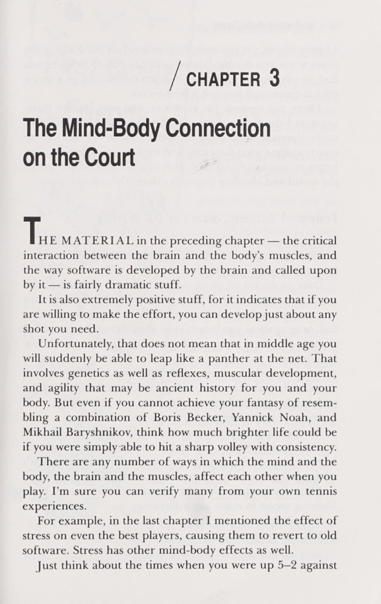
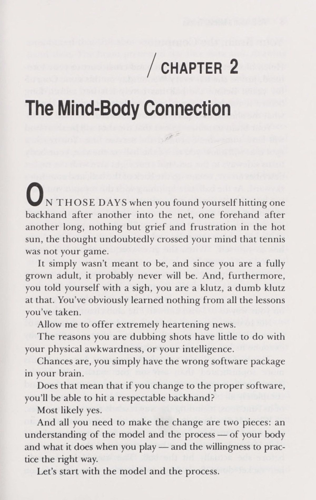
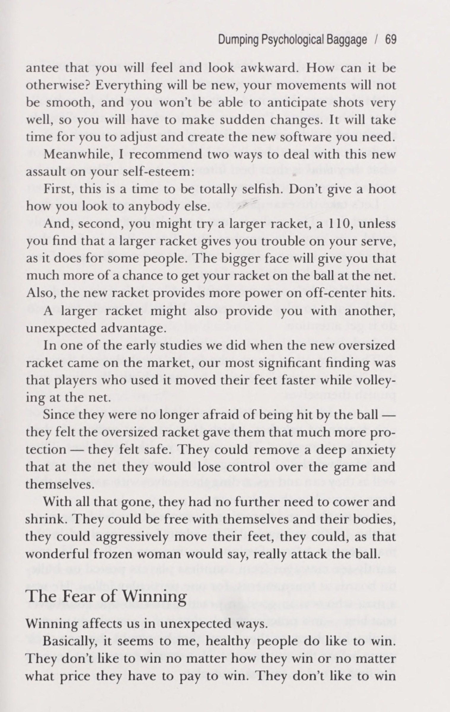
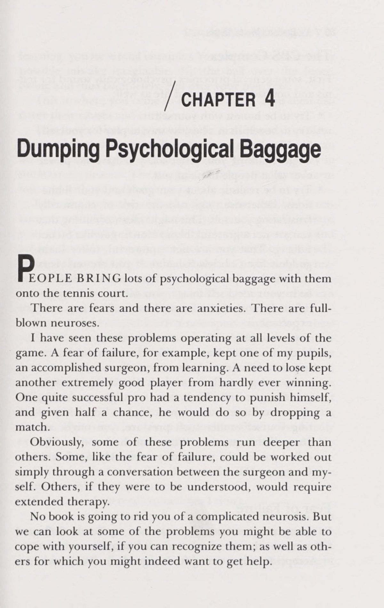
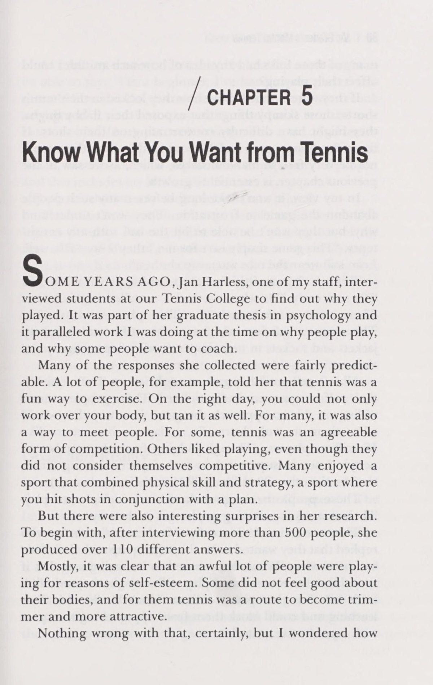
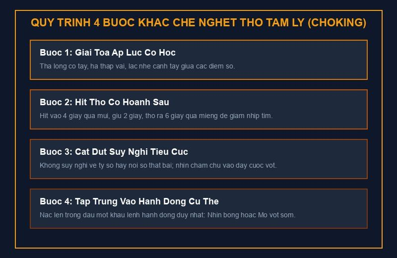
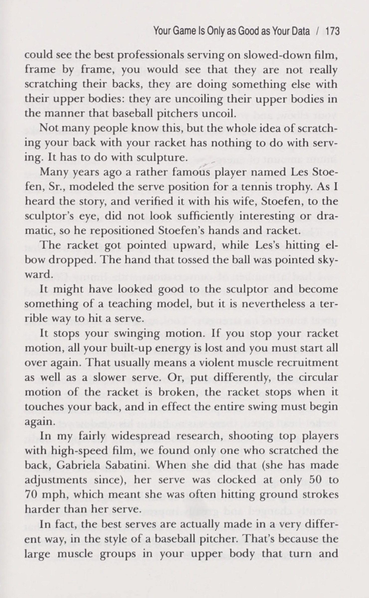
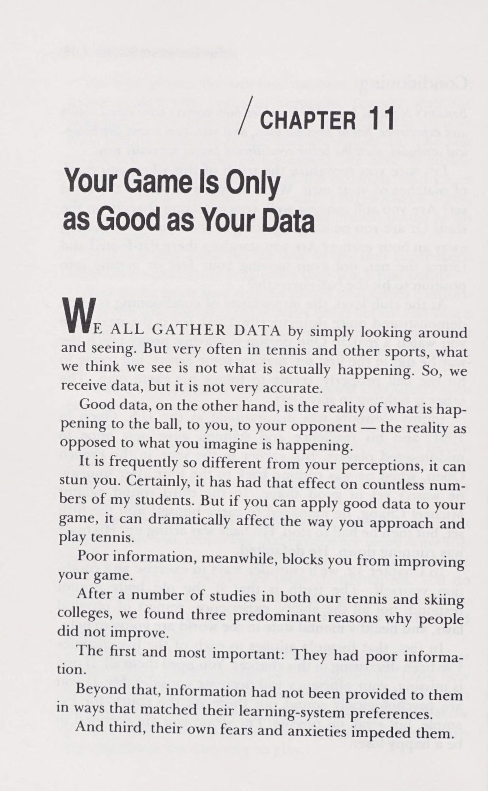
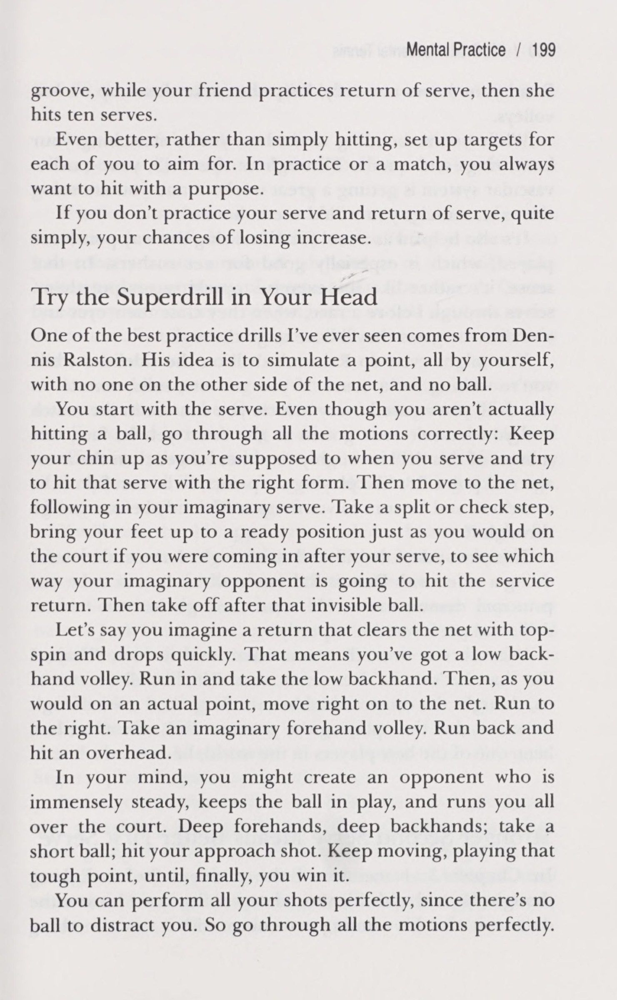
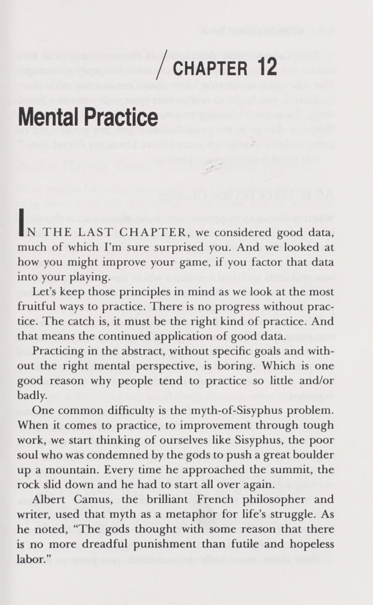

Tâm Lý Học Quần Vợt (Vic Braden's Mental Tennis)
Bản dịch Việt ngữ này chỉ dùng cho mục đích học tập cá nhân, phi thương mại. Bản quyền tác phẩm gốc thuộc về tác giả và nhà xuất bản.
Phần I: Kết Nối Tâm - Thân & Bốn Khái Niệm Cốt Lõi Của Quần Vợt Tâm Lý
Part I: Understanding Your Mind, Your Body, and Yourself on the Court
Nền tảng tâm lý học và cơ chế sinh lý thần kinh: Bộ não là máy tính chủ, cơ bắp là thiết bị đầu cuối và nghịch lý tại sao càng cố đánh an toàn thì càng đánh hỏng.
Chương 1: Bốn Khái Niệm Cốt Lõi Của Quần Vợt Tâm Lý (Four Concepts of Mental Tennis)
Chapter 1: Four Concepts of Mental Tennis
Tennis / CHƯƠNG 1 Bốn khái niệm về tinh thần Tennis trong NIS là một trò chơi tâm lý.
Mọi người luôn nói với tôi điều đó, và với tư cách là một huấn luyện viên quần vợt và một nhà tâm lý học được cấp phép, tôi chắc chắn đồng ý.
Nhưng tôi thường thấy rằng điều mọi người thực sự muốn nói là "Giá như tôi có thể làm chủ được khía cạnh tinh thần của quần vợt, thì sẽ chẳng có vấn đề gì nếu cú đánh của tôi tệ hại." Nếu bạn mua cuốn sách này với ý nghĩ đó, hãy lấy lại tiền của bạn.
Cuộc sống và quần vợt không diễn ra như vậy.
Bạn vẫn cần những cú đánh để chơi tennis tốt, nhưng bạn chắc chắn sẽ mở rộng khả năng phát triển những cú đánh đó và chơi tốt hơn nếu bạn có thể nắm bắt được trò chơi tinh thần. Và bạn cũng sẽ tận hưởng trò chơi nhiều hơn nữa.
Đối với tôi, quần vợt tinh thần bao gồm bốn khái niệm mà chúng tôi sẽ xem xét trong cuốn sách này. Nếu bạn có thể tích hợp chúng và áp dụng chúng vào trò chơi của mình, chúng sẽ thay đổi cách bạn tiếp cận quần vợt. Trên thực tế, bạn sẽ không bao giờ chơi quần vợt theo cách cũ nữa.
Đây là điều tôi đang nói đến: 1. Kết nối giữa tâm trí và cơ thể. ‘Quần vợt là môn thể thao trí tuệ và thể chất, môn này ảnh hưởng sâu sắc đến môn kia. Tâm trí và cơ thể của bạn phối hợp với nhau theo những cách đáng ngạc nhiên khi bạn chơi. Hiểu mối quan hệ này, cách bộ não/máy tính tương tác với các bộ truyền thần kinh, cảm biến và cơ bắp của cơ thể, cách phần mềm cho mỗi cú đánh được tạo ra và mã hóa trong não, cách nó có thể được thay đổi — hiểu tất cả những điều đó có thể cho phép bạn thay đổi kỹ thuật, cải thiện cú đánh, dự đoán các cú đánh, thậm chí tiếp cận việc luyện tập theo một cách khác. Đó có thể là điều đáng mong đợi từ một hiểu biết sâu sắc, nhưng như chúng ta sẽ thấy trong chương 2 và 3, tất cả đều có thể xảy ra.
2. Các trạng thái tâm lý, tâm trạng, ảnh hưởng, cảm xúc và các vấn đề đều ảnh hưởng đáng kể đến trò chơi của bạn. Bạn không cần sáu năm phân tích tâm lý để thực hiện một cú giao bóng, nhưng việc bộc lộ rõ ràng, đối mặt và hiểu được sự lo lắng và/hoặc nỗi sợ hãi xâm chiếm bạn khi bạn giao bóng hoặc khi bạn liên tục mắc lỗi kép, cuối cùng có thể cho phép bạn trở thành một người giao bóng hiệu quả.
Quần vợt tinh thần cũng liên quan đến thái độ. Ví dụ: để cải thiện trò chơi của bạn, bạn có thể nghĩ rằng bạn sẽ phải thực hiện bảy điều chỉnh riêng biệt.
Điều đó có thể khiến bạn nản lòng và có thể khiến bạn cảm thấy mọi nỗ lực đều vô vọng. Tuy nhiên, từ các phép đo thống kê của một số trận đấu chuyên nghiệp, theo dõi số cú đánh mà mỗi tay vợt đánh vào mỗi điểm, tôi đã phát hiện ra rằng việc nâng cao trình độ trận đấu của bạn trên thực tế có thể đơn giản hơn nhiều: để có kết quả đáng ngạc nhiên, hãy đánh lại thêm một quả bóng nữa.
Càng hiểu bản thân, bạn càng trút bỏ được gánh nặng tâm lý - cho dù đó là sự tức giận trên sân, suy sụp vì căng thẳng, nỗi sợ thất bại (hoặc chiến thắng), như chúng ta sẽ khám phá trong chương 4 và 5 - trước khi bước vào sân, và bạn càng học cách đối phó với những khủng hoảng tâm lý nảy sinh trên sân, bạn sẽ càng chơi tốt hơn. 3. “Tinh thần” hàm ý quần vợt “thông minh” và “thông minh”. Điều đó có nghĩa là hiểu và kết hợp dữ liệu tốt vào trò chơi của bạn. Quả thực, trò chơi của bạn chỉ tốt khi dữ liệu của bạn tốt. Đối với một nhà tâm lý học, điều này có nghĩa là thừa nhận rằng những gì chúng ta nhìn thấy thường rất khác so với những gì đang thực sự xảy ra.
Bốn khái niệm về quần vợt tinh thần / 5 Để tạo ra xoáy lên ở cú thuận tay của bạn, chẳng hạn, bạn không lật đầu vợt của mình qua đầu quả bóng, như rất nhiều người hâm mộ Bjorn Borg đã bắt đầu làm sau khi xem nhà vô địch Wimbledon năm lần đánh cú xoáy lên cực kỳ mạnh mẽ của anh ấy. Họ nghĩ rằng họ đã nhìn thấy anh ta lăn vợt qua quả bóng. Nhưng đó hoàn toàn không phải là điều anh đã làm. Từ phim tốc độ cao, tôi đã có thể tiết lộ một quy trình hoàn toàn khác mà chúng tôi sẽ xem xét trong ena pees 11, và kết hợp dữ liệu đó với nhau chính là điều tôi muốn gọi là quần vợt “thông minh”.

Điều này áp dụng cho toàn bộ trò chơi của bạn. Ví dụ: đo lường cách bạn học tốt nhất và đưa thông tin đó vào việc lựa chọn người hướng dẫn quần vợt của bạn. Hoặc đối đầu với huyền thoại bắn phẳng vĩ đại. Cú sút của Jimmy Connors có thể trông như thể nó chỉ cách lưới 6 inch, nhưng thực tế, mức trung bình với những cú sút sâu của anh ấy giống như cách lưới 3 hoặc 4 feet. Hoặc, áp dụng định luật trọng lực vào cú giao bóng của bạn. Tung cao hơn không có nghĩa là tốt hơn.
Như tôi nghĩ bạn sẽ thấy, dữ liệu có thể còn thú vị hơn về mặt học thuật. Bạn có thể thay đổi cách chuẩn bị trả giao bóng, nếu bạn hiểu cách mắt bạn đón quả bóng đang lao về phía bạn và gửi một thông điệp đến não, sau đó não sẽ mất khoảng 200 mili giây - 1/5 giây - để huy động các cơ để đánh quả bóng đó. Nếu các bài kiểm tra cũng cho thấy rằng một cú giao bóng với vận tốc 80 dặm/giờ từ đối thủ của bạn đến với bạn trong khoảng một giây, thì bạn có thể biết được mình có ít thời gian để chuẩn bị và vung vợt. Bạn phải bắt đầu dự đoán cú giao bóng đó. Và như chúng ta sẽ thấy, một trong những cách bạn có thể làm điều đó là chọn các tín hiệu từ đối thủ, chẳng hạn như nơi anh ta thực hiện cú giao bóng, báo hiệu nơi anh ta có nhiều khả năng sẽ thực hiện cú giao bóng của mình nhất.
Việc xem xét loại dữ liệu hữu ích đó, như chúng tôi sẽ thực hiện xuyên suốt cuốn sách này, hy vọng sẽ giúp bạn từ bỏ những ý tưởng sai lầm mà bạn đã ấp ủ và ấp ủ cũng như thay đổi những nét vẽ đã gây rắc rối cho bạn trong nhiều năm.
4. “Tâm thần” cũng bao hàm những chiến lược.
Đối với nhiều người, nói rằng quần vợt là một trò chơi tâm lý hoặc tinh thần có nghĩa là điều hiển nhiên: một trò chơi khiến đối thủ mất tinh thần và một trò chơi trong đó các lực tâm lý luôn tác động lên chúng ta.
Tất nhiên điều đó là đúng, nhưng tôi muốn mở rộng ý tưởng.
Đối với tôi, “tinh thần” cũng có nghĩa là làm việc thông qua ba khái niệm đầu tiên ở trên và áp dụng chúng vào trò chơi của bạn. Điều đó sẽ cho phép bạn khám phá những cách mới để tiếp cận đối thủ và trận đấu, những kiểu kế hoạch thi đấu mới, thái độ mới đối với những thời điểm khó khăn trước đây, những phản ứng mới trước những tình huống thông thường giờ đây đã được lập trình trong não bạn.
Tất cả những điều đó sẽ giúp bạn hạn chế lỗi và chơi hiệu quả hơn.
Hãy làm điều đó và bạn sẽ yêu thích quần vợt hơn bao giờ hết, đồng thời bạn cũng sẽ cảm thấy hài lòng hơn về bản thân.
Sự kết hợp tuyệt vời.
Chương 2: Mối Liên Hệ Tâm - Thân: Bộ Não Và Cơ Bắp (The Mind-Body Connection)
Chapter 2: The Mind-Body Connection
Bật / CHƯƠNG 2 Mối liên hệ giữa tâm trí và cơ thể VÀO NHỮNG NGÀY khi bạn thấy mình đánh hết trái tay này đến trái tay khác vào lưới, hết cú thuận tay này đến cú thuận tay khác trong thời gian dài, không có gì ngoài sự đau buồn và thất vọng dưới nắng nóng, chắc chắn bạn đã có ý nghĩ rằng quần vợt không phải là trò chơi của bạn.
Đơn giản là điều đó không hề có ý nghĩa như vậy, và vì bạn đã là một người trưởng thành hoàn toàn nên có lẽ điều đó sẽ không bao giờ như vậy. Và hơn nữa, bạn thở dài tự nhủ, mình là một kẻ ngu ngốc, một kẻ ngu ngốc. Rõ ràng là bạn chưa học được gì từ tất cả những bài học bạn đã học.
Cho phép tôi đưa ra một tin tức vô cùng phấn khởi.
Lý do bạn lồng tiếng cho các cảnh quay không liên quan nhiều đến sự vụng về về thể chất hay trí thông minh của bạn.
Rất có thể, đơn giản là bạn đã cài nhầm gói phần mềm trong não.
Điều đó có nghĩa là nếu bạn thay đổi sang phần mềm thích hợp, bạn sẽ có thể đánh được một cú trái tay đáng nể phải không?
Rất có thể là có.
Và tất cả những gì bạn cần để thực hiện thay đổi là hai phần: sự hiểu biết về mô hình và quy trình - về cơ thể bạn và những gì nó làm khi bạn chơi - và sự sẵn sàng luyện tập đúng cách.
Hãy bắt đầu với mô hình và quy trình.
Bộ não của bạn, Máy tính Helen đánh một cú thuận tay chéo góc sang phía thuận tay của bạn, giống như cô ấy đã làm vào thứ Tư hàng tuần trên cùng Sân số 5 này trong nhiều năm. Trước khi bóng vừa rời khỏi vợt của cô ấy, rất lâu trước khi nó chạm tới lưới, cơ thể bạn đã đoán trước được nó, biết cú đánh là gì và bắt đầu di chuyển về phía trước.
Bằng cách nào đó, bộ não của bạn biết rằng cú đánh sẽ ngắn và sẽ hạ cánh ở đâu đó xung quanh đường giao bóng. Bạn đạt đến một vị trí cho phép bạn đánh bóng khi đang bay lên, cơ thể bạn nghiêng sang một bên về phía lưới và cánh tay phải cầm vợt của bạn tạo thành một vòng cung, đưa bóng lên phía sau và tiếp tục hướng lên trời. Khi quả bóng, bây giờ đang quay với cú xoáy lên mà bạn đã tạo, hướng tới phần sân rộng mở, cơ thể của bạn di chuyển về phía lưới, mặc dù bạn có thể thấy rằng Helen có thể sẽ không đến gần cú đánh của bạn. Cô ấy thậm chí không thử.
Bạn đã giành được điểm và cảm thấy hài lòng về điều đó. “Ừ,” bạn rít lên với chính mình. “Khi cô ấy đưa cho bạn quả bóng ngắn đó, hãy tiến lên và cất nó đi.” Vào khoảnh khắc chiến thắng thoáng qua đó, bạn có thể gán cho mình những sức mạnh to lớn. Nếu bạn có thể tiếp tục chơi như vậy, bạn không chỉ bắt đầu đánh bại Helen thường xuyên mà còn đang trên đường đến... ai biết được? Câu lạc bộ vô địch?
Không phải để từ chối niềm vui của bạn, nhưng hãy loại bỏ quan điểm đó khỏi các yếu tố cảm xúc của nó và xem xét cơ chế kém hấp dẫn hơn của nó theo một cách đơn giản hơn.
Hãy coi bộ não của bạn như một chiếc máy tính khổng lồ nhưng phức tạp hơn bất kỳ chiếc máy tính nào trên thị trường. Mặc dù bộ não con người vẫn còn quá phức tạp để bất cứ ai có thể hiểu hết mọi hoạt động của nó, nhưng chúng ta có thể giám sát một số chức năng của nó, bao gồm cả cách nó gửi tín hiệu đến cơ bắp.
Khi Helen chạm vào miếng bánh bẩn thỉu của cô ấy, mắt bạn sẽ thu được một hình ảnh và chuyển nó vào não. Vì bạn đã chơi với Helen trong nhiều năm nên não của bạn đã dịch hình ảnh đó ngay cả trước khi cô ấy thực sự đánh bóng. Cách Helen đưa vợt của cô ấy từ cao xuống thấp theo một chuyển động cắt nhỏ. Kết nối cơ thể-tâm trí / 9 thông báo rằng cú đánh này sẽ là cú đánh thuận tay quen thuộc của cô ấy. Bộ não xử lý dữ liệu lát cắt và dựa trên trí nhớ về cú đánh đó, sử dụng các cơ cần thiết để đưa cơ thể bạn di chuyển về phía trước, dự đoán một cú đánh ngắn.
Khi quả bóng ở trên không, mắt bạn sẽ thu được hình ảnh của nó và truyền dữ liệu bổ sung đến não: tốc độ tương đối của quả bóng, kiểu quay của nó, chiều cao của nó, hướng của nó.
Trong vòng khoảng 200 mili giây, 1/5 giây, não của bạn đã liên kết tất cả dữ liệu này và huy động các cơ cần thiết để thực hiện cú đánh thuận tay sẽ phản ứng hiệu quả với cú đánh của Helen.
Một người chiến thắng mà bạn không dành cho đôi mắt, bộ não hay cơ bắp của mình một chút tín nhiệm nào.
May mắn thay, bạn đã có cú sút cần thiết để đưa quả bóng đó đi. May mắn thay, nói cách khác, bộ não của bạn đã có gói phần mềm cụ thể mà nó có thể sử dụng. Mặc dù bạn không nhận ra điều đó nhưng bạn đã tạo ra phần mềm đó và ghi nó vào não mình trong suốt nhiều tháng. Đó là trong khoảng thời gian đó năm ngoái khi bạn làm việc đi làm lại với chuyên gia của mình về cú đánh tiếp cận xoáy lên của bạn. Trước đó, bạn thường lấy quả bóng ngắn của Helen và sút nó ra khỏi hàng rào phía sau, hết lần này đến lần khác.
Trong sự thất vọng tột độ, cuối cùng bạn cũng quay sang người chuyên nghiệp và kể cho anh ấy nghe chuyện gì đang xảy ra. “Hãy bắt tay vào việc thôi,” anh ấy nói với bạn, và đó là điều bạn đã làm. Bạn đã nói với bạn bè của mình trong thời gian đó rằng chỉ sau một trăm năm thi đấu, cuối cùng bạn đã phát triển được một cú đánh tiếp cận có thể trụ vững trên sân.
Chuyện gì đang xảy ra thế này.
Vài năm trước, bạn đã học được cách thực hiện cú đánh tiếp cận ban đầu đó. Đó là cú đánh mà bạn đã tự học trong khoảng thời gian mở rộng trò chơi của mình - khi bạn bắt đầu mạo hiểm từ sự an toàn của đường cuối sân, nơi bạn cảm thấy mình có nhiều thời gian hơn để phản ứng với bóng và có nhiều thời gian hơn để tiếp cận nó - sang phong cách chơi tích cực hơn mà gần như tất cả các tay vợt chuyên nghiệp giỏi nhất đều sở hữu, trò chơi trên lưới.
Nhanh chóng, bạn nhận ra rằng một trận đấu với đối thủ khá khác so với luyện tập. Trong thực tế, bạn có thể định vị mình trên lưới và tung cú vô lê hết quả này đến quả khác. Nhưng trong một trận đấu, bạn phải tự mình đưa mình lên lưới. Vì vậy, cú đánh tiếp cận.
Có lẽ bởi vì bạn đã thấy nhiều chuyên gia khác nhau đánh bóng thẳng và mạnh - hoặc ít nhất nó trông như vậy trên màn hình TV của bạn - nên bạn cũng bắt đầu đánh nó theo cách đó. Và bạn đã phát hiện ra rằng, khi bạn thực hiện cú sút, đó có thể là một cú đánh thắng sạch hoặc một cú đánh rất khó để đối thủ của bạn đánh trả. Ngoài ra, nó cảm thấy tuyệt vời để đánh. Mạnh mẽ. Để chắc chắn, bạn đã đánh được rất nhiều trong số chúng trong thời gian dài, nhưng theo thời gian, bạn nhận ra rằng, bạn sẽ giải quyết được trục trặc nhỏ đó.
Đối với bộ não/máy tính của bạn, bạn đã bắt đầu phát triển một gói phần mềm trong khoảng từ mười đến hai mươi cú đánh với cú đánh tiếp cận phẳng, cứng đó.
Nếu bạn nối dây, bạn sẽ có thể nhìn thấy cái được gọi là dấu hiệu phát triển trên máy hiện sóng.
Sự co cơ của bạn sẽ bắt đầu phản ánh chữ ký của bạn trên máy và sau khoảng 50 lần nhấn, bạn có thể thấy một khuôn mẫu rõ ràng.
Chữ ký của bạn cho cú đánh tiếp cận đó hoặc cho bất kỳ cú đánh nào là cực kỳ chính xác. Trong một thí nghiệm điển hình, đồng nghiệp và cố vấn cơ sinh học của tôi, Tiến sĩ Gideon Ariel và tôi đã kết nối một trăm sinh viên về cơ bản đều có cú thuận tay giống nhau.
Chúng tôi đã đăng ký chữ ký của họ bằng điện cơ. Sau đó tôi đã cố gắng đánh lừa cái máy đó. Tôi có học sinh số 46 bị đánh không theo thứ tự. Nhưng chữ ký chính xác đến mức máy ngay lập tức xác định được học sinh số 46.
Một khi mô hình đã được thiết lập - nói cách khác là một khi phần mềm đã ở trong não bạn - nó sẽ ở đó trong nhiều thập kỷ.
Cách đây không lâu, tôi đang thực hiện một thí nghiệm cho Hiệp hội những người buộc dây vợt Hoa Kỳ, cố gắng đo lường sự khác biệt giữa dây nylon và ruột. Một trong những bài kiểm tra là so sánh tốc độ bóng được truyền đạt bởi mỗi người.
Tôi lấy hai cây vợt có trọng lượng giống hệt nhau và mang lên The Mind-Body Connection / 11 trên sân, một cây vợt được buộc bằng nylon, cây kia bằng ruột. Tôi được nối dây để ghi lại một số câu trả lời. Với chiếc máy bắn bóng vào tôi, tất cả ở cùng một tốc độ, lần đầu tiên tôi đánh mười quả bằng ruột, sau đó, không bỏ lỡ nhịp hay quả bóng nào, tôi chuyển sang dùng nylon. Sau quả bóng nylon đầu tiên, Tiến sĩ Ariel chạy ra khỏi phòng thí nghiệm.
“Chuyện gì đã xảy ra vậy?” anh ấy hét lên. "Bạn đã làm cái quái gì vậy? Với quả bóng thứ mười một, chữ ký của bạn đã thay đổi." Tôi đã không nhận ra điều đó, nhưng tôi có chữ ký ruột và chữ ký nylon. Và mặc dù tôi đã không đánh bóng bằng nylon trong khoảng ba mươi năm, bộ não của tôi vẫn giữ lại phần mềm nylon đó, và khi tôi đổi vợt, tôi báo động cho bộ não của mình và xuất hiện chữ ký cũ đó.
Tương tự như vậy, bạn phát triển một đặc điểm cho mỗi cú đánh và bạn sẽ đánh từng cú đánh theo cùng một cách. Nói một cách đơn giản hơn, nếu hình ảnh và dữ liệu mà mắt bạn truyền tới não khiến não tính toán rằng cần phải thực hiện cú đánh trái tay, nó sẽ truy xuất gói phần mềm có sẵn cho cú đánh đó và triệu tập các cơ cần thiết.
Có một gói phần mềm cho mỗi lần chụp. Ví dụ, có một phương pháp làm cho quả bóng quay 30 vòng mỗi giây, chuyển động với một tốc độ nhất định trên một trục cụ thể.
Có một nguyên nhân khác khiến quả bóng quay 80 vòng mỗi giây.
Điều này không có nghĩa là nếu bạn sử dụng phần mềm để đánh, chẳng hạn như cú trái tay, cú đánh của bạn sẽ mang lại kết quả tương tự và đi đến cùng một vị trí mỗi lần. Quần vợt sẽ trở nên máy móc một cách vô vọng nếu điều đó xảy ra, nhưng có một biến số quan trọng trong mỗi cú đánh: bóng nảy khác nhau mỗi lần.
Bạn cũng có thể cung cấp biến của riêng mình. Trong thực tế, bạn đánh trái tay chính xác cả trăm lần. Nhưng trong trận đấu, bạn đánh hơi lệch. Có chuyện gì vậy? Có lẽ là lo lắng, như chúng ta sẽ thấy ngay sau đây.
Để quay lại cảnh quay tiếp cận, bạn gặp một vấn đề máy tính quen thuộc: rác vào, rác ra. Bạn đã tạo ra một gói phần mềm khiến quả bóng bay rất lâu, hết lần này đến lần khác. Bạn thậm chí còn cười nhạo sự kiên định đáng kinh ngạc của mình với cú đánh. Bạn muốn làm gì đó với nó, phải làm gì đó với nó, và đó là lúc chuyên gia của bạn nói, “Hãy bắt tay vào làm thôi.” Điều cuối cùng xảy ra là bạn đã thay đổi phần mềm đó. Bạn đã trải qua một quá trình học cách vận động để thay đổi chữ ký của mình. Nó không hề dễ dàng. Nó không bao giờ như vậy. Nhưng hãy nghĩ xem điều này có nghĩa là gì: Nếu sẵn sàng nỗ lực, bạn có thể khắc phục bất kỳ cơn đột quỵ nào mà mình mắc phải, ngay cả khi bạn đã phải chịu đựng nó trong nhiều năm. Điều đó có nghĩa là bạn không phải là tù nhân của những sai lầm trong quá khứ. Bạn có thể phát triển các gói phần mềm mới tuyệt vời cho chính mình.
Cuộc đấu tranh Tuy nhiên, nếu bạn định nỗ lực, bạn nên tiếp cận quá trình với sự hiểu biết rằng bộ não không thay đổi gói phần mềm một cách nhanh chóng. Thông thường, phải mất khoảng hai tháng đấu tranh khá tập trung và đó là lý do tại sao nhiều tay vợt không bao giờ sửa những lỗi cơ bản trong trò chơi của mình. Họ không có đủ kiên nhẫn và quyết tâm. Họ mong muốn sửa chữa nhanh chóng. Nhưng bộ não không hoạt động theo cách đó.
Như bạn đã khám phá. Phải mất một thời gian để nắm bắt được cơ chế của cách tiếp cận mới, động tác bằng chân, ý tưởng đánh bóng khi bạn đang chạy về phía trước. Nhưng chẳng bao lâu sau, bạn đã hiểu mình nên làm gì.
Tuy nhiên, có vẻ như bạn không làm điều đó. Có vẻ như bạn đang thực hiện cú đánh cũ của mình với động tác chân hơi khác.
Bây giờ não của bạn đang phản kháng. Nó chưa đăng nhập vào phần mềm mới và vẫn gắn bó với gói cũ của bạn. Tuy nhiên, khi bạn kiên trì cố gắng thực hiện cú đánh mới, khi bạn sử dụng các cơ khác nhau và rèn luyện chúng, bộ não Kết nối Cơ thể-Tâm trí/13 đã thu thập từng yếu tố, từng chút một, của một dấu hiệu mới cho cú đánh tiếp cận.
Học vận động khá khác với học trí tuệ. Bạn đọc một cuốn sách và chỉ có một trang là câu trả lời bạn đang tìm kiếm. "Tuyệt," bạn nói, "Tôi hiểu rồi. Bây giờ tôi hiểu rồi." Nhưng trong quá trình học vận động, bạn có thể biết mình muốn làm gì, nhưng bộ não lại trả lời: “Không sao đâu, nhưng tôi vẫn còn một gói hàng ở đây và tôi đang giữ nó.” Để thực hiện một sự thay đổi như thế này thành công, bạn cần có thông tin tốt cũng như môi trường học tập tốt, thường có nghĩa là một huấn luyện viên nuôi dưỡng việc học. Chẳng hạn, thật may mắn cho bạn là huấn luyện viên của bạn biết tầm quan trọng của hình thức luyện tập phù hợp trong thời gian này. Và bạn đã làm được điều đó. Nếu không, có thể phải mất một thời gian dài nó mới thay đổi được.
Tôi đã thấy vô số người cố gắng thực hiện một sự thay đổi như vậy, nhưng nỗ lực duy nhất họ thực hiện là khi họ làm việc với những người chuyên nghiệp. Họ có một bài học, và khi kết thúc bài học đó, họ bắt đầu thực hiện một số thay đổi, một lợi ích ngắn hạn. Vào thời điểm đó, bất kỳ chuyên gia giỏi nào cũng sẽ kết thúc bài học đó bằng một lời cảnh cáo và một lời biện hộ. “Cú đánh tiếp cận mới này có thể khiến bạn cảm thấy khó xử mỗi khi cố gắng đánh nó,” anh ấy sẽ cảnh báo. "Nhưng đừng để điều đó ngăn cản bạn. Từ bây giờ đến bài học của chúng ta vào tuần tới, hãy tiếp tục thực hiện theo cách chúng ta đã làm và bạn sẽ bắt đầu thấy kết quả." Điều luôn xảy ra giữa các buổi học là mọi người không thực hành cú đánh theo cách lẽ ra phải đánh.
Và trong một trận đấu mà họ thi đấu vào tuần đó, sau một vài lần thử thực hiện cú đánh mới mà thậm chí không hề nhận ra, họ lại quay trở lại cú đánh tiếp cận cũ, phần mềm cũ.
Kết quả là, ở bài học tuần sau, họ bắt đầu thực tế trở lại từ câu đầu tiên. Họ không nhận ra rằng trừ khi họ thực hành cú đánh mới, trừ khi họ kiên trì với cú đánh mới, dù có thể cảm thấy khó xử, họ sẽ không phát triển được phần mềm mới.
Vấn đề tương tự cũng phổ biến ở những người trượt tuyết, như tôi đã khám phá ra tại trường Cao đẳng Trượt tuyết của tôi ở Aspen, Colorado. Thông thường, một vận động viên trượt tuyết chỉ trượt tuyết một tuần một năm. Anh ấy bắt đầu làm mọi thứ sai vào thứ Hai. Đến thứ Sáu, ngay cả khi anh ấy không thực hiện một nỗ lực đáng kể nào, anh ấy vẫn trượt tuyết tốt hơn phần nào, nếu vẫn còn tệ. Tuy nhiên, vào mùa đông năm sau, anh ấy lại quay trở lại nơi anh ấy đã ở vào thứ Hai năm trước.
Thay vào đó, nếu anh ấy học bài và nỗ lực thay đổi kỹ năng vận động cũng như trượt tuyết đủ trong tuần để bắt đầu trở nên thoải mái với chữ ký mới, xa lạ đó, thì năm sau, vào cuối ngày thứ Hai, anh ấy sẽ đạt được vị trí mà anh ấy đã dừng lại của năm trước. Anh ấy có thể xây dựng từ đó.
Thực hiện một sự thay đổi như vậy là đặc biệt khó khăn trong xã hội của chúng ta, vì xã hội này xét cho cùng chỉ khuyến khích những lợi ích ngắn hạn. Như bạn đã khám phá, đó là một cuộc đấu tranh thực sự, một cuộc đấu tranh với chính mình, một cuộc đấu tranh để chịu đựng sự khó chịu của cảnh quay mới này và để chống lại việc quay trở lại với những gì quen thuộc. Những khó khăn này gây ra vấn đề cho nhiều tay vợt, những người vô thức phá hoại nỗ lực thay đổi và cải thiện của chính họ. Như chúng ta sẽ thấy trong Chương 4, họ có tâm lý dễ bị thua hơn là thắng.
Từ lâu, tôi đã nói với các học trò của mình rằng nếu nỗi đau mà bạn phải chịu khi không chơi tốt như mong muốn và khi thua trận lớn hơn nỗi đau mà bạn phải chịu khi thực hiện một sự thay đổi trong trận đấu của mình, thì tiên lượng của bạn rất tuyệt vời. Nhưng nếu nỗi đau mà bạn phải chịu khi thực hiện một sự thay đổi trong trò chơi của mình lớn hơn thì tiên lượng của bạn sẽ rất ảm đạm. Bạn sẽ phải chịu đựng nỗi thất vọng khi lặp đi lặp lại cùng một sai lầm.
Sẽ thường hữu ích trong cuộc đấu tranh này nếu bạn có thể tự nhủ rằng sự thay đổi sẽ không chỉ loại bỏ nỗi đau khỏi trò chơi của bạn mà còn tăng thêm niềm vui.
Và hơn nữa, đó là một sự thay đổi có thể kéo dài suốt đời.
Một khi bạn thay đổi gói phần mềm, trò chơi của bạn sẽ không bao giờ giống nhau, và bạn cũng vậy.
Mối liên hệ giữa tâm trí và cơ thể / 15 Hãy cẩn thận với yếu tố căng thẳng Sau khoảng hai tháng thực hành cú đánh mới, bạn bắt đầu thấy trên máy hiện sóng rằng dấu hiệu mới xuất hiện khoảng 70% thời gian. Điều đó có nghĩa là trên sân, bộ não sẽ sử dụng phần mềm mới.
Nhưng chuyện cũ vẫn chưa xóa được.
Thông thường, tại một thời điểm đặc biệt căng thẳng của trận đấu, khi trận đấu quyết định chức vô địch và số tiền lớn, chúng ta thấy các chuyên gia hàng đầu chuyển sang phòng thủ. Gần như thể họ quay trở lại sự an toàn trong phong cách cũ của mình và bạn thấy những dấu ấn cũ đang len lỏi trở lại lối chơi của họ. Nhưng nếu họ có thể ngăn chặn sự căng thẳng đó, thì họ sẽ có thể đánh bóng theo cách mà họ phải đánh, theo cách mà bản chất mới, cải tiến của họ sẽ phản ứng với nó. Cho dù họ ở trên 40 tình yêu hay dưới 40 tình yêu, chữ ký của họ trên máy hiện sóng phải giống nhau.
Những tay vợt xuất sắc nhất, như Rod Laver hay Connors, đều nổi tiếng với những màn lội ngược dòng. Chúng ta đã có một ví dụ thú vị về điều này từ Connors ở giải Mỹ mở rộng năm 1991. Anh ấy đã thua năm game với hai và ba điểm trận đấu trong set thứ năm trước Aaron Krickstein, nhưng anh ấy đã trở lại và giành chiến thắng.
Connors đánh mọi cú đánh như anh ấy thường đánh.
Bất kể tỷ số ra sao, cú sút, chữ ký của anh ấy đều giống nhau.
Krickstein, mặt khác, dưới áp lực lớn, đã chơi an toàn ngay từ vạch cuối sân. Điều đó có thể hiệu quả với một đối thủ yếu hơn, nhưng chống lại Connors - người đã phát triển nhờ áp lực như vậy và ở trong những lỗ hổng như vậy, người là bậc thầy trong việc sử dụng đám đông để hỗ trợ bản thân trong những tình huống như vậy - Krickstein lẽ ra phải biết rằng anh ta phải gọi một gói phần mềm khác và truy cập mạng. Anh buộc phải chơi. Connors sẽ không để anh ta thắng nếu không. Nhưng Krickstein không có gói hàng đó để triệu hồi; anh ấy ở lại đường cuối sân thay vì buộc những điểm cuối cùng đó vào lưới. Vậy là anh đã thua.
Chúng ta sống hoặc chết bởi phần mềm của mình.
Bạn có thể ghi nhớ điều đó, lần tới khi bạn nhận được một trong những lợi nhuận ngắn hạn của Helen ở một điểm đặt trước lớn và, trong một sự hồi quy hoàn toàn về những ngày xưa, hãy phá hủy nó. Thay vì mắng mỏ và thầm chửi rủa bản thân, hãy dừng lại và suy ngẫm.
Rất có thể bạn đã không tập trung vào việc đánh cú đánh đó đúng cách, cách bạn sẽ đánh nó bất kể tỷ số là bao nhiêu, nếu đó là điểm đầu tiên của trận đấu khi không có áp lực, khi bạn không nghĩ thay vì nghĩ đến việc chiến thắng sắp đến ngọt ngào như thế nào.
Bạn phải quên đi điểm số. Và cách để làm điều đó là chỉ tập trung vào những yếu tố quan trọng trong việc vuốt bóng.
Nếu bạn làm như vậy, bạn sẽ có thể kết nối với gói phần mềm mới của mình và từ vợt của bạn sẽ có được cú đánh tiếp cận xoáy lên đáng yêu, khó kiếm được, một cú đánh thắng sạch.
Chương 3: Kết Nối Tâm - Thân Thực Chiến Trên Sân Đấu (The Mind-Body Connection on the Court)
Chapter 3: The Mind-Body Connection on the Court
/ CHƯƠNG 3 Mối liên hệ giữa tâm trí và cơ thể trên sân đấu 'li E VẬT LIỆU trong chương trước - sự tương tác quan trọng giữa não và các cơ của cơ thể, cũng như cách phần mềm được bộ não phát triển và được nó yêu cầu - là một nội dung khá kịch tính.
Đó cũng là một điều cực kỳ tích cực, vì nó cho thấy rằng nếu bạn sẵn sàng nỗ lực, bạn có thể phát triển bất kỳ cảnh quay nào bạn cần.
Thật không may, điều đó không có nghĩa là ở tuổi trung niên bạn sẽ đột nhiên có thể nhảy vào lưới như một con báo. Điều đó liên quan đến di truyền cũng như phản xạ, sự phát triển cơ bắp và sự nhanh nhẹn có thể là lịch sử cổ xưa đối với bạn và cơ thể bạn. Nhưng ngay cả khi bạn không thể đạt được ước mơ giống mình là sự kết hợp giữa Boris Becker, Yannick Noah và Mikhail Baryshnikov, hãy nghĩ xem cuộc sống có thể tươi sáng hơn biết bao nếu bạn chỉ đơn giản là có thể tung ra một cú vô lê sắc bén một cách nhất quán.
Có rất nhiều cách mà tâm trí và cơ thể, bộ não và cơ bắp ảnh hưởng lẫn nhau khi bạn chơi. ’ chắc chắn rằng bạn có thể xác minh nhiều điều từ kinh nghiệm chơi quần vợt của chính mình.
Ví dụ, trong chương trước tôi đã đề cập đến tác động của sự căng thẳng đối với ngay cả những tay vợt giỏi nhất, khiến họ quay lại phần mềm cũ. Căng thẳng cũng có những ảnh hưởng khác đến cơ thể và tâm trí.
Hãy nghĩ về số ume khi bạn dẫn trước một tay vợt giỏi hơn 5–2, nhưng cuối cùng bạn lại thua. Chỉ cần nghĩ về những lúc bạn phạm lỗi kép ở một điểm quan trọng, hoặc khi bạn có một cú vô lê dễ dàng vào lưới, một điểm sẽ mang lại cho bạn một trận đấu quan trọng, và bạn đã ném nó vào ngõ cụt.
Có những lý do dẫn đến những sai sót kiểu đó, trong những điều kiện bị áp lực đó. Hãy xem xét những vấn đề đó và một số vấn đề cơ thể-tinh thần phổ biến khác mà tất cả chúng ta đều gặp phải trên sân, phân tích những gì xảy ra và khám phá những cách mà bạn có thể bắt đầu dự đoán và giải quyết chúng. Những tay vợt giỏi nhất thế giới và những người mới bắt đầu đều chia sẻ những vấn đề này.
Sợ hãi và lo âu, căng thẳng và nghẹt thở tâm lý (Choking) “Chúa ơi, xin hãy cho cú giao bóng này vào.” Một lần nữa, bạn đang cầu xin Đấng toàn năng can thiệp vào lần giao bóng thứ hai của bạn.
Một lần nữa, tại điểm ấn định, khi bạn thở dài và nhìn qua lưới về phía đối thủ, người đang thực hiện bước nảy nhỏ của mình chỉ để nhắc nhở bạn rằng anh ta đã sẵn sàng thế nào để vồ lấy quả bóng đó, một lần nữa khi bạn thả lỏng vai và chuẩn bị tung bóng, bạn biết rằng bạn sẽ đánh quả bóng mẹ này vào lưới.
“Có lẽ hãy cú đánh vượt qua (Passing shot) nó,” bạn tự nhủ, và tuyệt vọng thực hiện cú tung, đu một cách mù quáng và nhìn nó rơi xuống đáy lưới một cách thảm hại.
Thật là một cảm giác khủng khiếp để lại cho bạn.
Tất nhiên, đầu tiên là cảm giác thất bại thảm hại. Cho dù bạn có luyện tập cú giao bóng thối nát đó bao nhiêu đi nữa, cho dù nó có diễn ra tốt như thế nào trong quá trình luyện tập, thì khi bạn phải đối mặt với một điểm quan trọng trong một trận đấu, thất bại dường như là không thể tránh khỏi.
Thật là thất vọng. Dường như không có gì thay đổi ở đây.
Dường như không có gì tạo nên sự khác biệt.
Thật bất lực.
Thật là bất lực.
Mối liên hệ giữa tâm trí và cơ thể trên sân / 19 Nghẹt thở tâm lý (Choking) là một vấn đề phổ biến, lúc này hay lúc khác ảnh hưởng đến những vận động viên chuyên nghiệp giỏi nhất cũng như những người mới bắt đầu.
Những người thông báo thể thao liên tục nhắc nhở chúng ta về áp lực đối với một tay vợt. Liệu anh ấy có bị nghẹn không? Liệu cô ấy có bị nghẹn không? Báo chí đưa tin Ivan Lendl đã bị nghẹn ngào ở giải Pháp mở rộng năm 1989 trước Michael Chang. Tôi nghĩ chuyện đã xảy ra với Lendl phức tạp hơn một cơn nghẹt thở tâm lý (Choking) đơn giản, và
Bạn có thể cảm thấy rằng đây là vấn đề mà bạn không cần phải quan tâm nhiều. Suy cho cùng, khi bạn chơi một trận đấu tại câu lạc bộ, thậm chí là một trận đấu lớn, sẽ không có hàng trăm nghìn tiền thưởng hay hàng triệu chứng thực sản phẩm bị đe dọa.
Nhưng trên thực tế, người lọt vào chung kết US Open có nhiều điểm chung với bạn hơn bạn tưởng. Tôi nhận thấy rằng những người mới bắt đầu chơi ở giải đấu đầu tiên có thể gần như bị suy nhược vì căng thẳng như Lendl, Navratilova hoặc Courier. Căng thẳng là căng thẳng. Huyết áp tăng lên. Nhịp tim của bạn tăng tốc. Bạn có thể đổ mồ hôi ấm, sau đó đổ mồ hôi lạnh. Các vấn đề về hô hấp bắt đầu nổi lên. Bạn có thể khó thở hoặc hít thở sâu hơn. Đồng tử của bạn giãn ra.
Về mọi mặt, cơ thể của bạn và Lend1I đều giống nhau. Các cổ phần tâm lý là như nhau đối với cả hai bạn. Và căng thẳng có thể tự chuyển thành sức mạnh tâm lý mạnh mẽ.
Tôi nhớ đã đọc về một trận đấu cách đây vài năm giữa Miloslav Mecir, chiến lược gia bậc thầy người Tiệp Khắc và Jimmy Connors. Đây là một trong những giải đấu lớn đầu tiên của Mecir và Connors hóa ra là một trong những thần tượng của anh ấy.
Mecir đã đánh bại Jimmy ở set đầu tiên và rất có thể anh ấy đã không thể tin được. Nhưng anh ấy đã chơi tốt, và trong set thứ hai, anh ấy đã dẫn trước và giao bóng để khép lại trận đấu.
Đột nhiên anh ấy không thể ném bóng lên để giao bóng. Anh ấy không thể giao bóng. Cuối cùng anh ta đã giao bóng ngầm.
Jimmy đánh bại anh ta trong set đó với tỷ số 7–5, thắng tiếp theo, 6-0. Đây là một trong những tay vợt hàng đầu thế giới giao bóng bằng tay bởi vì tôi chắc chắn rằng anh ấy bị tê liệt tinh thần/vận động.
Có lẽ ý tưởng đánh đập thần tượng của mình khiến anh ấy quá sợ hãi. Rốt cuộc chuyện gì sẽ xảy ra nếu bạn đánh bố mình? Dù gốc rễ của vấn đề của Mecir là gì thì kết quả vẫn là anh ta cứng đờ, anh ta bị tê liệt.
Tôi đã từng xem Vitas Gerulaitis thi đấu với Rod Laver tại Caesars Palace ở Las Vegas. Vitas là một tay vợt giỏi, nhưng Rod còn giỏi hơn, một trong những tay vợt giỏi nhất từng chơi trò chơi này. Và một trong những điều vững chắc nhất, về mặt tâm lý. Anh ấy không bao giờ lo lắng khi bị ngã trong một trận đấu. Giống như Connors, anh ấy luôn nhớ rằng anh ấy phải chơi từng trận một, và cú đánh anh ấy thực hiện vào lúc này là điều duy nhất quan trọng. Anh ấy biết hãy tập trung vào điều đó và tỉ số sẽ tự đến. Anh ấy cũng biết quả bóng đã thờ ơ với tỷ số như thế nào.
Vì vậy, mặc dù Vitas đã hạ Rod, Rod vẫn tiếp tục đánh từng cú đánh, từng điểm một, bất kể tỷ số là bao nhiêu. Áp lực buộc Vitas phải ra đi, nhưng anh không thể làm được. Và, với mỗi điểm Rod giành được, áp lực lên Vitas lại tăng lên. Trong tình huống như vậy, bạn có thể bị choáng ngợp bởi nỗi sợ mất kiểm soát và có thể là mất lòng tự trọng. Nỗi sợ mất mát đó tạo ra sự lo lắng và lo lắng, như đã lưu ý, có thể ức chế một số cơ hoạt động.
Rod kết thúc trận đấu và họ bước vào loạt tiebreak, vào thời điểm đó là chín điểm. Ở điểm thứ chín, Vitas giao bóng đầu tiên ra khỏi sân - ra khỏi sân. Ở lần giao bóng thứ hai, anh ta có thể đưa bóng ra khỏi tay chỉ 6 inch. Anh bắt lấy nó và thử lại. Anh ấy đã phạm lỗi kép. Anh lao thẳng vào phòng thay đồ, thất vọng vì đã thua cuộc, xấu hổ vì bị nghẹn.
Mối liên hệ giữa tâm trí và cơ thể trên sân / 21 Ngày nay, với tư cách là một bình luận viên truyền hình, không ngạc nhiên khi Vitas khá hiểu biết sâu sắc về những khoảnh khắc mà một tay vợt có vẻ như bị nghẹn.
Tất nhiên, căng thẳng không nhất thiết phải đến do những diễn biến trên sân. Tay vợt thường mang những vấn đề căng thẳng từ thế giới bên ngoài vào sân.
Tôi nhớ có lần vào năm 1968, Butch Buchholz, một trong những kỳ thủ giỏi nhất nước Mỹ vào thời điểm đó, đã đến California để thi đấu trong một giải đấu mà tôi đang giúp Jack Kramer quản lý.
Pancho Gonzales, nhà vô địch, đã tuyên bố giải nghệ và có sự cạnh tranh gay gắt giữa Buchholz, Barry MacKay, Ken Rosewall và những người khác để trở thành nhà vô địch mới.
Tôi đã sắp xếp để Butch sử dụng nhà của một người bạn ở Malibu, và anh ấy đã mang theo con chó con của mình ra ngoài - anh ấy muốn mang theo con chó con mới của mình, anh ấy đã nói với tôi - vài ngày trước giải đấu. Tôi đến sân bay để đón nó trên chiếc Volkswagen của mình và tôi không thể đưa con chó này vào trong xe của mình.
Con chó con này được cho là còn lớn hơn cả ô tô của tôi. Chúng tôi phải ghép hai chân của nó lại với nhau và trượt nó sang một bên.
Butch đã có hơn một ngày tập luyện cho giải đấu và anh ấy đã tập luyện rất chăm chỉ. Anh ấy nói với tôi rằng, như một phần của sự chuẩn bị, anh ấy thậm chí đã ngừng hút thuốc.
Vào đêm khai mạc giải đấu, khi trận đấu của Buchholz đến gần, người ta không thấy anh ấy đâu cả. Anh ấy đến muộn đến mức có vẻ như chúng tôi sẽ phải loại anh ấy, khi cuối cùng anh ấy cũng chạy vào.
Anh ấy giải thích rằng con chó con của anh ấy đã nuốt chìa khóa xe. Vì thế anh ấy đã bắt một chiếc taxi ở Malibu, nhưng đó là một chiếc taxi của công đoàn và nó sẽ không đi qua Santa Monica. Để đối phó với tất cả những điều này, anh ấy bắt đầu hút thuốc trở lại.
Cuối cùng, anh ta ra sân đấu với Lew Hoad. Hoad đánh bại anh ta trong khoảng 45 phút. Đó là trận đấu tệ nhất mà tôi từng xem Butch thi đấu. ‘Nói về sự căng thẳng – anh ấy thậm chí không biết quả bóng ở đâu. Anh ta gần như đang đập máy làm bỏng ngô ở tầng hai.
Gần đây, chúng ta đã có một ví dụ sinh động về áp lực có thể ảnh hưởng đến một tay vợt vô địch như thế nào, khi Lendl đấu với Chang ở vòng 16 giải Pháp mở rộng 1989 ở Paris.
Áp lực phải thắng đều dồn lên Lendl. Anh ấy được xếp hạng số một thế giới trong khi Chang lúc đó mới tiến lên hàng đầu.
Ngoài ra, Lendl phải bước vào sân đó mà không biết nhiều về trò chơi của Chang và khá biết rằng anh ấy không biết. Khi một tay vợt đã tham gia được một thời gian, tất cả những tay vợt khác đều có ấn tượng tốt về anh ta và họ thường có thể đoán trước được điều gì sắp xảy ra. Nhưng với Chang, Lendl không còn nhiều cơ hội để tiếp tục.
Hơn nữa, các trận đấu trong giải đấu có thể mang tính quyết định.
Đây là một giải đấu diễn ra trên sân đất nện, và trên sân đất nện, động tác bằng chân rất quan trọng. Bạn phải chơi bằng bóng và điểm mạnh nhất của Chang là đôi chân. Anh ấy là một trong những tay vợt nhanh nhất mà tôi từng thấy và có thể tiếp cận mọi loại bóng. Ví dụ, những cú đánh rơi không có hiệu quả đối với một tay vợt như Chang. Anh ấy không chỉ có thể tiếp cận họ mà còn có thời gian để làm mọi việc với quả bóng. Kết quả là rất nhiều cú đánh mà Lendl quen đánh để giành chiến thắng đều bị Chang xử lý khéo léo.
Và hãy nhớ rằng, LendI đã phải tìm hiểu và xử lý rất nhiều dữ liệu mới khi trận đấu diễn ra.
Những yếu tố như thế sẽ thay đổi quan điểm và thái độ của ngay cả một tuyển thủ vĩ đại như Lendl. Vì vậy, vào thời điểm Chang thực hiện cú giao bóng thuận tay nổi tiếng, họ không còn chơi trò chơi của Lendl nữa và anh ấy trông có vẻ bối rối.
Để khiến vấn đề trở nên tồi tệ hơn với Lendl, Chang bị đau bụng. Điều đó đồng nghĩa với việc Lend1I càng có thêm áp lực phải giành chiến thắng.
Đánh bại người bị thương có thể khó khăn. Tôi đã thực hiện một nghiên cứu nhỏ về các trận đấu tại Forest Hills, nơi từng diễn ra Giải vô địch Hoa Kỳ, xem xét kết quả của các trận đấu mà The Mind-Body Connection trên sân / 23 tay vợt bị thương nhẹ - bong gân mắt cá chân và những thứ tương tự.
Trong tám trận đấu, các tay vợt bị chấn thương đều giành chiến thắng. Một tay vợt bị chấn thương có thể bị khuyết tật về thể chất nhưng anh ta cũng được hưởng lợi thế về mặt tâm lý. Có thể rất khó để loại bỏ đối thủ đang bị thương đó.
Ngoài ra, nhiều tay vợt bị chấn thương khác nhau bao gồm cả Stefan Edberg đã báo cáo sau những trận đấu khập khiễng nhưng chiến thắng của họ rằng họ thấy mình tập trung hơn bao giờ hết vào các cú đánh của mình, chính xác là để bù đắp cho chấn thương của họ.
Jack Kramer có cái nhìn rõ ràng về cách đối phó với loại áp lực của tay vợt bị chấn thương. “Đừng bao giờ rơi vào tình huống mà bạn bắt đầu đưa trò chơi cho người đang bị thương hoặc chơi tệ,” anh ấy đã từng nói với tôi. "Nếu bạn thích một anh chàng và anh ta đang bị thương, hãy đập nát não anh ta nhanh nhất có thể rồi đi mua bia và bánh mì cho anh ta. Đừng bao giờ rơi vào cái bẫy đưa cho mọi người trò chơi hoặc bỏ cuộc." Hãy quay lại với bạn và nỗi lo lắng hoặc sợ hãi của bạn về việc giao bóng.
Cảm giác lạnh lẽo đó bao trùm lấy bạn mỗi khi xếp hàng, đặc biệt là vào một thời điểm quan trọng.
Điều gì làm bạn lo lắng? Một sự lo lắng khác với một nỗi sợ hãi. Bác sĩ tâm thần Rollo có thể diễn đạt nó một cách khéo léo trong cuốn Ý nghĩa của sự lo lắng: "Sợ hãi là một phản ứng cụ thể trước một mối nguy hiểm cụ thể mà một cá nhân có thể thực hiện một sự điều chỉnh cụ thể. Hầu hết nỗi sợ hãi là hợp lý. Sự lo lắng không liên quan đến những mối nguy hiểm cụ thể mà bạn có thể điều chỉnh. Thật khó để chỉ ra nguyên nhân của sự lo lắng, nhưng rất dễ nhận ra các triệu chứng: sự xuất hiện đột ngột của nỗi sợ hãi, lo lắng, khủng bố, cảm giác ngất xỉu. Nếu bạn bị một chiếc ô tô đâm khi băng qua đường, có mọi lý do. khiến bạn sợ hãi khi băng qua đường một thời gian sau đó. Nhưng nguồn gốc của sự lo lắng không quá rõ ràng và cụ thể. Tất cả chúng ta đều có lúc thức dậy vào lúc nửa đêm, lạnh toát mồ hôi, lo lắng, tuy nhiên không có ai đứng đó trong phòng ngủ với một khẩu súng, cũng như chưa từng có vấn đề đó. Bạn có thể không mô tả được nó một cách chính xác, nhưng thông thường bạn phải chịu đựng một cảm giác không chắc chắn và linh cảm rằng có điều gì đó tồi tệ sắp xảy ra.
Sau khi phỏng vấn hàng trăm tay vợt chuyên nghiệp và nghiệp dư, tôi tin rằng nghẹt thở tâm lý (Choking) thường là biểu hiện của sự lo lắng hơn là sợ hãi. Nguyên nhân vẫn chưa được biết, hoặc ít nhất là không rõ ràng. Chắc chắn không có gì trong thực tại trực tiếp gây ra điều đó. Đối thủ của bạn không chĩa súng vào bạn phải không?
Việc bóp nghẹt thường xảy ra trong những tình huống có thể đoán trước được: quả giao bóng thứ hai có điểm lớn; cú đánh tiếp đất khi bạn chơi xong một vài trò chơi; cú vô lê vào những điểm quan trọng.
Khi bạn nghẹn ngào và cảm thấy bị cuốn vào một chu kỳ thất bại lặp đi lặp lại, để phá vỡ chu kỳ đó, bạn phải là nhà phân tích của chính mình.
Bạn phải tạm dừng và suy ngẫm về những gì đang xảy ra. Bạn đang cảm thấy gì? Tại sao điểm cụ thể này lại có vẻ cấm đoán đối với bạn Bạn sẽ ngạc nhiên về những gì bạn có thể làm để giải quyết nỗi lo lắng nếu bạn đối mặt với nó khi nó nổi lên, nếu bạn dừng lại và ghi lại cảm giác của mình.
Thua một trận đấu, hay lòng tự trọng?
Hãy tự hỏi bản thân xem bạn sợ hãi điều gì. Có phải là mất một điểm trong một trận đấu quần vợt? Về việc thua cả một ván đấu? Chắc chắn, bạn đang đổ mồ hôi, rên rỉ và làm tất cả những gì có thể, và đổi lại bạn muốn có phần thưởng là chiến thắng. Nhưng, trong kế hoạch vĩ đại của cuộc đời, nếu bạn thua, điều đó có quan trọng đến mức nào? Nó chắc chắn không khiến bạn trở thành một người kém cỏi hơn phải không? Hay nó?
Một số người thấy việc điền vào chỗ trống là hữu ích. "Nếu tôi thua quả giao bóng này, tôi sẽ thua trận đấu. Nếu tôi thua trận đấu thì tôi thua. Nếu tôi thua thì chuyện đó sẽ xảy ra." Giả sử bạn áp dụng điều này cho nỗi lo giao bóng của chính mình và sau khi cân nhắc một cách trung thực, hãy điền vào chỗ trống đầu tiên với từ Mối liên hệ giữa tâm trí và cơ thể trên sân / 25 “lòng tự trọng”. Được rồi, bạn đang khám phá và thừa nhận với bản thân rằng bạn đã đầu tư khá nhiều vào một trận đấu quần vợt, rằng bạn thực sự sẽ coi thường bản thân mình như một con người nếu bạn thua một trận đấu quần vợt.
Đó quả là một khám phá. Trên thực tế, điều đó có nghĩa là bạn không ở đó để sử dụng tốt cơ thể của mình, để tận hưởng ánh nắng mặt trời và một trận giao hữu, để cải thiện trò chơi trên lưới của mình. Bạn ở đó để chứng tỏ bạn giỏi hơn và mạnh mẽ hơn đối thủ của mình như thế nào.
Từ góc nhìn đó, với động lực đó, nếu bạn thua, tôi có thể hiểu cá nhân bạn sẽ cảm thấy mất mát như thế nào.
Ở đây tôi không nói lý thuyết. Thông thường, tôi nhận thấy khi nói chuyện với mọi người về tình trạng nghẹt thở tâm lý (Choking) của họ, sự lo lắng của họ bắt nguồn từ nỗi sợ mất lòng tự trọng. Đến những giây phút quyết định trận đấu, họ bắt đầu lo lắng rằng nếu thua trận, họ sẽ mất đi sự ngưỡng mộ, tình bạn, tình yêu của những người quan trọng với họ.
Nhưng nếu chúng ta lùi lại và đặt các yếu tố lo lắng vào góc nhìn, chúng ta sẽ thấy rằng tất cả những gì chúng ta đang nói đến chỉ là một trận đấu quần vợt, một trận đấu quần vợt tồi tệ. Được rồi, bạn có thể mất nó, nhưng xét về những gì thực sự quan trọng trong cuộc sống, thì một trận đấu quần vợt tệ hại thực sự có ý nghĩa gì? Mọi người đều thua trận, ngay cả những tay vợt giỏi nhất thế giới. Và bạn sẽ thua nhiều trong cuộc sống hơn là những trận đấu quần vợt.
Nếu chúng ta suy ngẫm về mối lo ngại về việc đánh mất lòng tự trọng và lòng tự trọng, mất đi sự ngưỡng mộ và tình yêu từ bạn bè, thì sẽ sớm trở nên rõ ràng rằng nếu ai đó chỉ muốn ở bên bạn hoặc thích bạn vì bạn thắng các trận quần vợt, thì dù sao thì người đó cũng không phải là một người bạn thực sự. Tại sao bạn lại cần loại tình bạn giả tạo và sự ngưỡng mộ giả tạo đó?
Khi đó, có thể bạn phải sắp xếp những động cơ và mục tiêu này. Một nhà văn từng kể với tôi về một hiểu biết sâu sắc mà ông đã đạt được nhờ phân tâm học: Nếu ai đó chỉ trích tác phẩm của ông, thì người đó không phê phán ông với tư cách một con người. Việc một trong những cuốn sách của ông bị các nhà phê bình chỉ trích vẫn còn đau đớn, nhưng những cú đánh đó không phải đối với cá nhân ông. Những lời phê bình đó không khiến anh trở thành một con người kém cỏi, thối nát hơn. Suy cho cùng thì đó là những bài phê bình về cuốn sách chứ không phải về anh ấy. Nhà phê bình đang phản hồi về chính cuốn sách, rất có thể là chưa từng gặp anh ta. Khi đó, nhận xét của nhà phê bình không thể mang tính cá nhân. Một khi anh ấy nắm bắt và tiếp thu được điều này, anh ấy đã thành công. có thể chấp nhận những lời chỉ trích khá thiếu nhiệt tình. Nếu một nhà phê bình đưa ra một quan điểm hợp lý, anh ta có thể cân nhắc nó, thậm chí có thể sử dụng nó trong cuốn sách tiếp theo của mình. Nếu nhà phê bình rõ ràng đã đi chệch hướng, hoặc có lẽ quan điểm của anh ta bị bóp méo vì vấn đề của chính anh ta, anh ta có thể đơn giản gạt bài phê bình sang một bên bằng một cái nhún vai.
Bạn có thực sự có ý định đầu tư nhiều tâm sức vào một trận đấu quần vợt không? Hay điều đó đã xảy ra mà bạn không nhận ra?
Chuyện đó xảy ra một cách vô thức phải không? Có lẽ đó là một phần mở rộng của con đường bạn tiếp cận mọi thứ?
Quan trọng hơn, bây giờ bạn đã có một bức tranh đầy đủ hơn về những gì đang xảy ra, về nguồn gốc của sự lo lắng khi bạn giao bóng một điểm quan trọng, bạn có muốn thử thay đổi động lực không? Ví dụ, bạn có thể tách biệt giá trị bản thân khỏi một trận đấu quần vợt như tác giả đã làm không? Liệu bạn, với cái nhìn sâu sắc mới của mình, có thể tiếp cận trò chơi quần vợt với những động lực mới được định hướng không? Chẳng hạn, bạn có thể thử nhớ rằng, trên thực tế, quần vợt đối với bạn chỉ là một trò chơi không?
Hoặc, hãy xem xét một vấn đề vô thức khác mà tôi thường thấy: Bạn có sợ thắng set, trận đấu không?
Hãy thành thật với chính mình. Hãy ngồi xuống sau trận đấu và suy nghĩ về nó. Hãy ghi chú cho chính mình. Bạn có thực sự đang phải chịu đựng nỗi sợ chiến thắng không? Bạn có sợ rằng nếu bạn bắt đầu chiến thắng, bạn sẽ được đồng nghiệp hoặc những nhân vật có thẩm quyền kỳ vọng sẽ tiếp tục chiến thắng và điều đó tạo áp lực quá lớn cho bạn?
Bạn nghĩ điều gì sẽ xảy ra với bạn nếu bạn đánh bại đối thủ này? Bạn có lý do nào để từ chối niềm vui chiến thắng trong trận đấu của mình không? Bạn có lý do nào để trừng phạt bản thân khi lặp lại kiểu tra tấn này hết lần này đến lần khác không?
Mối liên hệ giữa tâm trí và cơ thể trên sân / 27 Có lẽ nguồn gốc của sự lo lắng khi giao bóng nằm ở chỗ khác. Ví dụ, mọi người thường nói với tôi rằng họ cảm thấy không đồng tình khi phạm lỗi kép. Và tôi phải hỏi: Sự phản đối của ai?
Thông thường, điều tôi nhận thấy ở những người bị bóp nghẹt là mối liên hệ thời thơ ấu, có lẽ một số xung đột xa cách giữa cha mẹ và cha mẹ sẽ xuất hiện. Chẳng hạn, có một số nỗi sợ hãi ám ảnh rằng việc thua một trận quần vợt sẽ đồng nghĩa với việc mất đi tình yêu thương của cha mẹ, một nỗi sợ hãi lớn đến mức khiến con bị tê liệt. Có lẽ nỗi sợ hãi đã thực sự được trải qua từ nhiều năm trước, nhưng vết thương lòng vẫn còn đó. Tất cả chúng ta đều có nhu cầu được cha mẹ chấp thuận, điều này vẫn tồn tại rất lâu sau khi chúng ta đã là cha mẹ. Đó có phải là điều ám ảnh bạn khi bạn giao bóng cho một quan điểm quan trọng?
Tôi không thể kể cho bạn biết số lượng phụ huynh của các đối thủ trẻ mà tôi từng gặp, những người gắn liền sự chấp thuận của họ với thành công của con họ trên sân đấu. Thông thường, họ làm điều đó một cách vô thức nên cả cha mẹ và con cái đều không hề hay biết. Nhưng điều đó không làm cho đứa trẻ bớt cảm giác thực tế hơn chút nào khi thua ở trận tứ kết.
Hoặc bạn có thể bị ảnh hưởng bởi một số lo lắng khác, một số dư lượng khác từ thời thơ ấu. Như tôi đã nói ở đầu cuốn sách, bạn không cần sáu năm phân tích tâm lý để có thể thực hiện được một cú giao bóng. Nhưng thật đáng kinh ngạc những gì bạn có thể làm cho chính mình nếu bạn sử dụng một số công cụ phân tích để tìm ra điều gì đang ám ảnh bạn.
Cố gắng đừng phủ nhận những cảm xúc đó. Ngược lại, hãy chào đón họ. Chúng có thể là manh mối giúp bạn khám phá điều gì đang thực sự xảy ra. Hãy ghi nhớ trong đầu khi điều đó xảy ra. Hãy suy nghĩ về nó sau trận đấu. Bắt đầu một cuốn sổ tay riêng tư. Bạn có thể theo dõi các mẫu dễ dàng hơn theo cách đó.
Nhưng chỉ đơn thuần cú đánh vượt qua (Passing shot) nỗi lo lắng và đối mặt với nó sẽ còn lâu mới giải phóng bạn khỏi vấn đề đó và cho phép bạn đánh một cú giao bóng mà không bị cản trở, một cách tự do.
Chắc chắn là nhiều người không muốn bộc lộ nỗi sợ hãi và cảm xúc như vậy. Họ nói: “Tôi không cần nhiều tâm lý vụn vặt để có được cú giao bóng thứ hai tốt”. “Tôi chỉ cần một tay cầm mới.” Tôi hiểu thái độ đó và khi gặp phải tôi rất tôn trọng. Nhưng thật không may, hầu hết họ thường cần nhiều hơn một chiếc kẹp mới, và nếu phủ nhận, những người đó sẽ dễ dàng lặp lại, trở thành con tin cho những lo lắng nghẹt thở tâm lý (Choking) của họ.
Ngoài ra, họ đang đánh mất một cơ hội. Nghẹt thở tâm lý (Choking) có thể là dấu hiệu cho thấy có điều gì đó đang khuấy động trong bạn mà trước đây bạn không hề nhận ra. Đó là lời mời khám phá bản thân, tìm hiểu thêm về bản thân. Điều gì lớn hơn sự hiểu biết về bản thân?
Bạn không cần phải chia sẻ việc khám phá và khám phá của mình với bất kỳ ai nếu bạn không muốn. Bạn sẽ khám phá những vấn đề cá nhân và riêng tư nhất, và bạn có thể không cảm thấy thoải mái khi chia sẻ chúng ngay cả với vợ/chồng của mình.
Điều đó không thành vấn đề. Bằng cách xem xét tài liệu, đối mặt với các vấn đề và các khuôn mẫu mà chúng dường như phản ánh, bạn có thể cung cấp cho mình những hiểu biết mới. Chỉ cần thực hiện toàn bộ quá trình phân tích cũng có thể đủ để xua tan rắc rối - và cảm giác nghẹt thở tâm lý (Choking) cùng với nó. Nói cách khác, bằng cách nhận ra rằng vấn đề không liên quan gì đến cơ chế giao bóng của bạn hay sức mạnh cú đánh chạm đất của đối thủ, mà liên quan đến nỗi sợ hãi quay trở lại thời thơ ấu về việc không đủ thành công, không đủ giỏi để xứng đáng với tình yêu thương của cha mẹ - dù có vẻ mong manh - sự nhận biết đó có thể cho phép bạn giải quyết vấn đề. Sau cùng, khi đó bạn có thể thấy mình không còn là một đứa trẻ chơi đùa để giành lấy tình cảm nữa. Bây giờ bạn đã là người lớn, có lẽ là người lớn đã có con cái, và thực tế là bạn đang chơi đùa vì niềm vui của riêng mình vào một buổi sáng Chủ nhật đầy nắng đẹp trời.
Tất nhiên là tôi đang đơn giản hóa phần nào quá mức. Bạn có thể không khám phá được điều gì đang khiến bạn đau buồn đến nghẹt thở tâm lý (Choking) như vậy. Rễ cây có thể bị chôn quá sâu nên không thể nổi lên nếu không có sự trợ giúp của nhà trị liệu.
Nhưng hãy cố gắng. Tôi đã thấy mọi người làm điều đó, đúng như tôi mô tả. Mối liên hệ giữa tâm trí và cơ thể trên sân / 29 họ càng làm điều đó, họ càng làm tốt hơn. Và phần thưởng là tuyệt vời.
Họ hết nghẹn rồi.
Họ cũng thoát khỏi những lo lắng liên quan, cảm giác thất bại và thất vọng đeo đuổi họ ngoài sân đấu, và điều đó có thể khiến họ suy nhược rất lâu sau trận đấu.
Một cách tiếp cận khác đối với vấn đề giao bóng Hãy thử quá trình tự phân tích khi bạn thấy mình bị nghẹn liên tục trong những điều kiện giống nhau hoặc tương tự nhau.
Ngoài ra, nếu vấn đề của bạn thực sự là lỗi kép dưới áp lực, thì bạn có thể thực hiện một nỗ lực khác, ít phức tạp hơn về mặt tâm lý: thực hiện cú giao bóng thứ hai. Kết quả có thể nhiều hơn bạn tưởng tượng, bao gồm cả những kết quả tâm lý tinh tế, không mong đợi.
Khá đơn giản, nếu bạn tham gia một trận đấu với cú giao bóng xoáy khiêm tốn nhưng đáng tin cậy, đã luyện tập cú giao bóng đó đến mức bạn cảm thấy tự tin vào nó, bạn có thể sẽ thấy cú giao bóng đầu tiên của mình cũng được cải thiện.
Ở một khía cạnh nào đó, đây chính là điều đã xảy ra với Stefan Edberg vài năm trước. Anh ấy quyết định rằng cú giao bóng thứ hai của mình yếu nên anh ấy đã nhờ đến CompuTennis, một công ty chuyên phân tích các trận đấu quần vợt bằng các tổng hợp trên máy tính. Nó cung cấp cho anh ấy dữ liệu về lần giao bóng thứ hai mà nó đã thu thập được từ các trận đấu trong năm trước.
Trước sự ngạc nhiên lớn của Edberg, nghiên cứu của nhà thống kê Bill Jacobson cho thấy Edberg đã giành được khoảng 80% số điểm giao bóng thứ hai của mình, một tỷ lệ cao đến mức phi thường.
Sau khi xem lại dữ liệu đó, anh ấy biết rằng vì bất cứ lý do gì, tâm trí anh ấy đang đánh lừa anh ấy. Những gì anh ấy coi là điểm yếu trong trò chơi của mình không hề giống như vậy.
Cảm thấy nhẹ nhõm khi biết quả giao bóng thứ hai thực sự tốt đến mức nào, anh ấy sau đó có thể thực hiện quả giao bóng đầu tiên của mình với sự tự tin hơn bao giờ hết, vì anh ấy biết rằng mình có quả giao bóng thứ hai mạnh mẽ như vậy để thực hiện.
Bạn có thể không sở hữu khả năng bật cao siêu tốc như Edberg, nhưng nguyên tắc tự tin về tâm lý tương tự có thể có tác dụng với bạn.
Nổ tung choke Có những lúc trong những trận đấu căng thẳng, đối thủ của bạn sống dậy và nâng tầm ván đấu của mình. Có lẽ những cú sút của anh ấy đang khiến trận đấu chuyển hướng theo hướng của anh ấy. Mặt khác, bạn có thể đang giúp đỡ nỗ lực của anh ấy bằng cách bóp cổ anh ấy. Nếu bạn nghi ngờ mình sắp bị ngã lần nữa, có một cách điều chỉnh cơ học mà bạn có thể thử thường hữu ích: Nổ tung.
Khi bạn bị nghẹn với những cú đánh tiếp đất, bạn đang ngập ngừng, sợ đánh mạnh. Bạn đang thụ động, có lẽ đang suy nghĩ quá nhiều. Bạn đang gửi những thông điệp hỗn hợp đến não mình, kêu gọi một chữ ký mới.
Để phá vỡ khuôn mẫu đó, ngay cả khi nó đang hình thành trên sân, hãy vung thật mạnh.
Không quá mạnh, nhưng mạnh như bạn thường vung. Bạn đã bao lần nghe thấy Connors hoặc McEnroe hét vào mặt mình: “Đánh bóng đi!” Họ biết rằng họ đang bị nghẹn và họ phải thoát ra.
Bạn có thể đánh một vài cú đánh dài, nhưng bạn cho mình cơ hội để hoạt động tích cực trở lại, để lấy lại phong thái mà bạn đã sử dụng khi giành chiến thắng. Bạn cho mình một cơ hội để phá vỡ thói quen nghẹt thở tâm lý (Choking).
Bạn cũng có thể tự giúp mình bằng cách tập trung vào cơ chế của những việc bạn phải làm. Có lẽ với cú giao bóng đó là cú ném của bạn, hoặc độ bám mà bạn muốn cho cú xoáy ở cú giao bóng thứ hai.
Vấn đề của bạn có thể là việc trả giao bóng. Lạnh lùng phân tích nó.
Máy chủ đang thực hiện một cú giao bóng khó. Bạn phải lùi lại một bước nữa. Bạn phải dự đoán tốt hơn, tập trung vào những tín hiệu mà cơ thể anh ta phát ra để có thể dự đoán nơi anh ta sẽ đánh bóng.
Một lần nữa, bằng cách tập trung vào cơ học, bạn sẽ làm chệch hướng nội dung cảm xúc tại thời điểm đó. Bạn sẽ không trở thành nạn nhân của Sự kết nối giữa cơ thể và tâm trí trên sân đấu / 31 bị tê liệt vận động. Thay vào đó, bạn sẽ có thể gửi tin nhắn đến não cho phép bạn đánh bóng chính xác và không làm tăng thêm những nghi ngờ trong bạn.
Sự xao lãng và kích thích bên ngoài “Tập trung” là một từ được sử dụng rất nhiều trong quần vợt và các nhà bình luận quần vợt.
Trên thực tế, các nhà nghiên cứu gặp rất nhiều khó khăn trong việc thống nhất ý nghĩa của nó. Chắc chắn ở một mức độ nào đó, điều đó có nghĩa là có thể tập trung hoàn toàn vào nhiệm vụ trước mắt, vào việc thực hiện đúng cách.
Một hình thức của sự tham gia toàn diện này được gọi là “chơi trong khu vực”. Bạn có thể nghĩ từ cách nó được sử dụng thì tham chiếu đến một phần cụ thể nào đó của sân tennis, có thể là phần bạn chưa từng thấy. Và thường khi những tay vợt quần vợt được yêu cầu mô tả ý nghĩa của việc họ chơi trong khu vực này, họ không hiểu rõ lắm. “Tôi đang lơ lửng trên một đám mây…
. Quả bóng có vẻ to quá, tưởng như tôi không thể trượt được. ... Tôi làm gì cũng không thành vấn đề, bóng đã đi vào lưới.” Điều xảy ra vào những thời điểm này là tay vợt đắm chìm trong trò chơi của mình đến mức mọi kích thích bên ngoài đều bị chặn lại. Tâm trí và cơ thể được hợp nhất và hoạt động một cách tự động để hoạt động theo cách hiệu quả, năng suất và hiệu quả nhất.
Những phiền nhiễu bên ngoài đôi khi có thể khá ngớ ngẩn. Ví dụ, tôi nhớ mình đã chơi đôi trong một trận đấu từ thiện ở Florida. Đối tác của tôi là Anita Bryant. Chúng tôi đang thi đấu với Bobby Riggs. Đối tác của anh ấy là một con voi.
Ban đầu, đối tác của Bobby là một con chó. Nhưng họ không hợp nhau và con chó đã cắn Bobby nên anh ấy đã đổi bạn tình. Sau đó anh ta bị trói vào con voi này.
Người ta nói voi ngu mà từng đấu với một con, tôi đừng nghĩ họ ngu ngốc đến thế. Ví dụ, nếu tôi ném một cú lốp bóng, con voi đó sẽ lùi lại một bước.
Bobby sẽ lao về năm lần. Nó thực sự là một con vật khá thông minh.
Chắc chắn, đó là con voi duy nhất mà tôi và Anita từng đối đầu. Tôi đoán quan điểm của tôi ở đây là bạn có thể nghĩ việc đấu với Bobby Riggs và một con voi sẽ khá dễ dàng. Rằng chúng ta sẽ quét sạch sân đấu với họ. Nhưng chúng tôi quá mất tập trung nên không thể chơi được dù chỉ một xu. Bạn sẽ nghĩ rằng chúng ta có thể giật Bobby khắp nơi, khiến anh ta liên tục lao vào con voi hoặc cố gắng kéo con voi đi vòng quanh sân. Nhưng thật ngạc nhiên là chúng tôi đã bỏ lỡ bao nhiêu quả bóng.
Chắc chắn là trong hầu hết các trận đấu, bạn sẽ không thấy mình phải đấu với một con voi, ít nhất là với một con voi bốn chân.
Nhưng tôi nghĩ bạn hiểu rằng rất dễ bị phân tâm bởi những kích thích bên ngoài.
Có lẽ một ví dụ tốt hơn được tìm thấy ở cách bạn phản ứng với một cuộc gọi không tốt, đặc biệt là trong một trận đấu sát nút. Nó ảnh hưởng đến sự tập trung của bạn như thế nào.
Rất nhiều người có xu hướng thua một trận đấu, để nó tuột mất, khi họ nhận được điều mà họ cho là một quyết định tồi trong một tình huống ngặt nghèo. Ở một mức độ nào đó, tôi nghĩ nhiều người trong số họ thực sự đang tìm kiếm một cái cớ để thua cuộc (như chúng ta sẽ thấy ở chương tiếp theo).
Có một loại kích thích bên ngoài khác đáng chú ý là không đến từ các sự kiện diễn ra trực tiếp trên sân.
Một ví dụ điển hình cho điều này là cách mà sự nhiệt tình của Billie Jean King có thể vô tình tạo ra những kích thích bên ngoài vào suy nghĩ của những tay vợt khác.
Tại một thời điểm trong chuyến lưu diễn vào cuối những năm 1960, Billie Jean đã nói với tất cả chúng tôi rằng cô ấy đã làm việc với vận động viên chuyên nghiệp người Úc Mervyn Rose và anh ấy đã dạy cô ấy một cú thuận tay mới. Cô khẳng định kết quả thật kỳ diệu.
Tôi quan sát cô ấy và cảm thấy bối rối trước sự biến đổi được cho là này nên tôi đã quay cảnh cô ấy đánh nó. Những gì tôi thấy, chụp 64 khung hình một giây và so sánh cú thuận tay mới của cô ấy với cú thuận tay cũ, là Billie Jean trông có vẻ e ngại. Mối liên hệ giữa cơ thể và tâm trí trên sân / 33 khi cô ấy đánh cú mới đó. Như lần trước, cô ấy cũng nhăn mặt tương tự ngay trước khi tiếp xúc với quả bóng. Qua phim, tôi không thể thấy nhiều thay đổi về nét vẽ. Cô ấy có một cách tiếp cận mới, nhưng ở điểm tiếp xúc với cú đánh, nó trông giống như cú thuận tay cũ.
Tuy nhiên, điều quan trọng là thái độ cực kỳ tích cực của cô ấy. Cô ấy tin rằng đó là một cú thuận tay mới và cô ấy hào hứng nói với mọi người trong chuyến lưu diễn rằng nó mới và tốt hơn bao giờ hết. Và họ tin cô ấy.
Vì vậy, thay vì nhìn vào quả bóng, họ lắng nghe những gì Billie Jean nói. Kết quả là những đối thủ thường xuyên của cô đã nghĩ trong đầu rằng Billie Jean, người trước đây đủ cứng rắn và đã được xếp hạng số một thế giới, giờ đã có một vũ khí khác, một cú thuận tay thậm chí còn tốt hơn.
Lực lượng xâm nhập hết lần này đến lần khác, tôi nói với các học trò của tôi rằng họ phải tập trung, họ phải tập trung vào từng cú đánh. Tôi nói với họ rằng nếu họ có thể làm điều đó và thực hiện đúng cách thì họ sẽ thành công và chiến thắng các tay vợt.
Ý tôi khi nói “tập trung” là chỉ tập trung vào những gì bạn phải sử dụng để huy động đúng cơ để thực hiện cú đánh cần thiết.
Hoặc, nói cách khác, tập trung vào bất cứ điều gì cần thiết để bạn thực hiện đúng cách.
Nghe có vẻ đơn giản. Nhưng điều gì sẽ xảy ra khi bạn đang cố gắng tập trung trên sân và đầu óc bạn trở nên lộn xộn với những vấn đề không liên quan đến sân đấu?
Tôi đã xác định được 13 lực lượng khác nhau tác động đến các chuyên gia khi họ tham gia một giải đấu, bao gồm giới truyền thông, nhà tài trợ giải đấu, người chứng thực, nhà quản lý kinh doanh. Những thế lực này và những thế lực khác xâm nhập vào tâm trạng và suy nghĩ của họ khi họ đang chơi một trận đấu.
Các chuyên gia cũng phải liên quan đến một số nhân vật có thẩm quyền - người quản lý, trọng tài, trọng tài giải đấu - và đối với một số người, các nhân vật có thẩm quyền được chuyển thành cha mẹ, những nhân vật có thẩm quyền ban đầu của mọi người.
Rốt cuộc thì điều gì giải thích cho cơn thịnh nộ không cân xứng mà một tay vợt ném vào trọng tài? Điều gì giải thích cho những cơn giận dữ trẻ con mà chúng ta thường thấy ở các tay vợt?
Tay vợt có mọi quyền kháng cáo quyết định. Nhưng theo quan điểm của tôi, những cơn giận dữ và những lời chửi bới, đe dọa của trọng tài thường liên quan đến điều gì đó khác, đến thái độ của tay vợt đối với cha mẹ hoặc nhân vật có thẩm quyền.
Một tay vợt gặp khó khăn trong việc đối phó với các nhân vật có thẩm quyền có thể bị choáng ngợp. Rốt cuộc, làm sao bạn có thể tập trung vào những cú đánh của mình khi bạn cảm thấy mình lại bị cha hoặc mẹ phản bội một lần nữa?
Đồng nghiệp tác động đến chúng tôi Nếu bạn lo lắng về tỷ số trận đấu, lo lắng khi phải đối mặt với bạn bè ở câu lạc bộ và nói với họ rằng bạn đã thua thì bạn sẽ không thể tập trung được.
Ngay khi bạn bắt đầu nghĩ nhiều về tỷ số hơn là những cú đánh của mình, bạn đang có nguy cơ thua cuộc.
Nếu bạn thấy mình bị ảnh hưởng theo cách này, hãy thử theo dõi nó. 'Hãy cố gắng lưu ý khi điều này xảy ra trong trận đấu, khi những lo lắng như vậy xâm nhập, trở nên rõ ràng. Nhận thức đó sẽ giúp cảnh báo bạn về quá trình khi nó tái diễn.
Áp lực từ bạn bè kiểu này sẽ không làm phiền bạn nếu bạn cảm thấy thoải mái với bản thân, nếu bạn biết tại sao mình chơi, bạn đang cố gắng đạt được điều gì vào ngày hôm đó. Nếu bạn biết rằng mình đã nỗ lực rất nhiều trong trận đấu đó, nguy cơ phải đối mặt với một người bạn hỏi: “Bạn có thắng không?” sẽ không làm phiền bạn hoặc sự tập trung của bạn. Bạn đang chơi cho chính mình. Trong thâm tâm bạn có thể trả lời: “Không, thua trận, nhưng tôi đã thắng trận”. Mối liên hệ giữa tâm trí và cơ thể trên sân / 35 lời khuyên để tập trung Nếu muốn chơi quần vợt giỏi hoặc bất cứ môn nào, bạn phải học cách chỉ tập trung vào những yếu tố quan trọng đối với bạn và thành công của bạn.
Sự tập trung vì mục đích của chúng ta có nghĩa là loại trừ các kích thích bên ngoài. Tuy nhiên, bạn không tập trung hoặc không nên cố gắng làm như vậy bằng cách nhắc nhở bản thân tập trung.
Xét về cách thức hoạt động của não, nếu bạn phải đưa ra mệnh lệnh và tự nhủ: “Tập trung”, thì bạn đang tập trung vào mệnh lệnh tập trung chứ không phải vào trò chơi.
Tuy nhiên, có một số kỹ thuật bạn có thể sử dụng để cải thiện sự tập trung của mình trên sân.
* Trước hết, như tôi đã lưu ý ở trên, hãy ngừng suy nghĩ về điểm số hoặc điểm số tiềm năng. Hãy nghĩ về quả bóng tiếp theo cần được đánh và bạn muốn làm gì với nó.
* Hãy tập trung vào công việc trước mắt và đừng khiến bộ não của bạn bị quá tải với quá nhiều nhiệm vụ. Chỉ cần tập trung vào nơi bạn muốn đặt bóng mà không đồng thời lo lắng về cách cầm bóng hoàn hảo, cú vung bóng hoàn hảo, vị trí cơ thể hoàn hảo.
* Nồng độ liên quan trực tiếp đến việc chuẩn bị.
Cách bạn luyện tập trong tuần sẽ ảnh hưởng lớn đến cảm nhận của bạn về trò chơi của mình. Ví dụ, nếu bạn lo lắng về cú đánh trái tay của mình, rất có thể bạn sẽ nghĩ về điểm yếu của cú đánh đó khi bạn đánh nó trong một trận đấu, và không thể tập trung vào cách bạn muốn đánh cú đánh đó.
* Làm bài tập về nhà. Nếu làm vậy, bạn sẽ cảm thấy thoải mái hơn rất nhiều khi bước ra sân. Trước một trận đấu, hãy nghĩ về đối thủ của bạn.
Nếu đó là một trận đấu câu lạc bộ, rất có thể bạn đã từng chơi người này trước đây. Bạn biết điều gì đó về trò chơi của anh ấy hoặc cô ấy. Bạn biết rằng cô ấy không bao giờ đi chệch khỏi đường biên ngang, điều đó có nghĩa là bạn có thể muốn ép cô ấy tiến về phía lưới. Bạn muốn điều hành cô ấy.
Bạn càng chuẩn bị và xem ai đó chơi nhiều thì bạn càng có thể đăng nhập vào não mình nhiều tín hiệu hơn. Bạn càng nghĩ về cách cô ấy sẽ đánh một cú, bạn càng chắc chắn rằng cô ấy sẽ đánh một cú cụ thể vào bạn trong một tình huống cụ thể.
Bạn sẽ có thể suy nghĩ như một tay vợt đẳng cấp thế giới: bạn sẽ có thể đoán trước được những cú đánh.
Nếu bạn biết rằng bạn thực sự đã chuẩn bị cho trận đấu, bạn có thể loại trừ cảm giác không chắc chắn khủng khiếp mà lẽ ra sẽ có, cảm giác đó ập đến khi bạn bước ra sân, đánh vài quả bóng với đối thủ và đột nhiên bắt đầu tự hỏi, “Cô ấy có cú trái tay mạnh không?... Cô ấy di chuyển như thế nào?” * Một số người lập danh sách các cú đánh, các điểm trong trận đấu mà họ muốn ghi nhớ. Và họ xem lại danh sách trước khi ra sân.
Arthur Ashe từng để một tờ giấy dưới bục trọng tài. Nó có nội dung: “Hãy di chuyển đôi chân của bạn,” một lời nhắc nhở liên tục với anh ấy rằng hãy tiếp tục di chuyển và không được trượt chân. Đó là một lời khuyên tốt cho tất cả chúng ta.
* Trước một trận đấu, tôi muốn học sinh của mình đưa ra kế hoạch thi đấu và phương án thay thế rồi thảo luận với tôi. Họ định chơi người này như thế nào? Họ sẽ làm gì với những cú đánh nào vào thời điểm nào trong trận đấu? Tôi nói chuyện với họ về chính xác những tình huống nào sẽ khiến họ chuyển từ Kế hoạch Một sang Kế hoạch Hai. Tôi muốn họ nghĩ về điều đó trước. Bộ não dường như không thích có nhiều điều bất ngờ trong quá trình cạnh tranh.
Tôi cũng yêu cầu họ viết ra ba, bốn hoặc năm điểm quan trọng nhất mà họ muốn đạt được trên sân. Không phải điều họ muốn đạt được nhờ Kết nối Cơ thể-Tâm trí trên Sân đấu / 37 sân đấu. Điều này không liên quan gì đến thứ hạng. Nó liên quan đến việc chơi các cú đánh. Vì vậy, ví dụ: 1. Bắt đầu sớm. Hãy bắt đầu cảnh quay càng sớm càng tốt. 2. Biết mình sẽ đánh bóng ở đâu.
3. Dự đoán cú đánh của đối thủ.
Viết loại hướng dẫn đó ra và lặp lại những điểm đó cho chính bạn giữa các điểm và trò chơi hoặc trong quá trình trao đổi giữa các bên - quá khó để thực hiện bất kỳ suy nghĩ có ý thức nào ở giữa các điểm. Tuy nhiên, hãy làm điều đó và bạn sẽ tập trung vào quả bóng, điểm số, trận đấu.
Tự nghi ngờ “Tôi chỉ biết mình sẽ mắc lỗi kép.” Câu hỏi thú vị đối với tôi về vấn đề phổ biến này là: Liệu bộ não có gói phần mềm dành cho lỗi kép không? Tôi nghĩ là có.
Hãy xem quá trình này. Một khi bạn đã sẵn sàng giao bóng và ý tưởng phạm lỗi kép xuất hiện trong đầu bạn cũng như hình ảnh phạm lỗi kép hiện lên trong đầu bạn, bạn sẽ mắc lỗi kép. Nếu bạn gửi thông điệp sai đó đến não, nó sẽ hợp tác bằng cách co các cơ khiến bạn mắc lỗi kép.
Tôi nhận thấy vấn đề tương tự với bất kỳ số người mới bắt đầu trượt tuyết nào tại Trường Cao đẳng Trượt tuyết của tôi. Khi ai đó nảy ra ý tưởng trong đầu rằng anh ta sắp ngã, anh ta bắt đầu tự nhủ: “Tôi sắp ngã”. Và điều đó gần như đảm bảo rằng anh ta sẽ co các cơ cần thiết để khiến mình ngã, một ví dụ khá sinh động về sự tương tác giữa tâm trí và cơ thể.
Để đối phó, chúng tôi gợi ý cho người trượt tuyết một kỹ thuật rất đơn giản:

Nếu bạn thấy mình đang nói, “Tôi sắp ngã,” hãy phản đối điều đó bằng cách nói, “Tôi có thể làm được. . .
tôi có thể làm được.” Điều thú vị là điều này đã được thực hiện nhiều lần. Đó là vấn đề gửi một hình ảnh tích cực đến não và huy động đúng cơ bắp.
Chúng tôi đã thực hiện một số thử nghiệm với những người được nối dây EMG, cảm biến đo điện cơ, để đo phản hồi. Trong một trong những bài kiểm tra này, chúng tôi yêu cầu một vận động viên vượt rào cao tưởng tượng mình đang thực sự tham gia một cuộc đua vượt rào cao. Chắc chắn rồi, chúng tôi bắt đầu thấy các kiểu co cơ mờ nhạt phù hợp với những kiểu được sử dụng để nhảy qua các chướng ngại vật cao.
Vì vậy, hãy cố gắng nhớ rằng hình ảnh bạn có về những gì đang xảy ra hoặc bạn là ai là rất quan trọng về mặt cơ bắp mà bạn co lại. Nếu hình ảnh của bạn là một hình ảnh thất bại, khả năng thất bại của bạn sẽ tăng lên đáng kể. Bộ não rất khó nhận được thông báo “Tôi không thể làm được” và sau đó có thể co các cơ cho phép bạn làm điều đó. Bộ não chỉ có thể gửi một chương trình tại một thời điểm, do đó rất khó để nó tạo ra gói thành công và gói thất bại cùng một lúc. Nếu bạn nói rằng bạn không thể đánh quả bóng đó, thì bạn đang đảm bảo khá tốt rằng bạn sẽ điều chỉnh các cơ đảm bảo rằng trên thực tế, bạn không đánh quả bóng đó.
Thật không may, việc chỉ nói với bản thân rằng bạn có thể đánh bóng không đảm bảo bạn sẽ là người chiến thắng. Chỉ chiếu một hình ảnh tích cực lên não là chưa đủ. Bạn có thể không có cú đánh phù hợp trong tiết mục của mình, gói phần mềm phù hợp mà bộ não có thể sử dụng.
Tôi đã chứng kiến vô số người ra sân khá thất vọng vì điều này. Họ nói với tôi rằng họ đang cố gắng, thực sự cố gắng, giữ một thái độ thực sự tích cực, nhưng không hiểu sao họ vẫn mắc rất nhiều lỗi. Than ôi, những tâm hồn cường tráng này vẫn chưa có đủ nét vẽ và kỹ thuật để truyền tải thông điệp tâm lý của họ. Tuy nhiên, họ có thể tận hưởng cuộc sống tưởng tượng vô cùng phong phú.
Sự nghi ngờ bản thân và những lời tiên tri tự hoàn thành Sự nghi ngờ bản thân sẽ khiến bạn phải trả giá đắt hơn một cú giao bóng. Nó có cách lây lan, cách trở thành một quá trình mang tính chu kỳ và mang tính hủy diệt.
Mối liên hệ giữa tâm trí và cơ thể trên sân / 39 Nó có thể bắt đầu bằng một lỗi kép đầy lo lắng, sau đó dẫn đến một vài cú đánh dễ dàng mà bạn biến thành những lỗi không đáng có. Chẳng bao lâu sau, bạn sẽ tự nhủ: "Tôi đơn giản là không thể làm được điều này. Tôi chỉ là một kẻ vụng về và tôi không thể di chuyển đủ nhanh để vào vị trí để đánh một cú trái tay thích hợp." Nếu bạn không chịu nổi điều này, bạn sẽ bắt đầu bắn trượt ngày càng nhiều.
Chúng ta có thể học được điều gì đó từ những tay vợt xuất sắc mà chắc chắn sẽ giúp bạn chống lại quá trình thoái hóa của sự nghi ngờ bản thân, nhưng trước hết hãy thận trọng: Bạn sẽ không bao giờ thi đấu mà không mắc lỗi. Bạn sẽ luôn phạm sai lầm. Mong đợi điều đó.
Đó chỉ là con người. Toàn bộ trận đấu quần vợt của bạn, chưa kể đến cuộc sống của bạn, sẽ được cải thiện nếu bạn ghi nhớ điều đó.
Những tay vợt vĩ đại phản ứng lại những thất bại và sai lầm nhất thời của họ trên sân bằng cách thúc đẩy và sẵn sàng phục hồi tinh thần. Họ không bao giờ khuất phục trước vòng luẩn quẩn của sự nghi ngờ bản thân, vòng luẩn quẩn bắt đầu bằng một tiếng kêu thầm: “Tôi đã xong rồi!” Jimmy Connors là một ví dụ điển hình, không chỉ vì sự trở lại của anh ấy ở giải Mỹ mở rộng năm 91. Trong suốt sự nghiệp lâu dài và đáng chú ý của mình, anh ấy đã thi đấu với cùng một thái độ: Nếu anh ấy phạm sai lầm, anh ấy đã phạm sai lầm. Sau đó, anh ta chuyển sang điểm tiếp theo. Anh ấy chơi từng cú đánh khi nó diễn ra. Anh thấm nhuần trí tuệ siêu việt rằng quả bóng không biết tỷ số là bao nhiêu; quả bóng không quan tâm ai đang đánh nó. Tất cả những gì anh ta phải làm là tập trung đánh quả bóng đó một cách chính xác.
Theo nghĩa đó, đối với Jimmy, điểm số là bao nhiêu không quan trọng. Chẳng hạn, anh ta có thể bị dẫn trước 5–3 trong set đấu, và đối thủ của anh ta nghĩ, "Chà! Mình đã thắng anh ta với tỷ số 5-3. Nếu mình có thể tiếp tục, mình sẽ thắng set đó." Ngay khi tay vợt có những suy nghĩ như vậy, anh ta đã vô thức thay đổi phong cách chơi của mình.
Trong khi đó, Jimmy không lẩm bẩm với chính mình, “Trời ơi, tỷ số là 5—3 - nếu tôi thua ván tiếp theo thì tôi sẽ thua set đó, vì vậy tốt hơn hết tôi nên xem nó.” Không, anh ấy chơi bóng, từng điểm, theo cùng một cách, theo cách anh ấy nghĩ rằng nó phải được đánh. Đối với anh ta, điểm số là bao nhiêu không quan trọng. Và một nửa thời gian đó là lý do tại sao anh ấy thắng. Đối thủ của anh ta bắt đầu chơi thận trọng và Jimmy đang đánh theo cách anh ta luôn đánh.
Connors cũng biết khi nào anh ta phải thay đổi phong cách chơi của mình, và có lẽ quan trọng hơn nữa, khi nào nên thao túng đám đông để giành quyền kiểm soát từ tay đối thủ. Đó chính là nội dung cuộc chiến của Connors với Aaron Krickstein tại US Open 1991.
Như tôi đã lưu ý, Krickstein đã đánh bại Jimmy trong set thứ năm và dẫn trước 40 điểm, nhưng Krickstein không có khả năng chơi tích cực hơn, đi vào lưới và buộc Jimmy phải cú đánh vượt qua (Passing shot) anh ta.
Khi Jimmy giành được một điểm, nâng tỷ số lên 40-15, đám đông bắt đầu cổ vũ cho anh ấy. Ngay khi Krickstein nghe thấy điều đó, chắc chắn anh ta đã có nghi ngờ. Sau khi anh ta mất điểm thứ hai và nghe thấy một tiếng gầm lớn hơn, trò chơi kết thúc và tôi nghĩ rằng cả hai tay vợt đều biết điều đó.
Tôi đã chứng kiến Connors ngã vô số lần như thế rồi ngang ngược dùng vị trí của mình để gây thêm áp lực cho đối thủ, ngang nhiên thách thức đối thủ kết thúc trận đấu.
Sự tức giận Đối với hầu hết tay vợt, sự tức giận là cái giá phải trả.
Bất kể điều gì khơi dậy cơn giận dữ bùng phát, thậm chí là một cơn thịnh nộ lôi đình — một pha bắt bóng chạm vạch sai bất công, một đối thủ gian lận, hay nỗi thất vọng ghê gớm khi bạn đánh rúc lưới một quả đập bóng smash trên đầu dễ ợt — thì hậu quả thông thường luôn là khiến bạn phân tâm khỏi trận đấu, rút cạn kiệt năng lượng và khả năng tập trung của bạn. Khi đa phần tay vợt rơi vào cơn giận mất kiểm soát, lối chơi của họ sẽ tan rã hoàn toàn, và diễn ra cực kỳ nhanh chóng.
Sự tức giận không chỉ làm bạn kiệt sức mà còn khiến bạn rơi vào tình trạng suy nghĩ dễ dẫn đến sai lầm, chán nản và thất bại. Thật vậy, một số tay vợt khi muốn thua lại lấy sự tức giận làm cái cớ để làm điều đó. Đó là một cái cớ hoàn hảo.
Mối liên hệ giữa tâm trí và cơ thể trên sân / 41 Khi tức giận, bạn sẽ bị phân tâm khỏi trận đấu và cảm xúc tràn vào tâm trí bạn. Bây giờ bạn không còn chơi quần vợt nữa mà đang tìm kiếm một lối thoát cảm xúc. Ví dụ, thay vì tập trung vào những gì phải làm để giành được điểm, bạn có thể quyết định rằng bạn sẽ giết đối thủ của mình. Không chỉ đánh anh ta mà còn giết chết kẻ lười biếng tội nghiệp.
Vì vậy bạn hãy cố gắng đánh mạnh hơn trước. Bạn đã quyết định rằng bạn sẽ bỏ đi mọi cú đánh.
Thật không may, không ai có thể cản phá được mọi cú sút. Kết quả sẽ có rất nhiều bóng đi vào lưới và ra khỏi hàng rào phía sau. Và bạn càng thổi nhiều điểm, bạn càng tức giận, cho đến khi cuối cùng bạn hoàn toàn chán ghét bản thân và trò chơi quần vợt. “Mà tôi đang làm gì ngoài này vậy?” bạn tự hỏi mình. “Tôi nghĩ tôi sẽ chơi cú bắt lưới (Volley).” Nếu điều này đang xảy ra với bạn, hãy tiếp cận nó theo cách mà tôi gợi ý cho bạn về cách tiếp cận khiến bạn lo lắng. Đối đầu với nó. Hãy ghi nhận trong tâm khi cơn giận dâng trào. Hãy suy nghĩ về nó sau trận đấu.
Thường thì sân hận che đậy tổn thương. Điều đó có phù hợp với cảm xúc của bạn không? Tại sao bạn lại mắng mình nặng nề như vậy? Tại sao bạn lại thể hiện mình ở nơi công cộng khi còn nhỏ? Suy cho cùng, những cơn giận dữ là đặc trưng của trẻ em và thanh thiếu niên, không phải của người lớn.
Đối với sự lo lắng tột độ, hãy tự hỏi bản thân việc mất một điểm, một trận đấu, một trận đấu thực sự có ý nghĩa như thế nào đối với bạn. Bạn đã đầu tư gì vào trò chơi này?
Nếu bạn cần động lực, bạn có thể làm điều mà một phụ nữ làm việc với nhà tâm lý học thể thao Jim Loehr đã làm: xem chính mình trên băng. Đối với cô, đó là một khám phá sâu sắc. Cho đến lúc đó, cô vẫn chưa biết mình trông như thế nào trong một trong những bộ đồ nổi tiếng của mình. Nhưng khi xem đoạn băng, cô ấy vô cùng kinh hoàng trước cách mà cơn giận dữ biến đổi cô ấy, cái cách mà nó khiến cô ấy trông kỳ cục đến mức cô ấy tự kiểm soát bản thân và không cho phép mình bị cơn tức giận chiếm hữu trên sân lần nữa.
Nếu cách đó không hiệu quả với bạn và bạn có xu hướng bộc phát không thể kiểm soát, thì có lẽ bạn nên khám phá sự tức giận của mình với bác sĩ trị liệu. Suy cho cùng, nếu cơn giận tiếp tục bùng nổ thì rõ ràng bạn đang gặp vấn đề không chỉ giới hạn ở sân tennis.
Ngược lại, nếu đối thủ của bạn là người tung đòn, bạn nên nhận ra rằng mình có thể có một cơ hội tuyệt vời.
Thể lực của cô ấy có nghĩa là cô ấy đang ở thế khó, và về cơ bản, tất cả những gì bạn phải làm để giành chiến thắng là giảm thiểu sai sót và chơi ổn định (điều này không giống với việc “đứng yên ở đó”).
Với sự tức giận của mình, cô ấy sẽ có xu hướng muốn giành điểm nhanh chóng. Tuy nhiên, bằng cách chơi ổn định, bạn sẽ buộc cô ấy phải kiếm được mọi điểm.
Trong khi đó, sự tức giận của cô ấy sẽ đóng vai trò như một tác nhân kích thích, khiến não cô ấy khó huy động các cơ thích hợp hơn. Một cú đánh có nhiều cú đánh đầu vợt đòi hỏi thời gian phản hồi 15 mili giây sẽ không còn hiệu quả nữa. Và khi điều đó xảy ra, cô ấy sẽ bắt đầu phát triển những lời tiên tri tự hủy hoại, tự thực hiện. Cô ấy đang tức giận. Và cô ấy cảm thấy mình đúng.
Đối thủ về mặt cảm xúc Những cảm xúc phiền toái bộc phát trong một trận đấu quần vợt có thể không đến từ nội tâm của bạn. Họ rất có thể bị kích thích bởi đối thủ của bạn.
Thông thường, bạn càng chơi tốt thì bạn càng gây ra nhiều vấn đề cho đối thủ. Đó là lúc anh ta bắt đầu la hét và chửi bới. "Có chuyện gì với tôi vậy?... Tôi không thể tin được chuyện gì đang xảy ra ngoài này... Mỗi lần bắn tôi lại càng tệ hơn." Sự bộc phát đó có thể khiến bạn khó chịu, không chỉ với anh ấy mà còn với bạn. Hãy cố gắng nhớ rằng bạn chỉ có thể xử lý những gì đang diễn ra ở phía mạng của bạn. Bạn không biết điều gì đang thực sự xảy ra với đối thủ của mình và điều đó sẽ không giúp bạn vướng vào những vấn đề của anh ta.
Trên hết, bạn không nên bị phân tâm khỏi trò chơi của mình bởi những trò hề của anh ấy.
Mối liên hệ giữa tâm trí và cơ thể trên sân / 43 Nếu bạn thấy mình như vậy, hãy kiểm tra bản thân và hỏi, Tại sao? Bạn đang tìm cách thoát khỏi trận đấu này? Có lẽ bạn đang khó chịu với các giám khảo, những người mà anh ấy đang la hét? Hãy cẩn thận để không chuyển sự tức giận mà bạn có thể có đối với các quan chức sang chính mình.
Nhiều lần, chúng ta thấy rằng những tay vợt với McEnroe vướng vào những vấn đề của anh ta và họ phải trả giá đắt cho điều đó. Tôi tin chắc rằng McEnroe đôi khi sử dụng sự tức giận của chính mình để kích động bản thân, đôi khi để đánh lạc hướng và thao túng đối thủ.
Gần đây, trong vai trò mới là nhà phân tích trận đấu trên truyền hình, anh ấy đã vô tình cho chúng tôi cái nhìn sâu sắc về động cơ của anh ấy đối với hành vi đó. Nói về một tay vợt trên sân đang hành động như thể anh ta là John McEnroe, anh ấy nói: “Anh ấy sẽ thực sự vắt kiệt điều này để thu hút đám đông đứng về phía mình.” Những chiến thuật như vậy đã ăn sâu vào lối chơi của anh ấy ít nhất một phần vì các quy tắc dường như cho phép hành động của anh ấy. Chỉ một lần anh bị loại khỏi một giải đấu lớn. Mặt khác, anh được người hâm mộ khuyến khích một cách ồn ào và một số giám đốc giải đấu tin rằng doanh thu bán vé sẽ tăng lên khi Mac hành xử như vậy.
Khi bạn gặp phải một tay vợt kiểu McEnroe, hãy nhận biết điều gì đang xảy ra. Rất có thể, bạn đang được trao cho một cơ hội. Đối thủ của bạn đang gặp rắc rối.
Khi anh ấy thắng, anh ấy không ném những trận kiểu này.
Có thể anh ấy đang cố gắng, giống như Mac, để đẩy bạn ra khỏi nhịp điệu và trò chơi của bạn vì có điều gì đó không ổn với anh ấy. Nhưng McEnroe gần như là người duy nhất có thể sử dụng lối chơi đó.
Bất cứ điều gì thúc đẩy anh ấy, đừng tham gia. Khi tôi thấy một tay vợt dừng lại và bắt đầu nghe Mac, thậm chí còn lướt qua trọng tài để nhìn rõ hơn trận đấu, tôi biết rằng tay vợt đó đang gặp rắc rối.
Thay vào đó, anh ấy có thể tận dụng thời gian nghỉ ngơi này. Đó thực sự là một chút quà tặng. Anh ấy có thể thực hiện một số bài tập thở để thư giãn, nói chuyện với cậu bé nhặt bóng, lấy một vài quả bóng và thực hành giao bóng. Bất cứ điều gì ngoại trừ việc trở thành khán giả hoặc người tham gia buổi biểu diễn của đối thủ.
Nếu tay vợt để Mac đưa mình đi tàu lượn siêu tốc đầy cảm xúc, anh ta đã rơi vào bẫy của Mac. Tương tự cho bạn. Hãy để đối thủ của bạn mắng mỏ bản thân và mọi người xung quanh, la hét và la hét. Giữ cho mình thảnh thơi. Đó là một vấn đề quá sâu sắc để bạn có thể tìm ra lý do tại sao anh ấy lại nổi điên.
Nếu bạn có thể giữ khoảng cách và chơi theo cách mà bạn đã chơi, theo cách mà anh ấy không bị ảnh hưởng, bạn có thể thắng trận đấu này, và khá nhanh chóng.
Xử lý kẻ gian lận “Just out” có thể là hai từ bị lạm dụng nhiều nhất trong quần vợt.
Tất cả chúng ta đều phải chịu đựng những kẻ gian lận, những người liên tục gọi bất kỳ cú sút cận thành nào. Và tất cả chúng ta đều đã đấu với những người hoàn toàn có ý tốt, trung thực, những người thực hiện nhiều lần những quyết định không chính xác. Vì vậy, tốt nhất bạn nên chuẩn bị sẵn sàng cho những chia sẻ của mình về những cuộc gọi xấu. Jack Kramer nói với tôi rằng anh ấy dự đoán sẽ có ít nhất sáu quyết định tồi trong một trận đấu từ trọng tài. “Cuộc sống là thế mà, nhóc,” anh ấy nói, “vì vậy hãy ra ngoài đó chơi và đừng để nó ảnh hưởng đến em.” Một triết lý đáng ngưỡng mộ.
Có nhiều cách khác để đối phó với những kẻ gian lận.
Trước hết, nếu bạn đang thi đấu trong một giải đấu và gặp phải một kẻ gian lận, bạn có quyền yêu cầu trọng tài. Luật lệ cho phép bạn dừng trận đấu và làm điều đó.
Nếu không có trọng tài hoặc bạn đang chơi một trận đấu đơn giản tại câu lạc bộ của mình hoặc trên một số sân địa phương, thì bạn có nhiều lựa chọn khác nhau.
Bạn có thể điều chỉnh thái độ của Jack Kramer và sống chung với nó.
Bạn có thể quyết định kết thúc trận đấu và sau đó gửi đơn phản đối tới chuyên gia câu lạc bộ của bạn hoặc ban tổ chức giải đấu.
Trên thực tế, ở các giải cấp cơ sở và cấp cao, nơi trọng tài không được tự động chỉ định cho mỗi trận đấu, tin tức về những kẻ gian lận sẽ lan truyền nhanh chóng. Các quan chức giải đấu dự đoán sẽ có sự kết nối giữa tâm trí và cơ thể trên sân / 45 khiếu kiện và rắc rối với những tay vợt bị gắn nhãn và cố gắng chỉ định trọng tài cho mỗi hiệp đấu mà họ thi đấu. Thông thường, ban tổ chức giải đấu sẽ nói với họ những điều như, "Chúng tôi xin lỗi. Chúng tôi không biết liệu bạn có gặp khó khăn khi nhìn không, nhưng chúng tôi đã nhận được rất nhiều khiếu nại về các cuộc gọi của bạn...." Bạn có thể đối đầu với kẻ lừa dối, nhưng sau đó bạn phải chuẩn bị cho phản ứng của anh ta cũng như của chính bạn.
Tôi thấy lịch sự sẽ hiệu quả hơn. "Rõ ràng là bạn và tôi đang nhìn nhận quả bóng theo cách khác ở phần sân của bạn. Bạn muốn làm gì với điều đó?" Kiểu phản ứng đó có tác dụng báo hiệu cho đối thủ của bạn biết rằng mặc dù anh ta đã chú ý nhưng bạn không trực tiếp buộc tội anh ta gian lận. Nó càng lôi cuốn anh ấy vào toàn bộ quá trình: Chúng ta phải cùng nhau giải quyết vấn đề này, có vẻ như bạn đang nói vậy. Anh ấy rất có thể sẽ đề nghị cả hai bạn tìm kiếm một người phụ trách đường dọc dây (Down the line).
Nhưng nếu không có sẵn, tôi đảm bảo với bạn rằng tuy nhiên bạn đã làm anh ấy choáng váng. Chưa có ai từng hỏi anh ấy câu hỏi này trước đây và nó sẽ khiến anh ấy phải chịu một số thiệt hại - nếu không muốn nói là đủ. Trong khi đó, bạn phải đối mặt với thực tế và cố gắng hết sức có thể, củng cố bản thân với suy nghĩ rằng bạn đang đóng vai người này lần cuối cùng.
Cố gắng tiếp cận những kẻ gian lận ở mức độ sâu hơn và tạo ra sự thay đổi ở họ cũng có thể thực hiện được, nhưng không bao giờ dễ dàng. Cách đây vài năm, tại một câu lạc bộ mà tôi là chuyên gia, mười hai thành viên đã ngồi nói chuyện với một kẻ gian lận, người rất quan trọng trong câu lạc bộ và nói: "Hãy nhìn xem, chúng tôi quan tâm đến bạn như một con người. Chúng tôi quan tâm đến bạn với tư cách là một thành viên câu lạc bộ. Chúng tôi cảm thấy phải nói với bạn rằng chúng tôi chưa bao giờ thấy điều gì như thế này...
. Tất cả chúng tôi đều cảm thấy rằng bạn gọi điện rất tệ. Chúng tôi không biết đó là do mắt của bạn hay chuyện gì đang xảy ra. Nhưng với tư cách là một nhóm, chúng tôi muốn bạn biết chúng tôi quan tâm đến vấn đề này như thế nào.” Họ đã nói chuyện về nó. Đó là điều khó khăn đối với các thành viên nhưng nó đã thay đổi con người khá nhanh và khá sâu sắc.
Một điểm cuối cùng về gian lận. Như chúng ta sẽ thấy trong Chương 11, các thử nghiệm của chúng tôi đã chứng minh rằng bất kể ai thực hiện cuộc gọi thì không ai có khả năng nhìn thấy với độ chính xác thực sự. Không phải bạn, không phải đối thủ của bạn, không phải trọng tài. Quả bóng chỉ ở trên sân khoảng ba mili giây và mắt người không ghi lại được sự kiện kéo dài ba mili giây.
Ngoài ra, khi quả bóng trông “vừa ra ngoài”, nó có thể là “vừa vào” bởi vì, mặc dù mắt thường không thể nhìn thấy điều này xảy ra, nhưng quả bóng vẫn lăn khoảng 2 inch sau khi chạm sân trước khi bật ra. Hai inch theo cách này hay cách khác có thể thay đổi rất nhiều cuộc gọi.
Độ dẻo dai Bạn bị dẫn 4-1 trong hiệp đấu và bạn bắt đầu lẩm bẩm với chính mình: “Cố lên! . .
. Hãy đào sâu vào!” Ý tưởng thúc giục bản thân có thể tốt, nhưng thật không may, khi bạn làm theo cách đó, bạn đang đưa ra một mệnh lệnh cho hệ thống của mình và điều này có thể ảnh hưởng xấu đến sự co cơ của bạn.
Đối với hầu hết mọi người, điều đó có nghĩa là bạn sẽ bắt đầu mất điểm.
Chúng tôi đã thử nghiệm những người trong những trường hợp này, sử dụng một hộp đen nhỏ gọi là Đồng hồ bấm giờ Bassin để ghi lại tác động của căng thẳng đối với việc tạo ra cú đánh. Bộ hẹn giờ Bassin là một thiết bị điện gửi ánh sáng xuống một đoạn đường dốc và người được kiểm tra sẽ cố gắng dừng ánh sáng tại một điểm nhất định. Chúng tôi cũng đã sử dụng phương pháp đo điện cơ, phương pháp này chuyển đổi hoạt động điện liên quan đến hoạt động của cơ xương thành bản ghi hình ảnh.
Chúng tôi nhận thấy rằng khi tay vợt quyết định "cứng rắn" một cách có ý thức và cố gắng nỗ lực hết mình, thời gian của họ thường trở nên tồi tệ hơn khoảng 30 hoặc 40 mili giây. Thế là quá đủ để tiêu diệt bất kỳ phát bắn nào.
Vấn đề ở đây bắt đầu từ chính khái niệm về độ dẻo dai.
Cứng rắn, dù điều đó có nghĩa là gì, không liên quan gì đến việc có thể đánh bóng chính xác. Và đó là điều quan trọng trong quần vợt, cho dù bạn đang thua 4–1 hay tăng 4–1.
Mối liên hệ giữa tâm trí và cơ thể trên sân / 47 Thi hành là tên của trò chơi, và việc thực thi không liên quan gì đến việc cứng rắn hơn đối thủ của bạn hoặc với phẩm chất tính cách của bạn được gợi ý bởi câu nói sáo rỗng nam nhi đáng sợ đó, "Khi việc trở nên khó khăn, hãy bắt đầu khó khăn." Có rất nhiều cuốn sách về “sự dẻo dai về tinh thần”. Các tác giả có trách nhiệm nói về “sự dẻo dai về tinh thần lành mạnh”, qua đó họ muốn nói đến việc phát triển lòng tự trọng, có thể chất tốt, luyện tập hiệu quả, thăm dò đối thủ, tập trung vào các vấn đề quan trọng.
Trong số các vấn đề quan trọng nhất là chọn vị trí để đánh bóng, xử lý bóng đúng cách và đánh bóng vào giữa dây của bạn, không vấn đề nào liên quan đến tính gai góc.
Hãy tưởng tượng bạn ra sân trong một trận đấu sát nút, sắp bẻ giao bóng của đối thủ và bạn đang lo lắng về việc thắng thua. “Tôi có thể làm mất cái này được không?” bạn tự hỏi mình. "Tôi đã dẫn trước 40-30 trong ván đấu này. Tôi phải giành được điểm này!" Nếu bạn tiếp cận thời điểm này theo cách đó, bạn có thể đang tự đặt mình vào thế thua cuộc. Bạn đang gửi tới não một tín hiệu sẽ ảnh hưởng đến cách phản ứng của cơ. Kết quả là, khả năng bạn mất điểm đó thường tăng lên, tất nhiên trừ khi bạn gặp may và đối thủ giao nó cho bạn.
Hãy nghĩ xem mọi chuyện sẽ khác biết bao nếu bạn không nghĩ đến hậu quả của điểm tiếp theo mà thay vào đó là về cú đánh mà bạn muốn thực hiện vào điểm đó, cú trả giao bóng của đối thủ. Hãy tưởng tượng bạn sẽ cảm thấy khác biệt như thế nào nếu quyết tâm chiến thắng không tràn ngập trong bạn.
Nếu bạn có thể làm được điều đó, bạn sẽ xoa dịu được thời điểm này.
Và cùng với đó, bạn giải phóng bản thân để tập trung vào quả bóng.
Đặc biệt vào những thời điểm khó khăn, hãy nhớ rằng quả bóng không biết bạn cảm thấy thế nào và nó cũng không quan tâm. Bóng không biết bạn đang có điểm để giao bóng. Bóng không biết tỷ số là bao nhiêu, đây là điểm đầu tiên của trận đấu hay là điểm cuối cùng của trận đấu. Ball không biết rằng bạn đã thua Phil mỗi tuần trong suốt 20 năm qua và nếu bạn có thể đánh bại anh ta hôm nay, điều đó sẽ khiến bạn cảm thấy vô cùng tuyệt vời, mặc dù công việc kinh doanh của bạn chưa bao giờ tệ hơn và cô con gái tuổi teen của bạn liên tục dọa bỏ nhà đi.
Bóng phải được đánh theo một cách cụ thể, một cách rất cụ thể, bất kể bạn đánh nó vào thời điểm nào trong trận đấu.
Quả bóng, bạn ơi, không có trí tuệ hay cảm xúc.
Chơi an toàn Bạn có thể không thấy mình chơi Connors trong trận tứ kết US Open, nhưng tôi chắc chắn rằng bạn đã thấy mình trong một tình huống tương tự.
Bạn đang ở trong một set và trận đấu và bạn có thể nếm trải chiến thắng.
Bạn nói, "Được rồi, bây giờ đừng phạm sai lầm nào nữa. Bạn gần đến đích rồi. Hãy cố gắng và chơi ổn định." Nếu bạn làm điều đó, bạn đã tăng đáng kể khả năng thua cuộc. Bởi vì khi bạn làm điều đó, bạn sẽ thay đổi phong cách chơi của mình và điều đó sẽ thay đổi cách cơ thể bạn phản ứng.
Một lần nữa, chúng ta thấy rằng cơ bắp của bạn sẽ co lại khác với cách chúng được co lại trước đó.
Ví dụ: bạn có thể thực hiện một cú đánh chuyền. Trước đó trong hiệp đấu, khi bạn không ở trong trạng thái suy nghĩ này, bạn sẽ đánh trái tay theo cách mà bạn nghĩ nó nên được đánh. Bạn đã chuẩn bị kỹ lưỡng cho cú đánh đó, đánh nó xuống đường biên với xoáy lên đẹp mắt, và nó đã thành công. Bạn tung ra một đường chuyền đẹp mắt và giành được điểm.
Một lần khác, bạn có thể thấy rằng đối thủ của bạn đang mong đợi bạn đánh xuống vạch biên nên bạn đã đánh một cú trái tay chéo sân đẹp mắt. Có thể là một cú lốp bóng trái tay nhẹ nhàng. Dù đó là gì đi nữa, bạn đang tập trung vào công việc phải hoàn thành, vào cách bạn phải đánh bóng vào thời điểm đó và bạn không nghĩ đến việc chơi nó an toàn. Bộ não của bạn không nhận được bất kỳ thông tin mâu thuẫn nào. Thông điệp là “trở lại- Kết nối Tâm trí-Cơ thể trên Sân / 49 tay,” và nó phản hồi bằng cách triệu tập tất cả các cơ bên phải.
Bây giờ, hãy nghĩ đến việc chơi an toàn, bạn đánh bóng một cách ngập ngừng. Bạn kết thúc ở đâu đó giữa gói phần mềm cũ và gói bảo thủ mới. Kết quả là bạn đánh một quả bóng không cú đánh vượt qua (Passing shot) bất cứ thứ gì hoặc bất cứ ai. Nó lao vào lưới.
Nếu bạn dẫn trước trong một trận đấu, đừng bao giờ cho phép mình rơi vào thái độ “nếu tôi có thể cố gắng”.
Nếu bạn bị cám dỗ, hãy nhớ điều này: Bạn phải chơi đến 5–2 một phong cách nhất định, gửi những tín hiệu nhất định từ não đến cơ bắp của bạn. Nếu bạn thay đổi, bạn sẽ thay đổi những tín hiệu đó.
Hơn nữa, bạn không chỉ thay đổi trò chơi của chính mình mà còn cho đối thủ một cơ hội sống mới. Bạn thay đổi cách anh ấy đang thua cuộc. Khi trò chơi mới của bạn không thành công, sự tự tin của bạn giảm xuống trong khi sự tự tin của đối thủ bắt đầu tăng lên.
Một sự thay đổi tâm lý có ý nghĩa xảy ra. Bạn thay đổi từ một người nắm quyền kiểm soát thành một tay vợt thụ động đã từ bỏ trò chơi của chính mình.
Bây giờ, bạn không chơi nhiều nữa mà đang cầu nguyện.
Điều đó sẽ không giúp ích gì. Thay vào đó, hãy tiếp tục đánh bóng theo cách bạn đang đánh. Tiếp tục gửi những thông điệp tương tự đến não của bạn. Bạn sẽ không chiến thắng bằng cách cầu nguyện. Bạn phải tự mình làm cho nó xảy ra.
Thắng nhanh, thua nhanh Khi tôi hỏi người phụ nữ tại sao lại vội vàng như vậy, cô ấy rất bối rối.
Giống như rất nhiều người có nhu cầu thắng nhanh hoặc thua nhanh, cô ấy không biết mình đang chơi như thế nào. Cô ấy không biết rằng có điều gì đó đang thôi thúc cô ấy phải hoàn thành mọi điểm trong ba lượt bắn, rằng nếu nó không kết thúc ở giai đoạn đó, cô ấy sẽ kết thúc nó bằng cách đập một quả vào hàng rào hoặc gặp may với người chiến thắng.
Hãy xem trò chơi của riêng bạn. Có lẽ, giống như người phụ nữ đó, bạn chơi ở cùng một mức độ, với sự thôi thúc tương tự và không nhận thức được điều đó.
Khá phổ biến là trải nghiệm về điểm lâu dài. Khi một điểm giãn ra, những cảm giác không thoải mái bắt đầu xuất hiện. “Tôi phải giành được điểm này… Tôi phải…” Để xua tan những cảm xúc đó hoặc những vấn đề sâu xa hơn liên quan đến chúng, bạn ngừng chơi từng cú đánh một cách tốt nhất có thể và nhấn mạnh vào vấn đề: Bạn đột nhiên quyết tâm chấm dứt cơn ác mộng này; bạn sẽ thắng nhanh hoặc thua nhanh, nhưng bằng cách này hay cách khác, bạn sẽ kết thúc điểm này.
Rõ ràng, những tay vợt theo cách đó không có nhiều khả năng chịu đựng sự thất vọng. Và đó không phải là một tính khí tốt cho quần vợt. Nếu bạn gặp phải nó ở đối thủ, bạn có thể tăng đáng kể cơ hội chiến thắng bằng sự kiên trì. Kiên nhẫn vững chắc nên là chiến lược của bạn. Nét vẽ của bạn phải cao, mềm và sâu. Đánh mạnh sẽ chỉ đáp ứng được nhu cầu về trò chơi và tính cách của đối thủ đó với ngưỡng thất vọng thấp.
Chắc chắn là có những tay vợt trò thắng-nhanh-thua-nhanh và khá hài lòng với nó. Họ nói với tôi rằng họ có được niềm vui khi đánh mạnh vào mọi quả bóng. Họ không mong đợi sự nhất quán hoặc thậm chí rất nhiều thành công. Tôi cho rằng nếu họ cũng có thể mong đợi sẽ thua rất nhiều, ngay cả với những người hầu như không biết chơi và họ cảm thấy thoải mái với điều đó, thì họ sẽ vẫn hài lòng một cách hợp lý với môn quần vợt của mình.
Trong trường phái này, tôi đã tìm thấy những gì tôi gọi là những tay vợt có tác dụng tẩy rửa. Quần vợt đối với họ là một cách để giải tỏa căng thẳng, giải tỏa sự hung hãn. Đó là mục đích họ chơi.
Cũng có những người cho rằng đó là lý do tại sao họ chơi, nhưng khi bạn xem họ, bạn sẽ biết có điều gì đó khác đang xảy ra. Đây là những giám đốc điều hành loại A say sưa nói về sự giải phóng mà họ có được từ quần vợt, về niềm vui khi “để mọi việc diễn ra thoải mái”. Nhưng trên sân, họ hét vào mặt mình và đối thủ, chửi bới mọi điểm. Trên thực tế, họ chưa có Mối liên hệ giữa cơ thể và tâm trí trên sân đấu / 51 rời văn phòng. Sân quần vợt chỉ đơn thuần là sự thay đổi địa điểm tạm thời, một nơi khác để giải quyết các vấn đề và thể hiện hành vi đi kèm với chúng.
Thường thì đây cũng chính là những người tuyên bố không quan tâm đến điểm số, nhưng cách họ đau khổ mỗi khi mất điểm lại bộc lộ điều ngược lại.
Nói lắp và tính không chắc chắn Có một lý thuyết thú vị nhưng gây tranh cãi về nói lắp có liên quan rất lớn đến môn quần vợt và mối liên hệ giữa tâm trí và cơ thể. Được gọi là xung đột tiếp cận-né tránh, nó được phát triển bởi cố Tiến sĩ Joseph Sheehan, một nhà tâm lý học và chuyên gia về âm ngữ trị liệu, và đặc biệt có ý nghĩa đối với tôi, vì tôi đã làm việc với ông ấy trong một số nghiên cứu sau đại học tại UCLA.
Về cơ bản, ý tưởng của Sheehan là một cá nhân muốn nói nhưng đồng thời lại không muốn nói. Người đó bị kẹt ở giữa và kết quả là nói lắp. Chúng ta biết não chỉ có thể gửi một tín hiệu đến cùng một khu vực vào cùng một thời điểm. Hoàn toàn riêng biệt, lý thuyết phân tâm học cũng có những mâu thuẫn tương tự.
Trong quần vợt, bạn luôn thấy xung đột tiếp cận-né tránh. Bạn muốn đánh - bạn không muốn đánh. Bạn đổi ý ngay giữa lúc đang quay. Khi điều đó xảy ra, bạn hầu như luôn trượt. Cảnh quay diễn ra giữa ý tưởng này và ý tưởng khác. Hãy cố gắng nhớ rằng, bộ não chỉ có thể gửi đến hệ thống cơ mỗi lần một gói phần mềm.
Ví dụ, bạn định đánh dọc biên, sau đó vào thời điểm cuối cùng quyết định đánh chéo bàn. Bóng chạm vào đáy lưới, ở giữa hai điểm đó.
Hoặc bạn quyết định sẽ thực hiện một kiểu giao bóng nhất định và bạn đổi ý ngay giữa lúc đó. Bạn có lỗi gấp đôi.
Hoặc bạn chuẩn bị đánh một cú từ trên cao và sau đó rời mắt khỏi quả bóng để kiểm tra xem đối thủ của bạn đang ở đâu. Cô ấy giả vờ chạy sang bên phải và bạn nghĩ: "Aha! Bây giờ tôi đã tóm được cô ấy rồi." Cuối cùng bạn đánh hơi nó.
Tránh điều đó ra. Hãy quyết định xem bạn sẽ đánh vào đâu và để người khác đoán. Nếu bạn đánh bóng chính xác, rất có thể đối thủ của bạn sẽ không thể bắt được bóng. Bạn sẽ có quá nhiều sức mạnh và tốc độ trên đó. Nhưng nếu bạn cố đoán xem người đó sắp đi đâu thì bạn có quá nhiều việc phải làm.
Bạn đang làm các mạch não của mình bị quá tải và khiến bản thân bị căng thẳng quá mức.
Một hiện tượng tương tự xảy ra khi một quả bóng nảy lên không tốt. Bộ não của bạn đưa ra quyết định về vị trí, thời điểm và cách đánh một quả bóng đang đến gần trước khi nó nảy lên. Nó phải. Nếu quyết định được đưa ra sau khi nảy, sẽ không có đủ thời gian để huy động các cơ để đánh bóng.
Như đã lưu ý, trong hầu hết các tình huống, bạn cần tối thiểu khoảng 200 mili giây để huy động các cơ từ não đến cú đánh. Nhưng sau khi quả bóng nảy lên, bạn có ít hơn 200 mili giây. Vì vậy, khi nó bị trả lại không tốt, bạn khó có thể trả lại nó.
While there might not be much you can do about bad bounces, you can deal with uncertainty in other forms by eliminating ambivalence, ruling out variables, and mak- ing decisions and shots automatically (which we'll explore in Chapter 13).
Ví dụ, với nhiều cú đánh, bạn có thể thực hiện điều này ngay cả trước khi ra sân. Hãy tự nhủ, “Được rồi, nếu anh ta đánh chéo bàn về phía mình, tôi sẽ đánh ngược bàn sâu.” Thế thôi. Bạn đã thiết lập sẵn và bạn sẽ không bị mắc vào bẫy của việc sắp đặt, sau đó lại đổi ý về kiểu chụp đó.
When you precondition yourself, you are also applying another useful theory, this one from psychologist Rainer The Mind-Body Connection on the Court / 53 Martens: “Learning takes place when there’s an absence of uncertainty.” Một mục tiêu tốt: Loại bỏ sự không chắc chắn ở những nơi bạn có thể.
Bắt đầu với một kế hoạch trò chơi. Bạn định chơi người này như thế nào? Nếu bạn quyết định rằng bạn sẽ đánh trả thuận tay chéo bàn, điều đó sẽ trở thành một phần trong kế hoạch của bạn. Việc đối thủ của bạn có phát hiện ra hay không không quan trọng, bởi vì nếu bạn đánh bóng tốt thì dù sao cô ấy cũng sẽ gặp rắc rối.
Khi bạn tiếp cận một trận đấu hoặc một trận đấu theo cách này, loại bỏ càng nhiều sự không chắc chắn càng tốt, bạn đã đơn giản hóa rất nhiều cuộc sống và quần vợt: Tất cả những gì bạn phải làm khi đó là vào vị trí và đánh bóng, tập trung toàn bộ sự chú ý của bạn vào việc đánh một cú đánh cụ thể tốt nhất có thể.
Hầu hết mọi người không làm điều đó.
Họ bị kẹt ở giữa.
Tín hiệu và dự đoán Có một phần chiến lược quan trọng được rút ra từ sự tương tác giữa mắt-não-cơ.
Tôi đã nói về việc mắt truyền thông điệp đến não, dữ liệu về hướng, tốc độ, độ xoáy và các đặc tính khác của quả bóng đang đến gần, tất cả dữ liệu đó mà não xử lý để xác định gói phần mềm nào mà cơ bắp yêu cầu để có phản ứng hiệu quả nhất.
Tôi cũng đã lưu ý ở chương trước rằng khi Helen đánh thuận tay với cú đánh thuận tay của cô ấy, chính chuyển động của cánh tay cô ấy đã cung cấp một phần dữ liệu quan trọng, một tín hiệu, cho phép não của bạn chuẩn bị cho cú đánh, dự đoán nó ngay cả trước khi nó rời khỏi vợt của cô ấy.
Tất cả những điều đó xảy ra mà không cần bạn thực hiện bất kỳ nỗ lực có ý thức nào. Nhưng trên thực tế, bạn có thể rèn luyện bản thân để nhận biết các dấu hiệu.
Chuyên gia của bạn có thể làm việc với bạn về vấn đề đó. Sau đó, bạn có thể nỗ lực một cách có ý thức và nếu làm vậy, các tín hiệu và dự đoán có thể cải thiện đáng kể cách bạn chơi.
Một vài năm trước, tôi đã làm việc với một nhóm chuyên gia về phối hợp tay và mắt trong một nghiên cứu về một số vận động viên chuyên nghiệp hàng đầu, và thật ngạc nhiên, một trong những nhà vô địch vĩ đại của môn thể thao này lại xếp hạng thấp nhất trong hạng mục quan trọng đó. Tuy nhiên, cho đến nay anh ấy là người đầu tiên khi chúng tôi thử nghiệm khả năng dự đoán các cú đánh.
Từ một lượng lớn thử nghiệm với những tay vợt trình độ trung cấp mà chúng tôi đã thực hiện tại Trường Cao đẳng Quần vợt, rõ ràng là họ nhận được tín hiệu đánh bóng từ rất sớm. Trước khi quả bóng nảy lên, gần như tất cả tín hiệu về bản chất của quả bóng đó đã được truyền tín hiệu đến não và não đã mã hóa mọi thứ.
Tôi thường yêu cầu họ nhắm mắt lại khi quả bóng nảy ra trước mặt, sau đó cố gắng đánh nó. Trước sự ngạc nhiên của họ, họ đánh những cú thuận tay và trái tay hoàn toàn tốt.
Quá trình đánh bóng dự đoán tương tự cũng xảy ra trong bóng chày. Tôi ghét phải làm cho những người hâm mộ bóng chày phải khóc, nhưng trong nhiều năm, có thông tin cho rằng Ted Williams có thể nhìn thấy quả bóng quay và anh ấy có thể nhìn thấy quả bóng chạm vào cây gậy của mình. Quả thực mọi người đều đồng ý rằng Ted Williams có tầm nhìn siêu phàm. Nhưng cuối cùng thì ngày đó cũng đến khi Ted Williams tuyên bố điều mà khoa học thể thao đã chỉ ra - rằng anh ấy không thể nhìn thấy quả bóng thực sự chạm vào gậy. Trên thực tế, cả Ted lẫn bất kỳ ai đều chưa từng nhìn thấy quả bóng chạm vào cây gậy. Nó diễn ra trong khoảng từ một đến ba mili giây.
Rod Carew, một vận động viên ném bóng giỏi khác, nói với tôi rằng những người đánh bóng giỏi nhất sẽ quyết định đánh quả bóng trước khi nó thực sự được thả ra khỏi tay người ném bóng. “Những gì bạn thực sự đang làm,” anh ấy nói, “là loại bỏ các tín hiệu của bạn khỏi chuyển động cơ thể của người ném bóng.” Điều đó rất có ý nghĩa với tôi vì nghiên cứu cho thấy rõ ràng rằng với tốc độ di chuyển của một quả bóng nhanh thông thường, nếu người đánh bóng đưa ra quyết định của mình sau khi quả bóng cách tay người ném bóng 18 feet — hoặc khoảng một phần ba quãng đường về phía khung thành — thì sẽ quá muộn để đánh vào hầu hết các cú ném. Anh ta sẽ tấn công.
Hãy áp dụng điều này vào trò chơi quần vợt của bạn. Bạn càng nắm bắt được các tín hiệu từ cơ thể đối thủ càng tốt thì bạn càng có thể đoán trước được nhiều cú đánh. Và sự dự đoán sẽ giúp bạn tiếp cận quả bóng nhanh hơn và cải thiện trò chơi của bạn theo một số cách.
Ngoài việc làm việc với người hướng dẫn để trau dồi kỹ năng này, còn có một kỹ thuật bạn có thể tự học: Kéo ghế lên và xem tay vợt C hoặc B mà bạn luôn muốn đánh bại. Bạn sẽ ngạc nhiên về những gì bạn có thể học được từ bên lề. (Vì vậy, những tay vợt quần vợt thường không bắt đầu sử dụng bộ não chơi quần vợt của mình cho đến khi họ đã nắm được vợt.) Khi bạn quan sát, hãy bắt đầu đoán. Từ những gì bạn thấy, cô ấy sẽ đi dọc biên hay cô ấy sẽ đi chéo bàn?
Hãy tưởng tượng bạn là tay vợt khác. Cô ấy sẽ đánh về phía thuận tay hay trái tay của bạn?
Bắt đầu quyết định: Tôi nghĩ cô ấy đang đi chệch hướng.
Không, cô ấy đi chéo sân. Bây giờ bạn nghĩ rằng cô ấy đang đánh chéo sân, và cô ấy thực sự đang đánh chéo sân.
Bạn thậm chí có thể ghi điểm cho chính mình bằng bài tập này và xem bạn đoán đúng bao nhiêu. Nhưng quan trọng hơn là ở lại với bài tập. Bởi vì đây là lần đầu tiên bạn bắt đầu chú ý đến tín hiệu của tay vợt đó.
Khi bạn làm điều này, bộ não của bạn sẽ bắt đầu ghi lại dấu hiệu của đối thủ trong tương lai trên các cú đánh cụ thể. Từ đó, bạn có thể phát triển một mô hình tư duy để đơn giản hóa quy trình. Ví dụ: ghi lại các tín hiệu thông báo rằng cô ấy sẽ đánh chéo bàn. Nếu cô ấy không cho bạn thấy những tín hiệu đó, bạn biết cô ấy đang đi xuống.
Khi cô ấy đi chéo sân, có lẽ cô ấy sẽ kéo vai mình.
Cô ấy quay chân. Cô ấy đặt tay không cầm vợt vào một vị trí nhất định. Đó là chữ ký của cô ấy. Bạn bắt đầu quan sát những đặc điểm đó và ghi chúng vào não mình.
Khi thông tin đó đã có sẵn, khi bạn nhìn thấy nó trên sân, bạn sẽ biết cô ấy sẽ đánh bóng ở đâu. Và nếu bạn biết đối thủ sẽ đánh bóng ở đâu, bạn có thể đánh bại hầu hết mọi người trên thế giới vì bạn có thể đi bộ để thực hiện cú vô lê.
Đó là cách các tay vợt chuyên nghiệp giỏi phản ứng với đối thủ. Đó là cách bạn muốn phản ứng với đối thủ của mình.
Khi bạn nhận được tín hiệu đầu tiên đó, hãy phản hồi lại nó.
Để làm được điều này, bạn không chỉ phải học cách dự đoán mà còn phải chuẩn bị tinh thần để dự đoán sai. Một phần của việc này là trải nghiệm cái mà tôi gọi là “niềm vui khi đi sai đường”. Khi bạn đang thực hành dự đoán, bạn được tự do phạm sai lầm. Nếu bạn có bản tính bảo thủ, bạn sẽ đợi cho đến khi thấy bóng bay đi rồi mới di chuyển. Khi bạn chắc chắn nhận ra, bạn sẽ quá muộn.
Thực tế, nhiều người biết bóng sẽ đi đâu nhưng lại không tin tưởng vào chính mình.
Với một chiếc máy ảnh đặc biệt có tên Eye Mark Recorder, tôi đã theo dõi ánh mắt của học sinh. Có một số học sinh theo dõi bóng ổn, nhưng học sinh không phản ứng bằng chân mà chỉ dùng mắt.
Để chống lại điều này, tôi bắt đầu cho phép họ chạy sai đường. Chúng tôi tổ chức một cuộc diễn tập trong đó tôi sẽ không nói cho họ biết tôi sẽ đánh vào đâu mà khuyến khích họ đoán.
Sau đó, tôi sẽ nói, "Được rồi, lần này tôi muốn bạn đoán, và chúng tôi sẽ thưởng cho bạn nếu bạn sai cũng như đúng. Phần thưởng chỉ đơn giản là đi tiếp." Thật ngạc nhiên, những sinh viên này không chỉ tiến bộ đáng kể mà họ còn ngạc nhiên khi biết họ có thể đảm đương được bao nhiêu sân đấu nếu họ tin tưởng vào bản thân và bắt đầu sớm.
Những tuyển thủ hàng đầu không bao giờ ngại dấn thân.
Tất nhiên, thỉnh thoảng họ cũng chạy sai đường.
Họ di chuyển về phía đường biên, dự đoán một cú đánh bằng tay trái; thay vào đó, đối thủ của họ đi chéo sân và họ trông hơi ngớ ngẩn đối với người hâm mộ bình thường.
Tuy nhiên, tay vợt chuyên nghiệp không ngại nắm bắt tín hiệu và làm theo nó.
Tôi rất ngạc nhiên khi Stefan Edberg đoán đúng hoặc đoán trước một số điểm quan trọng trước Michael Chang và Pete Sampras ở Giải Mỹ mở rộng 1992.
Mối liên hệ giữa Tâm trí và Cơ thể trên Sân đấu / 57 Bạn càng làm được điều đó nhiều thì bạn càng đạt được điều đó tốt hơn vì bạn sẽ sớm bắt đầu tìm kiếm — và khám phá — các tín hiệu. Chẳng bao lâu nữa, những suy đoán của bạn sẽ trở nên khá có cơ sở, bởi vì như đã lưu ý, có những khuôn mẫu và bộ não có thể ghi lại chúng nếu bạn đang tìm kiếm chúng.
Khi bạn phát triển bản năng và khả năng dự đoán của mình, bạn sẽ thấy rằng bạn ngày càng thực hiện nhiều quyết định chính xác hơn và do đó, bạn ngày càng di chuyển bản thân vào đúng vị trí nhiều hơn. Tất nhiên, điều đó cho phép bạn chuẩn bị kỹ càng cho những bức ảnh của mình, điều này sẽ tạo ra những kết quả có ý nghĩa.
Theo dõi các tay vợt chuyên nghiệp, bạn có thể không để ý, nhưng họ liên tục cố gắng đến đúng điểm sớm để có nhiều thời gian đánh theo ý muốn. Ngày nay, những tay vợt giỏi nhất thậm chí còn nghiên cứu các bản in trên máy tính để theo dõi cách thức và vị trí mà đối thủ khó nhằn nhất của họ có thể tấn công trong những điều kiện cụ thể.
Dự đoán đúng cũng mang lại cho bạn cảm giác thích thú đặc biệt, cảm giác như bạn thực sự đang chơi quần vợt thông minh.
Bạn đang nắm quyền, đạt được một lợi thế đặc biệt và hấp dẫn.
Hãy thử chơi một trận đấu mà bạn không làm gì khác ngoài bắt đầu chạy trước khi bóng được đánh. Đó là một cuộc diễn tập đáng chú ý.
Tất cả những gì bạn quan tâm ở trận đấu này chỉ là dự đoán.
Bạn hoàn toàn tập trung vào việc nhận tín hiệu từ cơ thể đối thủ, phản ứng và di chuyển dựa trên những tín hiệu đó. Như bạn sẽ khám phá ra, bạn sẽ cảm thấy vô cùng hài lòng khi đến được vị trí sớm trước một tay vợt tấn công mạnh, trái ngược với việc bị buộc phải thực hiện hết biện pháp phòng thủ này đến biện pháp phòng thủ khác, hoặc bị buộc phải căng cơ suốt đời chỉ để trả bóng.
Hãy để tôi đề cập đến một loại bài tập dự đoán lập dị khác mà tôi đã thử và đạt được kết quả tuyệt vời. Nó đặc biệt hữu ích khi bạn thất bại trong một trận đấu.
Đối thủ của bạn đánh bạn một cú trái tay. Bạn rẽ và chạy theo hướng khác. Đi đến góc thuận tay và thực hiện một cú đánh hoàn hảo. Hãy xem điều gì xảy ra với đối thủ của bạn. Anh ta sẽ đứng đó nhìn chằm chằm vào bạn và bạn sẽ thắng năm ván liên tiếp. Đối thủ phải mất một thời gian dài mới hồi phục sau cảnh tượng gây sốc như vậy. Họ chưa bao giờ thấy ai chạy sai đường và thực hiện cú đánh hoàn hảo.
Phần II: Rũ Bỏ Chướng Ngại Tâm Lý & Thiết Lập Mục Tiêu Lành Mạnh
Part II: Terrific and Healthy Goals
Thanh lọc tâm lý thi đấu: Vứt bỏ gánh nặng kỳ vọng độc hại, xác định rõ mong muốn, hỗ trợ phụ huynh - học viên và tái thiết lập thói quen tích cực.
Chương 4: Rũ Bỏ Hành Lý Tâm Lý Nặng Nề (Dumping Psychological Baggage)
Chapter 4: Dumping Psychological Baggage
Con Người / CHƯƠNG 4 Vứt bỏ hành lý tâm lý nặng nề (Psychological Baggage) Poo Mang theo nhiều hành lý tâm lý nặng nề (Psychological Baggage) lên sân tennis.
Có sợ hãi và có lo lắng. Có những cơn rối loạn thần kinh hoàn toàn.
Tôi đã thấy những vấn đề này xảy ra ở mọi cấp độ của trò chơi. Ví dụ, nỗi sợ thất bại đã khiến một trong những học trò của tôi, một bác sĩ phẫu thuật thành đạt, không thể học hỏi được. Nhu cầu thua đã khiến một tay vợt cực kỳ giỏi khác khó có thể giành chiến thắng.
Một chuyên gia khá thành công có xu hướng tự trừng phạt bản thân, và nếu có một nửa cơ hội, anh ta sẽ làm như vậy bằng cách bỏ một trận đấu.
Rõ ràng, một số vấn đề này còn sâu sắc hơn những vấn đề khác. Một số, như nỗi sợ thất bại, có thể được giải quyết đơn giản thông qua cuộc trò chuyện giữa bác sĩ phẫu thuật và tôi. Những người khác, nếu muốn hiểu được, sẽ cần liệu pháp kéo dài.
Không có cuốn sách nào có thể giúp bạn thoát khỏi chứng rối loạn thần kinh phức tạp. Nhưng chúng ta có thể xem xét một số vấn đề mà bạn có thể tự mình giải quyết nếu bạn có thể nhận ra chúng; cũng như những người khác mà bạn thực sự muốn được giúp đỡ.
Khu phức hợp CBS Đầu tiên, một số nguyên tắc chung, phù hợp về mặt tâm lý đối với quần vợt và không tệ đối với phần còn lại của cuộc đời: * Hãy cố gắng thành thật với chính mình.
* ‘Hãy cố gắng ích kỷ một cách lành mạnh, chơi cho chính mình, ngăn chặn tâm trí của bạn lo lắng về những gì người khác có thể nghĩ về bạn. Suy cho cùng, bạn không có quyền quyết định những gì mọi người nghĩ về bạn.
* ‘Hãy cố gắng thực tế về mục tiêu và những hạn chế của bạn. Nếu không, bạn có nguy cơ liên tục khiến bản thân bực bội. Điều này có thể có nghĩa là thừa nhận rằng bạn không phải là một vị thần Bắc Âu tóc vàng duyên dáng như Stefan Edberg. Rằng bạn không phải là một nữ thần Latin quyền lực, quyến rũ như Gabriela Sabatini. Nếu bạn lớn hơn 10 tuổi và nặng hơn 10 pound so với mức bạn mong muốn trong hình ảnh lý tưởng của mình, bạn sẽ thích thú với trò chơi hơn rất nhiều nếu bạn đưa những thực tế đó vào kỳ vọng của mình.
* ‘Cố gắng đừng chơi như thể bạn đang ở sân trung tâm, Wimbledon, trên CBS. Chơi trong những điều kiện đó có thể tạo thêm một chút áp lực cho cú giao bóng thứ hai run rẩy của bạn và nói chung là gây mất tập trung khi chạm bóng. Tôi đảm bảo với bạn rằng bạn sẽ chơi tốt hơn nếu bạn cho mình cơ hội tập trung vào các cú đánh của mình. Để tránh đặt mình dưới áp lực như vậy, bạn có thể tự hỏi mình câu hỏi này: Lần cuối cùng CBS gọi cho bạn để thông báo kết quả trận đấu hàng tuần của bạn với George hoặc Helen là khi nào?
Sợ thất bại Trong buổi khai mạc một chương trình tại Trường Cao đẳng Quần vợt của tôi, tôi nói với mọi người rằng họ đã đến một trung tâm sai lầm.
Nhận một món quà quan trọng, tôi thúc giục họ: Trong khi bạn đang vứt bỏ hành lý tâm lý nặng nề (Psychological Baggage) / 61 học tập, bạn hoàn toàn không bị trừng phạt. Bạn có quyền phạm mọi sai lầm có thể tưởng tượng được. Đánh bóng qua hàng rào.
Xoay và trượt hoàn toàn. Hãy tự ngã bằng chính đôi chân của mình.
Đây là lúc bạn mắc sai lầm. Và sau đó khám phá ra nguyên nhân và cách chữa trị của chúng.
Tôi giải thích đây chính là nội dung của việc học các kỹ năng vận động.
Không ai học được kỹ năng vận động mà không gặp khó khăn. Nếu bạn có thể chấp nhận và đánh giá cao điều đó thì bạn đã đi được một chặng đường dài trong quá trình học tập. Trên thực tế, sự đấu tranh là chìa khóa của việc học, và không có nó thì không có gì cả.
Mỗi lần bạn mắc lỗi, hãy tìm ra lỗi và với một lượng nỗ lực thực sự nhất định để sửa lỗi, bạn sẽ tự động tự thưởng cho mình. Bạn sẽ biết và cảm nhận được niềm vui của sự tiến bộ và thành tích. Bạn sẽ cảm thấy rất tốt về bản thân mình.
Tôi nói với họ điều này vì lý do tâm lý cực kỳ quan trọng. Tôi biết rằng học quần vợt có thể là một quá trình chậm chạp, khó khăn và chán nản, làm tổn thương lòng tự trọng, có thể gây ra vô số lo lắng.
Một số người không thể học một môn thể thao mới hoặc phát triển một kỹ năng mới mà không phải đối mặt với những lo lắng của thời thơ ấu, chẳng hạn khi việc mất đi tình yêu thương của cha mẹ dường như ảnh hưởng đến việc họ xuất sắc như thế nào và nhanh chóng như thế nào trong lớp học và trên sân thể thao. Bây giờ các em đã trưởng thành nhưng những lo lắng đó vẫn đeo bám các em và các em sẽ không hiểu tại sao. Họ sẽ không biết tại sao họ không thể thư giãn và cho môn thể thao mới này một cơ hội. Họ sẽ không thể tự nhủ: "Tôi chưa bao giờ chơi quần vợt. Tôi không thể kỳ vọng nhiều vào bản thân mình. Không ai có thể. Nhưng hãy để tôi thử xem." Tôi đang cố gắng loại bỏ những lo lắng như vậy. Tôi đang cố gắng cho họ quyền chơi trò dở tệ.
Đôi khi tôi thành công; đôi khi tôi không làm vậy.
Tôi nhớ lại một người có thành tích vượt trội, một người đàn ông thú vị từng là chủ tịch của một công ty đầu tư quốc tế lớn. Anh ấy đến trường đại học và ngày đầu tiên trong buổi nói chuyện giới thiệu của tôi, tôi đã nói với anh ấy và tất cả những người khác trong lớp rằng họ tưởng họ đã đăng ký vào một trường cao đẳng quần vợt nhưng thực ra họ đã đăng ký vào một trung tâm sai lầm.
Trong ngày đầu tiên đó, tôi nhìn thấy anh ấy, biểu diễn một cách vụng về nhưng đang tiến bộ, kiểu phát triển mà tôi có thể hy vọng với một người mới bắt đầu ở độ tuổi trung niên, có thể hình hợp lý, phối hợp khá tốt và không quá lo lắng về việc trông ngốc nghếch.
Đêm đó, tôi và vợ tôi, Melody, đến một nhà hàng ở một thị trấn gần Coto de Caza. Người đàn ông mà tôi đang nói đến đã đến khi chúng tôi bước vào và hỏi chúng tôi có muốn cùng anh ấy ăn tối không. (Điều đó thường xuyên xảy ra với sinh viên.) Chúng tôi đã làm vậy và tôi hỏi anh ấy làm nghề gì để kiếm sống.
Anh ấy nói với tôi và ngay lập tức nói thêm: “Bạn biết đấy, tôi đã sống trong nỗi sợ hãi tột độ khi đến đây.” "Tại sao?" "Bởi vì tất cả các phó chủ tịch của tôi đều chơi quần vợt, còn tôi thì không. Tôi làm rất nhiều việc khác, hầu hết đều giỏi hơn họ, nhưng tôi không chơi quần vợt, chưa bao giờ có cơ hội học hỏi, và tôi sẽ nói với bạn rằng tôi rất sợ bị trông xấu. Thành thật mà nói, tôi không thích trông xấu ở bất cứ điều gì, và toàn bộ ý tưởng về việc học và trông xấu chỉ khiến tôi sợ hãi khủng khiếp. Nhưng hôm nay, tôi phải cảm ơn bạn. Ngay từ đầu, bạn đã tạo ra tôi cảm thấy thật thoải mái. Tôi không thể nói cho bạn biết bạn đã trút được gánh nặng gì trên vai tôi.” Đó là một cái gì đó để nghe. Một người đàn ông đã đạt được nhiều thành tựu nhưng lại sợ bước ra sân tennis và mắc lỗi hoặc tỏ ra lúng túng.
Một lần khác, tôi nhớ đã dạy một bài học cho một người đàn ông đang làm một việc mà tôi chưa từng thấy trước đây. Anh ấy đã thiếu bóng hoàn toàn. Thỉnh thoảng anh ta đánh một cái ra khỏi khung vợt của mình, nhưng nếu không thì chẳng có gì cả - hết cái này đến cái khác.
Tôi bắt đầu nghĩ rằng có lẽ anh ấy bị suy yếu thần kinh nào đó.
Thế là sau một lúc, tôi bước lên lưới và ra hiệu cho Tâm lý đổ hành lý / 63 anh tiến lên. "Bạn làm nghề gì?" Tôi hỏi anh ấy. “Tôi là bác sĩ phẫu thuật não,” anh nói.
Wow, tôi nghĩ, anh chàng này chắc chắn sẽ bị gãy xương bánh chè.
Rõ ràng, chúng tôi cần khám phá điều này sâu hơn với cái mà tôi gọi là “can thiệp vào bài học”. So I explained to him that I thought I could do more for him if I knew more about him, and asked if he’d mind a brief discussion.
“Ổn thôi,” anh ấy nói.
Chúng tôi đi vào văn phòng nhỏ của tôi và hỏi anh ấy một số câu hỏi chung chung về lý lịch của anh ấy và hóa ra anh ấy đã đạt được điểm cao nhất từ trước đến nay ở trường y của mình. Trên thực tế, với tất cả những gì anh ấy từng làm trong đời, anh ấy là số một.
Bây giờ anh ấy đã ở tuổi bốn mươi và bắt đầu chơi quần vợt. Anh ấy đã quá bận rộn với công việc của mình đến nỗi không tìm được thời gian để bắt đầu sớm hơn.
Trong khi chúng tôi đang nói chuyện, anh ấy lấy vài cây bút chì chơi gôn nhỏ ra khỏi hộp trên bàn của tôi và bắt đầu sắp xếp chúng theo những hình mẫu phức tạp. Tôi không thể rời mắt khỏi ngón tay của anh ấy. Anh ấy đang tạo ra những thiết kế tinh tế nhất, trong khi nói chuyện với tôi, nhưng đầu bút chì không bao giờ chạm vào, và trong suốt thời gian đó anh ấy trả lời mọi câu hỏi của tôi, không bao giờ bỏ lỡ một chủ đề nào trong cuộc trò chuyện của chúng tôi.
Anh ấy có cảm thấy mình có quyền tệ ở bất cứ việc gì không? Tôi hỏi anh ấy.
“Tệ hại?” anh ấy nói. "Chà, không, thành thật mà nói với bạn, tôi thực sự không nghĩ vậy. Bạn biết đấy, mọi thứ luôn diễn ra khá dễ dàng đối với tôi," anh ấy tiếp tục, vung vẩy những cây bút chì đó xung quanh.
"Có thể," tôi nói với anh ấy, "nhưng tôi nghĩ chúng ta có một vấn đề đặc biệt ở đây, một vấn đề mà anh, với tư cách là một bác sĩ, sẽ dễ dàng đánh giá cao. Quần vợt là một trò chơi liên quan đến cả kỹ năng cơ nhỏ và cơ lớn," tôi giải thích, "và việc học các kỹ năng thể chất của cơ lớn hoàn toàn khác với việc học các kỹ năng học thuật và chuyển động của cơ nhỏ, cả hai đều rõ ràng là bạn đã thành thạo, nhờ thành công rực rỡ của bạn với tư cách là một bác sĩ phẫu thuật và cách đáng chú ý là bạn có thể thao tác với những chiếc bút chì nhỏ đó." Anh ấy dừng lại việc thiết kế của mình, ngước lên nhìn tôi và mỉm cười. "Điều đó có nghĩa đơn giản là," tôi tiếp tục, "quần vợt sẽ không dễ dàng đến vậy. Mặc dù tôi không có lý do gì để nghĩ rằng bạn không thể chơi giỏi môn này. Trong khi đó, cứ thoải mái phạm sai lầm." Anh ấy không nói gì cả.
"Hãy để tôi nói thêm một suy nghĩ. Tôi tin tưởng sâu sắc rằng bất cứ điều gì đáng làm đều đáng làm tệ hại ít nhất một lần," tôi nói với anh ấy, một lời khuyên mà tôi đã học được từ Tiến sĩ Jordan Paul, một nhà tâm lý học. “Và mặc dù chúng tôi cố gắng dạy mọi người trong xã hội rằng phạm sai lầm là điều khủng khiếp, nhưng sự thật là phạm sai lầm là điều tốt đẹp vì đó là cách bạn học hỏi.” Anh ấy nhìn tôi một lúc rồi chậm rãi gật đầu, mỉm cười. “Tôi chưa bao giờ nghĩ đến điều đó,” anh nói.
Chúng tôi quay lại sân và một lần nữa tôi lại sửng sốt. Anh ấy không còn trượt bóng nữa và bắt đầu đánh.
Anh ấy chưa sẵn sàng cho US Open, bạn nhớ nhé, nhưng anh ấy là một tay vợt hoàn toàn khác, đánh bóng đẹp mắt.
Tôi biết rằng anh ấy đã không còn cố gắng hết sức để trông không tệ nữa.
Trước đây, anh ấy đã phải cố gắng rất nhiều để trở nên hoàn hảo, anh ấy không thể huy động được các cơ cần thiết để đánh bóng.
Anh ấy quá lo lắng, phân tích mọi yếu tố có thể xảy ra, rất sợ mắc sai lầm, anh ấy hoàn toàn mất phương hướng.
Đôi khi anh ấy trông không giống như thể anh ấy biết mình đang ở đâu hoặc quả bóng ở đâu.

Nhưng bây giờ, anh ấy đã có thể tự nhủ: "Này, tôi không thể làm điều gì đó cũng không sao. Việc tôi không hoàn hảo trong việc này cũng không sao cả." Tại Trường Cao đẳng Trượt tuyết, chúng tôi nhận thấy rằng mọi người coi việc rơi xuống tuyết là thất bại. Nhưng sự thật là bạn không thể học trượt tuyết mà không bị ngã. Và đối với những người mới bắt đầu, những người thường xuyên thử những điều mới thường đạt được thành quả lớn nhất.
Với môn trượt tuyết, quần vợt, bất cứ môn gì bạn đang học, bạn sẽ không biết mình đang làm đúng cho đến khi bạn hiểu mình đã làm sai ở đâu. Trên thực tế, ở trường Cao đẳng Trượt tuyết, một khi chúng tôi đã hiểu được ý tưởng đó - và hàm ý trong đó là bạn sẽ chịu đựng một số lần ngã nhất định trong khi học - thì chúng tôi đã thấy được những lợi ích lớn hơn. Nếu mọi người cố gắng không ngã để giữ lại hình ảnh nào đó của bản thân, thì họ sẽ không cố gắng khắc phục lối rẽ đó hoặc cố gắng đạt được lợi thế đó theo cách lẽ ra phải có ở ngã rẽ và họ sẽ không bao giờ khám phá ra cảm giác đúng đắn như thế nào.
Họ không sẵn lòng chấp nhận rủi ro để học hỏi. Đó là những gì việc học đòi hỏi - một sự mạo hiểm. Tôi nhận thấy rằng tôi và nhân viên của mình càng có thể cho những người mới bắt đầu chơi trượt tuyết và quần vợt thấy rằng chúng tôi quan tâm đến họ thì họ càng sẵn sàng chấp nhận rủi ro để học hỏi. Không thể tránh khỏi, một khi họ làm vậy, họ sẽ khám phá ra những cảm giác mới tuyệt vời đến mức mức độ sẵn sàng mạo hiểm của họ tăng lên, và tất nhiên khả năng học hỏi của họ cũng vậy.
Thật không may, trong xã hội của chúng ta, mọi thứ xảy ra trong thể thao - và phần lớn trong phần còn lại của cuộc đời - đều thưởng cho bạn vì đã không mắc sai lầm. Chỉ cần lắng nghe huấn luyện viên bóng đá và người hâm mộ la hét với bọn trẻ khi chúng đánh rơi đường chuyền.
Vấn đề tương tự này có thể khiến tay vợt quần vợt hạng D và hạng C không bao giờ tiến bộ được. Họ sợ thử nghiệm. Họ sợ mắc lỗi. Họ sợ trông ngu ngốc.
Vấn đề sẽ trở nên phức tạp hơn nếu họ không may được học trong một lớp học với những người hướng dẫn không mấy quan tâm và hỗ trợ. Tất cả chúng ta đều cần được nuôi dưỡng khi mới bắt đầu - quần vợt hoặc bất cứ thứ gì mới mẻ.
Nó chắc chắn áp dụng được cho quá trình học tập và giáo dục của trẻ em. Tôi dạy ở trường và chia sẻ quá trình giáo dục với trẻ em ở cấp tiểu học trong ba năm, ở cấp đại học thêm ba năm nữa, và làm việc với trẻ em với tư cách là nhà tâm lý học ở trường trong hai năm nữa. La hét và trừng phạt chúng vì những sai lầm, nhưng chúng không học được gì. Hãy hỗ trợ họ, hướng dẫn họ, thể hiện sự kiên nhẫn và trên hết là giúp họ cảm thấy hoàn toàn thoải mái khi mắc sai lầm, về việc học hỏi và bạn sẽ thay đổi thế giới của họ. Hãy cho chúng một môi trường trong đó chúng có thể tập trung vào việc học, trong đó chúng có thể đủ thoải mái để tham gia vào một môn học, hào hứng với việc đọc, thay vì liên tục căng thẳng về việc liệu chúng có đọc đủ nhanh hay không, hãy cho chúng môi trường hỗ trợ và nuôi dưỡng đó, và bạn sẽ có những đứa trẻ cảm thấy hài lòng về bản thân, kết quả là chúng bắt đầu học tốt hơn, lớn lên yêu thích trường học và tất cả những gì nó đại diện. Bạn sẽ có những đứa con có khả năng thích thú trong việc học tập.
Khi mới bắt đầu dạy học, tôi nhớ đã quan sát bọn trẻ trong lớp khi chúng tôi đọc to. Nhiều người không nghe mà còn điên cuồng đọc trước để khi đến lượt đọc to, họ sẽ không bị coi là ngu ngốc. Chắc chắn là tôi có thể hiểu được điều đó, nhưng tôi biết rằng nếu đáp lại những lo lắng và sợ hãi của họ theo cách đó, họ sẽ không hiểu được ý nghĩa của cuốn sách - họ chỉ đơn giản là hiểu đúng từ ngữ mà thôi. Và họ chắc chắn sẽ không nhận được bất kỳ niềm vui nào từ việc đọc sách của mình.
Vì vậy tôi yêu cầu tất cả bọn trẻ đặt sách xuống và chỉ lắng nghe. “Hãy tận hưởng những gì đang đọc và đừng lo lắng về việc diễn đạt đúng từ khi đến lượt bạn,” tôi nói với họ. "Đây là lần đầu tiên bạn đọc những thứ này. Bạn sẽ mắc sai lầm. Đừng lo lắng về điều đó." Khả năng tìm thấy niềm vui trong học tập là một trong những món quà tuyệt vời của cuộc sống. Tôi đã cố gắng cung cấp nó cho những đứa trẻ mà tôi đã dạy cách đây nhiều năm, và bây giờ tôi cố gắng cung cấp nó cho người lớn, những người mà xét cho cùng, khi họ đến trường Cao đẳng Quần vợt cũng giống như những đứa trẻ đang cố gắng học một môn học mới. Những gì tôi đã thấy trong nhiều năm qua là với một môi trường hỗ trợ khi học tập, trẻ em cũng như người lớn đều có thể đạt được những bước đột phá to lớn và cảm thấy niềm vui to lớn.
Nỗi ám ảnh về mạng Bạn có thể vui chơi quần vợt nếu không vào lưới, nhưng sau khi đạt đến một trình độ nhất định, bạn sẽ không phát triển nhiều với tư cách là một tay vợt nếu không chơi lưới.
Đổ hành lý tâm lý nặng nề (Psychological Baggage) / 67 Ngoài ra, nếu không vào mạng, bạn đang tự tước đi một số cảm giác hồi hộp và thú vị nhất trong trò chơi.
Tôi không nhớ số học sinh sợ mạng, không biết chơi, thậm chí không muốn học. Và tất cả họ đều có những lý do chính đáng, thường là những câu như: “Trước tiên tôi phải thực hiện cú đánh của mình đã.” Thậm chí, Monica Seles mới đây còn thú nhận: “Tôi liên tục tìm lý do để không nên lên lưới”. Tuy nhiên, khi tôi yêu cầu học sinh thử lên lưới và dạy họ phải làm gì trên đó, họ sẽ ngạc nhiên về mức độ cải thiện môn quần vợt và tăng thêm niềm vui của họ.
Quả thực, một khi đã nếm qua sẽ có thể gây nghiện. Tám hoặc chín năm trước tại trường đại học quần vợt, chúng tôi có một người phụ nữ chạy vào lưới và chết đứng. Tôi hỏi tại sao thì cô ấy nói: “Bởi vì quả bóng sắp chạm vào tôi”. Và nó đã làm được. Mọi người ném những quả bóng ra khỏi cơ thể cô ấy suốt cả tuần cô ấy ở đó.
“Sao em không sao lưu” Tôi gợi ý với cô ấy, nghĩ rằng có lẽ nếu cô ấy có thể chấp nhận ý kiến rằng bằng cách sao lưu, cô ấy sẽ có thêm một chút thời gian để đánh bóng, cô ấy sẽ rã đông. “Khi tôi lùi lại,” cô ấy trả lời, “tôi dường như bị đánh xa hơn một chút.” “Vậy tại sao lại lên lưới?” Tôi hỏi.
Và cô ấy trả lời: “Bởi vì tôi thích tấn công.” Cảm giác hồi hộp vẫn còn đó, nhưng sự phản kháng vẫn lan rộng, mặc dù việc chơi trên lưới dễ dàng hơn về nhiều mặt. Đúng vậy, một số cú đánh có thể khó - chẳng hạn như tung cú trả giao bóng đang chìm nhanh về phía chân bạn. Và, chúng ta đừng quên, việc ở lại đường cuối sân (Baseline) sẽ giúp bạn không phải chạy lên. Tay vợt quần vợt, là con người, có thể lười biếng.
Nhưng hãy nhìn vào những lợi thế. Thường thì bạn không cần phải thực hiện với độ chính xác cao như một cú đánh chạm đất từ đường cuối sân (Baseline). Thông thường, bạn cũng không cần phải cung cấp nhiều sức mạnh vì nó được cung cấp bởi đối thủ của bạn.
Ngay cả khi bạn sút sai một cú vào lưới, cơ hội giành điểm của bạn là cực kỳ cao. Nếu bạn ở gần lưới, bạn có thể đánh trong phạm vi 130-140 độ, trong khi nếu bạn ở đường cuối sân, vùng đánh của bạn sẽ thu hẹp xuống còn 19,1 độ.
Hơn nữa, bạn có thể giành được một điểm trên lưới một cách nhanh chóng và tiết kiệm năng lượng.
Tất cả những điều đó, trong một thế giới hoàn toàn hợp lý, sẽ làm cho việc chơi trên lưới trở nên tương đối thoải mái. Nhưng tất nhiên là không. Nhiều người sợ chơi trên lưới đến nỗi họ hét lên khi bạn đưa họ lên đó và đánh bóng tập vào họ.
Cảm giác lo lắng thường bắt nguồn từ việc biết rằng trên lưới bạn cần phản xạ tốt. Quả bóng thường bay với tốc độ nhất định và mọi người nghĩ rằng họ không thể phản ứng đủ nhanh.
Một số người sợ bị bóng trúng, mặc dù bạn hầu như không gây nguy hiểm cho tay chân hoặc tính mạng nếu bị bóng trúng. (Một trường hợp ngoại lệ là bị đánh vào mắt. Điều đó có thể nghiêm trọng và tôi thường khuyên dùng kính bảo hộ.
Sớm hay muộn, ai đó sẽ tạo ra những chiếc kính bảo hộ được thiết kế riêng và sau đó, tất nhiên, mọi người sẽ đeo chúng.) Nhưng nếu không, ngay cả khi Boris Becker đánh bạn bằng cú thuận tay tồi tệ nhất của anh ấy (mặc dù điều đó khó xảy ra với hầu hết độc giả của cuốn sách này) và nó khiến bạn bị đập vào vai, tất cả những gì bạn phải chịu chỉ là một cú đau nhói vào vai, có thể so sánh với một cái tát bất ngờ vào lưng. Tôi đã thấy những tay vợt quay lưng về phía đối thủ - một động tác khôn ngoan và bảo vệ - để nó đập vào vai họ và bật lên khán đài, và bỏ đi mà không có gì ngoài một vết bầm tím.
Sull, nỗi sợ hãi vẫn còn đó. Tôi nghĩ, ẩn dưới mọi sự phản kháng một lần nữa là nỗi sợ hãi lan tràn khi bị coi là ngu ngốc.
Mọi người lo lắng rằng họ sẽ không có phản xạ để phản ứng với một quả bóng bay quá tốc độ, rằng họ sẽ không thể di chuyển đủ nhanh để đánh nó, hoặc họ sẽ không thể làm gì hơn là đánh nó vào khung vợt và cuối cùng trông giống như một chú hề vụng về.
Trên thực tế, khi bạn mới bắt đầu chơi trên lưới, tôi có thể đảm bảo- Đổ hành lý tâm lý nặng nề (Psychological Baggage) / 69 antee rằng bạn sẽ cảm thấy và trông lúng túng. Làm sao có thể khác được? Mọi thứ sẽ mới mẻ, chuyển động của bạn sẽ không được trôi chảy và bạn sẽ không thể đoán trước được những cú đánh thật tốt nên sẽ phải thực hiện những thay đổi đột ngột. Sẽ mất thời gian để bạn điều chỉnh và tạo phần mềm mới mà bạn cần.
Trong khi đó, tôi đề xuất hai cách để đối phó với cuộc tấn công mới này vào lòng tự trọng của bạn:
Đầu tiên, đây là lúc hoàn toàn ích kỷ. Đừng quan tâm đến việc bạn trông như thế nào trong mắt người khác.
Và, thứ hai, bạn có thể thử một cây vợt lớn hơn, 110, trừ khi bạn thấy rằng một cây vợt lớn hơn sẽ gây rắc rối cho bạn khi giao bóng, như trường hợp của một số người. Mặt lớn hơn sẽ giúp bạn có nhiều cơ hội đưa vợt vào bóng trên lưới hơn.
Ngoài ra, cây vợt mới cung cấp nhiều lực hơn cho những cú đánh lệch tâm.
Một cây vợt lớn hơn cũng có thể mang lại cho bạn một lợi thế không ngờ tới khác.
Trong một trong những nghiên cứu ban đầu mà chúng tôi thực hiện khi vợt ngoại cỡ mới xuất hiện trên thị trường, phát hiện quan trọng nhất của chúng tôi là những tay vợt sử dụng nó di chuyển chân nhanh hơn khi tung bóng vào lưới.
Vì họ không còn sợ bị bóng đánh nữa — họ cảm thấy cây vợt quá khổ giúp họ bảo vệ nhiều hơn — họ cảm thấy an toàn. Họ có thể xóa bỏ nỗi lo lắng sâu sắc rằng trên lưới họ sẽ mất quyền kiểm soát trận đấu và bản thân.
Với tất cả những gì đã qua, họ không cần phải thu mình lại và thu mình lại nữa. Họ có thể tự do với bản thân và cơ thể của mình, họ có thể di chuyển chân một cách mạnh mẽ, họ có thể, như người phụ nữ băng giá tuyệt vời đó nói, thực sự tấn công quả bóng.
Nỗi sợ chiến thắng Chiến thắng ảnh hưởng đến chúng ta theo những cách không ngờ tới.
Về cơ bản, đối với tôi, có vẻ như những người khỏe mạnh thích chiến thắng.
Họ không thích chiến thắng dù họ thắng bằng cách nào hay bất kể họ phải trả giá bao nhiêu để giành chiến thắng. Họ không muốn giành chiến thắng trên mọi thứ khác, chẳng hạn như trải nghiệm học tập tốt. Nhưng họ thích chiến thắng.
Đồng thời, rõ ràng là một số người gặp vấn đề với việc giành chiến thắng. Tôi đã thấy những người có tài năng đáng kinh ngạc nhưng họ chưa bao giờ chiến thắng. Và khi tôi gặp phải điều đó, tôi nghi ngờ rằng việc thua cuộc chắc hẳn là vì lợi ích tốt nhất của họ - hoặc điều mà họ nghĩ là lợi ích tốt nhất của họ. Chắc hẳn họ đang nhận được phần thưởng nào đó từ việc thua cuộc.
Hãy lấy ví dụ về một tay vợt cần được chú ý nhiều. Anh ta hoặc cô ta chỉ là một tay vợt xã hội và chắc chắn có thể thắng hai trong số mười trận. Nhưng trên thực tế, tay vợt đó được chú ý nhiều hơn khi thua mười trên mười trận so với chỉ thua tám trên mười.
Bằng việc thua, anh ấy đã rất thành công với những gì anh ấy đang cố gắng làm - đó không phải là chơi quần vợt giỏi. Điều anh ấy thực sự đang cố gắng làm là thu hút sự chú ý.
Và, anh ấy cũng đang cố gắng hạ thấp bản thân.
Có những kẻ thua cuộc khác phù hợp với mô tả tâm lý “nội trừng phạt”, những người bạo dâm làm tổn thương và trừng phạt bản thân.
Tôi thấy rất nhiều người làm điều này bằng cách thua trận. Vì lý do này hay lý do khác mà họ không nhận thức được, họ không thích chính mình. Họ giận dữ với chính mình. Họ không cảm thấy xứng đáng để chiến thắng. Và vì vậy, thay vì chơi hết sức có thể và tự thưởng cho mình một chiến thắng, họ lại phủ nhận niềm vui đó.

Tôi nhớ một ví dụ thú vị về điều này với các chuyên gia.
Vào những năm 1960 và đầu những năm 1970, khi tôi tham gia quản lý các giải đấu chuyên nghiệp, tôi liên tục thấy tin nhắn từ vô số tay vợt được đăng trên bảng thông báo tại các giải đấu, dành cho một người cụ thể. Anh ấy là một người luyện tập giỏi đến mức không ai có thể đánh bại anh ấy - nghĩa là trong một trận đấu tập. Vì vậy, mọi người đều muốn sử dụng anh ấy vì họ biết rằng anh ấy sẽ mài giũa lối chơi của họ trước giải đấu. Tuy nhiên, anh ấy chưa bao giờ cú đánh vượt qua (Passing shot) được vòng đầu tiên trong giải đấu.
Đổ Hành Lý Tâm Lý / 71 Tự Nhiên, tôi luôn tự hỏi: Nếu anh ấy có thể đánh bại họ liên tục khi tập luyện khi không có áp lực thì điều đó nói lên điều gì? Rõ ràng là anh ấy không thể chịu được áp lực của một giải đấu.
Nhưng ở đây còn có điều gì đó khác. Tôi nghĩ rằng tay vợt này không thể giành được chiến thắng. Nếu anh ấy có thể đánh bại tất cả những tay vợt chuyên nghiệp khác trên sân tập, chắc chắn anh ấy có thể đánh bại một số người trong số họ trong các giải đấu. Nhưng tôi tin rằng anh ấy có lý do riêng để thua cuộc, để phủ nhận cảm giác thỏa mãn khi chiến thắng.
Ken Rosewall kể cho tôi nghe về một tuyển thủ chuyên nghiệp nổi tiếng khá thành công nhưng vẫn phải chịu đựng vấn đề nội bộ này và những tay vợt khác cũng biết điều đó.
Giờ đây, những tay vợt chuyên nghiệp không còn đi loanh quanh thì thầm với nhau, “Sự trừng phạt nội bộ của Joe Blow.” Nhưng điều mà Ken và những người khác biết là nếu bạn cho anh chàng này một nửa cơ hội để thua một trận đấu, anh ta sẽ tận dụng nó.
Ví dụ, nếu anh ta chơi tốt và có lẽ đã phạm lỗi với anh ta, đối thủ của anh ta sẽ thông cảm cho anh ta khi họ đổi phe: “Chúa ơi, ý tôi là bạn đang bị cướp hết lần này đến lần khác.” Tay vợt ném mồi đó ra và nó hầu như luôn cắn. Kết quả là lái xe về nhà rằng quả thực anh ta đang bị cướp và điều đó tạo cho anh ta một cái cớ để thua cuộc. Cuối cùng, nếu anh ta thua trận, anh ta có thể tự an ủi mình bằng lý do hợp lý rằng những lời kêu gọi đang chống lại anh ta.
Cũng có những tay vợt tạo ra sự lo lắng kỳ vọng khủng khiếp: rằng nếu họ thắng, mọi người sẽ kỳ vọng họ sẽ thắng nhiều hơn nữa. Vì vậy, nếu họ thắng một trận đấu, áp lực sẽ tăng lên cho đến khi nó trở nên áp đảo. Với loại vấn đề này, chúng ta thấy những tay vợt có khả năng gây rối lớn nhưng lại thất bại khi được kỳ vọng sẽ thắng.
Những người khác gặp khó khăn trong việc giành chiến thắng vì họ sợ rằng nếu họ làm vậy, đối thủ sẽ không thích họ, hoặc tệ hơn.
Họ cá nhân hóa trận đấu theo cách nó không còn chỉ là một trận đấu quần vợt nữa.
Những người có nhu cầu quá lớn là được đối phương thích hoặc yêu mến không đột nhiên thức tỉnh điều đó vào giữa set thứ ba. Họ không đột nhiên nói, "Này, điều tôi thực sự muốn là anh chàng này nghĩ tốt về tôi, trở thành bạn của tôi, thân thiện với tôi trong câu lạc bộ. Tốt hơn là tôi nên thổi bay set thứ ba này." Không, đó là một ham muốn vô thức. Nhưng tác dụng của nó cũng giống như việc họ cố tình quyết định ăn thua ở set thứ ba. Một cách vô thức, họ không mạo hiểm hứng chịu cơn thịnh nộ của đối thủ.
Những kẻ thua cuộc hoàn hảo Sau đó là những “kẻ thua cuộc hoàn hảo”. Đây là những người trông thật tuyệt vời khi bạn xem họ chơi. Hình thức tuyệt vời. Phong cách tuyệt vời. Họ ăn mặc tuyệt vời. Gợi cảm. Họ dường như luôn ở đúng vị trí. Họ trông giống như những người chiến thắng. Họ có mọi thứ cho mình... ngoại trừ việc đưa bóng vào đúng nơi, đúng thời điểm. Họ luôn thua cuộc.
Mọi người liên tục nói với họ, "Tôi không biết làm thế nào mà bạn lại có thể thua trận đấu đó. Ở ngoài đó bạn trông thật tuyệt vời." Những nhận xét như vậy chính là điều mà những kẻ thua cuộc hoàn hảo đang tìm kiếm, điều mà hệ thống khen thưởng của họ cần.
Tôi nhớ một người thua cuộc hoàn hảo điển hình, một người đàn ông khoảng bốn mươi. Anh ta cao, tóc vàng, đẹp trai California, xuất thân từ một gia đình danh giá, có một số tiền nhất định, rất phong cách.
Tôi phần nào biết anh ấy và gia đình anh ấy, và điều thú vị là, ngoài sân quần vợt, anh ấy cũng là một kẻ thua cuộc hoàn hảo. Anh ta có rất nhiều thuộc tính và tài sản nhưng dường như anh ta không thể kết hợp tất cả chúng lại với nhau. Có thời điểm anh ấy là một nhà môi giới chứng khoán và sau đó anh ấy kinh doanh bất động sản. Sau đó anh ấy là một nhà hoạch định tài chính. Khi đó ông là nhân viên ngân hàng. Anh ấy là tất cả những thứ này và không ai trong số này. Một anh chàng rất đẹp trai, từng được gọi là đàn ông của một quý cô, anh ấy đã trải qua hai cuộc hôn nhân đau buồn mà tôi biết.
Khi nhìn thấy anh ấy trên sân tennis, ban đầu bạn nghĩ, với sự uyển chuyển, phong cách, sự duyên dáng của anh ấy, rằng anh ấy là sự kết hợp giữa ngôi sao điện ảnh và vận động viên quần vợt. Nhưng ngoài sân đấu, cũng như trong cuộc đời anh, anh dường như không bao giờ có thể kết hợp tất cả lại với nhau.
Anh ấy đã thắng một số trận đấu nhất định, là kết quả của cả cuộc đời hướng dẫn và thi đấu. Anh ấy có một cú giao bóng lớn và khi nó diễn ra, anh ấy thường có thể thực hiện khá tốt. Nhưng anh ấy sẽ không bao giờ làm tốt như người ta mong đợi.
Mọi người trong câu lạc bộ của anh ấy đều biết rằng để đánh bại anh ấy, tất cả những gì bạn phải làm là chơi ổn định và anh ấy sẽ luôn đánh bại chính mình.
Điều đặc biệt và, đối với tôi, đặc biệt đáng buồn về những kẻ thua cuộc hoàn hảo là họ có rất nhiều tài năng rõ ràng. Nếu họ có thể cú đánh vượt qua (Passing shot) được nhu cầu thua cuộc, họ có thể trở thành những người chiến thắng đẹp trai. Đáng buồn thay, tôi nghĩ rằng họ đang phủ nhận bản thân mình trải nghiệm và niềm vui chiến thắng, hay thậm chí là niềm vui sâu sắc khi cố gắng hết sức để giành chiến thắng.
Họ tự chuẩn bị cho những tổn thất một cách hoàn hảo, đóng vai kẻ tử vì đạo hoặc vai khổ dâm. Họ muốn, trong số những thứ khác, sự chú ý mà họ nhận được khi đánh mất và tình yêu mà họ cảm nhận được từ sự quan tâm đó. Và họ nhận được rất nhiều. Như tôi đã nói, mọi người luôn nói với họ rằng họ trông thật tuyệt vời, đơn giản là họ không thể thua được. Tất nhiên, trong suy nghĩ của họ, khi thua tức là họ đang dẫn trước.
Có một loại vấn đề chiến thắng khác: mọi người thường cần được phép để đánh người khác, đặc biệt là đánh họ thậm tệ.
Chạy các chuyến tham quan chuyên nghiệp, tôi đã thấy nhiều biến thể của việc này. Tôi nhớ lại một người phụ nữ đã giúp đỡ người khác, làm việc với cô ấy trong trò chơi của cô ấy, đóng vai trò là huấn luyện viên tự bổ nhiệm. Cô ấy chắc chắn đã giúp đỡ tay vợt khác, nhưng khi tham gia các trận đấu, học trò của cô ấy gần như không bao giờ có thể đánh bại được cô ấy. Làm sao bạn có thể đánh bại người đang cố giúp bạn theo cách đó?
Bạn có thể rơi vào tình huống tương tự, đóng vai một người bạn hoặc hàng xóm. Bạn đã lên 5—tình yêu, nhưng thay vì có thể tiếp tục chơi ở cấp độ đã giúp bạn đạt được điểm số đó, bạn nói, "Nào, đây là bạn tôi. Tôi không thể làm điều này với anh ta." Điều tiếp theo mà bạn biết, có nghĩa là nhân đạo và từ thiện, bạn sẽ nhẹ nhàng hơn và về cơ bản là cho bạn mình ba trò chơi. Vì vậy, bây giờ bạn đang dẫn trước 5-3 và bạn tự nhủ: "Được rồi, bây giờ tôi sẽ đổ nó vào." Nhưng bạn không thể.
Tôi nghe nói rằng Michael Chang từng gặp rất nhiều khó khăn khi đánh bại anh trai mình. Anh trai anh ấy có thể chơi quần vợt, là một vận động viên đại học. Nhưng Michael Chang lại được xếp trên anh trai mình hàng trăm bậc vào thời điểm đó.
Hãy trao cho mình giấy phép để chiến thắng Jennifer Capriati đã nói một cách thú vị về thái độ của cô đối với chiến thắng dường như đã thay đổi như thế nào.
Lúc đầu, ý định của cô là chơi hết sức có thể, nhưng cô không nghĩ mình có thể đánh bại những người phụ nữ giỏi nhất. Dù sao thì cô cũng không mong đợi điều đó, cô biết, điều này có lẽ khiến cô dễ dàng hạn chế mục tiêu của mình hơn.
Tuy nhiên, càng thi đấu với những người phụ nữ giỏi nhất, cô ấy càng nhận ra, "Này, họ cũng chẳng giỏi hơn tôi là bao." Và với cái nhìn sâu sắc đó, thái độ của cô đối với bản thân và đối thủ đã thay đổi. Cô không còn coi mình là đứa trẻ may mắn được phép thi đấu cùng sân với những chuyên gia giỏi nhất. Cô thấy mình như một đối thủ hợp pháp, một đối thủ. Cô nói, từ đó trở đi, cô không hài lòng với việc chỉ chơi tốt. Cô ấy đã ra ngoài để đánh bại tất cả.
Khi đánh bại Navratilova tại Wimbledon năm 1991, cô ấy đã nói về việc đánh bại "the lege" (như trong truyền thuyết). Có một cảm giác kinh ngạc khi cô ấy nói về thành tích đó. Nhưng còn có điều gì đó khác nữa. Cô ấy không phải là một đứa trẻ đáng yêu khi nói về việc mình đã may mắn như thế nào khi đánh bại được một nhà vô địch xuất chúng như vậy. Cô ấy là một tay vợt chuyên nghiệp đầy quyết tâm, chắc chắn vẫn chỉ mới mười lăm tuổi, nhưng rõ ràng cô ấy không nghĩ mình là một đứa trẻ phải tôn trọng người lớn. Cô ấy là một đối thủ cạnh tranh khó khăn. Trên sân, tuổi Bán phá giá hành lý tâm lý nặng nề (Psychological Baggage)/75 đối với cô không còn quan trọng nữa. Cô ấy sẽ đánh bại mọi đối thủ có thể. Đây chính là nội dung của quần vợt chuyên nghiệp.
Capriati đã lớn lên và, như một phần của quá trình tuổi thiếu niên, cho phép bản thân nghĩ những suy nghĩ mà trước đây cô đã kiểm duyệt. Không sao đâu, cô tự nhủ, có thể đánh bất cứ ai, kể cả những người lớn nổi tiếng. Cô đã phá vỡ rào cản tâm lý và làm như vậy đã mở rộng đáng kể khả năng chiến thắng của cô.
Tôi đã thấy một biến thể kịch tính của điều này diễn ra vào một đêm ở St.
Louis ở giữa trận đấu ở Davis Cup, Hoa Kỳ gặp Thụy Điển năm 1982.
Mats Wilander đang đóng vai John McEnroe. Trước trận đấu, Wilander đã có một tuyên bố đặc biệt với tôi trong một cuộc phỏng vấn. “Tôi không có cơ hội,” anh ấy nói với tôi và một triệu khán giả. “Tôi chỉ hy vọng mình có thể chơi tốt.” Tôi choáng váng và tự hỏi có phải anh ta đang gài bẫy tôi không. Tôi suy đoán về cách mà người Thụy Điển vào thời điểm đó dường như đều được dạy về tính khiêm tốn và khiêm tốn ngay từ những cú đánh trái tay bằng hai tay của họ.
Nhưng sự chân thành trong cung cách của anh đã phủ nhận sự hoài nghi của tôi. Tôi có cảm giác rằng Wilander quá tin tưởng vào những hạn chế của mình, anh ấy đang nói từ trái tim mình.
McEnroe, người thường xuyên đánh bại Wilander, đã thắng hai set đầu tiên, nhưng họ đã sát nút. Hầu như bất chấp bản thân mình, Wilander đã chơi tốt. Và rồi vào giữa set thứ ba, tôi đã thấy điều đó xảy ra.
Wilander giành được một điểm vào lưới và nhìn chằm chằm vào McEnroe một lúc. Sau đó, rất chậm rãi, anh ấy bắt đầu quay lại để nói điểm tiếp theo, nhưng rõ ràng anh ấy đang tham gia vào một cuộc đối thoại nội tâm. Anh ta đi đến đường cuối sân, sau đó quay lại và bước vào lưới. Sau đó, như thể quay trở lại sân, phát hiện ra mình thực sự đang ở đâu, anh lại bước chậm rãi về phía đường biên.
Tôi không thể đọc được suy nghĩ, nhưng bằng trực giác, tôi nghĩ đây là thời điểm Wilander nhận ra rằng anh ấy có thể thắng, khi anh ấy phát hiện ra rằng cho đến lúc đó anh ấy chỉ cố gắng chơi tốt chứ không phải để giành chiến thắng. Nhưng bây giờ anh đã thay đổi suy nghĩ và thái độ đối với trận đấu. Anh ta tự cho phép mình có khả năng đánh bại John McEnroe.
Với một chút phấn khích, tôi nói: “Đây sẽ là một trận đấu cá voi.” Và gần như họ đã tắt micro của tôi trong gian hàng ESPN. Họ cho rằng tôi hẳn phải say mới thốt ra câu nói như vậy khi hạ gục Wilander hai set. Khi không có sóng, tôi đảm bảo với họ rằng họ nên chuẩn bị cho một trận đấu dài hơi:
Wilander vừa phát hiện ra rằng anh ấy có thể chơi.
Chắc chắn rồi, trận đấu đã diễn ra được 6 giờ 32 phút.
Wilander thực hiện hai set tiếp theo và giành được chiến thắng trong trận đấu. Cuối cùng McEnroe đã làm được – 9-7, 6-2, 15-17, 3—6, 8-6 – nhưng trận đấu đó là một bước ngoặt trong sự nghiệp của Wilander. Anh ấy tiếp tục giành được giải Úc và USS. danh hiệu và thêm một chức vô địch Pháp khác vào kỷ lục của mình.
Việc tự khám phá bản thân như vậy cực kỳ thú vị. Hãy cố gắng trao nó cho chính mình. Bạn vẫn có thể thực tế. Bạn sẽ không thể đánh bại John McEnroe, kể cả hôm nay. Nhưng chắc chắn có nhiều đối thủ khác mà bạn loại trừ khả năng chiến thắng. Hãy tạm dừng phán xét đó nếu có thể và chơi trận đấu. Hãy cho mình giấy phép để giành chiến thắng. Bạn có thể phát hiện ra rằng bạn tốt hơn, vì bất cứ lý do gì, bạn đã tự cho mình là người tốt hơn.
/ PHẦN II Những bàn thắng tuyệt vời và lành mạnh vcateceieeis Wie ist: ila Weeillans hbliek el ea! Citar km eve Treest biểu diễn ey sone Seah W — số phận, thuê thet Be cop oe - sant litt abl đã đi st phanh 5 9 Waanites re rs eh ad a ih cece wih? ac Vis nena. ee Re ee, a — B72, tắm, Sd ~ ta tha etch site 2 taeein pit le |_ aareen, £3 te go civ cores the Awelrefas cd C5 ee wiktect yên Fectch cpio ta rood © A pel th —camty ies chit of teqrace ean & a outst Te a ri: Na a re “ii ia ‘Nees. Babee than bùn See, ase bares 5, Sanat sục khí ahabtrs Seaiins 4
Chương 5: Biết Rõ Bạn Muốn Gì Từ Quần Vợt (Know What You Want from Tennis)
Chapter 5: Know What You Want from Tennis
Một số / CHƯƠNG 5 Biết bạn muốn gì từ quần vợt S.. E NĂM TRƯỚC, Jan Harless, một trong những nhân viên của tôi, đã phỏng vấn các sinh viên tại Trường Cao đẳng Quần vợt của chúng tôi để tìm hiểu lý do tại sao họ chơi. Đó là một phần trong luận án tốt nghiệp của cô ấy về tâm lý học và nó song song với công việc tôi đang làm vào thời điểm đó là lý do tại sao mọi tay vợt và tại sao một số người muốn huấn luyện.
Nhiều câu trả lời mà cô thu thập được khá dễ đoán. Chẳng hạn, rất nhiều người nói với cô rằng quần vợt là một cách tập thể dục thú vị. Vào đúng ngày, bạn không chỉ có thể tác động lên cơ thể mà còn có thể làm rám nắng. Đối với nhiều người, đó cũng là một cách để gặp gỡ mọi người. Đối với một số người, quần vợt là một hình thức cạnh tranh dễ chịu. Những người khác thích chơi đùa, mặc dù họ không coi mình là người có tính cạnh tranh. Nhiều người yêu thích môn thể thao kết hợp giữa kỹ năng thể chất và chiến lược, môn thể thao mà bạn thực hiện các cú đánh theo kế hoạch.
Nhưng cũng có những bất ngờ thú vị trong nghiên cứu của cô.
Để bắt đầu, sau khi phỏng vấn hơn 500 người, cô ấy đã đưa ra hơn 110 câu trả lời khác nhau.
Hầu hết, rõ ràng là có rất nhiều tay vợt vì lòng tự trọng. Một số không cảm thấy hài lòng về cơ thể của mình và đối với họ quần vợt là con đường để trở nên thon gọn và hấp dẫn hơn.
Điều đó chắc chắn không có gì sai, nhưng tôi tự hỏi có bao nhiêu người trong số họ biết được thái độ như vậy có thể ảnh hưởng đến việc chơi của họ như thế nào?
Nếu họ lo lắng về việc trông mình như thế nào trong chiếc quần đùi chơi tennis, những thứ thiếu vải đó làm lộ ra cặp đùi nhão của họ, thì họ có thể gặp khó khăn khi tập trung vào các cú đánh của mình. Nếu họ cố gắng không tỏ ra xấu tính trên sân, họ sẽ không dễ mắc sai lầm, điều mà như chúng ta đã thấy ở chương trước, là điều cần thiết cho sự phát triển.
Theo quan điểm của tôi, sẽ không mất nhiều thời gian trước khi nhiều người như vậy bỏ cuộc chơi trong thất vọng. Họ sẽ không hiểu tại sao, nhưng họ sẽ không thể đánh bóng một cách nhất quán. “Đơn giản là trò chơi này không dành cho tôi,” họ sẽ nói. “Ồ, tôi vẫn có thể mặc bộ đồ giữ ấm đẹp đẽ này.” Ở một mức độ nào đó, tôi nghĩ đó là những gì đã xảy ra vào cuối những năm 70 và đầu những năm 80 khi chúng ta có cái gọi là thời kỳ bùng nổ quần vợt.
Ước tính có khoảng 38 triệu tay vợt ở Mỹ.
Họ đã chi rất nhiều tiền cho những bộ trang phục màu nhạt, áo khoác ấm và vợt với hình dạng mới, được làm bằng vật liệu thời đại không gian.
Mọi chuyện đều ổn cho đến khi họ bước ra sân. Sau đó, nhanh chóng, hình ảnh bản thân của họ bị xâm phạm nặng nề. Những người này không sẵn lòng hoặc không thể tiếp cận trò chơi theo cách cho phép họ thực sự học hỏi. Vì vậy, ngày nay chúng tôi có hơn 18 triệu tay vợt. (Mặc dù xét theo số lượng người tôi thấy trong siêu thị và sân bay mặc quần áo tennis, 20 triệu người còn lại vẫn có tủ quần áo của họ.) Những người đó không bao giờ cho mình cơ hội thi đấu.
Lý do muốn chơi của họ đã bị cản trở.
Điều này cũng đúng với một số người khác trong cuộc khảo sát đã trả lời rằng họ muốn có thể theo kịp chồng hoặc vợ của mình. Điều dường như họ muốn nói là nếu họ không học quần vợt và chơi đủ giỏi thì họ sẽ không được yêu mến. Nhưng điều đó đặt ra gánh nặng to lớn cho việc học của các em và có thể cản trở các em tiếp cận môn thể thao này với thái độ tích cực.
Biết Bạn Muốn Gì Từ Quần Vợt / 81 Như tôi nói với học sinh của mình, một người trưởng thành có sức khỏe tương đối phải có thể nói: "Tôi là người mới bắt đầu. Tôi hiếm khi chơi trò chơi này trước đây và tôi nhận ra rằng nó không dễ dàng như vậy. Tôi trông không duyên dáng lắm và tôi đều đánh mọi trái tay khác vào lưới.
Nhưng, vậy thì sao? Đó là một phần của việc học một môn thể thao mới. Và hãy đối mặt với việc học quần vợt hay bất kỳ môn thể thao nào là một cuộc đấu tranh. Ngoài ra, ai cũng có thể mong đợi điều gì từ người mới bắt đầu? Nếu mọi người, bao gồm cả chồng/vợ tôi, không thể chấp nhận tôi là tay vợt D, thì đó thực sự là vấn đề của họ, không phải của tôi.” Đó là tư duy mà tôi khuyến khích mọi người tại Trường Cao đẳng Quần vợt phát triển. Nó rất khác với việc chơi đùa vì sợ mất tình yêu, một nỗi sợ hãi trẻ con có thể khiến bạn tê liệt.
Nó gần gũi hơn nhiều với một thái độ khác mà tôi đã đề cập, đó là thái độ ích kỷ lành mạnh, lợi dụng bản thân và sự thỏa mãn của riêng mình trước tiên.
Nhưng tôi nghĩ bạn có thể bắt đầu thấy, như tôi đã thấy với kết quả của cuộc khảo sát đó, rằng lý do chơi game của bạn rất quan trọng và có thể phức tạp.
Hơn nữa, việc biết những gì bạn đang tìm kiếm từ quần vợt sẽ ảnh hưởng đến mọi thứ bạn làm với môn thể thao này, từ việc bạn chơi bao nhiêu, luyện tập bao nhiêu cho đến thái độ của bạn trên sân.
Mục tiêu và thực tế Khi nói đến việc thiết lập các mục tiêu mang tính thực tế, tôi nhận thấy vấn đề lớn nhất là ở các bậc cha mẹ (xem thêm ở Chương 7). Cha mẹ quần vợt nổi tiếng, giống như một bậc cha mẹ trên sân khấu, đặt những tham vọng viển vông nhất lên một đứa trẻ nghèo, rồi đánh đập đứa trẻ vì không đạt được thành tích.
Tôi kêu gọi những người trưởng thành đến Trường Cao đẳng Quần vợt hãy thành thật với bản thân, điều này xét cho cùng là nguyên tắc cơ bản của sức khỏe tâm thần. Nếu họ gặp khó khăn khi thực hiện điều đó với kỹ năng và mục tiêu quần vợt của mình, tôi khuyên họ nên hỏi những người bạn mà họ chơi cùng để đánh giá trò chơi của họ một cách trung thực.
‘Để chắc chắn, tôi không có nhiều người lớn đến Trường Cao đẳng Quần vợt tuyên bố rằng họ có ý định lọt vào trận chung kết ở Giải Mỹ mở rộng. Nhưng tôi nhận thấy nhiều người có những kỳ vọng không thực tế về bản thân, và điều đó dẫn đến sự tức giận và tự trách móc khi họ bắn trượt và thua trận. Sự thật là họ không có những bức ảnh như họ tưởng tượng.
“Sự thật có thể gây đau đớn,” Robert Firestone và Joyce Catlett nhận xét trong cuốn sách của họ, Sự thật. "Chúng có thể phá hủy những ảo tưởng mà bạn có về bản thân và cuộc sống của mình. Nhưng đối mặt với sự thật là cách duy nhất để bạn sống một cuộc đời trọn vẹn", một lời khuyên khôn ngoan được lặp lại bởi các nhà tâm lý học vĩ đại từ Shakespeare đến Freud.
Việc thiết lập các mục tiêu thực tế sẽ mang lại cho bạn cảm giác định hướng tốt. Nó có thể thông báo cách bạn luyện tập và cách bạn chơi.
Một khi bạn có thể thừa nhận những hạn chế và vấn đề của mình, thì bạn có thể tập trung và tấn công từng cú đánh mà bạn cần.
Trở lại Chương 2, chúng tôi đã thấy cách bạn phát triển cách tiếp cận cú đánh mà bạn rất cần và cách điều đó mở rộng toàn bộ trò chơi của bạn, thêm trò chơi mạng vào chiến thuật của bạn. Tiếp theo, bạn có thể gặp phải điểm yếu ở lần giao bóng thứ hai và giao bóng trả lại, hai trong số những điểm quan trọng nhất trong trò chơi nhưng cũng là hai điểm bị bỏ qua nhiều nhất. Sau đó, bạn có thể dành những buổi luyện tập không làm gì khác ngoài việc đánh quả giao bóng thứ hai đó cho Alice và trả lại những cú giao bóng thực hành của cô ấy. Sau đó, hãy chơi một trận đấu mà mọi cú giao bóng đều được thực hiện giống như quả giao bóng thứ hai và sự tập trung lớn nhất của bạn là vào việc trả giao bóng.
Hãy làm điều đó, theo đuổi những mục tiêu thực tế và bạn sẽ tiến bộ.
Hãy cải thiện và bạn sẽ cảm thấy tốt hơn về bản thân.
Đánh giá bản thân về mặt tinh thần Có một số đặc điểm tính cách ảnh hưởng đến cách bạn chơi quần vợt và ở một mức độ nào đó, chúng có thể xác định trình độ chơi của bạn. Thật đáng để xem xét những điều này trong mối liên hệ giữa Biết Bạn Muốn Gì từ Tennis / 83 đến tính cách của chính bạn. Bạn có thể thấy những lý do khiến bạn khó cải thiện và lưu ý những khía cạnh trong tính cách của chính bạn mà bạn cần theo dõi. Bạn cũng có thể đo lường khả năng phát triển của mình.
Sự tò mò Bạn cần phải tự hỏi điều gì đang cản trở bạn.

Những lỗ hổng trong trò chơi của bạn là gì? Bạn có chơi phòng thủ quá nhiều không? Tại sao bạn không muốn lên lưới?
Tại sao bạn lại thua? Tại sao bạn thắng? Bạn có trung thực khi đánh giá trò chơi của mình không?
Một số người tự động tự hỏi mình những câu hỏi quan trọng này. Họ liên tục phân tích trò chơi của họ và bản thân họ. Những người khác tiếp cận quần vợt theo cách khá thiếu suy nghĩ, thi đấu với cùng một đối thủ hàng tuần, mắc cùng một lỗi, đạt được kết quả như nhau. Kể cả thi đấu trên cùng một sân. Cách tiếp cận máy móc đó sẽ khóa bạn vào một trạng thái ổn định, một cấp độ chơi cố định, trong đó bạn đang sử dụng các gói phần mềm cũ, thoải mái, cho dù chúng có hiệu quả hay không. Đối với hầu hết mọi người, điều đó sẽ sớm dẫn đến sự thất vọng và buồn chán.
Nếu bạn thấy điều đó xảy ra với mình, hãy nỗ lực thay đổi. Đừng thực hiện các chuyển động nữa. Hãy nỗ lực có ý thức để suy nghĩ về cách chơi của bạn, để phân tích những gì bạn đang làm, những gì bạn cần làm trên sân. Và những gì bạn đang cảm thấy.
Kiên trì Quần vợt là môn thể thao có tốc độ phát triển chậm.
Tôi biết đó không phải là loại tin tức bạn được nghe nhiều ở các trại quần vợt, nơi bạn có cảm giác rằng trong một tuần nữa bạn thực tế sẽ sẵn sàng cho giải đấu chuyên nghiệp.
Tất cả chúng ta đều thích sự hài lòng ngay lập tức. Nhưng đối với môn quần vợt, bạn cần có tính cách có thể chịu đựng được sự thất vọng và sẽ theo đuổi dự án. Nó cũng giúp ích rất nhiều, như chúng ta sẽ thấy trong chương tiếp theo, nếu bạn có loại người hướng dẫn có thể khiến bạn cảm thấy thoải mái trong khi bạn cảm thấy không thoải mái, người có thể hỗ trợ cùng với lời khuyên.
Điều này không có nghĩa là mọi thứ từ quả bóng đầu tiên bạn trượt hoàn toàn đến một trận đấu toàn sân cấp độ B thoải mái đều cần phải đau đớn. Ngược lại. Mỗi bước đi, bạn sẽ thấy sự tiến bộ và từ đó trải nghiệm niềm vui lớn lao. Trong khoảng thời gian khó chịu này, nếu bạn hiểu và tận hưởng quá trình học tập cũng như cảm giác trưởng thành mà nó mang lại, bạn sẽ cảm thấy vô cùng hài lòng. Nhưng nó sẽ không diễn ra ngay lập tức và nó sẽ xen lẫn sự thất vọng. Xét cho cùng, điều này không quá khác biệt so với rất nhiều mục tiêu đáng theo đuổi khác trong cuộc sống.
Chủ nghĩa hoàn hảo Có những người phải nhanh chóng nắm vững một công việc hoặc họ không muốn liên quan gì đến nó. Nhưng quần vợt cần có thời gian. Tôi chưa bao giờ thấy ai giỏi việc đó ngay lập tức.
Những người theo chủ nghĩa cầu toàn này không thể tận hưởng quá trình cải thiện hoặc tìm thấy niềm vui ở các giai đoạn phát triển khác nhau. Họ phải rất giỏi, nếu không môn thể thao này sẽ trống rỗng.
Tôi đã gặp vô số người lớn mới bắt đầu như thế này. Với một số người, chẳng hạn như bác sĩ phẫu thuật mới bắt đầu, tôi có thể tạo ra sự khác biệt bằng cách nói chuyện với họ. Tuy nhiên, với những người khác, quần vợt đơn giản không phải là môn thể thao của họ.
Kiểm soát Một đặc điểm vấn đề khác: Những người phải kiểm soát mọi người và mọi thứ xung quanh họ sẽ thấy quần vợt khó khăn.
Có quá nhiều biến. Bạn không thể kiểm soát được sự đa dạng và chất lượng vô hạn của các cú đánh đến từ đối thủ hoặc sự thay đổi của mặt trời, gió và các yếu tố tự nhiên. Bạn cũng không thể kiểm soát hành vi của đối thủ. Anh ta tức giận vì đánh một cú trái tay rộng và bắt đầu chửi bới và đập vợt Know What You Want từ Tennis / 85 trên sân. Người thích kiểm soát, như tôi đã chứng kiến rất nhiều lần, lần đầu tiên cảm thấy bối rối trước phản ứng đó, vì bản thân anh ta sẽ cư xử hoàn toàn khác. Sau đó, anh ấy bị làm phiền bởi nó.
Nhưng anh ấy không thể làm gì được. Anh ta không thể kiểm soát phản ứng của đối thủ, và nếu trận đấu có ý nghĩa gì với anh ta, anh ta sẽ sớm bối rối.
Tính linh hoạt Trong quần vợt, thay vì kiểm soát, bạn sẽ tốt hơn nhiều nếu bạn có thể linh hoạt.
Mỗi ngày, mỗi trận đấu bạn phải thi đấu với một loại tay vợt khác nhau, một phong cách khác nhau, có lẽ trên một mặt sân khác nhau, và bạn phải điều chỉnh.
Chúng tôi thấy điều này rất rõ ràng với những người chuyên nghiệp. Connors thi đấu tốt nhất trên mặt sân cứng, McEnroe thành công rực rỡ trên sân cỏ, nhưng cả hai đều yếu hơn đáng kể trên sân đất nện. Tuy nhiên, Lendl rất mạnh trên sân đất nện nhưng lại gặp khó khăn đáng kể khi thích nghi với sân cỏ.
Steffi Graf đã nói về vấn đề của cô khi lên lưới, tuy nhiên cô đã cú đánh vượt qua (Passing shot) trận chung kết Wimbledon 1992, nhưng lại thua ở tứ kết ở giải Mỹ mở rộng 1992. Cô ấy có thể điều chỉnh và cú đánh vượt qua (Passing shot) những thử thách đặc biệt, nhưng cô ấy vẫn gặp khó khăn trong việc đủ linh hoạt để thực hiện điều đó một cách nhất quán.
Một vài năm trước, huấn luyện viên của cô ấy nói rằng câu trả lời của Steffi trước những lời chỉ trích như vậy là "Tại sao phải thay đổi? Tôi là số một thế giới." Có lẽ, ngoại trừ việc cô ấy hiện đã mất vị trí đó vào tay Monica Seles và ngày càng bị ép buộc bởi Gabriela Sabatini và Arantaxa Sanchez Vicario.
Lịch sử quần vợt dạy một bài học rõ ràng. Nếu tay vợt số một muốn giữ vị trí số một, anh ta hoặc cô ta phải linh hoạt trong cách chơi của mình. Mọi tay vợt hàng đầu khác đều định hình lối chơi của mình để đánh bại vị trí số một, điều này trên thực tế quyết định ở một mức độ nào đó cách dạy quần vợt trên khắp đất nước vào một thời điểm cụ thể.
Về vấn đề này, Seles đã đưa ra một số nhận xét sâu sắc sau một trận đấu ở Palm Springs mà tôi đã đưa tin vào tháng 2 năm 1992. “Chắc chắn rồi, tôi biết tất cả họ đều ở ngoài đó, đang tìm cách hạ gục tôi,” cô nói. “Đó là lý do tại sao tôi phải tiếp tục suy nghĩ và đi trước họ với kế hoạch của mình.” Khi được hỏi cô ấy đang nghĩ gì cụ thể, cô ấy mỉm cười trả lời: "Tôi không định nói với bạn điều đó. Nhưng rõ ràng, tôi phải phát triển một trận đấu toàn sân vì nếu họ chơi tốt hơn tôi ở đường cuối sân, tôi phải có khả năng gây áp lực lên họ từ lưới." Những nhà vô địch vĩ đại nhất đã có thể thích nghi với sự thay đổi của Đối thủ cũng như những điều kiện sân thi đấu thay đổi. Jack Kramer được coi là người tạo ra trò chơi giao bóng và vô lê hiện đại, đặc biệt hiệu quả trên sân nhanh. Và hầu hết mọi người chỉ ghi nhận anh ấy với phong cách chơi đó. Tuy nhiên, khi tôi hỏi anh ấy về điều đó, Jack nói rằng anh ấy rất hiếm khi thua Pancho Gonzales trên sân đất nện, bề mặt chậm, chắc chắn là thước đo cho sự linh hoạt của anh ấy.
Rod Laver hai lần vô địch Grand Slam, bao gồm giải Úc, Pháp, Mỹ mở rộng và Wimbledon.
Điều đó có nghĩa là chiến thắng trên sân cỏ, sân đất nện và sân cứng.
Tính cạnh tranh Bạn có thể điều chỉnh mức độ cạnh tranh mà bạn cho phép vào trò chơi của mình. Bạn có thể tự suy nghĩ xem cạnh tranh có ý nghĩa như thế nào đối với bạn, bạn cảm thấy thoải mái đến mức nào, bạn muốn cạnh tranh với chính mình và chống lại người khác đến mức nào. Tuy nhiên, quần vợt vốn có tính cạnh tranh.
Tôi đã gặp những người ổn định và chu đáo và đã quyết định rằng cuối cùng tất cả những gì họ muốn làm khi chơi là đánh. Họ thậm chí không ghi điểm. Tôi vô cùng tôn trọng họ vì họ đã giải quyết được một vấn đề khó khăn và đạt được giải pháp độc lập, lành mạnh cho riêng mình. Nhưng tôi đã gặp nhiều người chưa suy nghĩ thấu đáo và tránh cạnh tranh như một cơ chế phòng thủ.
Biết Bạn Muốn Gì Từ Quần Vợt / 87 Tuy nhiên, bạn giải quyết được vấn đề này, theo ý kiến của tôi, bạn sẽ thích quần vợt hơn đáng kể nếu bạn có khả năng chịu đựng cạnh tranh hợp lý. Nếu không, trò chơi có thể quá đáng lo ngại.
Suy cho cùng, nếu một đối thủ đang chơi để giành chiến thắng và đánh những quả bóng nhằm mục đích xuyên thủng điểm yếu của bạn, và tất cả những gì bạn muốn làm là đứng ở vạch cuối sân và đánh những cú thuận tay đẹp mắt, bạn sẽ sớm bị đẩy vào trạng thái thất vọng thụ động, cáu kỉnh, tức giận. Đối với hầu hết chúng ta, điều đó không có gì vui cả. Tất nhiên, bạn chỉ có thể chơi với những người không muốn cạnh tranh. (Thông tin thêm về khía cạnh thú vị và quan trọng này của quần vợt tinh thần ở Chương 8.)
Chương 6: Làm Thế Nào Để Đạt Được Mục Tiêu? (How to Get What You Want from Tennis)
Chapter 6: How to Get What You Want from Tennis
Trong / CHƯƠNG 6 Làm thế nào để đạt được điều bạn muốn từ quần vợt k CHƯƠNG CUỐI CÙNG, tôi đã đề nghị bạn làm một việc đơn giản nhưng ít tay vợt làm được: hãy nghĩ về lý do tại sao bạn chơi quần vợt và những gì bạn mong đợi từ trò chơi này.
Nếu làm vậy, bạn sẽ tạo ra một bản đồ và kế hoạch trong đầu giúp bạn có cái nhìn mới mẻ về bản thân và trò chơi của mình. Sau đó, bạn sẽ tiếp cận môn quần vợt với sự rõ ràng và định hướng rõ ràng hơn nhiều. Sau đó, bạn sẽ có thể nói, “Đây là điều tôi đang theo đuổi, đây là điều tôi phải nỗ lực để đạt được điều đó.” Ngay cả khi suy ngẫm rằng mục tiêu của bạn khá khiêm tốn, sự hiểu biết và hiểu biết sâu sắc mà bạn thu được từ bài tập như vậy sẽ khiến bạn cảm thấy thoải mái hơn khi chơi.
Hãy tiến thêm một bước nữa. Khi bạn đã trả lời những câu hỏi cơ bản đó và làm rõ mục tiêu của mình - hy vọng là những mục tiêu thực tế - hãy nghĩ về hai chìa khóa để đạt được điều bạn muốn từ quần vợt: thái độ đúng đắn và huấn luyện viên phù hợp.
Thái độ đúng đắn: Hãy ích kỷ Tôi đã nhắc đến ý tưởng này một vài lần trong cuốn sách. Hãy để tôi nói ra suy nghĩ của mình.
Nếu bạn thực sự muốn tận hưởng quần vợt và thành công ở môn đó, cho dù bạn định nghĩa “thành công” là thế nào đi nữa, hãy phát triển cái mà tôi gọi là lành mạnh Cách đạt được điều bạn muốn từ quần vợt / 89 sự ích kỷ. Nó có nghĩa là, trong số những thứ khác, bạn chơi cho chính mình.
Điều đó có nghĩa là cách bạn nhìn người khác khi đang chơi không quan trọng lắm.
Chắc chắn, khi liên quan đến lòng tự trọng, tất cả chúng ta đều thích những lời khen ngợi. Nhưng khi bạn ích kỷ một cách lành mạnh, ngay cả khi bạn tỏ ra chậm chạp và vụng về với người khác, điều đó ngày càng ít có ý nghĩa đối với bạn vì bạn chỉ tập trung vào các mục tiêu của riêng mình. Và chúng quan trọng với bạn hơn rất nhiều so với những ý kiến thoáng qua của người khác. Ở một mức độ nào đó, bạn thậm chí không quan tâm liệu người khác có đánh bại bạn hay không. Bạn đang chơi với mục tiêu và niềm vui của riêng mình.
Ví dụ: giả sử bạn đang cố gắng thực hiện cú đánh thuận tay đúng cách. Đó là tất cả những gì quan trọng với bạn ngày hôm nay. Bạn muốn Vòng lặp Ivan Lendl. Đó là những gì bạn đang tập trung vào. Có thể nỗ lực cải thiện điều đó, cảm thấy rằng bạn đang đánh nó tốt hơn, thậm chí có thể thực hiện được một số cú đánh, sẽ mang lại cho bạn niềm vui đáng kể.
Khi bạn chơi theo cách đó và nhận được sự hài lòng thực sự, bất kể điểm số thế nào, thì bạn đang ích kỷ một cách tích cực và lành mạnh.
Bạn chơi quần vợt vì lý do sức khỏe của riêng bạn. Và đó là một trong những bí quyết để có được niềm vui khi chơi quần vợt hoặc bất kỳ môn thể thao nào.
Mọi người tôi từng thấy chơi theo cách này đều đạt được những thành tựu đáng kể.
Trong chương trước, tôi đã đề cập đến kết quả đáng ngạc nhiên của cuộc khảo sát về lý do mọi người đưa ra để chơi quần vợt.
Trên thực tế, những người cố gắng học môn thể thao này vì họ nghĩ rằng nó sẽ mang lại cho họ sự chấp thuận và tình yêu của bạn đời — những người không có khả năng ích kỷ một cách lành mạnh và theo đuổi nhu cầu và mong muốn của riêng mình — những người đó đang gia tăng khả năng thất bại trong quần vợt và thất bại về tâm lý.
Sự căng thẳng khi cố gắng học trong những điều kiện đó sẽ khiến các em không thể thử nghiệm và học hỏi, khiến các em không thể trải qua quá trình chậm chạp, khó khăn, lúng túng khi mắc lỗi và học một môn thể thao mới, điều không bao giờ dễ dàng trong cuộc sống trưởng thành.
Thông thường động lực của họ sẽ không đủ mạnh để giúp họ tiếp tục. Đơn giản là sẽ không có đủ sự hài lòng cho họ trong những giai đoạn đầu đầy khó chịu đó. Họ sẽ không chơi đủ tốt để đạt được sự hài lòng từ những cú đánh và sự tiến bộ của mình. Và họ sẽ không đạt đến mức mà họ cảm thấy mình mang lại công lao cho vợ/chồng mình. Hoặc khi người phối ngẫu của họ bắt đầu dành cho họ những lời khen ngợi chân thành mà họ vô cùng khao khát.
Mặc dù điều này đang thay đổi phần nào, nhưng đối với tôi, dường như trong số những người đến học tại trường quần vợt, nhiều phụ nữ hơn nam giới tiếp cận môn thể thao này với động cơ không ổn định này, điều này hầu như không có gì đáng ngạc nhiên trong nền văn hóa của chúng ta. “Tôi muốn chơi quần vợt với chồng mình,” một người phụ nữ sẽ nói, “và thành thật mà nói, tôi rất xấu hổ khi phải ra sân với anh ấy”. Tôi cố gắng giải thích cho những người phụ nữ này rằng mặc dù tôi chắc chắn có thể hiểu được mong muốn chơi đùa với chồng của họ, nhưng thật không may, tôi không nghĩ rằng điều đó sẽ đủ động lực hoặc mang lại cho họ đủ niềm vui. Tôi cố gắng giải thích rằng để thực hiện được điều này, họ phải chơi vì chính mình, vì những lý do chính đáng của riêng họ. Họ phải muốn học để hoàn thiện bản thân, để phát triển kỹ năng, kỹ năng của chính mình.
Nói cách khác, tôi khuyên mỗi người phụ nữ hãy ích kỷ về bản thân và thỏa mãn nhu cầu của chính mình. Bạn là một con người, tôi nhắc nhở họ. Bạn có thể tận hưởng quá trình học tập và tận hưởng niềm vui mà bạn sẽ cảm nhận được khi tiến bộ. Nếu bạn tiếp cận theo cách đó, bạn sẽ trở thành một tay chơi giỏi hơn, và cuối cùng, nếu bạn chọn, bạn có thể chơi trên cùng một sân với chồng mình mà không sợ xấu hổ.
Nhìn theo một cách khác, nếu bạn cố gắng chơi quần vợt cho người khác, thì bạn sẽ tự đặt mình vào một số vấn đề và thất bại.
Mỗi khi bạn mắc lỗi, có vẻ như bạn đang Làm thế nào để đạt được điều mình muốn từ môn Quần vợt / 91 khiến người khác thất vọng. Hãy tưởng tượng điều đó có thể gây suy nhược như thế nào.
Cuối cùng, bạn không thể chơi quần vợt cho chồng, cho mẹ hoặc bố bạn. Bạn không thể chơi ngay cả cho đội của bạn. Trước tiên, bạn phải chơi cho chính mình, sau đó đội của bạn và những người khác sẽ được hưởng lợi.
Nếu bạn chơi đầu tiên cho đội của mình, điều gì sẽ xảy ra nếu bạn bắt đầu thua? Bạn cảm thấy rằng bạn đang làm nhóm của bạn thất vọng.
Và gánh nặng đó ngày càng nặng nề hơn.
Tuy nhiên, nếu bạn chơi cho chính mình với một thái độ lành mạnh, bạn sẽ chơi tốt nhất có thể. Nếu bạn thắng thì tốt thôi. Điều đó làm tăng thêm cảm giác thích thú của bạn và nó cũng giúp đội của bạn ghi điểm. Nếu bạn thua, bạn vẫn giúp đỡ đội của mình vì bạn đã cố gắng hết sức. Và nếu bạn làm được điều đó, điều đó thường có nghĩa là bạn đã tận hưởng một trận đấu khó khăn và đã tiến xa hơn so với ngày hôm trước. Có lẽ bạn đã cảm thấy một số cải thiện ở cú thuận tay đó. Có thể ngày mai bạn sẽ ra sân và làm lại điều đó và không chỉ giành chiến thắng về mặt cá nhân mà còn về mặt trận đấu. Vì vậy, bạn sẽ giành chiến thắng gấp đôi - cho chính bạn và cho đội của bạn.
Hu Na, ngôi sao quần vợt Trung Quốc đã đào thoát sang Hoa Kỳ, đưa ra một ví dụ khá ấn tượng về điều tôi muốn nói về tầm quan trọng của tính ích kỷ.
Năm 1979, tôi đến Trung Quốc và giúp đào tạo các huấn luyện viên và tay vợt trong một dự án chung của Hiệp hội Quần vợt Chuyên nghiệp và Liên Hợp Quốc. Khi ở đó, tôi đã làm việc với Hu Na, nhà vô địch trẻ của Trung Quốc khi đó. ‘Hai năm sau, cô ấy trở thành tay vợt nữ số một Trung Quốc. Vị trí số một ở đất nước gần một tỷ dân là khá tốt.
Không lâu sau, Hồ Na đào thoát và đến gặp tôi. Cô ấy bối rối và nhìn chung đang ở trong tình trạng cảm xúc khủng khiếp.
Cô ấy đây rồi, tay vợt nữ xuất sắc nhất Trung Quốc, nhưng cô ấy không thể thắng một trận đấu vòng loại nào để có thể tham gia một giải đấu ở Hoa Kỳ. Đồng thời, với tư cách là một kẻ đào tẩu, cô đã trở thành trung tâm của một sự cố quốc tế. Cô có sáu đội quay phim đuổi theo cô khắp nơi. Không có gì đáng ngạc nhiên khi cô ấy không thể tập trung vào môn quần vợt của mình.
Tệ hơn nữa, cô ấy đã có một trận đấu phụ thuộc rất nhiều vào cách cô ấy lăn đầu vợt của mình. Nếu bạn chơi theo cách đó và tâm trí cũng như cơ thể của bạn không hoạt động bình thường, trò chơi của bạn sẽ hơi chệch hướng một chút. Bạn sẽ thua hết trận này đến trận khác vì kiểu chơi kiểm soát vợt đó đòi hỏi độ chính xác tuyệt đối. Và những áp lực mà Hu Na đang phải chịu chính là nguyên nhân khiến một trò chơi như vậy thất bại.
Khi cô ấy đến gặp tôi ở California, tôi đã ngồi lại với cô ấy và nói với cô ấy rằng tôi nghĩ có điều gì đó quan trọng hơn việc xử lý các cú đánh của cô ấy vào lúc này, và điều đó đang tác động đến trạng thái tâm trí của cô ấy. Tôi nói với cô ấy rằng tôi ngưỡng mộ cô ấy và tôi rất tôn trọng những gì cô ấy đã làm.
Đó là một hành động dũng cảm, tôi nói, và đối với tôi cô ấy dường như là một con người hạng nhất. Hơn nữa, tôi cho cô ấy biết rằng tôi quan tâm đến cô ấy như một con người. Việc cô ấy có thắng một trận quần vợt lần nữa trong đời không liên quan gì đến tình cảm của tôi dành cho cô ấy.
Tôi nói điều đó với cô ấy vì tôi thực lòng muốn vậy và cũng vì tôi muốn giảm bớt áp lực nên tôi chắc chắn rằng cô ấy cảm thấy - rằng tôi sẽ chỉ thích cô ấy và giúp đỡ cô ấy nếu cô ấy thành công lớn với tư cách là một vận động viên quần vợt.
Các nhà vô địch luôn có được điều đó. Họ bị coi là con người và ở một mức độ nào đó, họ coi thường chính mình. “Tôi chỉ giỏi bằng chiến thắng cuối cùng, chức vô địch cuối cùng của tôi.
Mọi người chỉ thích tôi vì tôi là nhà vô địch. Không ai thích tôi vì tôi là người tốt. Không ai thích tôi vì tôi thông minh, vì tôi vui tính, vì tôi tử tế với người khác.
Họ chỉ thích tôi vì tôi là một ngôi sao thôi.” Tôi muốn Hu Na hiểu rằng tôi không muốn bất cứ thứ gì từ cô ấy. Tôi không muốn tiền của cô ấy. Tôi không muốn sự nổi tiếng từ việc trở thành huấn luyện viên của cô ấy.
Khi chúng tôi nói chuyện, tôi chuyển cuộc trò chuyện sang vấn đề ích kỷ. Tôi cảm thấy rằng chúng tôi phải giải quyết vấn đề đó nếu cô ấy muốn đạt được tiến bộ thực sự với bản thân trên con đường chuyên môn và trong nền văn hóa mới của mình.
Làm thế nào để đạt được điều bạn muốn từ quần vợt / 93 Tôi hỏi cô ấy cảm thấy thế nào khi ra sân thi đấu cho Trung Quốc.
“Đầu tiên, bạn chơi vì vinh quang của Trung Quốc và Đảng Cộng sản,” cô trả lời, mặc dù cô không phải là thành viên của Đảng Cộng sản. "Sau đó, vì đồng đội. Sau đó, bạn chơi vì chính mình." "Được rồi," tôi nói, "hãy cố gắng đảo ngược điều đó. Hãy đảo ngược điều đó để bạn bắt đầu chơi cho chính mình. Trung Quốc, đảng và đội tuyển, tất cả họ sẽ nhận được phần vinh quang công bằng của mình. Nhưng trước tiên bạn hãy chơi vì chính mình. Bởi vì tôi nghĩ có một tỷ người trên lưng bạn là một gánh nặng." Nó đã không xảy ra qua đêm. Hu Na đã làm việc với tôi được hơn hai tháng và cô ấy bắt đầu hiểu mục tiêu của tôi. Chúng tôi đã nói chuyện và nói chuyện. Và chúng tôi cũng đã làm việc chăm chỉ cho trò chơi của cô ấy. Cô ấy phải thay đổi hoàn toàn ba hoặc bốn nét, điều này rất khó thực hiện được. Nhưng cô ấy đã làm việc chăm chỉ và không thể nghi ngờ rằng cô ấy là một tay vợt tài năng. Cô cũng được trời phú cho một thân hình hoàn hảo để chơi quần vợt, một thân hình Arthur Ashe: cao, gầy, nhanh nhẹn.
Tôi rất tự hào vì trong năm đó cô ấy đã tiến bộ từ chỗ không thể thắng một trận đấu vòng loại nào đến việc lọt vào vòng hai tại US Open và vòng ba tại Wimbledon.
Đó là một thành tựu to lớn, vĩ đại đối với cô ấy. Tuy nhiên, cô chỉ có thể nâng trò chơi của mình lên cao hơn những gì đã xảy ra ở Trung Quốc khi cô bắt đầu nhận ra rằng bản thân cô cũng là một con người.
Và rằng cô ấy có thể tập trung vào bản thân, vào trò chơi của riêng mình, vào các cú đánh của riêng mình và khi cô ấy chơi, hãy gạt bỏ trách nhiệm và gánh nặng đại diện cho một tỷ người.
Hoặc một chồng.
Huấn luyện viên phù hợp Trẻ em có thể tiến khá xa trong môn bóng chày, bóng đá và bóng rổ mà không cần bất kỳ sự huấn luyện nào. Đây cũng là những môn thể thao được phổ biến rộng rãi, được chơi ở sân sau, đường phố, sân chơi và phòng tập thể dục trên khắp nước Mỹ.
Tuy nhiên, số lượng sân quần vợt có hạn và quan trọng hơn, quần vợt không phải là môn thể thao mà nhiều người có thể tự học.
Nếu bạn nhớ lại những gì chúng tôi đã xem xét trong Chương 2 về sự phát triển của các gói phần mềm trong não, rõ ràng là việc hướng dẫn tốt ở giai đoạn đầu của việc học trò chơi sẽ mang lại kết quả và loại bỏ nhu cầu về quá trình học lại sâu rộng sau này.
Nhưng việc học thành công chỉ có hiệu quả nếu huấn luyện viên đúng, và đúng theo hai cách: * Người đó phải có dữ liệu bạn cần để học hỏi và cải thiện.
* Người đó phải phù hợp với bạn về mặt tâm lý.
Hãy cùng thảo luận về sáu tiêu chí và phẩm chất mà bạn nên tìm kiếm và mong đợi ở một huấn luyện viên.
I. Huấn luyện viên có hiểu biết không?
Những gì một huấn luyện viên quần vợt biết không liên quan gì đến các giải đấu mà anh ta đã vô địch, đó là điều bạn có thể sẽ nghe thấy khi hỏi một huấn luyện viên thiếu kinh nghiệm về lý lịch của anh ta.
Tất nhiên, hầu hết mọi người thậm chí còn không hỏi. Có lẽ họ không nghĩ mình có quyền đó. Nhưng họ có, và điều quan trọng là phải hỏi để biết huấn luyện viên đến từ đâu, cũng như nơi ông ấy hy vọng sẽ dẫn dắt bạn. Anh ấy đã học cách dạy ở đâu? Anh ấy có phương pháp giảng dạy cụ thể nào không? Một phong cách giáo dục, một triết lý? Ông có những mục tiêu gì cho học trò của mình?
Khi học sinh hỏi tôi loại câu hỏi đó, tôi giải thích rằng trên hết tôi muốn giúp học sinh đạt được mức hiệu suất cũng như sự thích thú cao nhất và đạt được điều đó trong khoảng thời gian ngắn nhất. Và tôi nói với họ - cảnh báo họ - rằng điều này thường có nghĩa là cũng phải thay đổi nét vẽ và phối cảnh.
Làm thế nào để đạt được điều bạn muốn từ môn quần vợt / 95 Cơ bản mọi thứ đều là một mục tiêu đặc biệt: giúp họ duy trì hoặc nâng cao lòng tự trọng của mình.
Nếu bạn nghe thấy phản hồi như vậy từ tôi hoặc bất kỳ người hướng dẫn nào, bạn sẽ có cảm giác tiếp cận được. Bạn có thể không thích nó. Bạn có thể thích ai đó nói: "Có bảy cú đánh bóng bền cuối sân (Groundstroke). Tôi bắt đầu với cú giao bóng..." Hãy biết bạn đang tìm kiếm điều gì. Nếu bạn không cảm thấy thoải mái với câu trả lời của huấn luyện viên cho những câu hỏi của bạn về bản thân và cách tiếp cận của ông ấy, hãy tìm cho mình một người hướng dẫn khác.
Tôi thật ngạc nhiên khi có nhiều người thông minh, thành đạt lại cho rằng một huấn luyện viên quần vợt biết tất cả mọi thứ.
Có lẽ đó là bởi vì tất cả chúng ta đều lớn lên với những nhân vật có thẩm quyền mạnh mẽ như huấn luyện viên thể thao.
Ví dụ, tôi đã dạy vô số nhà vật lý, những người thú nhận rằng họ chưa bao giờ chất vấn một chuyên gia đã nói với họ rằng họ tung cú ném càng cao thì họ sẽ càng có nhiều thời gian để đánh quả giao bóng.
Tuy nhiên, điều đó trái với định luật hấp dẫn, và đây là những người có thể cho bạn biết về parabol hấp dẫn trên sao Hỏa, chưa kể đến điều đó trên Trái đất. Họ đưa phương tiện vào không gian. Tuy nhiên, cho đến khi tôi bảo họ hạ thấp cú ném xuống mức cao nhất, đỉnh tầm với của họ để có thêm thời gian, họ chưa bao giờ nghĩ rằng, tất nhiên, họ ném bóng càng cao thì bóng sẽ rơi càng nhanh, do đó bóng sẽ ở trong vùng đánh càng ít thời gian để họ đánh. Họ chưa bao giờ đặt câu hỏi về người chuyên nghiệp đã thách thức định luật hấp dẫn.
2. Người chuyên nghiệp có lý do cơ bản cho hầu hết mọi thứ anh ấy/cô ấy đang dạy không?
Nếu huấn luyện viên yêu cầu bạn thực hiện một bài tập và bạn không hiểu mối liên hệ giữa bài tập đó và trận đấu quần vợt của bạn, bạn có quyền hỏi cô ấy, tại sao? Sự hữu ích của cuộc tập trận này là gì?
Huấn luyện viên không nên bị đe dọa bởi một câu hỏi như vậy (bạn cũng không nên có ý định đó). Cô ấy cũng không nên có thái độ và đưa ra một câu trả lời về cơ bản không phải là một câu trả lời mà là một sự khẳng định quyền lực. Nếu cô ấy nói: “Bởi vì đó là cách tôi dạy”, hãy cảm ơn cô ấy và bước ra khỏi sân. Bạn đang loại bỏ bản thân khỏi một môi trường học tập sẽ trở nên thù địch và không hiệu quả, điều đó sẽ chỉ tạo ra sự thất vọng và tức giận trong bạn.
Tuy nhiên, nếu cô ấy nói, “Tôi muốn bạn tập thói quen giữ đầu vợt thẳng đứng tại điểm tiếp xúc cho cú đánh này,” và đưa ra một minh chứng chậm rãi, hoặc, “Đây là lý do tại sao tôi muốn nó nghiêng ở góc này trong cú đánh này, ngay cả khi ban đầu cảm thấy khó xử,” bạn nên bắt đầu phát triển sự tự tin vào kiến thức chuyên môn của cô ấy.
Chắc chắn sẽ có lúc cô ấy làm việc theo bản năng. Nhưng sau đó cô ấy nên thành thật với bạn. “Bạn biết đấy, tôi không thể giải thích đầy đủ điều này cho bạn, nhưng tôi đã thấy nó có tác dụng với rất nhiều học sinh của tôi.
. .” Nhưng hầu hết thời gian, cô ấy nên có lý do hợp lý cho việc cô ấy đang làm và yêu cầu bạn làm. Sau đó, bạn có thể xử lý lời giải thích của cô ấy và tích hợp dữ liệu đó. Nếu không, bạn đang học vẹt, và đối với hầu hết chúng ta, đó là cách học kém hiệu quả nhất.
Chúng ta học tốt hơn trong quần vợt, cũng như trong phần còn lại của cuộc đời, khi chúng ta được đưa ra những lý do chính đáng tại sao mọi chuyện lại xảy ra.
Theo ý kiến của tôi, chúng ta cũng chưa đặt câu hỏi đầy đủ với các chuyên gia trong các lĩnh vực khác của cuộc sống. Tuy nhiên, nếu bạn đến gặp nha sĩ và ông ấy bắt đầu làm sạch răng cho bạn bằng một mảnh giấy nhám lớn, tôi cá là bạn sẽ hỏi ông ấy đang làm cái quái gì vậy.
Nếu huấn luyện viên quần vợt của bạn không thể đưa ra lý do hợp lý cho bạn, thì bạn đã mua phải phép thuật phù thủy. Có thể bạn sẽ gặp may mắn. Nhưng tôi nghĩ bạn đang tham gia một canh bạc lớn. Cô ấy có thể cung cấp cho bạn thông tin khiến bạn phát triển một gói phần mềm bị lỗi. Bạn có thể mất nhiều tháng hoặc nhiều năm để xóa nó.
Suy cho cùng, một huấn luyện viên không thực sự biết tại sao cô ấy lại dạy bạn một kỹ năng cụ thể có thể rất không biết Làm thế nào để đạt được điều bạn muốn từ quần vợt / 97 chữ ký là tốt nhất cho bạn. Nếu điều đó xảy ra, bạn không những phải bỏ ra một số tiền không nhỏ để phát triển sai gói mà còn phải tốn thêm một gói khác để sửa lại.
Mặt khác, tôi không nghĩ bạn có thể trả đủ tiền cho một huấn luyện viên giỏi. Rốt cuộc, cô ấy mang đến cho bạn thứ gì đó mang lại cho bạn niềm vui trong suốt quãng đời còn lại. Nhưng một huấn luyện viên tồi sẽ phải trả tiền cho bạn vì đã làm bạn rối tung lên.
3. Phong cách giảng dạy cá nhân của huấn luyện viên có phù hợp với bạn không?
Chúng tôi phản hồi khác nhau với những người hướng dẫn khác nhau.
Mặc dù tôi không sử dụng nó, nhưng tôi đã có người nói với tôi rằng họ thích huấn luyện viên la mắng họ như một trung sĩ thủy quân lục chiến. Tôi nghĩ hầu hết mọi người đều thấy cách đối xử như vậy là lạm dụng. Họ muốn có một huấn luyện viên hỗ trợ.
Bất cứ điều gì phù hợp với bạn, đừng chỉ chấp nhận phong cách của người hướng dẫn.
Trước khi bạn bắt đầu làm việc với người hướng dẫn, hãy cho anh ấy biết bạn thích phong cách nào hơn. Điều đó không chỉ cung cấp cho anh ta một phần quan trọng trong toàn bộ quá trình học tập mà còn giúp loại bỏ những cuộc đối đầu tiếp theo, vốn có thể hiểu là khó khăn đối với cả học sinh và người hướng dẫn. Mọi người thường nói với tôi rằng họ cảm thấy khó khăn khi phải đối mặt với một người hướng dẫn khi họ đã bắt đầu bài học và nói với anh ta: “Bạn biết đấy, tôi sẽ học tốt hơn nếu bạn bớt la hét với tôi hơn”. Nhưng đừng bao giờ quên: Một người hướng dẫn giỏi sẽ có thể thích ứng với nhu cầu cụ thể của khách hàng.
4. Huấn luyện viên có thể dạy bạn theo cách phù hợp nhất với phong cách học tập cụ thể của bạn không?
Điều này cực kỳ quan trọng và thường bị bỏ qua, có lẽ vì hầu hết mọi người không có nhiều ý tưởng về cách họ học tập tốt nhất.
Một lượng nghiên cứu đáng kể đã được thực hiện để giải thích cách mọi người học tập. Chúng tôi vẫn chưa biết tất cả các câu trả lời.
Điều chúng tôi biết là chúng tôi có xu hướng ưu tiên một phong cách học tập này hơn một phong cách học tập khác. Ví dụ, một số người học nhanh hơn nhờ các tín hiệu thị giác chiếm ưu thế. Đối với những người khác, việc giải thích một kỹ năng bằng minh họa trực quan không giúp ích nhiều. Họ có thể học tốt hơn nếu huấn luyện viên nắm lấy cánh tay của họ và hướng dẫn nó thực hiện một động tác, cho phép họ cảm nhận được chuyển động.
Như tôi đã nói, hầu hết chúng ta đều trải qua quá trình học tập hoặc không học tập trong cuộc sống, nhưng không bao giờ suy nghĩ gì về quá trình và phong cách học tập của cá nhân mình.
Hoặc về cách bộ não của chúng ta hoạt động. Hãy suy ngẫm về điều đó, bởi vì sự hiểu biết đó rất quan trọng để cải thiện khả năng chơi tennis tinh thần của bạn.
Nó sẽ cho phép bạn tiếp cận một người hướng dẫn theo cách mà bạn chưa từng có trước đây và tạo ra mối quan hệ học tập cực kỳ hiệu quả với cô ấy. Nhiều người có thể tự giúp mình trong quá trình này bằng cách nhớ lại một giáo viên ở trường trung học hoặc đại học đã dạy theo cách đặc biệt phù hợp và thành công với họ. Sau đó, họ cô lập các kỹ thuật giảng dạy cụ thể mà người hướng dẫn đã sử dụng và chia sẻ chúng với huấn luyện viên quần vợt mới.
Hãy để tôi đi sâu một chút vào những cách mọi người thích học hơn. Bạn sẽ thấy mình thuộc một trong những nhóm này, sự công nhận sẽ giúp bạn định hướng quá trình học quần vợt của mình.
Bằng cách nhìn: Một số người có sở thích về tín hiệu thị giác.
Bạn thấy điều này thường xuyên xảy ra với trẻ em. Một cậu bé đi xem một trận bóng chày. Vào cuối trận đấu, anh ấy có thể nhổ nước bọt giống như vận động viên ném bóng yêu thích của mình. Anh ấy đội chiếc mũ của mình đúng số độ về bên phải mà người ném bóng có tấm che mặt nhọn. Anh ta có thể bắt chước bước đi của người ném bóng yêu thích đó. Anh ấy có tất cả các bước di chuyển của người ném bóng. Anh ấy thay đổi hông của mình giống như cách người ném bóng làm. Và khi anh ấy tự mình ném bóng, anh ấy sẽ sử dụng những tín hiệu thị giác đó để mô phỏng chuyển động của người ném bóng đó.
Có rất nhiều cậu bé tám tuổi khác có thể tham gia cùng một trò chơi. Thật vậy, hãy ngồi cạnh đứa trẻ tám tuổi đầu tiên của chúng ta, Làm thế nào để đạt được điều bạn muốn từ quần vợt / 99 cổ vũ điên cuồng cho cùng một tay ném bóng, tuyên bố rằng tay ném bóng đó là tay vợt yêu thích nhất mọi thời đại của chúng. Nhưng nếu bạn yêu cầu đứa trẻ thứ hai tám tuổi bắt chước cách người ném bóng di chuyển quanh gò đất, cậu bé đó sẽ không biết phải làm thế nào. Đơn giản là anh ta không sở hữu hệ thống tín hiệu thị giác tương tự.
By dong: Có những người khác vừa học vừa làm.
Đây là những người thường nói với bản thân và đôi khi với tôi: "Tôi không muốn ngồi một chỗ. Tôi không thích nghe quá nhiều. Chúng ta hãy ra sân và làm điều đó." Một vấn đề với những người thực hiện là họ làm việc chủ yếu dựa trên cơ sở thử và sai. Và thử và sai nói chung là cách học chậm nhất, trừ khi bạn gặp may mắn. Nếu lần thử đầu tiên bạn thực hiện là đúng thì nó sẽ hoạt động.
Nhưng cái đúng có thể là cái cuối cùng trong số nhiều cái, không phải là một hệ thống học tập hiệu quả hoặc hiệu quả.
Những người học bằng cách thử và sai thường cố gắng làm những việc mà chúng ta đã biết là không hiệu quả. Chẳng ích gì khi phát minh lại bánh xe, đặc biệt nếu chúng ta biết rằng bánh xe cụ thể đó sẽ không hoạt động cho những mục đích cụ thể này.
Tuy nhiên, người làm vẫn là người làm. Ở cả trường Cao đẳng Quần vợt và Trường Cao đẳng Trượt tuyết, tôi phát hiện ra rằng chúng tôi phải kéo rèm trong các buổi học trên lớp vì những người thực hiện. Họ ngồi xuống và trong hai phút nữa họ muốn bắt đầu. Họ không thể chịu đựng được những bài giảng hay những bộ phim. Khi họ nhìn ra ngoài cửa sổ và thấy mọi người đang hướng tới sân tennis hoặc thang máy, họ trở nên điên cuồng. “Này, có một anh chàng khác đang bắt đầu chơi!
Đi thôi! Chúng ta đang chờ đợi điều gì?” Và một khi họ ở trong tâm trạng đó, họ sẽ không nghe thấy bất cứ điều gì bạn đang cố dạy họ.
ion Doers cực kỳ khó chịu với cách tiếp cận toàn diện để học quần vợt hoặc bất kỳ môn thể thao nào. Vì phương pháp tổng thể là sở thích của riêng tôi, nên tôi thường gợi ý với họ rằng họ sẽ không nhận được giá trị xứng đáng với số tiền bỏ ra trong lớp học của tôi, rằng tốt hơn hết là họ nên suy nghĩ kỹ về các vấn đề quần vợt của mình rồi quay lại hoặc đi nơi khác để học riêng. Sau đó, người hướng dẫn có thể làm việc với họ về những vấn đề được xác định rõ ràng đó và chỉ những vấn đề đó thôi. Việc áp dụng cách tiếp cận tổng thể rộng hơn sẽ hoàn toàn làm mất phương hướng của người hành động.
Bằng cách nghe: Có lẽ, tất cả chúng ta đều nghe trong khi học. Nhưng có một số người học chủ yếu bằng thính giác thích nhắm mắt lại trong bài giảng và chỉ lắng nghe tín hiệu.
Các tín hiệu thị giác dường như làm chúng khác đi. Nhưng không phải tất cả các nhiệm vụ đều có thể được học chỉ bằng phương tiện thính giác.
Theo từng phần: Có một loại người học khác mà tôi gọi là loại nhà tư tưởng hoặc kỹ sư. Đây là người phải nhìn thấy tất cả các yếu tố và trình tự khác nhau trong một quá trình và đặt chúng trong mối quan hệ với nhau. Phân khúc 1, phân khúc 2, phân khúc 3 - những phân khúc này được kết nối như thế nào? Làm sao tôi biết mình đã đến điểm 2, 3 hay 4?
Bạn phải cung cấp cho những người này dữ liệu tốt và thông thường bạn không thể cung cấp cho họ quá nhiều. Họ có khả năng xử lý và thao tác số lượng lớn các biến số cùng một lúc. Tất nhiên, nhiều người không thể vận hành theo cách này, mỗi lần chỉ có thể xử lý một phần tử.
Hệ thống giảng dạy bất kỳ môn thể thao nào thành công nhất mà tôi đã tìm thấy - và chắc chắn một số sẽ thách thức điều này - là quy trình Gestalt. Trong tâm lý học, Gestalt là một phương pháp trong đó một tổng thể tích hợp lớn hơn tổng các phần của nó. Đối với mục đích của chúng tôi, nó có nghĩa là nắm bắt các yếu tố riêng lẻ và hiểu chúng liên quan như thế nào; tập hợp tất cả lại với nhau trong tâm trí, để bạn có thể nhìn thấy tổng thể.
Kinh nghiệm của tôi là mọi người học quần vợt tốt hơn khi họ nhìn thấy toàn cảnh, tất cả các thành phần riêng lẻ của nó và hiểu các thành phần này liên quan như thế nào. Một số người có thể được cung cấp nhiều thông tin hơn những người khác, nhưng quá trình vẫn như cũ.
Giảng dạy theo quan điểm này cũng rất phù hợp với triết lý giảng dạy chung của tôi: nhấn mạnh các mục tiêu dài hạn.
Tuy nhiên, cách tiếp cận này làm cho việc học trở nên khó khăn hơn trong giai đoạn đầu. Nhưng theo kinh nghiệm của tôi, nếu học sinh được hỗ trợ đầy đủ Làm thế nào để đạt được những gì bạn muốn từ quần vợt trong những giai đoạn đầu khó khăn đó, thì khi bắt kịp, họ sẽ đi trước những tay vợt chỉ tìm kiếm những mục tiêu ngắn hạn hàng năm ánh sáng.
Chúng tôi đã kiểm tra điều này bằng cách chia học sinh thành hai nhóm. Trong một trường hợp, học sinh được dạy chủ yếu bằng cách học thuộc lòng, về cơ bản bằng cách ghi nhớ các bước cụ thể, nhưng không được dạy về lý thuyết và nội dung đằng sau những gì họ đang làm. Rõ ràng là không có nỗ lực nào để cung cấp cho họ một bức tranh đầy đủ.
Họ học cách lấy lại vợt và bước vào bóng khi đánh nó. Đưa vợt trở lại, bước và vung.
Vợt lùi, bước, xoay. Vợt lùi, bước, vung.
Lúc đầu, họ làm khá tốt, tốt hơn những người mới bắt đầu ở nhóm thứ hai, những người học bằng cách tiếp thu toàn bộ bức tranh lớn với tất cả các biến số của nó.
Tuy nhiên, đến ngày thứ hai hoặc thứ ba, những người nắm bắt được bức tranh tổng thể và có thể thấy các yếu tố liên quan như thế nào đã vượt xa đáng kể so với những người ở trong vợt lùi— bước—swing.
Tôi nghĩ bạn có thể bắt đầu hiểu tại sao việc quyết định cách bạn học tốt nhất và chia sẻ điều đó với huấn luyện viên của mình lại quan trọng. Bạn chia sẻ nó càng sớm thì bạn càng tránh được nhiều vấn đề sau này.
Ví dụ: nếu bạn thích hình dung, người chuyên nghiệp nên thử, trong số các kỹ thuật giảng dạy khác, để chỉ cho bạn mọi thứ. Nếu cô ấy nói: “Xin lỗi, ở đây chúng tôi không dạy theo cách đó”, bạn muốn biết điều đó từ rất sớm, trước khi bạn cho cô ấy tiền bạc hoặc thời gian.
Để tránh điều này với trại quần vợt, hãy gọi điện trước. Hãy nói ra những lo lắng của bạn trước khi gửi cho họ một đô la hoặc bắt chuyến bay tốn kém đến khu nghỉ dưỡng. Nếu là trại hè tennis dành cho trẻ em, phụ huynh không chỉ nên gọi điện đến trại mà còn phải nói chuyện với phụ huynh có con đã từng tham gia.
Tôi nhớ lại việc giảng dạy ở trường ngữ pháp và trung học, nơi có rất nhiều trẻ em tỏ ra ưa thích việc học bằng hình ảnh. Trong số đó có những đứa trẻ rất thông minh nhưng lại học kém vì ai đó đứng trước lớp nói: “Bài toán thế này: Ba nhân năm chia bốn…” Những người hình dung đã lạc lối. “Tôi phải xem nó trên giấy,” họ sẽ nói.
Mặt khác, nếu hầu hết các tín hiệu thị giác không quan trọng với bạn, thì việc xem chuyên gia của bạn hoặc xem một trận đấu chuyên nghiệp sẽ không giúp ích gì nhiều cho bạn. Bạn có thể sẽ không nắm bắt được nhiều những gì anh ấy hoặc cô ấy đang làm.
Trong trường hợp đó, tốt hơn hết bạn nên thu thập dữ liệu. Ví dụ, Agassi đã thực hiện X số lần cú sút chéo sân và cú sút dọc biên, và trong số những cú sút chéo sân của anh ấy chỉ có Y đi vào lưới, trong khi những cú sút dọc biên Y cộng với Z của anh ấy đi vào lưới. Dữ liệu thuộc loại đó sẽ cho phép bạn tìm hiểu, trong khi thông tin tương tự sẽ có rất ít hoặc không có ý nghĩa gì đối với người trực quan.
Nhắc lại một điểm quan trọng: Huấn luyện viên giỏi phải tôn trọng bạn và sở thích về phong cách học tập của bạn, đồng thời có thể làm việc với bạn theo cách bạn học tốt nhất, chứ không áp đặt phong cách giảng dạy của cô ấy lên bạn.
9. Giữa bạn và huấn luyện viên có sự tôn trọng lẫn nhau không?
Huấn luyện viên của bạn nên coi trọng cá nhân bạn, nên tôn trọng các câu hỏi, câu trả lời và cảm xúc của bạn.
Mặt khác, bạn nên coi trọng kỹ năng, kiến thức và phẩm chất của anh ấy với tư cách là một giáo viên và một con người. Trên hết, bạn nên tôn trọng anh ấy như một nhà giáo dục chứ không phải một con người. Nếu không, sẽ không có nhiều sự tin tưởng, cởi mở hoặc trung thực giữa hai bạn, và nếu không có điều đó thì sẽ không có một bầu không khí lành mạnh cho việc học tập hoặc giảng dạy.
Để các bài học có hiệu quả, bạn muốn có mối quan hệ với huấn luyện viên mà bạn cảm thấy thoải mái. Nói bất cứ điều gì bạn cảm thấy vào lúc này, đặc biệt nếu có điều gì đó bạn cảm thấy không ổn. Hoặc nếu bạn không hiểu một điểm. Hoặc nếu bạn không kết nối được với phong cách giảng dạy của người hướng dẫn.
Làm thế nào để đạt được điều bạn muốn từ quần vợt / 103 Trong khi đó, huấn luyện viên của bạn phải có khả năng chấp nhận bất kỳ lời chỉ trích nào mà bạn có thể có - trực tiếp hoặc ngụ ý - về kỹ thuật giảng dạy của ông ấy.
Ý định cực kỳ quan trọng trong những trao đổi trung thực và có tính phê phán này. Sự trung thực có thể là một vũ khí. Nếu ý định của bạn là tấn công và làm tổn thương huấn luyện viên vì bất kỳ lý do gì, hoặc ngược lại, thì những nhận xét trung thực sẽ không liên quan đến việc cải thiện môn quần vợt của bạn mà nhằm thỏa mãn một số nhu cầu có ý thức hoặc vô thức.
Kết quả có thể sẽ là đau đớn, hủy diệt và sự tan vỡ của mối quan hệ học tập.
Tôi đã từng thấy những người hướng dẫn chế nhạo học viên, già cũng như trẻ, rồi nói, “Tôi nói điều này vì lợi ích của bạn.” Nhưng cậu học sinh bị sỉ nhục đó chẳng thu được lợi ích gì từ những lời nói đó mà chỉ thấy xấu hổ và tức giận. Người hướng dẫn đó đang sử dụng kiến thức của mình về các vấn đề quần vợt của học sinh để thỏa mãn nhu cầu tâm lý của chính mình. Nếu bạn thấy mình là đối tượng của sự lạm dụng như vậy, đừng chịu đựng dù chỉ một phút.
Tuy nhiên, nếu bạn và huấn luyện viên tôn trọng lẫn nhau thì những trao đổi trung thực này sẽ không mang tính cá nhân và kết quả sẽ là làm sáng tỏ, phát triển, cải thiện, một môi trường học tập phong phú hơn.
Tôi đã đào tạo rất nhiều giảng viên. Tôi muốn nói với họ rằng kiểu trao đổi cởi mở này với học sinh quan trọng như thế nào, rằng nó có thể tồn tại nếu huấn luyện viên cảm thấy đủ tự tin và đủ thoải mái với bản thân để chấp nhận những lời chỉ trích, chấp nhận những cảm xúc mà học sinh đang thể hiện và xử lý những ảnh hưởng của những cảm xúc đó lên bản thân họ.
Chúng tôi đã thử nghiệm trong một lớp, chiếu một đoạn video, sau đó yêu cầu người hướng dẫn hỏi học sinh về cảm xúc, câu hỏi và câu trả lời. Chúng tôi nhấn mạnh với các giảng viên rằng chúng tôi muốn sinh viên phản hồi ngay lập tức, những phản hồi không bị kiểm duyệt. Và đó là những gì các sinh viên đã đưa ra. Nhưng nhiều người hướng dẫn không thể xử lý được. Họ không thể chịu đựng được những cảm xúc mà nó khơi dậy trong họ.
Khi các sinh viên bắt đầu nói về những gì họ nghĩ và cảm nhận khi phản hồi lại video, những người hướng dẫn, mà không nhận ra điều đó, đã cắt ngang lời họ. “Được rồi, tốt thôi,” họ sẽ nói. “Bây giờ chúng ta hãy chuyển sang việc tiếp theo.” Họ không có khả năng giải quyết những cảm xúc của chính mình do học sinh bộc lộ nên không thể trả lời một cách cởi mở với những học sinh đó.
Tôi đã ghi âm cuộc trao đổi và sau đó, khi tôi cho những người hướng dẫn xem đoạn băng và họ thấy họ đã phản ứng như thế nào, họ đã rất sửng sốt.
Trong phân tâm học, điều này được gọi là phản chuyển cảm, điều mà nhà phân tích phải đối mặt để đáp lại những suy nghĩ và cảm xúc bị kích động trong anh ta bởi những phát biểu, cảm xúc, hành động của bệnh nhân. Mọi nhà phân tâm học giỏi đều biết rằng anh ta phải có khả năng hiểu và đối phó với những cảm xúc đó, thường là những cảm xúc khá khó chịu, nếu không chúng sẽ bóp méo sự phân tích, thậm chí có thể ngăn cản anh ta làm việc thành công với bệnh nhân. Đó là một lý do chính khiến các nhà phân tích giỏi, được đào tạo bài bản phải trải qua nhiều năm phân tích tâm lý như một phần trong quá trình đào tạo của họ, để có thể hiểu và đối phó với những gì bệnh nhân khơi dậy trong họ.
Tuy nhiên, một người hướng dẫn giỏi, dù không được hưởng lợi từ việc phân tích đào tạo, vẫn phải có khả năng xử lý sự chuyển giao ngược. Anh ấy phải có khả năng nghe thấy bạn và phản hồi theo cách thúc đẩy quá trình học tập, ngay cả khi những gì bạn Nói có tính chất chỉ trích và làm phiền anh ấy.
Tương tự như vậy, trong mối quan hệ, phải có chỗ để anh ấy thành thật với bạn, ngay cả khi sự thành thật đó có thể khiến bạn khó chấp nhận.
Điều này cũng thường gây khó khăn cho huấn luyện viên, đến mức nhiều huấn luyện viên thà tránh né nó và giữ mối quan hệ vui vẻ bề ngoài. Nhưng không có lẽ thật thì làm sao học sinh có thể học hỏi và tiến bộ được? Nếu một học sinh chơi không giỏi và lặp đi lặp lại những lỗi tương tự, trừ khi huấn luyện viên thành thật với học sinh, anh ta sẽ tiếp tục mắc những lỗi tương tự, tự lừa dối bản thân rằng mình đang chơi tốt Làm thế nào để đạt được điều bạn muốn từ quần vợt / 105 Tôi thấy điều này phần nào xảy ra ở trường Cao đẳng Quần vợt của chúng ta, với một số người nổi tiếng đến đó. Chỉ cách Los Angeles 90 phút, chúng tôi có khá nhiều người khá nổi tiếng trong lĩnh vực điện ảnh và truyền hình.
Tôi nhớ một diễn viên rõ ràng đã chơi rất nhiều quần vợt và học rất nhiều môn. Nhưng sự thật là khi đánh bóng, anh đã may mắn giữ được bóng ở California. Tất nhiên, chưa có ai từng nói với anh điều đó. Ngược lại, như tôi đã biết, tất cả bạn bè và những người theo đuổi anh ấy đều nói với anh ấy rằng: "Anh thật tuyệt! Chàng trai, anh có thể chơi được không!" Chà, anh ấy đến trường đại học và anh ấy thật tồi tệ. Một lúc sau, anh ấy bước đến chỗ tôi và nói: "Tôi chưa bao giờ học nhóm trước đây. Tôi nghĩ mình bị phân tâm bởi những người khác." Chúng tôi đã tìm cho anh ấy một người hướng dẫn riêng. Anh ấy ra ngoài với người hướng dẫn và anh ấy vẫn không thể đánh bóng. “Vấn đề thực sự của tôi là,” sau đó anh giải thích, “tôi không thích bị chỉ trích.” Sự thật là anh ấy không thể đánh bại chuột Mickey. Tôi đưa anh ấy vào văn phòng của tôi để nói chuyện. Tôi muốn vừa ủng hộ vừa thành thật với anh ấy.
“Tôi thích bạn và tôi hy vọng những gì tôi nói ra không làm tổn thương bạn,” tôi nói với anh ấy, “nhưng điều quan trọng là tôi phải thành thật với bạn.
Bạn đang trả tiền cho sự thật và ý kiến chuyên môn trung thực của tôi và tôi muốn đưa điều đó cho bạn. Tôi nghĩ nó có thể hữu ích. "Bạn biết đấy," tôi tiếp tục, "tôi tình cờ nghe được một số bạn bè của bạn nói với bạn rằng bạn rất tuyệt. Nhưng sau khi xem bạn, tôi thấy rằng bạn có một phong cách chơi rất khó khăn. Nó sẽ cho phép bạn đánh một cú đánh tuyệt vời, nhưng cũng có thể dẫn đến nhiều cú đánh khủng khiếp." Điều đó hoàn toàn đúng và khá quan trọng, theo cách tôi nói với anh ấy, tôi đã có thể loại bỏ những lời chỉ trích khỏi lĩnh vực cá nhân. Chúng tôi đang nói về phong cách thi đấu của anh ấy chứ không phải tính cách hay tính cách của anh ấy.
“Bạn đang cố gắng đánh một cú thuận tay xoáy lên lớn,” tôi giải thích, “và kiểu đánh đó đòi hỏi bạn phải phản hồi khoảng 15 mili giây. Điều này gần như không thể.
Kết quả là bạn có thể thắng tốt nhưng cũng sẽ phải chịu rất nhiều trận thua nặng nề. Mục tiêu của chúng tôi ở đây là giúp bạn chơi tốt mỗi ngày. Trên thực tế, bạn có thể có một trò chơi rất hay, nhưng hiện tại, tôi nghĩ bạn đang chơi ở mức thấp hơn hai cấp độ so với khả năng của bạn.” Lúc đầu, anh ấy bị tổn thương. Tôi có thể nhìn thấy điều đó trên khuôn mặt anh ấy. Chưa có ai từng nói chuyện với anh như vậy.
"Nhìn này," tôi nói, "chúng tôi vẫn yêu bạn. Chúng tôi sẽ không bỏ rơi bạn. Ngược lại, tôi sẽ cho bạn biết sự thật về trò chơi quần vợt của bạn và nếu bạn gắn bó với chúng tôi, bạn sẽ chơi trò chơi này và chơi nó rất tốt.
“Nếu bạn không đồng ý với tôi, nếu bạn nghĩ tôi quá đầy đủ thì hãy nói với tôi. Hãy nói bất cứ điều gì bạn muốn với tôi. Hãy hỏi tôi bất kỳ câu hỏi nào bạn muốn.” Chúng tôi nói chuyện một chút, không nhiều lắm. Tôi đã giải thích thêm cho anh ấy - và đây cũng là lần đầu tiên có người từng giải thích - tại sao cú thuận tay to, quét, lăn đặc biệt của anh ấy lại là một cú đánh khó thực hiện với bất kỳ sự nhất quán nào. Và tôi đảm bảo với anh ấy rằng chúng tôi có thể chỉ cho anh ấy những cách khác để đánh thuận tay.
Anh ta bắt đầu hiểu ra, nhưng anh ta bị rung động, không thắc mắc gì về điều đó, bị rung chuyển tận đáy lòng. Nhưng anh đã tự đứng dậy.
Tôi đã làm việc với anh ấy và sau đó một trong những người hướng dẫn giỏi nhất của chúng tôi đã đảm nhận công việc này. Và chắc chắn rồi, người đàn ông này bắt đầu đánh bóng theo một cách khác, hiệu quả hơn.
Anh ấy đã kết thúc với một trận đấu quần vợt mới, hay hơn nhiều, yêu thích môn thể thao này hơn bao giờ hết và anh ấy trở thành một trong những nhà báo không được trả lương giỏi nhất mà Trường Cao đẳng Quần vợt của tôi từng có.
Chuyện đó sẽ không xảy ra nếu tôi không quan tâm đủ đến anh ấy để nói cho anh ấy biết sự thật. Tôi e rằng có quá nhiều huấn luyện viên sẽ không làm như vậy, nếu không họ có thể đã bị anh ấy và danh tiếng của anh ấy đe dọa. Họ lẽ ra sẽ để anh ấy ra sân và tham gia một chương trình, sau đó nói với anh ấy rằng anh ấy thật tuyệt vời.
Tôi không thể làm được điều đó.
Tôi đã lưu ý trước đó trong chương này rằng sự thật có thể là Cách đạt được điều bạn muốn từ môn Quần vợt / vũ khí 107 trong tay bạn, chắc chắn là trong tay của người hướng dẫn. Nhưng trong tay của một người hướng dẫn giỏi và có tinh thần khỏe mạnh, sự thật có thể được soi sáng nhưng nó có thể được diễn đạt bằng những thuật ngữ cụ thể, mang tính hỗ trợ.
"Bạn đang nỗ lực, nỗ lực rất tốt. Nhưng bạn vẫn chưa có cú vô lê đó. Lúc đó vợt của bạn chỉ chạm tới hông và mục tiêu của bạn là làm cho vợt, bóng và mắt của bạn ở cùng một mức độ. Vì vậy, bạn vẫn chưa hạ thấp cơ thể xuống đủ thấp để thực hiện cú vô lê thấp đó. Đó là một cú đánh khó, tôi biết, tôi biết... ." Hoặc, “Bạn đang thực sự cố gắng, tôi có thể thấy điều đó, đã nỗ lực hết mình, nhưng có điều gì đó đang xảy ra ở đây khiến bạn không phát huy được tiềm năng của mình, bạn không làm tốt như tôi nghĩ mình có thể… . Có lẽ chúng ta cần thảo luận vấn đề này để cả hai chúng ta đều hiểu tiềm năng này là gì và cả hai đều đồng ý về điều đó.
Vậy thì tôi nghĩ bạn sẽ hiểu được thôi… .” 6. Huấn luyện viên của bạn tham gia vào việc học của bạn như thế nào?
Nếu bạn đang thực sự nỗ lực để cải thiện trò chơi của mình và điều đó bao gồm các bài học thường xuyên với huấn luyện viên của bạn, thì không quá đáng khi mong đợi cô ấy nghĩ đến bạn và trò chơi của bạn ngay cả sau khi bài học kết thúc.
Cô ấy không phải là người thu nhỏ hay cha mẹ của bạn, nhưng một chuyên gia giỏi sẽ quan tâm đến sự phát triển toàn diện của bạn chứ không chỉ quan tâm đến quần vợt của bạn trong giờ bạn học.
Cô ấy nên đến gặp bạn và nói, "Hôm nọ tôi đã xem người này người kia chơi, và tôi nghĩ cô ấy sẽ là người phù hợp với bạn." Hoặc, “Đêm nọ tôi chợt nghĩ rằng bạn có thể được hưởng lợi khi chơi ở giải đấu tối thứ Năm.” Cô ấy cũng nên mong đợi rằng bạn sẽ thực hành những gì cô ấy đang cố dạy bạn trong những bài học đó, rằng bạn sẽ cố gắng phát triển phần mềm mới. Nếu cô ấy không mong đợi điều đó hoặc không quan tâm đến điều đó, thì cô ấy đang thể hiện một kiểu thờ ơ sẽ giúp bạn tiếp tục sa lầy vào tình trạng ổn định hiện tại của mình.
Thật không may, một dạng phụ thuộc lẫn nhau không lành mạnh có thể dễ dàng phát triển giữa hai bạn trong đó bạn không thực sự cố gắng mà vẫn duy trì thái độ, “Vậy thì sao… Tôi đang trả tiền cho bài học này, chúng ta sẽ làm theo cách của tôi.” Và chuyên gia rơi vào cái bẫy không quan tâm vì cô ấy thấy rằng bạn không thực sự quan tâm và thực tế là bạn vẫn đang trả phí.
Một chuyên gia giỏi khi gặp phải một mô hình như vậy sẽ không làm theo nó mà chỉ ra cho bạn. Giống như một nhà phân tâm học có thể can thiệp và nói với bệnh nhân rằng hành vi của anh ta trong các buổi tập trong vài tuần qua dường như là một hình thức phản kháng lại việc điều trị và nó cần được xem xét, một vận động viên quần vợt giỏi sẽ nói với khách hàng của mình rằng họ không tiến bộ, vì các lý do X, Y và Z, và có lẽ họ nên xem xét một kế hoạch mới để phá vỡ khuôn mẫu này.
Mặc dù huấn luyện viên giỏi mong đợi bạn đáp lại nỗ lực của cô ấy và thực hiện nỗ lực trung thực để cải thiện, nhưng cô ấy sẽ không mang lại kết quả như bạn mong muốn vào ngày mai. Cô ấy đang trong quá trình hợp tác lâu dài với bạn. Và trong thời gian và đấu tranh đó, cô ấy sẽ giúp bạn cảm thấy thoải mái, không thoải mái.
Một mối quan hệ hiệu quả với huấn luyện viên mà bạn yêu thích và tin tưởng sẽ là nguồn thử nghiệm, học hỏi và tự tin.
Bạn có thể sẽ vươn xa hơn, mạo hiểm hơn trong việc lựa chọn các trận đấu quần vợt, đó là một con đường dẫn đến sự phát triển.
Hãy để tôi đề xuất một thí nghiệm.
Hãy nghĩ về cấp độ mà bạn đang hướng tới. Nếu hiện tại bạn đang chơi ở cấp độ B và bạn muốn chuyển lên cấp độ A thấp, sẽ rất hữu ích nếu bạn biết quần vợt cấp độ A cụ thể bao gồm những gì. Tốc độ giao bóng nhanh hơn bao nhiêu? Những cú chạm đất nhanh hơn bao nhiêu? Bạn phải chơi tích cực hơn bao nhiêu?
Cách để có được những câu trả lời đó là thi đấu với những tay vợt có điểm A thấp. Tìm một số giải đấu vượt quá khả năng của bạn và chơi trong đó. Bạn có thể thua, nhưng bạn sẽ tìm hiểu cụ thể những gì bạn cần làm để nâng cao trò chơi của mình.
Nếu bạn có thể dẫn theo một người bạn, người sẽ lập biểu đồ cho trận đấu của bạn và Cách đạt được điều bạn muốn từ môn Quần vợt / 109 thì sẽ phân tích nó cùng bạn, thậm chí còn tốt hơn. Có lẽ điều này tiết lộ rằng vấn đề lớn của bạn là xử lý quyền lực. Có lẽ đó là dịch vụ hoàn trả. Dù đó là gì đi nữa, bạn có thể quay lại gặp huấn luyện viên của mình và bắt đầu làm việc với những phần cụ thể đó trong trò chơi của mình.
Đôi khi, việc đấu với những người ở cấp độ thấp hơn bạn cũng có thể hữu ích. Sau đó, bạn có thể học cách kết thúc trận đấu, cách giành chiến thắng.
Một cách khác để làm việc hiệu quả với huấn luyện viên của bạn là đưa vào bài học của bạn một tay vợt có phong cách khiến bạn gặp khó khăn và chơi một trận đấu. Người chuyên nghiệp sẽ cho tay vợt khác một vài lời khuyên để đáp lại nỗ lực của cô ấy. Nhưng mục đích thực sự là để tay vợt chuyên nghiệp có cơ hội đặc biệt để phân tích trận đấu của bạn trước người mà bạn cảm thấy đặc biệt khó thắng.
Nó có thể cực kỳ hữu ích. “Cô ấy tung cho bạn rất nhiều cú đánh ở giữa sân và đó là lúc cú thuận tay của bạn yếu.
Đó là lúc bạn đang mất điểm. . . .” Từ bài tập như vậy, chuyên gia của bạn có thể đưa ra danh sách các vấn đề và cách giải quyết mà bạn muốn cùng nhau giải quyết.
Điều tôi cũng thích ở cả hai ý tưởng này — thi đấu ở các giải đấu trên trình độ của bạn và đưa một đối thủ khó chơi đến một bài học biểu diễn — là chúng cho phép bạn định hình quá trình học tập của riêng mình.
Bạn đang đưa các yếu tố vào bài học sẽ cho phép bạn và huấn luyện viên của bạn tập trung vào các vấn đề cụ thể trong trò chơi của bạn. Và chúng có thể là những vấn đề mà huấn luyện viên của bạn, cũng như cô ấy, có thể đã không giải quyết được. Vì vậy, những nỗ lực mở rộng việc học của bạn sẽ giúp ích cho cả hai bạn.
Nó cũng sẽ khiến bạn cảm thấy hài lòng về bản thân. Bạn là người đang nỗ lực. Bạn đang kiểm soát một khía cạnh trong cuộc sống có thể mang lại cho bạn rất nhiều niềm vui. Và có lẽ đó là một khía cạnh đã gây ra nhiều thất vọng hơn bất cứ điều gì khác cho đến nay.
Nhưng bây giờ bạn đang tích cực thay đổi điều đó.
Chương 7: Phụ Huynh, Con Trẻ Và Huấn Luyện Viên (How Parents, Children, and Coaches Can Get What They Want)
Chapter 7: How Parents, Children, and Coaches Can Get What They Want from Tennis
Không / CHƯƠNG 7 Làm thế nào cha mẹ, con cái và huấn luyện viên có thể đạt được điều họ muốn từ quần vợt N.. Cách đây rất lâu, một người đàn ông mặc bộ đồ khởi động bằng nhung màu xanh đã tiếp cận tôi tại trường Cao đẳng Quần vợt ở Coto de Caza.
“Vic,” anh ấy nói, “Tôi muốn bạn dạy con trai tôi để nó có thể giành được học bổng quần vợt tại Stanford.” “Con trai của bạn có thích quần vợt không?” Tôi hỏi, đây luôn là câu trả lời đầu tiên của tôi trước những cuộc gặp gỡ như vậy.
“Tôi nghĩ vậy,” anh ấy trả lời. "Tôi có cảm giác anh ấy là một vận động viên rất giỏi. Và tôi nghĩ Stanford là một ngôi trường tuyệt vời." “Bạn học ở Stanford à?” “Không, nhưng đó sẽ là một nơi tốt cho Ted.” Chúng tôi chỉ nói chuyện có vài phút nhưng rõ ràng là anh ấy và vợ đã lên kế hoạch cho việc này một cách nghiêm túc.
Vì vậy, mặc dù tôi không nhận trẻ em và huấn luyện chúng để giành học bổng quần vợt vào Stanford hay bất cứ nơi nào khác, nhưng tôi vẫn tò mò. Bản năng mách bảo tôi rằng đó là một sự can thiệp khiêm tốn. tại thời điểm này có thể cứu một đứa trẻ khác khỏi bị cha mẹ phóng chiếu những tưởng tượng của chính họ làm sai lệch.
“Con của anh đâu?” Tôi hỏi. “Tôi muốn gặp anh ấy.” Đôi khi, một vấn đề như thế này có thể được giải quyết chỉ bằng cách hỏi trẻ cảm thấy thế nào về những mục tiêu đã đặt ra, trong trường hợp này là quần vợt và Stanford. Cậu bé có thể thực sự mơ ước được bơi vào trường Đại học Vermont.
“Anh ấy ở ngay đây,” người đàn ông trả lời và giơ cuốn sách Làm thế nào cha mẹ, con cái và huấn luyện viên nhận được những gì họ muốn từ quần vợt / 111 bàn tay của cậu bé đứng cạnh anh ta, một đứa trẻ có lẽ khoảng năm hoặc sáu tuổi. Tôi đã cho rằng cậu bé mà anh ấy đang nói đến ít nhất phải mười ba hoặc mười bốn tuổi, ở thời điểm mà cậu ấy và gia đình bắt đầu suy nghĩ nghiêm túc về việc học đại học. Nhưng đây là đứa trẻ này, có lẽ vẫn đang học mẫu giáo.
Có lẽ người đàn ông này hơi cực đoan, ngay cả đối với một người cha hoàn toàn bị định hướng, nhưng về bản chất, ông ấy khá quen thuộc với tôi.
Anh ấy là một bậc cha mẹ chơi quần vợt, hoặc một bậc cha mẹ chơi quần vợt mới bắt đầu, một kiểu người có những đặc điểm nhất định với những bậc cha mẹ ở giai đoạn nổi tiếng hơn.
Anna Freud, con gái của Sigmund, đồng thời là một nhà phân tâm học trẻ em nổi tiếng, đã đưa ra ánh sáng về những người như vậy.
Trong cuốn sách Tính bình thường và bệnh lý ở tuổi thơ, bà nhận thấy rằng "có những bậc cha mẹ mà sự gắn bó với đứa trẻ phụ thuộc vào việc đứa trẻ đại diện cho họ lý tưởng của họ hoặc hình tượng trong quá khứ của chính họ. Để giữ được tình yêu của cha mẹ trong những điều kiện này, đứa trẻ cho phép nhân cách của mình được nhào nặn thành một khuôn mẫu không phải của riêng mình và mâu thuẫn hoặc bỏ bê tiềm năng bẩm sinh của chính mình. "Một số bà mẹ hoặc người cha gán cho đứa trẻ một vai trò trong bệnh lý của chính họ và liên hệ với đứa trẻ về vấn đề này chứ không phải trên cơ sở nhu cầu thực sự của trẻ.
“Nhiều bà mẹ thực sự đã truyền các triệu chứng của họ cho con nhỏ của họ và sau đó cùng chúng thực hiện chúng dưới hình thức một kẻ điên rồ... .” Những người hoài nghi có thể buộc tội tôi đã coi thường những bậc cha mẹ đầy tham vọng. Nhưng không thể nào huấn luyện nhiều trẻ em như tôi và thấy nhiều phụ huynh quan tâm đến con cái họ về vấn đề quần vợt mà không nhận ra vấn đề này có ý nghĩa và phổ biến như thế nào.
Nó xuất hiện dưới nhiều hình thức và ở nhiều mức độ nghiêm trọng.
Chắc chắn, khi một người đàn ông trưởng thành yêu cầu tôi cấp học bổng quần vợt đến Stanford cho đứa con mẫu giáo của anh ta, điều đó đang tiến gần đến giới hạn bên ngoài.
Tuy nhiên, tôi thường xuyên thấy các bậc cha mẹ sống chết với từng điểm mà con họ thi đấu trong một giải đấu. Một bà mẹ gần đây đã nói với tôi rằng bà rất tức giận với cách thi đấu của đứa con 12 tuổi của mình, bà chỉ đơn giản lên xe và bỏ đi.
Cô rời giải đấu và con mình, và đi về nhà, cách đó sáu mươi dặm, không hề nghĩ đến việc con mình sẽ đi đâu, làm cách nào để về nhà, và không nghĩ đến việc liệu cô bé mười hai tuổi có lo lắng cho mẹ mình hay không, hãy tưởng tượng rằng bà đã thiệt mạng trong một vụ tai nạn ô tô. Người phụ nữ này quá bức xúc trước việc con gái chơi dở và thua cuộc nên đã bỏ rơi con.
Có những bậc cha mẹ chơi quần vợt nổi tiếng đã thao túng và bóc lột con cái của họ một cách nghiêm trọng và công khai đến mức họ bị viết về. Rõ ràng, đối với họ, con cái của họ không còn là những đứa trẻ mà là những tập đoàn, những cơ hội kinh doanh để thu về hàng triệu đô la. Tất nhiên, hầu hết các bậc cha mẹ này đều thề trên Kinh thánh rằng họ đang làm mọi việc chỉ vì lợi ích tốt nhất cho con cái họ.
Các bậc cha mẹ chơi quần vợt khác quản lý và thao túng con cái họ với ý tưởng giành được học bổng quần vợt và đưa chúng tham gia giải đấu chuyên nghiệp. Ngay cả các giải đấu dành cho trẻ em dưới 12 tuổi cũng tràn ngập các đại lý cũng như các bậc phụ huynh sẵn sàng hối lộ quan chức để con mình đạt được thứ hạng cao hơn. Rốt cuộc, thứ hạng cao hơn sẽ giúp họ giành được học bổng.
Tôi thường xuyên nhận được cuộc gọi từ các bậc phụ huynh hỏi tôi, "Ai là người đại diện tốt nhất? Tôi nên để ý đến ai? Con tôi có rất nhiều tài năng và tôi có thể thấy điều đó sẽ đến và tôi chỉ muốn đứng đầu." Nhưng hóa ra đứa con của họ đã tám tuổi. Họ không thực sự vượt trội, họ chỉ đơn giản là bắt đầu sớm trong việc đếm đô la.
Nó khá kỳ cục. Tôi đã vô tình nhìn thấy một sự nhại lại toàn bộ hoạt động kinh doanh tham nhũng, đáng buồn gần đây trong một giải đấu ở California, nơi cha của một tay vợt trẻ, được báo chí quốc gia săn đón, đang cố gắng tính phí cho bất kỳ ai muốn chụp ảnh con mình. Một cách khá thô sơ về cách cha mẹ, con cái và huấn luyện viên đạt được điều họ muốn từ quần vợt/113 hình thức thương mại hóa, có thể là vi phạm luật lao động trẻ em, nhưng anh chàng này đã có ý tưởng đúng: điểm mấu chốt là kiếm tiền từ con mình.
Nói chuyện với bất kỳ phụ huynh chơi quần vợt nào, tôi thấy rõ ràng rằng họ không biết gì về những thiệt hại mà họ đang gây ra cho con mình. Tuy nhiên, bất kỳ đứa trẻ nào là đối tượng của sự đối xử như vậy của cha mẹ đều có thể sẽ phải chịu đựng và phải trả một cái giá tinh thần khủng khiếp.
Các bậc cha mẹ hoàn toàn không nhận thức được tham vọng của bản thân, về việc họ đã đầu tư bao nhiêu để con cái thành công.
Không có gì ngạc nhiên khi có rất ít sự giao tiếp trung thực giữa những bậc cha mẹ này và con cái họ. Trẻ thường chấp nhận vai trò mà cha mẹ giao cho vì sợ mất đi tình yêu thương nếu không làm như vậy, hoặc cha mẹ làm ngơ trước bất kỳ lời nói nào của con cái về cảm xúc thật của chúng. Tôi đã quên mất số lần tôi hỏi một đứa trẻ, “Con có thích quần vợt không?”, chỉ để nhận được câu trả lời của phụ huynh, “Ôi Chúa ơi, con bé có thích quần vợt không?” Điều đó cho tôi biết điều gì đó về cha mẹ, nhưng không nói gì về đứa trẻ.
Đối với một video về chủ đề này, tôi đã phỏng vấn và ghi hình một số trẻ em và những bà mẹ chơi quần vợt của chúng, thường là những phụ huynh đưa con đi tham dự các giải đấu. Những trao đổi khác nhau giữa một người mẹ và cô con gái là điển hình. Cô con gái đã được xếp hạng nhưng lúc đó lại nghĩ đến việc bỏ quần vợt.
“Ông muốn gì ở con gái mình?” Tôi hỏi mẹ.
“Chà, tôi chỉ muốn cô ấy tận hưởng môn thể thao này vì mục đích thể thao,” cô ấy trả lời. "Để có một chút niềm vui. Để thư giãn. Để có những trải nghiệm thú vị." Sau đó, rời xa người mẹ, tôi phỏng vấn cô con gái. “Bạn muốn gì?” “Tất cả những gì tôi muốn là mẹ tôi cho phép tôi tận hưởng môn thể thao này.” Ở một thời điểm khác trong cuộc phỏng vấn, người mẹ đang nói về ngôn ngữ cơ thể khó chịu của con gái mình. “Khi con gái tôi mất một điểm, nó sẽ cúi đầu bước đi.” Trong cuộc phỏng vấn của mình, cô gái nhận xét: “Tôi ngại nhìn lên vì mỗi lần tôi bị mất điểm thì mẹ tôi lại đứng đó và nói, ‘Ồ, không, không nữa đâu.’ Bạn biết không?” Cả hai mẹ con đều sửng sốt khi chúng tôi cho họ xem đoạn băng ghi âm cuộc phỏng vấn của họ. Cả hai đều cảm thấy mình là mẹ con luôn quan tâm đến nhau.
Không ai có thể tin rằng cô ấy đã hiểu sai ý của người kia một cách trọn vẹn như vậy.
Đánh giá lại chiến thắng Chắc chắn, một trong những thông điệp quan trọng nhất mà cha mẹ truyền tải đến con cái là ý nghĩa của chiến thắng. Thông thường, đó là sự nhấn mạnh quá mức vào chiến thắng và thường là một thông điệp được gửi đi một cách vô thức.
Bạn thường nghe một bậc cha mẹ nói với con mình rằng: “Cha chỉ muốn con làm điều tốt nhất có thể và trở thành người tốt nhất mà con có thể trở thành.” Nhưng khi đứa trẻ đó về nhà, đứa trẻ sẽ nghe thấy gì ngay khi bước qua cửa? “Bạn thắng à?
Hôm nay bạn thế nào? Bạn có thắng không? Hay thua?” Đứa trẻ hiểu được thông điệp thực sự mà cha mẹ đang truyền tải:
Chiến thắng là tất cả. Đó là những giá trị được gói gọn trong câu hỏi thắng thua, được áp dụng cho mọi khía cạnh trong cuộc sống của đứa trẻ - điểm số, thể thao, ngày tham dự vũ hội và, xin Chúa giúp chúng ta, trường đại học.
Hơn nữa, đứa trẻ sống trong một xã hội duy trì và tôn vinh quan điểm rằng chiến thắng là tất cả. Trong thể thao, đứa trẻ gặp nó ở dạng trần trụi nhất.
Khi con cái thắng, khá dễ hiểu là cha mẹ khoe khoang.
Nhưng thật hiếm khi nghe cha mẹ khoe khoang về nỗ lực của con cái, bất kể kết quả ra sao. Quả thực, thông thường nếu trẻ thua cuộc, cha mẹ sẽ thay đổi cuộc trò chuyện.
Hãy nghĩ xem sự khác biệt có thể xảy ra như thế nào nếu thay vì hỏi trẻ, “Hôm nay con có thắng không?”, cha mẹ hỏi, “Con có làm thế nào cha mẹ, con cái và huấn luyện viên đạt được điều họ muốn từ quần vợt / 115 học được điều gì hôm nay không?” Với sự thay đổi trọng tâm đó, cha mẹ sẽ tạo ra một thế giới khác.
Trước hết, bạn truyền đạt cho trẻ rằng bạn quan tâm đến nhiều thứ hơn là chiến thắng theo nghĩa truyền thống. Bạn đang nói với con mình rằng điều quan trọng nhất là việc học. Đang cố gắng thực hiện đúng cách. Cải thiện. Đang phát triển. Đang tận hưởng.
Tuy nhiên, vô số người quá say mê với kết quả đến mức họ chưa bao giờ khám phá ra niềm vui trong chính quá trình học tập. Thử nghiệm và học hỏi là những mục tiêu đẹp đẽ.
Chúng giúp cho quần vợt trở nên tốt hơn và cũng loại bỏ mọi sự quá chú trọng vào chiến thắng.
Nếu bạn đặt câu hỏi “Bạn đã học chưa?” thay vì “Con uống rượu chưa”, bạn cũng sẽ truyền đạt cho trẻ ý tưởng lành mạnh rằng trẻ sẽ không thắng tất cả các trận đấu và sẽ không thua tất cả các trận đấu.
Rõ ràng, những ý tưởng này vượt ra ngoài phạm vi quần vợt. Nhu cầu chiến thắng ảnh hưởng đến chúng ta ở mọi cấp độ của cuộc sống.
Gần đây, một người bạn kể với tôi rằng vợ chồng cô ấy đã chuyển con trai và con gái của họ từ trường tư này sang trường tư khác. Ngôi trường đầu tiên nổi tiếng là khá truyền thống và có yêu cầu cao cũng như việc xếp sinh viên tốt nghiệp vào các trường đại học được đánh giá cao, tất cả đều hấp dẫn bạn bè tôi. Trên thực tế, nó hấp dẫn họ nhiều hơn những gì họ nhận ra.
Cả hai đều là những người khá thành công và họ chỉ đơn giản cho rằng con cái họ cũng sẽ như vậy.
Con cái của họ rất thông minh, nhưng họ gặp khó khăn với trường học, một nơi hoàn toàn không được hỗ trợ. Thái độ của trường dường như là: Chúng tôi có một chương trình giảng dạy tuyệt vời; nếu bạn có thể xử lý được nó, bạn sẽ vào Harvard; nếu bạn không thể, đó là vấn đề của bạn.
Dù con cái của bạn tôi có làm việc chăm chỉ đến đâu, chúng dường như vẫn bị tụt lại phía sau. Họ bắt đầu cảm thấy ngày càng tồi tệ hơn về bản thân, ngày càng im lặng ở trường và xa lánh cha mẹ.
Không lâu sau, bạn bè tôi nhận ra chuyện gì đang xảy ra. Họ tìm thấy một ngôi trường khác cũng có chương trình giảng dạy tốt và cũng đưa ra những yêu cầu đối với học sinh nhưng hợp lý, trong đó giáo viên hết sức hỗ trợ từng học sinh, trong đó trọng tâm của quá trình giáo dục không phải là chương trình giảng dạy mà là từng học sinh. Ngôi trường này cũng xếp học sinh của mình vào các trường đại học danh tiếng, nhưng thậm chí rất rất ít người quan tâm đến việc đăng ký vào Harvard.
Đó không phải là định nghĩa của họ về thành công, về chiến thắng.
Bạn tôi nói với tôi rằng một phần của việc trải qua toàn bộ quá trình với con cái của họ đã buộc cô và chồng phải xem xét lại thái độ của chính mình. Điều gì thực sự quan trọng đối với họ đối với con cái của họ? Một trường Ivy League bằng mọi giá? Hay lòng tự trọng của con cái họ?
Cô và chồng nhận ra rằng họ đã vô thức lựa chọn “trường Ivy League” và biểu tượng của sự vượt trội, của thành công và chiến thắng, và gửi thông điệp đó đến con cái của họ. Giống như nhiều bậc cha mẹ chơi quần vợt mà tôi từng gặp, họ đã quyết định rằng con cái họ sẽ thắng, ngay cả khi quá trình đó khiến họ tan nát. Với cái nhìn sâu sắc đó, nhận ra cái tôi và niềm tự hào của chính họ đã được áp đặt lên con cái họ như thế nào, cuối cùng, họ đã có thể hiểu được sai lầm của mình và thực hiện thay đổi trường học.
Theo bạn tôi, kết quả đối với trẻ em và cha mẹ là rất sâu sắc. Những đứa trẻ phát triển mạnh mẽ. Gia đình vốn bị ảnh hưởng nặng nề bởi những vấn đề mà lũ trẻ mang về nhà đã tự sửa chữa. Cha mẹ, những người đã phải chịu đựng sự căng thẳng khủng khiếp trong cuộc hôn nhân của họ, đã hồi phục mạnh mẽ hơn bao giờ hết. Họ cũng đưa ra phương châm mới: “Hãy nói không với Harvard”. sự nghiệp huấn luyện. Tôi đã học được từ việc nhìn vào khuôn mặt của những đứa trẻ thua cuộc, khi tôi hỏi chúng câu hỏi khủng khiếp đó: “Con có thắng không?” Khi nghĩ về điều đó, tôi nhận ra mình đang làm gì, tôi đang đặt mọi sự chú trọng vào đâu. Về chiến thắng.
Điều đó buộc tôi phải đánh giá lại bản thân với tư cách là một huấn luyện viên và suy nghĩ sâu sắc hơn về mục tiêu của mình. Tôi dần hiểu ra, Làm thế nào phụ huynh, con cái và huấn luyện viên đạt được điều họ muốn từ quần vợt / 117 trong số những thứ khác, rằng nếu một học sinh của tôi thua một trận, thì sự thật của vấn đề là tôi rất buồn vì bản thân tôi bị cuốn hút rất nhiều vào những trận thắng và trận thua đó. Tôi đã tự nhủ: “Anh chàng đó đang đại diện cho mình ở ngoài kia.” Khi tôi đã gạt bỏ những suy nghĩ đó ra khỏi tâm trí để có thể kiểm tra chúng, tôi biết rằng giá trị của chính tôi với tư cách là một huấn luyện viên đã thực sự bị bóp méo. Tôi đã phải tự hỏi bản thân: “Chúng ta đang ở đâu - tôi, huấn luyện viên, và bạn, học sinh - và chúng ta đang cố gắng hướng tới đâu” Tôi là một huấn luyện viên, nhưng tôi cũng là một giáo viên. Tôi biết rằng tôi đang cố gắng làm nhiều việc hơn là chỉ dạy bọn trẻ cách đánh bóng tennis. Tôi đã cố gắng giúp họ làm giàu và cải thiện cuộc sống của họ. Vì vậy, nếu một học sinh học được điều gì đó khi thi đấu, anh ta thực sự đang làm phong phú và nâng cao cuộc sống của mình. Và nếu anh ấy đạt được điều đó trong quá trình trận đấu thì anh ấy đã thắng. Quả thực, anh ấy đã giành được một chiến thắng quan trọng hơn nhiều so với chỉ một trận đấu quần vợt. Điểm số không quan trọng. Anh ta đã thắng ngay cả khi tỷ số cho thấy anh ta đã thua trận đấu.
Khi tôi nhận ra điều đó, tôi bắt đầu tiếp cận học sinh theo cách khác và một điều gì đó cực kỳ quan trọng và hấp dẫn đã xảy ra. Tôi đã có thể khiến học trò của mình bắt đầu suy nghĩ theo cách đó và khi làm được như vậy, họ bắt đầu thắng nhiều trận hơn.
Và bây giờ ý tôi là “thắng” về mặt điểm số.
Điều đó chắc chắn là bất ngờ, nhưng ngẫm lại thì khá hợp lý.
Tôi đã xóa bỏ khỏi tâm trí họ những áp lực và lo lắng, trên hết là phải thắng một trận đấu. Một khi họ thoát khỏi gánh nặng đó, họ có thể tập trung vào quần vợt của mình. Họ có thể tập trung vào việc giải quyết các vấn đề của mình với các cú đánh và chiến lược trên sân. Họ có thể xác định các vấn đề thực sự trong trò chơi của mình, tập trung vào những vấn đề đó và đưa ra giải pháp cho chúng.
Cha mẹ và Huấn luyện viên Nếu cha mẹ bị rối loạn thần kinh nghiêm trọng, huấn luyện viên quần vợt sẽ không thể làm được gì nhiều. Huấn luyện viên không phải là nhà trị liệu, cho cả cha mẹ lẫn trẻ, nhưng huấn luyện viên có thể đề phòng việc trở thành một bên giúp đỡ quá trình rối loạn thần kinh.
Rõ ràng có vô số bậc cha mẹ không mù quáng phá hoại, có tham vọng chính đáng cho con mình khi cho con tham gia các chương trình quần vợt. Đối với họ, nếu người huấn luyện thông minh và nhạy cảm, cả hai có thể hợp tác hiệu quả để tạo ra trải nghiệm lành mạnh cho trẻ.
Từ những năm dạy dỗ trẻ em, tôi nhận thấy rằng để làm được điều này, thông thường huấn luyện viên trước tiên phải cú đánh vượt qua (Passing shot) sự thôi thúc của chính mình khi ngăn cản phụ huynh tham gia chương trình quần vợt của mình.
Nói chung, huấn luyện viên ở tất cả các môn thể thao đều thích kiểm soát. Họ tận hưởng cảm giác quyền lực mà họ nhận được từ việc định hình con người, từ việc khiến học sinh tuân theo mệnh lệnh của họ.
Họ có một lượng sức mạnh khổng lồ. Họ đảm nhận những vai trò quan trọng trong tâm trí và cuộc sống của học sinh và có thể gây tổn thương về mặt cảm xúc cho một người trẻ. Tôi đã quên mất số câu chuyện tôi đã nghe từ người lớn về những huấn luyện viên đã đe dọa và làm nhục những người này khi họ lớn lên đến mức họ không bao giờ cú đánh vượt qua (Passing shot) được hoàn toàn những vết sẹo và vết thương.
Tôi đã nghe các bậc cha mẹ nói, "Thật là khủng khiếp. Tôi chỉ nghĩ rằng huấn luyện viên không thích con tôi. Và đêm nào cũng thật khổ sở.
Đó là một cơn ác mộng quanh chỗ chúng tôi. Chúng tôi ngồi vào bàn và con trai chúng tôi rơi nước mắt vì không được tham gia các trận đấu và huấn luyện viên đối xử với nó rất tệ ”. Bất kỳ bậc cha mẹ nào cảm thấy con mình đang bị huấn luyện viên trừng phạt nên hành động nhanh chóng để xác định điều gì đang thực sự xảy ra. Trên thực tế, nếu huấn luyện viên đang làm tổn thương đứa trẻ, thì theo quan điểm của tôi, cha mẹ có trách nhiệm kép: thứ nhất, đưa đứa trẻ ra khỏi môi trường phá hoại; thứ hai, báo cáo và/hoặc cố gắng loại bỏ huấn luyện viên. Đối với tôi, những huấn luyện viên như vậy thực sự đang tham gia vào một hình thức lạm dụng trẻ em, và điều này thường thấy ở những huấn luyện viên bị thúc đẩy để giành chiến thắng. Làm thế nào cha mẹ, con cái và huấn luyện viên đạt được điều họ muốn từ quần vợt / 119 không nhất thiết phải gây hại, dưới bất kỳ hình thức nào. Quả thực, nếu huấn luyện viên và cha mẹ có thể làm việc cùng nhau thì quyền lực và ảnh hưởng đó có thể cực kỳ có lợi cho đứa trẻ. Nhưng để đạt được mối quan hệ đó thì cả huấn luyện viên và phụ huynh đều phải mong muốn.
Tôi thường thấy những phẩm chất thu hút một huấn luyện viên lên nắm quyền dẫn đến sự đối đầu giữa anh ta và cha mẹ. Huấn luyện viên muốn điều hành lớp học theo cách của mình mà không cần sự can thiệp của phụ huynh.
Nhưng khi một huấn luyện viên hành động như vậy và cấm phụ huynh xem lớp học của mình, họ đương nhiên phẫn nộ. “Tôi đang trả 45 đô la một giờ,” họ nói, “và tôi thậm chí không thể biết chuyện gì đang xảy ra? Điều đó thật nực cười.” Không lâu sau khi bắt đầu giảng dạy, tôi nhận thức được thái độ của người huấn luyện viên đó trong bản thân mình. Vì vậy, tôi đã xem xét lại cách tôi giảng dạy và cách tôi liên hệ với phụ huynh, đồng thời tôi đã thay đổi cách làm việc của mình. Tôi bắt đầu tổ chức những buổi giới thiệu cho phụ huynh. Chúng không khác mấy so với Đêm Định hướng Phụ huynh tại bất kỳ trường học nào vào tháng 9.
Tôi nói với họ rằng tôi là một nhà giáo dục với một số mục tiêu và giải thích cách tôi cố gắng giảng dạy. Chúng tôi đã nói về tất cả những gì tôi hy vọng có thể trình bày trên sân quần vợt - các nguyên tắc cơ bản về cú đánh và chiến lược - cũng như các mục tiêu phát triển khác mà tôi có.
Chắc chắn, tôi giải thích, tôi xem những lớp học này như một cơ hội để con cái họ liên hệ với những đứa trẻ khác, và học điều gì đó về cách xử lý sự thất vọng, học cách kiên trì với một nỗ lực mới, chẳng hạn như một cách giao bóng khác, ngay cả khi thành công không đến sớm hoặc dễ dàng.
Tôi đã lắng nghe các bậc phụ huynh và những mối quan tâm của họ, những mong đợi của họ đối với các lớp học, những hy vọng của họ đối với con cái họ.
Các huấn luyện viên có xu hướng quên rằng không ai hiểu trẻ hơn cha mẹ chúng. Cha mẹ có thể là nguồn lực tuyệt vời cho một huấn luyện viên, cung cấp cho anh ta những hiểu biết sâu sắc về một đứa trẻ mà anh ta có thể áp dụng vào kỹ thuật giảng dạy của mình. Và tất nhiên, họ có thể hỗ trợ toàn bộ quá trình học quần vợt.
Bằng cách kêu gọi phụ huynh tham gia vào quá trình này thay vì loại họ ra, huấn luyện viên cũng có thể đặt mình vào vị trí phòng ngừa hơn là điều trị. Huấn luyện viên sẽ cho mình cơ hội lường trước những khó khăn với trẻ.
Với suy nghĩ đó, tôi nói với các bậc cha mẹ rằng tôi hoan nghênh những cơ hội được trò chuyện với họ, đặc biệt nếu con cái họ đang trải qua những giai đoạn khó khăn trong cuộc sống của họ. Vào những lúc đó, sẽ vô cùng hữu ích nếu họ có thể cho tôi biết, chẳng hạn như một đứa trẻ chán ăn, hoặc điểm số tụt dốc, hoặc một tình bạn đã rạn nứt.
Vào những lúc như vậy, điều đó có thể có ý nghĩa rất lớn đối với một đứa trẻ nếu huấn luyện viên quần vợt nói với cô ấy, “Mẹ của bạn nói với tôi rằng bạn thực sự lo lắng về việc có thể phải chuyển đi nơi khác vào năm tới ...
,” có thể là có một cuộc trò chuyện ngắn sau giờ học với đứa trẻ.
Không phải huấn luyện viên thay thế phụ huynh hay, như tôi đã nói, một nhà trị liệu, nhưng ông ấy có thể an ủi học sinh và chứng minh rằng có một người lớn khác sẵn sàng hỗ trợ.
Ngoài ra, tất nhiên, có thể đôi khi các vấn đề của một đứa trẻ ở ngoài sân đấu sẽ ảnh hưởng đến thái độ của chúng trong giờ học và một huấn luyện viên đã được cảnh báo trước có thể điều chỉnh.
Một phụ huynh có thể gọi điện và nói, "Chúng tôi không biết chuyện gì đang xảy ra. Nhưng có chuyện gì đó đang xảy ra ở trường và con bé đang rất thất vọng." Biết rằng lòng tự trọng của cô gái đã bị tổn hại phần nào, huấn luyện viên có thể đặc biệt hỗ trợ. Nó có thể giúp cô gái cú đánh vượt qua (Passing shot) bài học, cảm thấy tốt hơn một chút về bản thân. Nó sẽ không giải quyết được tận gốc vấn đề sâu xa hơn làm mất đi lòng tự trọng, nhưng đó không phải là công việc của huấn luyện viên, hay việc đào tạo cho phép anh ta làm được gì.
Mối quan hệ hợp tác kiểu này cũng hỗ trợ huấn luyện viên nếu phát sinh vấn đề kỷ luật. Nhiều trẻ trở nên khá thành thạo trong việc đóng vai một nhân vật quyền lực này chống lại một nhân vật quyền lực khác. Nhưng nếu một đứa trẻ quậy phá đe dọa lôi mẹ mình vào cuộc ẩu đả, huấn luyện viên có thể phá vỡ quá trình đó nếu anh ta có thể tự tin trả lời đứa trẻ, "Tôi có muốn gặp cô/bà mẹ, con cái và huấn luyện viên của bạn về việc này không? Tôi rất hoan nghênh. Bạn muốn tôi gặp riêng cô ấy hay bạn muốn tham gia cùng chúng tôi? Thực ra, tôi thích ba chúng ta ngồi cùng nhau hơn. Nhưng chúng ta có thể làm theo bất cứ cách nào bạn cảm thấy." thoải mái nhất.” Nếu phụ huynh đến các buổi học và lớp học và cố gắng huấn luyện, hoặc nếu không thì trở thành trở ngại cho việc học, thì huấn luyện viên không còn lựa chọn nào khác ngoài việc giải thích cho họ chuyện gì đang xảy ra.
Và, ý tôi là “giải thích.” Tôi thường nhận thấy rằng các bậc cha mẹ hoàn toàn không nhận thức được họ đang gây rối như thế nào. Vì vậy, huấn luyện viên có thể chỉ ra cho các em: "Tôi e rằng bằng cách đưa ra những nhận xét trong giờ học, thể hiện sự tức giận với con gái khi bé đang chơi, những nhận xét và nét mặt của bạn thực sự ảnh hưởng đến lớp học... . Tôi rất khó dạy con gái của bạn trong những hoàn cảnh này và để con học hỏi. ... Tôi hiểu rằng các bài học có thể tạo ra sự thất vọng. Con bạn cũng có thể như vậy. Thất vọng về bản thân không dễ dàng và bạn sẽ phải đánh quả bóng tiếp theo, và sau đó phải liên tưởng đến cha mẹ… Vì vậy, hãy đến xem và thưởng thức. Trừ khi có lẽ việc chứng kiến con gái của bạn khiến bạn quá xúc động và khó chịu, và trong trường hợp đó, tôi e rằng việc bạn có mặt ở đây sẽ không mang lại lợi ích tốt nhất cho bất kỳ ai.” Thông thường, một phụ huynh sẽ thú nhận rằng cô ấy thậm chí không bao giờ nhận ra mình đang đưa ra những nhận xét hoặc khuôn mặt và nói rằng cô ấy sẽ kiểm soát bản thân, mặc dù cô ấy thường rời khỏi các buổi học.
Tuy nhiên, nếu phụ huynh thẳng thừng phủ nhận hành vi đó hoặc không đồng ý với đánh giá của huấn luyện viên thì huấn luyện viên trung thực phải cứng rắn hơn.
Theo kinh nghiệm của tôi, tốt nhất là huấn luyện viên nên kéo cô ấy sang một bên, hoặc sắp xếp một cuộc họp đặc biệt, và sau đó, không buộc tội, mô tả hành vi đáng lo ngại của cô ấy mà ông ấy đã chứng kiến trong giờ học. Nếu cô ấy xúc phạm, phủ nhận, khăng khăng đòi quyền cư xử theo ý mình - nói cách khác, nếu vì lý do nào đó mà cô ấy khẳng định rằng cô ấy thấy không có gì sai trái trong hành vi của mình và có ý định tiếp tục - thì tôi nghĩ huấn luyện viên phải đối mặt với nhiệm vụ rất khó khăn là giải thích rằng anh ấy thực sự không đồng ý. Trên thực tế, anh ấy phải giải thích rằng theo quan điểm của anh ấy, hành vi như vậy sẽ gây gián đoạn cho toàn bộ quá trình học tập của con cô ấy, đến nỗi sẽ tốt hơn nếu cô ấy tìm một huấn luyện viên và elas khác.
Tuy nhiên, nếu mối quan hệ giữa huấn luyện viên và phụ huynh bền chặt, họ sẽ hỗ trợ lẫn nhau và làm việc cùng nhau vì lợi ích của trẻ.
Đó mới là điều quan trọng: lợi ích tốt nhất của đứa trẻ. Và điều đó rất có thể có nghĩa là không phát triển được người chiến thắng giải đấu.
Đúng hơn, nó có thể có nghĩa là hỗ trợ một đứa trẻ có thể chất yếu ớt đủ để lần đầu tiên nó có thể chơi một môn thể thao mà không cảm thấy lố bịch hay nhục nhã. Hãy tưởng tượng sự nâng cao lòng tự trọng của một đứa trẻ nếu cuối cùng nó có thể đạt được điều đó, cú đánh vượt qua (Passing shot) rào cản khủng khiếp đó trong cuộc sống.
Cha mẹ khỏe mạnh không cần phải thỏa mãn nhu cầu của bản thân bằng cách bóc lột con cái. Cha mẹ khỏe mạnh có thể tập trung rõ ràng vào nhu cầu của con mình. Đây là những bậc cha mẹ nói chuyện với huấn luyện viên không phải về thứ hạng mà về sự phát triển và niềm vui. Cô ấy có vui khi chơi không? Cô ấy có tiến bộ không? Cô ấy xử lý sự cạnh tranh như thế nào? Cô ấy đang kết bạn à? Cô ấy cảm thấy thế nào về quần vợt của mình?
Về bản thân cô ấy?
Khi nói chuyện với các huấn luyện viên trong giới quần vợt, tôi nhận thấy ngày càng có nhiều người cảm thấy cần có một khóa học để giúp các bậc cha mẹ đánh giá hành vi của chính họ, để có thể nhận ra khi nào hành vi của họ là loạn thần kinh và không mang lại lợi ích tốt nhất cho trẻ.
Và thực tế là tôi đang phát triển một khóa học như vậy. Nó sẽ là một cuộc thảo luận về những gì liên quan đến quần vợt, điều gì là tốt nhất cho một đứa trẻ sáu tuổi hoặc tám tuổi, một đứa trẻ mười tuổi hoặc một đứa trẻ mười hai tuổi hoặc một thanh thiếu niên. Một khóa học sẽ cung cấp cho phụ huynh cái nhìn trung thực về những gì việc chơi trong giải đấu đòi hỏi, về những ảnh hưởng có thể xảy ra đối với con cái và chính họ. Một khóa học sẽ giúp họ nhận ra khi nào họ mất kiểm soát.
Làm thế nào cha mẹ, con cái và huấn luyện viên đạt được điều họ muốn từ quần vợt / 123 Tôi đang trong quá trình tạo ra cả khóa học lẫn hệ thống để triển khai nó ở một số quốc gia trên thế giới.
Nếu tất cả kết hợp lại với nhau, trong tâm trí tôi đây sẽ là một khóa học có thể thực sự cứu sống rất nhiều trẻ em.
Nó cũng có cơ hội thành công vì có rất nhiều bậc cha mẹ tuyệt vời muốn cùng con cái họ phát triển.
Chương 8: Những Thay Đổi Lành Mạnh Để Tiến Bộ (Healthy Changes)
Chapter 8: Healthy Changes
Chúng tôi / CHƯƠNG 8 Thay đổi lành mạnh W. TẤT CẢ ĐÁNH GIÁ CĂNG THẲNG khi trò chơi của chúng tôi dường như sắp tan vỡ.
Ý tôi không chỉ là sự biến mất của một cú thuận tay thường đáng tin cậy hoặc sự cố bất ngờ với các cú đánh đầu mà bạn thường ngấu nghiến.
Tôi đang nói về tình trạng bất ổn sâu sắc. Khoảng thời gian mà bạn dường như không làm được gì nhiều. Hơn nữa, đó là khoảng thời gian mà bạn dường như không thể tiến bộ hơn. Một tình huống khủng khiếp.
Việc chữa trị đòi hỏi cách tiếp cận giữa tâm trí và cơ thể.
Có thể bạn sẽ thấy rằng mình phải điều chỉnh các nét của mình. Chẳng hạn, bạn sẽ phát hiện ra rằng, chẳng hạn, bạn đã biến một cú thuận tay vững chắc một thời thành một cú đánh bằng cổ tay kỳ lạ.
Bạn cũng sẽ cần một góc nhìn mới mẻ về những trục trặc tinh thần đã phát sinh.
The No-I cải tiến-Plateau Blues Tôi có một người bạn nhà văn đang đấu tranh một cách tuyệt vời và hạnh phúc với trò chơi cấp độ B đầy tinh thần của cô ấy. Mặc dù tôi không thể tưởng tượng được việc cô ấy không viết lách, nhưng cô ấy khẳng định rằng nếu trở nên giàu có, cô ấy sẽ đặt máy tính sang một bên và không làm gì khác ngoài việc học bài. Cô ấy sẽ học quần vợt hàng ngày, cũng như học piano và học tiếng Hy Lạp. Có thể tìm một vận động viên quần vợt chuyên nghiệp người Hy Lạp và kết hợp cả hai.
Tại sao bài học, như một giấc mơ? Bởi vì, cô giải thích, qua những bài học, cô cảm thấy mình đang liên tục làm mới bản thân và trưởng thành.
Có rất nhiều sự khôn ngoan trong đó. Một số người học tennis với mục tiêu khá máy móc. Họ muốn cải thiện nét vẽ, chấm hết. Sau đó họ trải qua một sự ngạc nhiên tuyệt vời. Mặc dù họ không lường trước được điều đó nhưng họ vẫn tận hưởng cảm giác tuyệt vời khi đạt được thành tích cá nhân.
Nhưng điều gì sẽ xảy ra khi sự cải thiện dường như dừng lại và sự tăng trưởng dường như chấm dứt?
Đây là những giai đoạn suy nhược và có phần khó hiểu.
Có thể, đặc biệt là khi bắt đầu những khoảng thời gian này, thực sự có thể chơi khá tốt — có lẽ không phải ở cấp độ thông thường của bạn, nhưng vẫn giống như một trò chơi. Tuy nhiên, bạn biết rằng có điều gì đó không ổn.
Rõ ràng, người hướng dẫn của bạn sẽ là công cụ giúp bạn phục hồi. Nhưng đừng ném mình rên rỉ dưới chân anh ấy hoặc cô ấy. Đừng bào chữa cho sự tuyệt vọng và yêu cầu được giải thích rõ ràng.
Chủ động chứ không phải thụ động sẽ là một phần quan trọng trong quá trình hồi phục của bạn.
Hãy bắt đầu bằng việc tự mình mổ xẻ trò chơi của bạn. Và hãy cụ thể nhất có thể.
Nếu thực sự một trong những vấn đề là sự thất bại của cú thuận tay từng hoàn toàn đáng tin cậy của bạn, hãy chính xác. Bạn có đánh bóng cao vào lưới và bóng thấp cú đánh vượt qua (Passing shot) đường cuối sân không? Các cú đánh bóng bền cuối sân (Groundstroke) có ổn không, nhưng bạn không thể thực hiện cú đánh tiếp cận?
Chính xác sẽ giúp người hướng dẫn giải quyết vấn đề với bạn.
Hãy cố gắng khách quan. Tất cả chúng ta đều có xu hướng nhớ đến những điều quan trọng và quên đi những điều tồi tệ. Nếu chúng ta hạ gục ba con át chủ bài xuất sắc trong một trận đấu, chúng ta bắt đầu nghĩ rằng cú giao bóng của mình rất mạnh và tuyệt vời. Chúng tôi loại bỏ chín lỗi kép mà chúng tôi cũng mắc phải trong trận đấu đó.
Những tay vợt giỏi nhất đều trở thành nạn nhân của điều này. Tôi nhớ lại một trận đấu trong đó Agassi giành được điểm sau sáu lần ném bóng, nhưng cũng trượt 14 lần trong số đó. Khi tôi phỏng vấn anh ấy sau đó, anh ấy nhận xét về hiệu quả của những cú thả bóng của anh ấy vào ngày hôm đó.
Vào những lúc như thế này, một đoạn băng video về một trận đấu có thể cực kỳ hữu ích. Dù cuộn băng có thể thô thiển đến đâu, nhưng một khi nhìn thấy chính mình trên đó, bạn sẽ bắt đầu thấy những chuyển động và vấn đề mà bạn chưa từng nghi ngờ. Tất cả chúng ta đều có hình ảnh của chính mình khi chơi, những hình ảnh thường được lý tưởng hóa và ít liên quan đến vẻ ngoài thực sự của chúng ta. Nhưng trên cuốn băng đó bạn sẽ bắt đầu có những khám phá.
Ví dụ, mặc dù bạn không nhớ nó bắt đầu khi nào và không biết khi nào bạn làm điều đó, bạn phát hiện ra rằng bạn đã ngừng quay sang lưới khi đánh và trong hầu hết mọi cú đánh, bạn hiện đang đứng bằng chân phẳng, hướng về phía lưới, không xoay cơ thể.
Hoặc bạn không ném quả giao bóng xa như bạn tưởng tượng; trên thực tế, nó gần như quay lại gần tai bạn.
Hoặc bạn không di chuyển đủ sớm để đón bóng; bạn đến muộn trong hầu hết mọi cảnh quay. Đầu của bạn đang di chuyển theo quả bóng, nhưng đôi chân của bạn thì không.
Bạn có thể chọn ra các vấn đề và chuyên gia của bạn cũng có thể phân tích cách chơi của bạn. Mọi người thường gửi cho tôi băng của họ và tôi sẽ lồng tiếng cho họ, phân tích trò chơi của họ và gửi lại.
Lưu ý rằng tất cả những đề xuất này yêu cầu bạn phải hành động. Sự tham gia tích cực là rất quan trọng cho sự phục hồi của bạn.
Thoát khỏi tình trạng suy thoái Có sự khác biệt giữa sự sụp đổ hiện sinh mà tôi đang thảo luận và sự suy thoái.
Thay đổi lành mạnh / 127 Trong tình trạng sa sút, toàn bộ trò chơi của bạn không tan rã, nhưng bạn lại thấy mình thua những tay vợt mà bạn thường đánh bại và thua hết lần này đến lần khác.
Tay vợt thường không nhận ra mẫu.
Stefan Edberg nói rằng ông gặp rắc rối vào cuối năm 1990 và đầu năm 1991, nhưng ông không thể hiểu được chuyện gì đang xảy ra. Sau đó anh ấy tham dự US Open 1991.
Ngoài tình trạng sa sút bí ẩn, anh ấy còn lo lắng hơn nữa vì anh ấy chưa bao giờ làm việc quá xuất sắc ở New York.
Vì vậy, anh ấy bước vào giải đấu với nỗi lo lắng về những màn trình diễn thua gần đây của mình và tự đưa ra lời tiên tri tự ứng nghiệm: “Tôi chưa bao giờ chơi tốt ở đây.” Sau đó, anh thấy mình đang ở trong một trận đấu ở vòng 4 với Michael Chang, với Chang như thường lệ đuổi theo mọi thứ mà Edberg có thể đánh được. Vào thời điểm quan trọng của trận đấu, Edberg tự nhủ: “Đây là lúc bạn thường bỏ cuộc.
Đừng. Hãy vào đó và chiến đấu.” Và điều đó, Edberg nói với tôi, là bước ngoặt đối với anh ấy. “Thay vì bỏ cuộc và để trận đấu xuống dốc, tôi đã cố gắng và giành chiến thắng.
Và rồi tôi biết mình cần phải cứng rắn hơn. Đó là trận đấu đã thay đổi hoàn toàn tôi và mang lại cho tôi một thái độ tuyệt vời để tiến về phía trước.” Sau đó, anh nhận ra rằng những gì anh làm là chịu trách nhiệm về hành vi của chính mình trên sân, một hình mẫu tốt cho tất cả các tay vợt. Trận đấu với Chang là của anh ấy để thắng hay thua, cũng giống như những trận đấu mà vô số tay vợt câu lạc bộ hàng ngày phải đối mặt với sự lựa chọn giữa cố gắng hoặc gục ngã.
Edberg tiếp tục. Đó là tất cả những gì anh cần, một cái nhìn sâu sắc, một trận đấu. Không còn sụt giảm nữa.
Trên thực tế, anh ấy nói với tôi, những gì anh ấy học được từ kinh nghiệm đó đã đưa anh ấy đến thẳng giải Mỹ mở rộng năm đó.
Điều đáng chú ý là vào năm 1992, ông đã chứng tỏ rằng mình đã tích hợp được đầy đủ bài học tuyệt vời đó. Anh ấy không chỉ giành được danh hiệu một lần nữa mà lần này anh ấy còn chiến thắng trong ba trận đấu kéo dài 5 set.
Mỗi người trong số họ là một bài kiểm tra nghiêm khắc về ý chí và quyết tâm của anh ấy.
Trong mỗi hiệp, anh ấy phải chiến đấu để không bị nghỉ giao bóng trong set cuối cùng. Chiến thắng bán kết của anh một lần nữa lại đến với Michael Chang đầy quyết tâm. Edberg chưa bao giờ “bỏ cuộc”, không trong năm giờ 26 phút, rõ ràng là trận đấu dài nhất trong lịch sử giải đấu.
Đôi khi bạn có thể phá vỡ tình trạng suy sụp bằng việc thay đổi địa điểm.
Nghỉ chơi game trong một hoặc hai tuần. Sau đó quay lại.
Khi làm vậy, bạn sẽ tận hưởng một mức độ phấn khích mới khi chơi và có thể thấy mình vô cùng thư giãn, thoải mái đến mức bạn có thể ngạc nhiên về trình độ chơi của mình.
Thông thường mức độ đó sẽ giảm đi một chút sau ngày đầu tiên, khi những thói quen cũ của bạn bắt đầu xuất hiện trở lại, nhưng ít nhất bạn nên cảm thấy tươi mới, rằng bạn đang tạo cho mình một khởi đầu mới.
Thay đổi môi trường học tập Bước quan trọng tiếp theo để phục hồi này có thể khó khăn. Thông thường, phục hồi có nghĩa là thay đổi mối quan hệ của bạn với huấn luyện viên, thậm chí thay đổi vai trò ở một mức độ nào đó.
Điều này có thể bắt đầu bằng việc bạn kiểm soát bài học tốt hơn.
Giả sử rằng bạn đã phân tích khá kỹ lưỡng trò chơi và các vấn đề của mình. Bạn đã suy nghĩ kỹ về các trận đấu và đã xem băng. Bạn biết một số, nếu không phải tất cả, những rắc rối của bạn là gì. Đã đến lúc bạn nói với chuyên gia những gì bạn muốn làm và tại sao.
Ngoài ra, nếu bạn chưa làm vậy, hãy nói cho cô ấy biết cảm giác của bạn. Những vấn đề của bạn trên sân rất có thể đã vượt quá sự thất vọng đơn giản. Bạn có thể chán nản vì những thất bại của mình.
Chuyên gia của bạn không thể biết bạn đang nghĩ gì và cảm thấy gì trừ khi bạn nói cho cô ấy biết. Hãy làm điều đó, không mong đợi phép màu mà như một cách để hướng dẫn cô ấy cách tốt nhất để có thể làm việc với bạn.
Chuyên gia của bạn có thể bổ sung cho kế hoạch của bạn, điều này chỉ có thể hữu ích. Nhưng bạn đã nắm quyền kiểm soát bài học, cũng như bạn đã kiểm soát việc xây dựng lại trò chơi của mình.
Điều quan trọng nhất vào những lúc này, hãy giữ cho tình huống học tập trở nên trung thực. Bạn cần những lời phê bình trung thực từ chuyên gia của mình chứ không phải những lời xoa dịu cái tôi.
Thật không may, nhiều người hướng dẫn hiểu sai vai trò của chính họ trong những giai đoạn khó khăn như thế này và nghĩ rằng điều tốt nhất họ có thể làm cho học sinh là củng cố sự tự tin đang chùng xuống bằng những lời khen ngợi sai lầm và những lời khen ngợi giả tạo. Nhưng không có lợi ích gì trong đó. Có lẽ là một sự xoa dịu tạm thời. Nhưng các vấn đề sẽ vẫn tồn tại.
Đôi khi bạn cũng có thể nhận thấy rằng bạn muốn thay đổi mối quan hệ của mình với một số người bạn quần vợt nhất định. Hầu hết mọi người có xu hướng chơi với cùng một nhóm bạn. Bây giờ là lúc bạn muốn chắc chắn rằng không ai trong số những người này đang kéo bạn xuống.
Mọi người thường gõ cửa trò chơi của bạn khi họ đang tấn công bạn một cách vô thức. “Tôi chỉ không thích cách bạn chơi,” ai đó ở sân nói với bạn. Đó là một nhận xét gợi lên sự quan tâm. Khi bạn thực sự chơi tốt, những nhận xét như vậy sẽ trượt ngay khỏi bạn. Nhưng khi bạn đang suy sụp, vật lộn với sự sụp đổ của cuộc sống trên sân, lời nhận xét đó đơn giản là thù địch. Hãy để lời nhận xét đó và người đưa ra nhận xét đó trượt khỏi cuộc đời bạn.
Điều bạn cần trong những lúc như thế này là sự hỗ trợ và thông tin hữu ích. Điều bạn không cần là những lời chỉ trích mang tính hủy diệt.
Nhiều tuyển thủ chuyên nghiệp đã nói với tôi rằng họ biết bạn bè của mình là ai khi họ bắt đầu thua. Khi họ chiến thắng, mọi người đều vây quanh họ. Khi họ đang thua, điện thoại ngừng đổ chuông.
Có lẽ đã đến lúc phải có sự thay đổi khó khăn nhất, thay đổi người hướng dẫn.
Đừng vội lao vào chuyện này. Đừng thay đổi vì mục đích thay đổi với quan niệm sai lầm rằng bất kỳ hành động nào cũng tốt hơn hiện trạng. Nhưng hãy thành thật với chính mình. Bạn có thể ngày càng có nhiều câu hỏi và nghi ngờ về chuyên gia của mình khi trò chơi của bạn đã được cải thiện.
Hoặc bạn có thể ngày càng nhận thấy rằng mặc dù trình độ kỹ thuật của anh ấy vẫn ở mức tương xứng nhưng bạn ngày càng gặp nhiều vấn đề hơn với phong cách cá nhân của anh ấy. Bạn có thể đã trải qua một giai đoạn mà bạn có quan điểm thấp về trò chơi của mình, lòng tự trọng thấp trên sân đến mức bất kỳ sự chú ý nào bạn nhận được và bất kỳ sự cải thiện nào bạn thực hiện đều dường như thật tuyệt vời. Ngay từ đầu, huấn luyện viên này có thể không phải là giáo viên phù hợp với bạn và bạn thừa nhận rằng một số phẩm chất cá nhân của người hướng dẫn đã khiến bạn hiểu lầm. Tuy nhiên, nhìn chung, bạn cảm thấy mối quan hệ này có hiệu quả và đáng được duy trì.
Đó không phải là chuyện hiếm khi học sinh cảm thấy không đủ sức để lên tiếng. Nhưng cuối cùng, thời điểm đó cũng đến khi nhu cầu thay đổi quá cấp bách khiến bạn không thể tiếp tục.
Bạn phải quyết định điều gì là tốt nhất cho mình.
Thông thường, điều này khó khăn vì học sinh đã đặt mình vào tình thế phụ thuộc. Cô ấy đã đầu tư vào mối quan hệ với huấn luyện viên của mình những yếu tố có thể nhấn chìm mối quan hệ học sinh-giáo viên hiệu quả. Ví dụ, giáo viên đã trở thành cha mẹ. Học sinh đã từ bỏ trách nhiệm về hành động của mình, ngay cả đối với nỗ lực cải thiện. Cô ấy đã biến mình thành một đứa trẻ một lần nữa và mong người mẹ/giáo viên tốt bụng của mình sẽ làm mọi thứ cho cô ấy.
Tôi đã bị cuốn hút bởi mô tả của Pete Sampras, trong nhiều cuộc phỏng vấn khác nhau, về việc anh ấy đã gặp khó khăn như thế nào khi chia tay với huấn luyện viên và người cố vấn của mình. Sampras nói, cuối cùng thì thời điểm cũng đã đến khi anh cảm thấy người đàn ông đó không thể giúp mình được nữa, nhưng anh vẫn rất khó có thể cú đánh vượt qua (Passing shot) được.
Tôi tự hỏi liệu Sampras có biết rằng anh ấy có mọi quyền để thay đổi hay không, thực sự là bản thân anh ấy phải làm như vậy khi anh ấy cho rằng điều đó là phù hợp. Tất nhiên, cuối cùng anh ấy đã thay đổi huấn luyện viên và môi trường học tập của mình, đồng thời điều đó đã tạo ra một số thay đổi tuyệt vời trong trò chơi và sự nghiệp của anh ấy.
Những Thay đổi Lành mạnh / 131 Lý tưởng nhất là cần có đủ sự chín chắn trong bất kỳ mối quan hệ nào giữa học sinh và giáo viên để mỗi người có thể quan tâm và hỗ trợ, nhưng mỗi người cũng có thể duy trì bản sắc riêng của mình. Sau đó, họ có thể thành thật với nhau khi mối quan hệ tiến triển. Sau đó, nếu một vấn đề nghiêm trọng bắt đầu phát triển, điều đó sẽ không gây ngạc nhiên cho cả hai người. Cả hai sẽ biết điều đó, nói về nó và đưa ra quyết định của người lớn.
Quả thực, với một huấn luyện viên giỏi, ý tưởng chia tay rất có thể sẽ đến từ cô ấy. “Tôi không chắc mình có thể giúp bạn ở đây,” cô ấy có thể nói, thừa nhận rằng bạn đã thay đổi với tư cách một tay vợt trong thời gian hai người làm việc cùng nhau và giờ đây bạn sẽ được hưởng lợi nhiều hơn từ một huấn luyện viên có phong cách khác và mục tiêu khác.
Sự tăng trưởng kiểu này là tự nhiên. Tuy nhiên, tôi nghe nói có rất nhiều huấn luyện viên cố gắng ký hợp đồng với các tay vợt trẻ với thời hạn 10 năm, thậm chí cả đời, một sự sắp xếp khủng khiếp đối với học viên. Một hợp đồng như vậy, thực chất là một hình thức ràng buộc, sẽ hạn chế nghiêm trọng sự phát triển nghề nghiệp của đứa trẻ đó. Nó sẽ ngăn cản cô ấy chuyển sang một huấn luyện viên mới, nếu sự phát triển bình thường của cô ấy đòi hỏi điều đó.
Huấn luyện viên không sở hữu học viên, dù già hay trẻ; huấn luyện viên đưa ra bài học khi học sinh muốn và sẵn sàng trả tiền cho chúng.
Lựa chọn và thay đổi đối tác đánh đôi Khi mọi người nghĩ đến việc kết hợp mình với một đối tác, thông thường họ đo lường xem kỹ năng quần vợt của họ sẽ bổ sung cho kỹ năng chơi quần vợt của tay vợt kia như thế nào.
Đó là phần dễ dàng và ít quan trọng nhất.
Điều quan trọng hơn nhiều là sự tương thích về mặt tâm lý và nó áp dụng cho một số khía cạnh của bất kỳ đội đánh đôi nào.
Để bắt đầu, khi bạn nghĩ về một người bạn đời, hãy nghĩ đến việc kết thúc mối quan hệ.
Điều đó có vẻ giống như một ưu tiên ban đầu kỳ lạ — xét cho cùng, các bạn thậm chí còn chưa chơi một trận đấu nào cùng nhau — nhưng hãy xem xét nó.
Để một đội đôi có thể làm việc, các đối tác phải có khả năng nói chuyện với nhau và chia sẻ những cảm xúc liên quan. Từ góc độ đó, bạn nhìn nhận đối tác tương lai của mình như thế nào? Đây có phải là người mà bạn mong đợi một mối quan hệ dễ dàng, cởi mở để nếu đến lúc chơi cùng nhau không còn vui nữa, bạn có thể chỉ cần nói như vậy và cả hai có thể đi theo con đường riêng của mình?
Đó là cảm giác mà bạn mong muốn đối với một đối tác mới và bạn có thể nói chuyện với họ ngay từ đầu về những điều khoản đó. Đây không phải là một cuộc hôn nhân. Đây là mối quan hệ trên sân tennis sẽ làm tăng thêm niềm vui mà cả hai bạn tìm thấy trong trò chơi. Và khi niềm vui đó trở nên trầm trọng hơn cũng là lúc mỗi người tìm một đối tác khác.
Đó phải là một phần trong cuộc trò chuyện đầu tiên của bạn và sự hiểu biết đó sẽ ảnh hưởng đến mối quan hệ hợp tác của bạn. Nếu đúng như vậy, nó sẽ loại bỏ loại căng thẳng thường phát triển giữa các đối tác vào những thời điểm cuộc chơi của họ kết thúc.
Sau đó, nếu không có sự hiểu biết như vậy, cả hai tay vợt đều cảm thấy bị mắc kẹt.
Ngoài ra, hãy tìm kiếm một người bạn đời có thể tương thích về mặt tâm lý với bạn theo ít nhất ba cách.
* Đầu tiên, bạn muốn kiểu người, giống như bạn, thúc đẩy bản thân nỗ lực hết mình trong mỗi trận đấu, ngay cả khi cô ấy thi đấu không thành công, hoặc rõ ràng là hai bạn đang bị áp đảo.
Nếu không, bạn sẽ thấy mình đuổi theo mọi quả bóng, như mọi khi, trong khi cô ấy thậm chí không di chuyển để thực hiện một cú lốp bóng. Điều đó sẽ vô cùng khó chịu và khó chịu.
* Thứ hai, chọn người nói chuyện với bạn.
Tránh xa những kiểu im lặng mạnh mẽ. Giữa hai bạn cần có sự trao đổi thường xuyên. Một số trong đó sẽ liên quan đến những Thay đổi lành mạnh / 133 về trò chơi, chiến lược của bạn, nên đánh vào đối thủ nào. Một số điều nên mang tính cá nhân hơn, cảm giác của mỗi bạn. Xem một đội đôi tốt. Gần như sau mỗi điểm họ đều chụm đầu lại thì thầm, vạch ra ý tiếp theo, hỗ trợ lẫn nhau.
Một lý do khác khiến bạn muốn ai đó có thể nói chuyện với mình là bạn không muốn bị ngạc nhiên trước hành vi của cô ấy. Có đủ bất ngờ trong diễn biến trận đấu thông thường. Bạn không muốn một đối tác bắt đầu nổi điên giữa trận đấu hoặc trở nên cáu kỉnh và tức giận mà không báo trước. Nếu đây là một ngày khủng khiếp, cô ấy có thể nói với bạn trước khi bạn bước vào sân, và có lẽ cả hai bạn đều có thể đồng ý rằng việc cố gắng tập trung vào trận đấu sẽ có tác dụng chữa trị. Bạn không muốn có cảm giác rằng ngoài đội bên kia lưới, bạn còn phải thi đấu với đồng đội của mình.
Thứ ba, hãy tìm một đối tác tự động hỗ trợ lối chơi của bạn.
Chắc chắn bạn sẽ có những ngày phải nghỉ chơi. Khi điều đó xảy ra, bạn muốn một đối tác ngay lập tức bắt đầu lấy nhiều bóng hơn ở giữa và bắt đầu nói với bạn, "Đừng lo lắng. Hãy tiếp tục chơi. Bạn sẽ quay lại trò chơi của mình." Bạn muốn một người đủ mạnh mẽ để giải quyết vấn đề của bạn một cách lành mạnh, chứ không phải một người sẽ bị làm phiền bởi lối chơi của bạn, người bắt đầu nói nhỏ: "Chúa ơi, bạn không thể lấy lại một quả giao bóng sao?... Ý tôi là, bạn đã bỏ lỡ năm lần liên tiếp." Nếu bạn nghe thấy những điều như vậy từ cô ấy, hãy chấm dứt quan hệ đối tác. Nó không đáng để tiếp tục. Bạn có thể nói với cô ấy: “Anh không còn thấy thoải mái khi chúng ta chơi nữa.
Bằng cách nào đó, chúng tôi không chia lưới được. Tôi nghĩ những đối tác mới sẽ tốt hơn cho cả hai chúng ta.” Nếu có sự tương hợp tâm lý hợp lý giữa các đối tác, cả hai sẽ có thể nhận ra các vấn đề trong mối quan hệ hợp tác nếu họ bắt đầu phát triển.
Giống như mối quan hệ trưởng thành giữa học trò và huấn luyện viên mà tôi đã lưu ý trước đó, sẽ không có gì ngạc nhiên về những rạn nứt như vậy.
Nếu bạn thấy mình đang phải đối mặt với tình huống như vậy và đối tác của bạn không thảo luận về vấn đề đó với bạn, đó là dấu hiệu để bạn thoát khỏi mối quan hệ.
Cách đây không lâu, tôi đã rất ngạc nhiên khi đọc một tuyên bố của Rick Leach rằng anh ấy nghe nói rằng đối tác của anh ấy là Jim Pugh đã nói rằng mối quan hệ của họ đang trở nên “cũ kỹ”. Họ đã từng là đội đánh đôi xuất sắc nhất thế giới. Sau đó họ chia tay. Điều làm tôi ngạc nhiên, nếu báo cáo là đúng, là hai đối tác có thể chơi lâu và chơi tốt như vậy cùng nhau lại không thể hiện trực tiếp những cảm xúc mạnh mẽ, quan trọng như vậy với nhau.
Thông thường, các đội đôi Ở cùng nhau, mặc dù các tay vợt chơi không tốt như một đội và/hoặc họ đang phát triển theo những cách khác nhau. Tuy nhiên, không tay vợt nào biết phải nói thế nào: “Sẽ tốt hơn cho cả hai chúng ta nếu tìm được đối tác mới”. Người ta cũng không thể nói chuyện thành thật với người kia vì sợ làm tổn thương tình cảm của mình. Nếu bạn chia tay mối quan hệ đối tác đôi của mình, bạn không cần phải lên án đối tác của mình về bất cứ điều gì.
Bạn có thể vẫn là bạn bè ngoài sân đấu. Nhưng trừ khi bạn nói sự thật, dù sao thì bạn cũng sẽ phải trả giá.
Việc chia tách có thể khó khăn. Khi Martina Navratilova chia tay Pam Shriver sau nhiều năm thành công và giành chức vô địch cùng đội, Pam đã nói về những khó khăn của việc chia tay. Nó đến vào thời điểm cô đang cố gắng trở lại sau chấn thương và sự nghiệp sa sút. Nhưng cô ấy đáp lại như một người phụ nữ thông minh mạnh mẽ. Năm 1991, cô kết hợp với Natalia Zvereva, một tay vợt đánh đôi mạnh mẽ đã giành chức vô địch đôi Wimbledon năm đó, và họ cùng nhau giành chức vô địch US Open sau ba set.
Đó là một chiến thắng đầy phấn khởi và đầy ý nghĩa đối với Pam. Trong số những người chia sẻ niềm vui của cô ấy có Martina, người vui vẻ Thay đổi lành mạnh / 135 và lưu ý một cách chính xác rằng rõ ràng điều mà Pam cần vào thời điểm đó trong cuộc đời cô là một người bạn đời đôi mới.
Và rõ ràng là sau đó cả hai đều quyết định rằng giờ đây mỗi người đã đạt đến mức sẵn sàng chơi cùng nhau lần nữa; vào năm 1992, họ đã cùng nhau vô địch các giải đấu một lần nữa.
et Fg Pea pasar 2 aR PG Sr akettral beden a? EP heme. anh cánh hoa Jone Feats inp can Sather We meitg Mutt, Fey wees tức là Lone aa ee ee ee eee ee oe ey a ee Ry eet yall ee, ee, ty oo công nhân: = ee ee ere Poe egies 2 oe i ile.
+ aaaa — a.
ape le a im, mm Sate ee tag ee, se" ile nghi 5 i: ee ee ee ee ee Pa, Per weereg ae Sia en le Le iad ee, nen.” i = a a a h gr đã đợi ihonritice tức là: cet corte int sige i a Vilesy jews 2 way wei ns epee abl. yom wilciote me whet ok nag “eres nid hp / PHẦN IIT Chơi quần vợt tinh thần
Phần III: Giải Phẫu Cơn Nghẹt Thở, 5 Yếu Tố Thành Công & Dữ Liệu Chính Xác
Part III: Playing Mental Tennis — Five Elements of Success and Data Quality
Chiến thắng không thể mất: Khái niệm chiến thắng kiểu mới, 5 yếu tố thành công cốt lõi và sức mạnh của dữ liệu chính xác thay vì ảo tưởng.
Chương 9: Một Kiểu Chiến Thắng Mới: Bạn Không Thể Thua (A New Kind of Winning: You Can’t Lose)
Chapter 9: A New Kind of Winning: You Can’t Lose
Tại / CHƯƠNG 9 Một Kiểu Chiến Thắng Mới:
Bạn Không Thể Thua Ở TRƯỜNG ĐẠI HỌC TENNIS, tôi gặp khá nhiều người nói rằng họ không quan tâm đến việc thi đấu. Họ khẳng định rằng khi chơi quần vợt, chiến thắng không thành vấn đề đối với họ. Nhiều người trong số này chơi một trò chơi khá công bằng nên thái độ của họ không phải là sự hợp lý hóa cho những kỹ năng hạn chế. Trên thực tế, ngay cả khi họ không thi đấu để giành chiến thắng, họ vẫn muốn cải thiện kỹ năng của mình, nếu không thì có lẽ họ đã không theo học tại Trường Cao đẳng Quần vợt. Tôi nghi ngờ rằng lý do họ không cạnh tranh là khá phức tạp và sâu xa bên trong họ.
Cạnh tranh là một con quỷ của xã hội chúng ta. Nó có thể làm ảnh hưởng đến thể thao, học tập và cuộc sống của trẻ em. Nó có thể làm biến dạng công việc, tình yêu và cuộc sống của người lớn. Ở phần sau của chương này, chúng ta sẽ xem xét một số tác động tai hại đó.
Tuy nhiên, trong khi tôi tin vào điều đó, tôi cũng tin rằng có một hình thức cạnh tranh lành mạnh. Và theo quan điểm của tôi, hầu hết những người loại bỏ sự cạnh tranh khỏi môn quần vợt đều đang phủ nhận bản thân mình một trong những niềm vui của môn thể thao này. Khi họ loại trừ sự cạnh tranh, họ đang loại trừ sự phấn khích khi chấp nhận rủi ro, cảm giác phấn khởi mà bạn trải qua khi bạn đang thử thách bản thân và bạn sợ hãi.
Chúng ta không có nhiều cơ hội trong cuộc sống mang lại cho chúng ta sự phấn khích như vậy. Tình thế thắng thua mang tính quyết định, trắng đen. Hầu hết chúng ta sống cuộc sống màu xám.
Hầu hết mọi người dành cả cuộc đời làm việc của mình cho những công việc đòi hỏi họ phải cực kỳ phụ thuộc vào người khác.
Cho đến gần đây, một trong ba cô con gái của tôi đang làm video quảng cáo tại một công ty quảng cáo. Tại một cuộc họp không lâu trước khi cô rời đi, một trong những ông chủ của cô nói với tôi rằng ông rất vui mừng được nghỉ hưu sớm. Ông nói rằng ngành kinh doanh quảng cáo đã thay đổi rất nhiều và trở nên tồi tệ hơn. Ông giải thích, hầu hết các cơ quan hiện nay đều đưa rất nhiều người vào quá trình lập kế hoạch cho một chiến dịch, để không ai có thể đổ lỗi nếu chiến dịch thất bại (tôi nghĩ đây là một cách tiếp cận phổ biến ở vô số doanh nghiệp ngày nay). Nhưng đồng thời, nếu chiến dịch thành công thì không một cá nhân nào có thể trải nghiệm trọn vẹn niềm vui thành công. Chắc chắn rằng điều đó không ngăn cản mọi người khẳng định thành công. Tuy nhiên, phần thưởng vẫn là một thứ trống rỗng.
Nhưng khi bạn thi đấu, bạn sẽ tự mình biểu diễn ở ngoài đó. Sẽ không có ai thực hiện được cú đánh trái tay quan trọng đó cho bạn. Nếu bạn có thể làm được và đánh đúng, thì dù không giành được điểm nhưng nỗ lực và ý định đó sẽ rất đáng khen ngợi, bạn sẽ cảm thấy sống sót là điều tốt.
Hơn nữa, mặc dù thi đấu quần vợt đòi hỏi phải nắm bắt cơ hội nhưng lại có rủi ro với mạng lưới an toàn. Tại nơi làm việc, nơi bạn có thể mất việc, rủi ro có thể không đáng có. Nhưng việc mất một điểm hay một trận đấu chẳng có ý nghĩa gì mấy. Vì vậy, dường như sẽ có nhiều thứ được khi thi đấu quần vợt và có rất ít thứ để mất. (Ít nhất là đối với hầu hết chúng ta. Như chúng ta đã thấy, một trận thua trên sân có thể ảnh hưởng mạnh mẽ đến một số người như thể đó là việc mất việc làm.) Theo luật, bạn phải cố gắng đánh bại đối thủ của mình, và nếu bạn thành thật về điều đó, hãy đánh bại đối thủ một cách hoàn hảo nhất có thể. Bạn phải chơi tốt nhất có thể và cũng phải trở thành một người tử tế khi làm như vậy. Đó là cách quần vợt được hình thành và xây dựng.
Bản chất của môn thể thao này, khi bạn nghĩ về nó, sẽ thách thức bạn tạo ra một chiến lược cho phép bạn thâm nhập- Một kiểu chiến thắng mới: Bạn không thể thua / 141 đánh giá điểm yếu của đối thủ. Ví dụ: nếu bạn đang thi đấu với một người thừa cân và chậm chạp, bạn nên cho người đó chạy khắp sân. Làm như vậy không phải là tàn nhẫn với đồng loại của bạn (giả sử bạn không chế nhạo đối thủ của mình). Đó là cách trò chơi phải được chơi.
Tuy nhiên, rất nhiều người sẽ cảm thấy tội lỗi với chiến lược như vậy, vì vậy thay vào đó, họ sẽ tiếp tục đánh đối thủ ở đường cuối sân, để anh ta đứng đó và tung cú thuận tay cực mạnh của mình.
Bill Veeck quá cố, chủ cũ của Chicago White Sox, chỉ có một chân, nhưng ông là một tay vợt khá giỏi.
Anh ấy từng rất tức giận với những người vỗ bóng lại cho anh ấy. Anh ấy muốn chơi. Anh ấy không ở ngoài đó để tìm kiếm sự thông cảm.
Một khía cạnh quan trọng của quần vợt tinh thần thông minh là phân tích điểm mạnh và điểm yếu của đối thủ, sau đó tạo ra một trò chơi khai thác điểm yếu của đối thủ. Bạn sẽ gặp vấn đề tâm lý gì khi “thông minh hơn” đối thủ? Ví dụ, một tay vợt giỏi có thể đánh bạc và giao bóng cho bên mạnh của đối thủ ở một điểm quan trọng bởi vì anh ta biết rằng nếu anh ta có thể thắng điểm đó bằng sức mạnh của đối thủ, anh ta sẽ làm suy yếu sự tự tin của đối thủ.
Bạn có thấy điều đó nghe có vẻ ranh ma và bẩn thỉu không? Không phải vậy.
Tôi đang nói về việc cạnh tranh và chiến thắng nhờ nỗ lực và kỹ năng của bạn. Tôi không nói về việc chơi để giành chiến thắng bằng mọi giá, điều đáng buồn là rất nhiều người đã làm như vậy. Họ sẽ lạm dụng đối thủ, thao túng họ và tất nhiên là gian lận. Họ sẽ làm bất cứ điều gì để giành chiến thắng.
Gần đây tôi thấy một huấn luyện viên đang làm việc với các tuyển thủ cấp dưới. Mỗi khi một đứa trẻ gọi một quả bóng ở gần vạch “ra ngoài”, anh ấy lại cổ vũ chúng. “Bây giờ bạn đang chơi theo cách chuyên nghiệp,” anh ấy hét lên. “Khi nó đến gần, hãy gọi nó ra.” Điều ông ấy thực sự dạy những đứa trẻ đó là chiến thắng trước sự thiệt thòi của người khác, rằng chiến thắng sẽ biện minh cho mọi thứ. Những người theo đuổi triết lý đó có thể thắng thêm vài trận nữa nhưng họ phải trả một cái giá nội tâm khủng khiếp.
Trong số những tay vợt chuyên nghiệp, điều này đôi khi rõ ràng, đôi khi không. Nó có thể được phản ánh qua những mối quan hệ cá nhân tồi tệ, hoặc những hành động tự hủy hoại bản thân, hoặc hành vi bùng nổ sau trận đấu, mà tôi đã thấy khá nhiều. Cách đây không lâu, một nhà vô địch người Úc đã dùng cây vợt của mình phá hủy một phòng khách sạn, đập vỡ đồ đạc, gương, mọi thứ chỉ vì anh ta thua một trận đấu. Anh đã quá chú trọng đến việc thắng một trận quần vợt đến nỗi thất bại đã làm tan nát lòng tự trọng của anh.
Hoặc, để mang ý nghĩa của chiến thắng đến tận cùng, tôi đọc một cuộc khảo sát nhỏ về các vận động viên cử tạ và các vận động viên khác được hỏi trước Thế vận hội 1984, “Bạn sẽ chọn điều gì: Bạn có thể vô địch Thế vận hội bằng cách sử dụng ma túy, nhưng chỉ có mười năm để sống, so với việc không chiến thắng và sống cho đến khi bạn bảy mươi hay tám mươi?” Một con số không thể tin được đã chọn chiến thắng tại Thế vận hội và chết sau mười năm.
Điều đó đối với tôi có vẻ không phải là một thỏa thuận tốt, nhưng nó phản ánh vị trí của chiến thắng trong phần lớn nền văn hóa của chúng ta. Tôi muốn kiểm tra điều đó một chút. Bởi vì để cạnh tranh một cách lành mạnh, để cố gắng và giành chiến thắng theo cách tôi đang ủng hộ, bạn phải xem xét lại ý nghĩa của chiến thắng trong cuộc sống.
Nếu làm vậy, bạn có thể cho phép mình cạnh tranh theo nhiều cách Để không thể thua.
Tạo ra điều kiện đôi bên cùng có lợi Có lẽ mục tiêu quan trọng nhất mà tôi có thể hướng bạn tới là luôn đặt mình vào tình thế đôi bên cùng có lợi.
Chắc chắn tôi hy vọng rằng đến cuối cuốn sách này bạn sẽ hiểu đủ rõ ý tưởng này để mỗi khi chơi tennis bạn sẽ rơi vào tình huống đó. Có lẽ ý tưởng này sẽ đủ có ý nghĩa với bạn để bạn có thể áp dụng nó vào cuộc sống ngoài sân quần vợt.
Một kiểu chiến thắng mới: Bạn không thể thua / 143 Đôi bên cùng có lợi là liều thuốc giải độc cần thiết cho tình trạng căng thẳng tột độ trong văn hóa của chúng ta về việc phải thắng bằng mọi giá. Như tôi đã nói, khi nói đến quần vợt hay bất kỳ môn thể thao nào, tôi tin vào việc cạnh tranh lành mạnh và cố gắng giành chiến thắng. Nhưng điều đó không có nghĩa là tôi nhìn cuộc chơi chỉ ở khía cạnh thắng thua.
Thực ra tôi thấy đó là một đề xuất đôi bên cùng có lợi.
Để đạt được điều này trong quần vợt, hãy bắt đầu với ý tưởng rằng khi bạn ở ngoài sân, việc không thắng trận đấu trên bảng điểm mới là điều quan trọng nhất. Điều quan trọng nhất là những yếu tố khác gần gũi và có ý nghĩa hơn nhiều đối với cá nhân bạn.
Chẳng hạn, điều quan trọng hơn là bạn phải nỗ lực hết sức để thực hiện đúng từng cú đánh.
Rằng bạn chơi mọi điểm tốt nhất có thể.
Nếu bạn làm được điều đó thì bạn đã làm được điều tốt nhất mà bộ não và cơ thể bạn có thể làm được. Một khi bạn đã làm được điều đó, bạn đang ở trong tình thế đôi bên cùng có lợi. Dù tỉ số thế nào thì bạn cũng thắng.
Arthur Ashe nói với tôi rằng tất cả những tay vợt vĩ đại mà anh ấy biết đều đã trải qua một giai đoạn trong cuộc đời khi việc đánh bóng đúng cách vào những điểm quan trọng có ý nghĩa đối với họ nhiều hơn là thắng hay thua.
Đó chính là điều tôi đang nói đến. Hãy làm hết sức mình. Chơi hết mình. Hãy tập trung vào điều đó. Điều đó trở thành mục tiêu của bạn chứ không phải là giành được nhiều điểm hơn đối thủ.
Làm như vậy thì sao có thể thua được?
Đạt được nó hoàn toàn phụ thuộc vào bạn. Đó là tất cả trong tâm trí của bạn.
Nếu bạn cam kết chơi theo cách đó, thì đối thủ của bạn có làm gì không quan trọng.
Đối thủ của bạn có thể là Jim Courier. Anh ta có thể đánh hết quân át này đến quân át khác trước bạn. Hoặc đánh những cú thuận tay sát thủ nhất vào bạn khi bạn lên lưới, với lực mạnh đến mức khiến vợt văng ra khỏi tay bạn. Điều đó không quan trọng. Bạn vẫn đang chơi tốt nhất mà bạn biết. Và đó là mục tiêu của bạn. Nếu trên đường đi bạn cũng tình cờ đánh bại được Jim Courier, thì thật tuyệt vời! Bằng mọi cách, hãy gọi cho tất cả những người bạn biết và nói với họ. Tuy nhiên, nếu không đánh bại được Jim Courier thì bạn vẫn không đánh mất ý nghĩa sâu xa của từ đó. Bạn đã thắng. Bạn đã chơi trận đấu của bạn.
Hơn nữa, trong quá trình thực hiện, bạn sẽ tiến bộ hơn. Trên thực tế, nếu bạn có thể ra sân và đánh từng quả bóng đúng cách, trò chơi của bạn sẽ được cải thiện. Tôi đảm bảo điều đó.
Để đạt được trạng thái đôi bên cùng có lợi, bạn phải vượt lên trên tâm lý thắng-thua vốn đã hình thành trong hầu hết chúng ta khi chúng ta lớn lên chơi thể thao. Hãy để tôi cho bạn một ví dụ mà tôi đã thấy nhiều lần.
Một tay vợt ra ngoài và đấu một trận với người khác mà cô ấy chưa bao giờ đánh bại. Tay vợt đầu tiên tập trung cao độ, tập trung vào từng cú đánh, chơi trận đấu hay nhất mà cô từng chơi. Nhưng cô ấy thua.
Cô ấy bước đi và nói, "Bạn có tin được không, tôi lại thua Francine. Số hai nghìn ba trăm ba mươi ba liên tiếp." Điều mà người phụ nữ tội nghiệp đó không nhận ra là cô ấy đã làm việc tốt hơn bao giờ hết trong đời. Nhưng vì tâm lý thắng thua, cô ấy thậm chí không thể nhìn thấy và tận hưởng thành tựu thực sự của mình, chiến thắng thực sự của mình.
Quần vợt không phải là chuyện thắng thua theo cách thông thường.
Quần vợt là việc tạo ra những tình huống đôi bên cùng có lợi và tận hưởng chúng.
Vì tâm lý thắng-thua khủng khiếp mà tất cả chúng ta đều mắc phải, mọi người không thể tự khen mình trừ khi họ thắng trận đấu theo cách truyền thống, 6-4, 7-5. Ngay cả khi họ chơi tệ, phạm 100 lỗi không đáng có và chỉ thắng vì đối thủ phạm 150 lỗi, họ vẫn tự hào vì đã giành chiến thắng trên bảng điểm.
Mặt khác, nếu họ thua, không có gì quan trọng nữa: họ đã đánh đúng, cố gắng hết sức, làm mọi thứ dù điều kiện tồi tệ, họ mệt mỏi, nắng nóng, họ bị cháy nắng.
Khi tôi thấy mọi tay vợt theo cách đó, điều cuối cùng tôi quan tâm Một kiểu chiến thắng mới: Bạn không thể thua / 145 là liệu họ có thua trận đấu tình yêu và tình yêu hay không. Nếu họ chơi đầy đủ nhất có thể thì họ thực sự đã kiếm được lợi nhuận. Sau đó họ đã thắng.
Tất cả chúng ta đều phải loại bỏ khỏi tâm trí mình tất cả những điều kiện và học thuyết thắng-thua mang tính phá hoại về mặt văn hóa.
Khi bạn chơi một trận đấu với phong độ tốt nhất của mình, bất kể tỷ số cuối cùng là bao nhiêu, bạn đã thắng và bạn nên tự nâng cốc chúc mừng. Bạn xứng đáng được huy chương vàng. Bạn xứng đáng nhận được một cốc.
Một cái gì đó giống như chiếc cúp mà họ trao ở Wimbledon. Có lẽ nhỏ hơn một chút.
Hãy để tôi chia sẻ một câu chuyện về nhà vô địch Wimbledon bốn lần, Rod Laver, mà tôi nghĩ đã minh họa một cách tuyệt vời điều tôi muốn nói.
Năm 1975, Laver đấu với Cliff Richey ở Lakeway, Texas, ngay bên ngoài Austin, trong một trận đấu khá đặc biệt. Vào thời điểm đó, Richey là số một thế giới. Rod đã qua thời kỳ đỉnh cao dù vẫn thi đấu khá nhiều và đang cố gắng giành lại vị trí số một. Anh ấy, tôi và Michael Davies, Giám đốc điều hành của Giải quần vợt vô địch thế giới, vừa hoàn thành việc thực hiện một bộ phim có tên gọi Just Once More for the Rocket, và trận đấu này dường như là lần cuối cùng anh ấy tham gia.
Trong set đầu tiên, Richey đánh bại Rocket, và trong set thứ hai, anh ấy dẫn trước khá lớn. Tôi đang thực hiện chương trình truyền hình với Don Drysdale, cựu vận động viên ném bóng cừ khôi của đội Dodgers, người đã phát sóng rất nhiều chương trình thể thao trên truyền hình. Tại một thời điểm, ngoài máy quay, Don nói với tôi, "Chà, nó trông giống như một cái bọc." “Đừng chắc chắn thế,” tôi nói với anh ấy. "Đối với Rocket, tỷ số là bao nhiêu không quan trọng. Anh ấy đánh bóng theo cách nó phải đánh bất kể tỷ số là bao nhiêu. Vì vậy, anh ấy luôn có mặt trong trận đấu." Chắc chắn rồi, Rocket bắt đầu di chuyển và anh ấy đã thắng set thứ hai. Vì vậy, mỗi người chỉ có một set và bây giờ họ đang chơi set thứ ba và cũng là set cuối cùng. Richey lại dẫn trước, 5-2. Nhưng Rocket vẫn tiếp tục đánh bóng theo cách anh ấy phải đánh. Không lúc nào trong set thứ ba đó, Rocket có bất kỳ sự nghi ngờ nào về bản thân, hoặc anh ấy nản lòng và nói, "Chuyện này đến đây là kết thúc." Anh ấy chơi từng trận một, tập trung hoàn toàn vào trận đấu của mình.
Bị dẫn trước 5-2 ở set thứ ba, anh ấy tiếp tục đánh và tiếp tục chơi và cuối cùng hòa 5–5. Trong những ngày đó họ chơi tiebreak 9 điểm. Nó lên tới 44 với cú giao bóng của Richey. Trên khán đài, mọi người như phát điên. Họ rất mừng cho Rocket vì anh ấy đã chiến đấu trở lại. Anh ấy đã sa sút rất nhiều trong set thứ hai, tưởng như mọi chuyện đã kết thúc nhưng sau đó anh ấy đã quay trở lại. Trong set thứ ba, anh ấy lại bị hạ gục, nhưng anh ấy đã quay lại và gỡ hòa. Liệu ông già có ý định quay lại và đánh bại tay vợt số một thế giới?
Nơi này thật điên rồ.
Vì vậy, Richey giao bóng và Rocket đã giết chết nó. Tuyệt đối giết chết nó. Richey, mất thăng bằng, lao tới và đánh trúng được vợt. Bóng bay qua lưới.

Richey ngồi đó. Anh ấy đã thắng trận đấu.
Chà, mọi người trên khán đài đã khóc. Họ đau đớn vì Rocket. Anh ấy đã thực hiện được cú đánh hoàn hảo trong lần trả giao bóng này, cú đánh có thể mang lại kết quả trận đấu cho anh ấy, cú đánh có thể đã xoay chuyển toàn bộ sự nghiệp của anh ấy. Nhưng bằng một cú lao tới tuyệt vọng, Richey đã giành được chiến thắng. Nơi đó đã trở nên gaga.
Thành thật mà nói, tôi không biết phải nói gì với Laver, nhưng tôi phải phỏng vấn anh ấy sau trận đấu. Vì thế tôi nói, "Ồ, Rocket, /' đang cảm thấy hụt hẫng. Bạn cảm thấy thế nào?" “Tôi cảm thấy tuyệt vời, Vic!” anh ấy nói. "Chúng tôi đang đi câu cá. Có một nơi cách đây không xa và có những con cá tuyệt vời, chúng đang chạy và chúng tôi sẽ đi vào chiều nay!" Tôi nhìn anh ấy. “Đúng, nhưng Rocket, bạn cảm thấy thế nào về trận đấu?” "Chà, Vic, cậu chưa xem vở kịch vừa rồi à? Tôi đã tóm được tên khốn đó rồi!" Trong đầu anh ta đang nghĩ đến cú đánh mà anh ta phải đánh. Và trong cuốn A New Kind of Winning: You Can't Lose / 147 anh ấy nói, "Nếu tôi đánh cú đó một trăm lần, tôi sẽ thắng chín mươi chín lần trong số đó. Richey biết điều đó. Tôi biết điều đó.
Nếu một anh chàng lao xuống tìm quả bóng và nó lao qua lưới, tôi không thể làm gì được về điều đó.” Tôi nhận ra tại sao anh ấy lại tuyệt vời như vậy. Anh ấy đã sút trúng đích, anh ấy đã cố gắng hết sức. Anh cảm thấy tự hào. Và bây giờ, anh sẽ tự thưởng cho mình. Anh ấy đang đi ra ngoài và có một khoảng thời gian câu cá tuyệt vời.
Theo một cách nào đó, đó là điều tôi mong muốn đối với tất cả sinh viên của mình tại Trường Cao đẳng Quần vợt và tôi hy vọng mọi tay vợt đọc cuốn sách này.
Cố gắng đánh bóng, thực hiện đúng cách.
Và sau đó hãy tự thưởng cho mình vì nỗ lực đó.
Nếu bạn có thể đặt mình vào tình huống đó và tiếp cận quần vợt theo cách đó, thì bạn đang ở trong tình thế đôi bên cùng có lợi. Thái độ của Rod Laver trong trận đấu đó là một ví dụ điển hình về tinh thần đôi bên cùng có lợi.
Trong tâm trí anh ấy, anh ấy thắng vì anh ấy đã đánh đúng cú và anh ấy đã đánh nó một cách tuyệt vời.
Hãy tưởng tượng điều đó trong giây lát, từ một người đàn ông đã giành được mọi chức vô địch lớn trên thế giới. Anh đã giành được Grand Slam, bốn giải đấu lớn nhất thế giới: Úc mở rộng, Pháp mở rộng, Wimbledon và Mỹ mở rộng.
Anh ấy đã thắng cả bốn giải trong một năm và anh ấy đã làm được điều đó trong hai năm khác nhau. Vì vậy, anh ấy biết chiến thắng là gì. Anh ấy biết điểm có ý nghĩa gì. Anh ấy đã không giành được điểm lớn này, nhưng trong tâm trí anh ấy, anh ấy chẳng mất gì cả.
Nếu bạn có thể nắm bắt được ý tưởng đó và mang nó ra sân, bạn không bao giờ có thể thua.
Tận hưởng Cơ hội Vàng Không Thắng Có một biến thể của tình huống đôi bên cùng có lợi cũng có thể làm phong phú thêm môn quần vợt của bạn. Đó là tình huống không thể thắng được, nhưng không phải là tình huống không thể thắng mà bạn vẫn quen nghe về việc cuộc sống là vô vọng. Hoàn toàn ngược lại.
Trong trận đấu này, loại trận đấu này, bạn không có cơ hội thực tế để giành chiến thắng theo nghĩa truyền thống 6-1, 6-2. Đơn giản là đối thủ của bạn quá giỏi.
Nhưng đó có thể trở thành cơ hội vàng cho bạn, nếu bạn có thể tiếp cận nó với thái độ đúng đắn, nếu bạn có thể thừa nhận rằng bạn không có gì để mất, và do đó, hãy thoải mái và chơi thứ quần vợt hay nhất của mình mà không bị trừng phạt.
Có một ví dụ tuyệt vời về điều này tại Wimbledon năm 1985 phản ánh cả hai mặt của tình trạng không thắng, tác động của áp lực phải thắng đối với đội yêu thích và tác động của việc loại bỏ áp lực đối với đội yếu hơn.
Ở những vòng đầu, Kevin Curren đã đánh bại Jimmy Connors và John McEnroe. Anh ấy đã đánh bại Connors ba mươi ba lần.
Curren có một cú giao bóng cực kỳ mạnh, nhanh và nó mang lại hiệu quả rất tốt cho anh ấy. Và mặc dù anh ấy đã có một số chiến thắng trong sự nghiệp trước những tay vợt hàng đầu, nhưng không ai chọn anh ấy hoặc thậm chí cho rằng anh ấy có cơ hội lọt vào trận chung kết, nơi anh ấy đã phải đối đầu với Boris Becker.
Bây giờ, trong các vòng đấu trước với Connors và McEnroe, Curren có mọi thứ để đạt được và không có gì để mất. Nếu anh ấy thắng thì sẽ rất buồn. Nếu thua cũng không có gì đáng xấu hổ.
Điều đó đã đặt Curren vào vị trí vàng không thể thắng, được tự do đánh, đánh và đánh. Anh ấy đã được giải phóng.
Hầu hết mọi người xem trận đấu kiểu đó đều không hiểu bản chất của áp lực đó. Nhưng đó chính là lý do khiến rất nhiều tay vợt trẻ giành chiến thắng trong những trận đấu lớn. Tracy Austin đánh bại Martina Navratilova ở tuổi mười lăm và Chris Evert ở tuổi mười sáu.
Trong cuốn tự truyện của mình, Beyond Center Court, Tracy nói rằng cô có thể nhìn thấy áp lực trên khuôn mặt họ ngay cả trước khi trận đấu bắt đầu. Về thời điểm cô mới 14 tuổi và đấu với Chris tại Wimbledon, cô viết, "Tôi không cảm thấy áp lực. Tôi chẳng có gì để mất. Thực tế, tôi lo lắng về việc cúi chào hoàng gia hơn là khi thi đấu..." Trong khi đó, như Chris đã viết về trận đấu đó trong cuốn tự truyện của chính mình, Chrissie, cô ấy đã cảm thấy đau bụng trước khi trận đấu bắt đầu.
MỘT Kiểu Chiến thắng Mới: Bạn Không Thể Thua / 149 Nó xảy ra lặp đi lặp lại. Tất nhiên, gần đây nhất chúng ta đã thấy Jennifer Capriati làm điều tương tự. Cô ấy hoàn toàn thả lỏng. Trong năm đầu tiên thi đấu chuyên nghiệp, ai có thể mong đợi điều gì ở một cô bé mười bốn tuổi với nụ cười đẹp như vậy? Không ai ưu ái cô ấy điều gì cả. Cô ấy chỉ cần ra ngoài và chơi tốt nhất có thể. Không có áp lực đối với cô ấy. Việc đánh bại cô ấy là tùy thuộc vào Steffi, Gabriela, Martina và tất cả những người còn lại. Quả thực, họ được cho là sẽ đánh cô ấy.
Curren cũng vậy ở những vòng đầu. Tuy nhiên, khi vào đến trận chung kết, anh ấy là người được yêu thích nhất. Bây giờ anh ấy được kỳ vọng sẽ giành chiến thắng và điều đó đã thay đổi toàn bộ trạng thái tinh thần của anh ấy. Thi đấu với một cậu bé mười bảy tuổi, Boris Becker, người đã đánh bại chỉ vài ngày trước hai trong số những tay vợt giỏi nhất thế giới, Curren đã phải chịu một loại áp lực đặc biệt và rất lớn.
Khi quan sát anh ấy, tôi nhanh chóng nghi ngờ rằng anh ấy sẽ thua. Điều quan trọng nằm ở cách anh ấy di chuyển đầu một cách lo lắng và liếc nhìn Becker trước khi anh ấy thực hiện cú giao bóng của mình.
Khi làm điều đó, anh ấy đang chơi trong trạng thái mà những người học vận động gọi là “trạng thái ý thức”. Nói cách khác, anh ấy đang dồn ép, cố gắng rèn luyện bản thân khi thi đấu. Anh ta biết mình phải làm gì để chống lại Becker, và lẽ ra anh ta nên làm theo kiến thức vô thức đó. Nỗ lực có ý thức của anh ấy đã can thiệp vào những gì anh ấy biết và với dòng giao bóng tự nhiên của anh ấy. Anh ấy không còn là Kevin Curren bình thường nữa.
Bây giờ anh ấy là Kevin Curren, tay vợt được yêu thích nhất của Wimbledon.
Cái nhìn đó, là kết quả của mọi áp lực, đã làm biến dạng chuyển động bình thường của anh ấy và làm thay đổi vị trí vợt của anh ấy. Khi giao bóng phẳng, các thử nghiệm cho thấy, bạn có thể chịu đựng được sự thay đổi từ % đến tôi bằng cấp. Curren, với áp lực co giật, đã vượt quá mức đó, và kết quả thật thảm khốc. Cú giao bóng của anh ấy không thành công và nếu không có vũ khí lớn nhất, phần còn lại của trận đấu của anh ấy sẽ sụp đổ.
Trên giấy tờ, vào thời điểm đó, Curren có cú giao bóng tốt hơn Becker, nhưng đó là tất cả những gì anh ấy có tốt hơn. Becker vững chắc hơn nhiều. Vì vậy, nếu không có cú giao bóng lớn, Curren có rất ít cơ hội.
Bước vào trận đấu, mọi người mong đợi Kevin sẽ thắng - và thật hợp lý khi cho rằng anh ấy cũng vậy, dựa trên cách anh ấy chơi, áp lực mà anh ấy nhận được, những gì mọi người đang nói với anh ấy. Nhưng có một khoảng cách đáng kể giữa kỳ vọng đó và thực tế về trận đấu cực kỳ mạnh mẽ của Boris Becker.
Tất nhiên, cuối cùng, áp lực và tính thực tế trong trận đấu của Becker vượt quá khả năng chịu đựng của Curren, và anh ấy đã thua trong bốn set. Tuy nhiên, nếu có thể rũ bỏ gánh nặng tâm lý, anh ấy có thể đã có cơ hội, mặc dù anh ấy vẫn gặp vấn đề về đột quỵ. Chỉ một thái độ tinh thần lành mạnh sẽ không giúp bạn giành được danh hiệu Wimbledon. Bạn vẫn cần những cú đánh và trận đấu để có được thái độ đó, và trò chơi của Kevin còn hạn chế. Anh ấy vẫn chơi đủ tốt trong suốt hai tuần đó để đạt được điểm mà chỉ một số ít tay vợt từng đạt được, và anh ấy đã chơi những trận đấu hay kể từ đó. Nhưng cơ hội lớn để có được danh tiếng suốt đời đã vuột khỏi tay anh.
Tất cả những điều này không có nghĩa là nếu một tay vợt thấy mình ở vị trí được yêu thích, anh ta sẽ thua. Không có gì. Nhưng tay vợt đó phải đối mặt với áp lực của người giao bóng.
Sau Wimbledon, bản thân Becker nhận xét rằng anh bước vào trận đấu với cảm giác mình có mọi thứ để thắng, không có gì để mất. Khi cuộc đời chia cho bạn ván bài đó, hãy chơi nó một cách thích thú.
Nếu bạn lấy xăng Thắng và thua ảnh hưởng đến chúng ta khác nhau.
Những tay vợt giỏi nhất bước vào sân với suy nghĩ họ sẽ thắng.
Thật khó để họ không tưởng tượng mình chiến thắng; họ không bước vào trận đấu với sự nghi ngờ về bản thân. Nếu họ đấu với một người có thể được xếp hạng cao hơn một chút, họ biết rằng họ sẽ gặp phải một trận đấu khó khăn, nhưng họ không sợ MỘT Kiểu chiến thắng mới: Bạn không thể thua / 151 tay vợt khác. Họ cố định về những gì họ phải làm để đánh bại tay vợt đó.
Một khi họ đã loại bỏ được toàn bộ vấn đề thua cuộc, họ có thể tự do tập trung hoàn toàn vào điểm mạnh, cú đánh và chiến lược của mình. Họ có thể loại trừ các yếu tố bên ngoài có thể ảnh hưởng đến tâm trí họ, làm suy yếu sự tự tin và làm đảo lộn trò chơi của họ.
Nhưng bạn có thể tin tưởng một mặt rằng các tay vợt - dù họ có vĩ đại đến đâu - sẽ không phải đối mặt với thất bại tại một thời điểm nào đó trong cuộc đời. Tất nhiên, thông thường, điều này có ý nghĩa nhất trong một hoặc hai năm cuối cùng của sự nghiệp khi tay vợt chỉ đơn giản là chậm lại một chút hoặc đánh mất lợi thế vượt trội mà những tay vợt ở đỉnh cao phải có.
Dù lý do thay đổi là gì thì nó cũng sẽ đến. Mọi người bắt đầu đánh bại họ. Tất nhiên, chúng ta đã thấy điều đó trong những năm gần đây với những nhà vô địch ngoạn mục như Chris Evert, Martina Navratilova, Jimmy Connors và John McEnroe.
Có một nhà vô địch mà tôi biết, Alex Olmedo, người đã đương đầu với những thất bại theo cách mang lại một bài học lành mạnh.
Là một tay vợt nghiệp dư vào thời chưa có quần vợt mở rộng, Alex đã là một nhà vô địch vĩ đại. Ông đánh bại Rod Laver trong các set liên tiếp để vô địch Wimbledon năm 1959, cùng năm ông lọt vào trận chung kết Giải vô địch Hoa Kỳ. Ông là ngôi sao của Davis Cup, thắng hai trận đánh đơn và đánh đôi vào năm 1958, khi mà trước sự ngạc nhiên của mọi người, Hoa Kỳ đã đánh bại nhà vô địch Australia.
Ngay sau đó, Alex trở thành chuyên nghiệp với số tiền lúc đó là rất lớn và bắt đầu chơi ở cấp độ chuyên nghiệp. Anh được coi là một trong những tay vợt xuất sắc nhất thế giới và sau chiến thắng vang dội ở Davis Cup, anh là một anh hùng quần vợt quốc gia.
Trong giải chuyên nghiệp, anh ấy đã thua tôi đếm mười chín trận liên tiếp.
Mười chín đêm liên tiếp, Gonzales và những người khác đã sát hại anh ta. Theo một cách nào đó, Alex đã trở thành nạn nhân của hình thức quần vợt chuyên nghiệp vào thời đó. Giải đấu có sự góp mặt của bốn tay vợt được cho là giỏi nhất thế giới. Alex là một nhà vô địch vĩ đại, nhưng anh ấy phải đối đầu với những nhà vô địch vĩ đại hơn, Rosewall, Pancho Segura và Gonzales, đêm này qua đêm khác. Hôm nay anh ấy không có cơ hội được chơi ở sân có 64 người, một giải đấu khác tuần này qua tuần khác. Anh ấy sẽ phát triển mạnh mẽ trong một hệ thống chuyên nghiệp như vậy và trở thành một triệu phú. Thay vào đó, cứ như thể anh ấy phải đấu với Connors, Courier và Edberg, mỗi người đều đang ở thời kỳ đỉnh cao, đêm này qua đêm khác. Đó là số phận của Alex và anh không thể thắng nổi một trận đấu nào.
Hãy thử tưởng tượng xem. Làm thế nào để bạn xử lý nó? Tác dụng của nó là gì?
Đối với Alex, đó là một đòn khủng khiếp, không nghi ngờ gì về điều đó.
Mặc dù cuối cùng anh ấy cũng bắt đầu giành chiến thắng trở lại nhưng anh ấy chưa bao giờ thành công nhiều trong giải đấu.
Nhưng nhờ công lao của mình, anh ấy đã có thể đối mặt với thất bại hoàn toàn bất ngờ này. Anh ấy nhận ra rằng mặc dù anh ấy sẽ không bao giờ trở thành nhà vô địch như trước đây nhưng đó không phải là ngày tận thế. Là một người đàn ông thú vị, Alex đã trở thành một chuyên gia giảng dạy cực kỳ nổi tiếng ở Beverly Hills và luôn kiếm sống thoải mái bằng nghề quần vợt, giảng dạy tại khách sạn Beverly Hills và những nơi khác.
Anh ấy đã có thể giữ được góc nhìn đột ngột này. Vào thời điểm điều đó xảy ra, lúc bạn thua hoặc có một chuỗi thua lỗ, điều đó có thể khá đáng lo ngại. Điều này đặc biệt khó khăn nếu đây là công việc bạn làm một cách chuyên nghiệp, nếu đây là cách bạn kiếm sống. Sau đó, phần lớn tính cách của bạn, giá trị mà bạn đặt vào bản thân, sẽ phụ thuộc vào những gì đang xảy ra.
Suy cho cùng, một trong những cách mà mọi người xác định bản thân và giá trị của họ là qua công việc họ làm và chất lượng của công việc đó. Nếu họ làm ra những sản phẩm kém chất lượng, họ sẽ không có cảm tình cao với bản thân. Nếu họ tạo ra được tác phẩm mà họ tự hào, họ sẽ cảm thấy hài lòng hơn về bản thân. Đối với Alex, theo nghĩa đó, đó là một sự xáo trộn sâu sắc.
Một kiểu chiến thắng mới: Bạn không thể thua / 153 Tuy nhiên, phần còn lại của chúng tôi không nằm trong số mười tay vợt hàng đầu thế giới. Quan điểm của chúng tôi nên tính đến điều đó. Nếu bạn tham gia một giải đấu và có 64 người tham gia, thì 63 người trong số bạn sẽ đổ xăng.
Vì vậy, bạn nên chuẩn bị cho hai khả năng: 1. khả năng lấy xăng; 2. Khả năng có sự sống sau khí.
Chương 10: Năm Yếu Tố Của Thành Công (Five Elements of Success)
Chapter 10: Five Elements of Success
Trong / CHƯƠNG 10 Năm yếu tố thành công trong CHƯƠNG CUỐI CÙNG, chúng tôi đã xem xét việc cạnh tranh và chiến thắng trong bối cảnh cải thiện bản thân và trò chơi quần vợt của bạn. Theo một nghĩa nào đó, đây chính là nội dung mà toàn bộ cuốn sách này đề cập đến: làm thế nào bạn có thể phát huy hết tiềm năng của mình và trải nghiệm niềm vui lớn nhất của mình.
Trong cuộc theo đuổi vĩ đại này, có năm yếu tố mà tôi đã quan sát qua nhiều năm quyết định phần lớn mức độ thể hiện của bất kỳ tay vợt nào: di truyền, vật lý và kỹ thuật, tâm lý, kinh nghiệm và khả năng điều hòa.
Chúng là những kiểm tra thực tế, đề xuất những hướng dẫn và giới hạn thực tế. Không phải tôi muốn ngăn cản bất cứ ai cố gắng, nhưng đồng thời, những kỳ vọng không thực tế chỉ dẫn đến sự thất vọng và hành vi loạn thần kinh. Rollo May, một bác sĩ tâm thần xuất sắc, đã quan sát thấy rằng sự lo lắng xảy ra khi có sự phân chia giữa kỳ vọng và thực tế. Sự khác biệt giữa kỳ vọng và thực tế càng lớn thì khả năng xảy ra hành vi rối loạn càng lớn.
Di truyền học Quy luật tự nhiên số 1 của Braden: Than ôi, tất cả mọi người không được sinh ra bình đẳng trong môn quần vợt, nhưng bạn thường có thể bù đắp.
Nhiều năm trước, trong số những tưởng tượng thú vị của mình, tôi thấy mình là Năm yếu tố thành công / 155 tay vợt bóng rổ chuyên nghiệp. Trên thực tế, tôi không phải là một tay vợt tồi, yêu thích môn thể thao này, thậm chí còn huấn luyện nó. Nhưng tôi cao 5'7” với cú nhảy thẳng đứng 4 inch. ‘Ngày nay ở NBA, ngoại trừ những người bảo vệ điểm, bất kỳ ai dưới 6’8” thực tế là quá thấp.
Chiều cao là yếu tố di truyền đối với môn bóng rổ nghiêm túc.
Trong quần vợt, chiều cao không quá quan trọng, thật may mắn cho tôi, cũng như những nhà vô địch như Rod Laver (5'8'2") và Ken Rosewall (5'7").
Quần vợt thực sự là một trò chơi của vị trí và sự cân bằng, khả năng di chuyển và tốc độ. Tuy nhiên, ngay cả khi bạn không được trời phú cho một số lợi thế bẩm sinh nhất định, như tốc độ, thì vẫn có những điểm cân bằng, đặc biệt là ở những tay vợt trung bình. Ví dụ, nếu gen của bạn cung cấp cho bạn một đôi mắt tốt và đôi tay nhanh nhẹn, chúng có thể bù đắp cho sự thiếu hụt tốc độ chân đó ở cấp độ câu lạc bộ, vốn bao trùm hầu hết chúng ta.
Tuy nhiên, có những lầm tưởng về chiều cao là một lợi thế lớn khi giao bóng và trên lưới, chẳng hạn như nếu một tay vợt cao 6'5" có thể thực hiện một cú giao bóng xuống. Anh ta không thể. Nếu anh ta huy động cơ bắp để đánh xuống, thay vì đánh theo đường cong tự nhiên của vợt, thì vợt sẽ úp xuống quá nhiều và bóng sẽ không đi qua lưới. Với tất cả những tay vợt cao trong giải đấu mà chúng tôi đã theo dõi bằng điện cơ đồ thì không. một người đã huy động các cơ để đánh bóng.
Các thử nghiệm của Tiến sĩ Howard Brody thuộc Đại học Pennsylvania, một trong những nhà vật lý hàng đầu về quần vợt, cho thấy rằng nếu vợt của bạn đạt tới 8 feet trong không khí, điều bình thường đối với bất kỳ ai cao khoảng 5'7”, và bạn đánh nó mà không xoáy ở tốc độ 100 dặm một giờ, một tốc độ cực kỳ tốt, thì điều sau sẽ xảy ra: nếu vợt của bạn lệch 5 độ so với phương thẳng đứng, khi bạn đánh bóng, nó sẽ dài; nếu nghiêng 5,5 độ so với phương thẳng đứng, bóng sẽ đi vào hộp; nếu nghiêng 6 độ theo phương thẳng đứng, bóng sẽ đi vào lưới.
Khi đó, ở tốc độ 100 dặm một giờ, bạn đang chơi chỉ với một nửa không gian. Ví dụ: nếu bạn cao 6'10", bạn có thể có nhiều không gian hơn nửa độ một chút, nhưng không đủ để tạo ra sự khác biệt lớn.
Ngoài ra, một khi tay vợt 6'10” đó thực hiện cú giao bóng của mình, anh ta phải đối mặt với việc trả giao bóng và nếu anh ta đấu với một tay vợt khá giỏi, thì cú giao bóng đó sẽ quay trở lại dưới chân anh ta, một cú đánh rất khó đối với một người cực kỳ cao.
Cú giao bóng của Wilt Chamberlain có thể trông tuyệt vời, điều này chắc chắn có thể mang lại cho anh ta một lợi thế, trừ khi đối thủ của anh ta biết đủ để tập trung vào quả bóng chứ không phải vào bóng ma của một cú vung vợt khổng lồ. Wilt Chamberlain ở lưới có vẻ không thể cú đánh vượt qua (Passing shot) được, nhưng hãy thử một cú lốp bóng sâu và đơn giản. Đúng vậy, nếu bạn cố gắng cú đánh vượt qua (Passing shot) anh ta và cú chuyền bóng của bạn yếu, thì anh ta sẽ có thêm vài inch có thể quan trọng. Nhưng ngay cả khi đó, điều quan trọng hơn là liệu Wilt có phản xạ để thực hiện bước đi quan trọng đầu tiên đó một cách nhanh chóng hay không.
Trong quần vợt, tốc độ quan trọng hơn nhiều so với chiều cao. Nó chắc chắn có thể là sự khác biệt giữa những tay vợt giỏi và những người giỏi. Điều này càng trở nên đúng hơn ngày nay khi những cây vợt mới cho phép tay vợt tăng tốc độ đánh bóng.
Những tay vợt giỏi nhất hiện nay đều cực kỳ nhanh nhẹn. Tôi đã đề cập đến Michael Chang và khả năng chạy đua theo bóng đáng chú ý của anh ấy sẽ giúp anh ấy giành chiến thắng trước những tay vợt chậm hơn. Chứng kiến Edberg đánh bại Jim Courier trong ba set liên tiếp trong trận chung kết US Open 1991 thật chói sáng về nhiều mặt, đặc biệt nhất là tốc độ và sự nhanh nhẹn của Edberg. Đôi khi anh ấy dường như đã chạm lưới trước khi cú giao bóng của anh ấy chạm tới phía bên kia.
Edberg kết hợp tốc độ của mình với khả năng dự đoán, một sự kết hợp chết người đối với bất kỳ tay vợt nào. Anh ta không chỉ vào lưới trong chớp mắt, anh ta còn chờ đợi sự trả giao bóng của Courier như thể đang đọc được suy nghĩ của Courier.
Trên thực tế, nếu bạn không nhanh như mong muốn, bạn có thể bù đắp ở một mức độ nào đó bằng cách đoán trước các cú đánh, điều mà chúng ta đã thảo luận trước đó trong cuốn sách.
Vật lý và Kỹ thuật Tôi gộp hai yếu tố này lại với nhau thành một yếu tố trong phân tích thành công này vì chúng rất gắn bó với nhau trong Năm yếu tố thành công tự nhiên của Braden / 157 Định luật #2: Tay vợt gần tôn trọng các định luật vật lý mong muốn nhất thường là người chiến thắng.
Điều tôi muốn nói ở đây bắt đầu bằng một nhận xét mà ít tay vợt từng thực hiện: quần vợt được chơi trên một vỉa hè dài và hẹp. Sân đánh đơn rộng 27 feet, dài 78 feet.
Đối với nội dung đánh đôi, hãy thêm 4,5 feet cho mỗi hẻm, vậy là giờ đây bạn có sân rộng 36 feet.
Từ góc này sang góc khác trên sân đánh đơn chỉ là 19,1 độ. Hãy hình dung điều đó hoặc vẽ góc trên một tờ giấy. Nó không nhiều lắm phải không? Nó mở rộng lên 24,2 độ từ góc này sang góc khác theo tỷ lệ đôi, nhưng đó là một cú đánh rất khó.
Nếu bạn nhìn quần vợt theo cách này, bạn sẽ thấy rằng mình không còn nhiều chỗ. Thật dễ dàng để thực hiện một cú đánh 30 độ, nhưng sau đó bạn sẽ bị lệch 5 độ.
Nếu bạn bắt đầu nghĩ, “Tôi là tù nhân trên một vỉa hè dài và hẹp,” bạn có thể cắt giảm những cảnh quay rộng của mình.
Việc sân chỉ dài 78 feet đặt ra một vấn đề vật lý liên quan: đánh bóng tốt dễ dàng như thế nào nhưng lại đưa nó vượt xa chiều dài của sân, đặc biệt là với sức mạnh bổ sung của vợt mới. Về nhiều mặt, chúng thật tuyệt vời, nhưng chúng không thể giúp bạn nếu bạn chỉ sai một trong số chúng.
Sau đó, bạn đánh bóng với lực mạnh hơn và nó đi xa hơn khỏi giới hạn.
Những cây vợt mới này cũng nhẹ hơn. Nếu bây giờ bạn chơi với một cây vợt 10 ounce thay vì cây vợt bạn có là 12 ounce, bạn có thể quất nó và cuộn nó nhanh hơn nhiều. Điều đó có thể khiến bạn cảm thấy dễ chịu, nhưng xét về mặt vật lý, khả năng bạn đánh nhầm quả bóng sẽ tăng lên.
Không nghi ngờ gì nữa, những cây vợt mới đòi hỏi bạn phải cẩn thận hơn bao giờ hết để phát triển những cú đánh tốt.
Xét các định luật vật lý liên quan đến chiều rộng và chiều dài của sân quần vợt, không có gì ngạc nhiên khi quần vợt đã sản sinh ra rất nhiều tay vợt bóng vợt. Vô số tay vợt quần vợt nhận thấy rằng trong môn bóng vợt, họ không cần phải quá chính xác. Họ có thể đánh nhầm bóng nhưng vẫn đưa bóng bật ra khỏi tường bên và giữ nguyên điểm.
Trong chương trước, tôi đã nói về những vấn đề mà Kevin Curren gặp phải trong trận chung kết tại Wimbledon năm 1985. Áp lực mà anh ấy cảm thấy đã ảnh hưởng đến cú giao bóng và cú thuận tay của anh ấy, mà khi anh ấy đánh nó, là một cú đánh khó đòi hỏi phải chơi vợt nhiều. Vật lý đã can thiệp. Anh ta có khoảng 15/1000 giây để lăn mặt vợt của mình. Cơ bắp của anh ấy không thể phản ứng như khi anh ấy chơi mà không có áp lực.
Tôi nghĩ gần đây chúng ta đã chứng kiến trận chiến tương tự giữa các định luật vật lý và John McEnroe. Anh ấy cũng có những cú thuận tay và những cú đánh “nhanh tay” tuyệt vời, đòi hỏi phải căn thời gian chính xác và tinh tế. Nhưng anh ấy đang già đi và anh ấy không thể tôn trọng các quy luật vật lý yêu cầu anh ấy phải ở trong vòng 15 mili giây đối với một số cú đánh của mình.
Trừ khi các định luật vật lý được tôn trọng, trừ khi bạn có kỹ thuật phù hợp trong các cú đánh của mình, bạn sẽ không đạt được nhiều thành công trong môn quần vợt. Tôi đã có vô số tay vợt đến gặp tôi và nói rằng họ cần trợ giúp về mặt tâm lý để cải thiện trò chơi của mình. Không cần phải nói, tôi đã đáp lại lời cầu xin như vậy. Tuy nhiên, trong mọi trường hợp, ngay khi tôi nhìn họ trên sân, tôi thấy rõ vấn đề của họ là do đột quỵ. Kỹ thuật của họ đã bị tắt. Và không có gì đáng ngạc nhiên khi chúng tôi sửa chữa điều đó, vấn đề tâm lý của họ thường biến mất.
Tâm lý học Định luật tự nhiên số 3 của Braden: Cung cấp cho đối thủ khả năng ngang nhau, tay vợt có thể ngăn chặn mọi yếu tố tâm lý không mong muốn thường là người chiến thắng.
Xuyên suốt cuốn sách, chúng ta đã thảo luận về những tác động tâm lý lên trò chơi của bạn. Sự đa dạng là rất lớn. Những gì họ chia sẻ là tác động của chúng lên não, từ đó ảnh hưởng đến phản ứng của cơ.
Ngũ yếu tố thành công / 159 Kết quả có thể quyết định bạn thắng hay thua một trận đấu. Hãy nghĩ về những lần bạn bước vào sân mang theo sự tức giận từ văn phòng. Hoặc gánh nặng của mối thù với người phối ngẫu của bạn. Hoặc cảm giác tội lỗi vì đã dành thời gian trong ngày để chơi tennis trong một giờ.
Không mất nhiều thời gian lắm. Trong quần vợt chuyên nghiệp, bạn thường xuyên nghe thấy một tay vợt lẩm bẩm: "Tôi đã mất tập trung trong một phút và, bùm! Tôi đã bị loại khỏi trận đấu." Về vấn đề này, Chris Evert gần đây đã có một so sánh thú vị giữa Monica Seles và Jennifer Capriati. "Với Monica," cô nói, "bạn có thể nhìn thấy điều đó trong mắt cô ấy. Cô ấy không ngừng nghỉ và dường như không bao giờ mất tập trung. Nhưng Capriati có xu hướng đánh mất nó, lơ đãng một lúc và điều đó khiến cô ấy phải trả giá đắt." Thái độ tâm lý là rất quan trọng.
Tôi đã đề cập đến việc Edberg trước đó đã khôi phục lại sự tự tin trong trò chơi của mình sau khi anh ấy có thể chiến đấu cú đánh vượt qua (Passing shot) giai đoạn mất tự tin và đánh bại Chang. Không chỉ đơn giản là anh ấy đã đánh bại được một đối thủ khó nhằn. Điều quan trọng là cách anh ấy xử lý chiến thắng trong nội bộ. Edberg nhận ra rằng anh ấy đã từ bỏ việc đánh nhau. Lần này anh giữ vững lập trường. Nhờ đó, anh đã chứng tỏ với bản thân rằng mình có nội lực để giành chiến thắng trong những trận đấu khó khăn. Sau đó, anh bắt đầu chơi với tâm trạng thoải mái và tự tin hơn.
Điều gì khiến Boris Becker khó đoán đến thế? Tại sao trò chơi của anh ấy lại chuyển động lên đến độ cao cực độ và sau đó lại bị san phẳng như vậy?
Các tay vợt trong chuyến du đấu nói về anh ấy là người giỏi nhất thế giới, nếu anh ấy chơi với thái độ đúng đắn, nếu anh ấy hòa hợp với trận đấu, nếu thực sự vào bất kỳ ngày nào anh ấy cảm thấy thích chơi.
Nghe có quen không?
Trải nghiệm Quy luật tự nhiên của Braden #4: Tay vợt đã từng ở trong một số tình huống trận đấu chặt chẽ và đã học được cách sử dụng kinh nghiệm đó một cách hiệu quả thường là người chiến thắng.
Đối với tay vợt đó, khoảnh khắc thắng-thua không còn xa lạ. Nó không chứa đựng những bất ngờ tiềm ẩn, đầy lo lắng về những điều chưa biết. Anh ta có thể duy trì trạng thái cân bằng và tập trung vào những yếu tố quan trọng. Những tay vợt giỏi nhất trong những trường hợp này có thể tách biệt khoảnh khắc khỏi cảm xúc của tình huống. Rod Laver biết rõ mình phải làm gì với cú giao bóng của Cliff Richey, liệu đó có phải là một trong những điểm quan trọng nhất trong toàn bộ sự nghiệp của anh ấy hay không.
Tại sao một số người lại thích tham gia tiebreak, trong khi những người khác gần như ngất xỉu khi đạt đến điểm đó?
Bạn có thể khá chắc chắn rằng tay vợt mỉm cười thoải mái là người đã từng ở đó nhiều lần và đã thắng một số lần trong số đó. Nói cách khác, anh ấy đã cho thấy mình rằng không có gì đặc biệt phải sợ hãi mặc dù áp lực ngày càng tăng.
Ngoài ra, có lẽ anh ấy đã chứng minh cho bản thân thấy rằng dưới áp lực như vậy, anh ấy vẫn có khả năng đánh bóng chuẩn xác. Anh ta sẽ không nghẹt thở tâm lý (Choking) với cú trái tay đã hoạt động rất tốt trong hai giờ đó, và bây giờ hãy cố gắng chơi nó một cách an toàn. Không, anh ta sẽ đánh theo cách anh ta đã đánh, các cơ sẽ được huy động theo cách hiệu quả tương tự. Anh ấy thậm chí có thể đã trưởng thành để tận hưởng áp lực.
Nếu bạn thấy rằng mình đã chơi vô số tiebreak nhưng hầu như chưa bao giờ thắng, hãy nhớ rằng chỉ kinh nghiệm thôi thì chưa đủ. Điều quan trọng là kinh nghiệm cố gắng đánh đúng cú, dù thắng hay thua trong những trường hợp đó. Bạn sẽ không đạt được gì nếu lặp lại cùng một mô hình hủy diệt, chẳng hạn như nếu bạn cố gắng thực hiện mọi phát bắn (như thể để kết thúc cơn đau đớn một cách nhanh chóng).
Nhưng nếu bạn có thể cố gắng chơi điểm như thể nó chỉ là một điểm khác, hãy nhớ rằng quả bóng không biết trận đấu này gần đến mức nào và cố gắng tôn trọng các định luật vật lý, thì bạn sẽ tạo ra bước đột phá cho chính mình. Bạn sẽ cho thấy mình có thể chơi theo cách đó. Và bạn sẽ chứng tỏ cho mình rằng đó là cách duy nhất để chơi.
Năm yếu tố thành công / 161 Quy luật tự nhiên của Braden #5: Với điều kiện cả hai tay vợt đều có khả năng và kinh nghiệm như nhau, tôn trọng các quy luật vật lý và duy trì thái độ tâm lý đúng đắn, thì tay vợt có điều kiện tốt hơn thường thắng.
Tôi chắc rằng bạn nhận ra sự thật của điều này khi nghĩ về những trận đấu của riêng mình. Điều gì xảy ra với bạn trong set thứ ba? Bạn vẫn di chuyển tốt và tập trung cao độ vào cú đánh chứ? Hay bạn không còn chụp được những bức ảnh mà bạn đã cất đi một giờ trước đó nữa? Bạn có đang đứng đó bằng chân phẳng và hướng mặt vào lưới, thậm chí không di chuyển chân hoặc vào vị trí để đánh bóng chính xác không?
Ở cấp độ câu lạc bộ, tầm quan trọng của việc điều hòa thường được thể hiện khá rõ ràng. Hãy tìm nó vào lần tới khi bạn xem một trận đấu. Một người đang chơi khá giống như cách anh ấy đã làm trong set đầu tiên, mắc một số lỗi, nhưng vẫn cố gắng đánh bóng đúng cách, cố gắng làm theo kế hoạch trận đấu của mình. Người còn lại đang chiến đấu để giữ cảnh giác.
Jimmy Connors đã truyền cảm hứng tại US Open năm 1991, và khả năng phục hồi cũng như sức chịu đựng của anh ấy đã mang lại hy vọng mới cho các tay vợt trung niên. Nhưng hồi đầu năm, ở giải Pháp mở rộng, khi trở lại giải đấu sau chấn thương, anh ấy vẫn chưa có phong độ tốt. Ở hiệp thứ ba với Michael Chang, anh cố gắng cú đánh vượt qua (Passing shot) set thứ năm, nhưng sau đó anh phải dừng lại. Lưng của anh ấy đang hoạt động. Cơ thể anh đang chạy xuống. Anh ấy đã vỡ nợ.
Trong Chương 12, chúng ta sẽ xem xét các cách để rèn luyện và rèn luyện bản thân. Sự thật là nếu cơ thể cũ không thể đáp ứng thì không phải tất cả khả năng, kinh nghiệm, sự tôn trọng các quy luật vật lý và trạng thái tinh thần lành mạnh trên thế giới đều có thể giúp ích được.
Trên thực tế, công thức đó áp dụng cho từng phẩm chất trong số năm phẩm chất mà tôi đã thảo luận trong chương này. Bạn cần tất cả chúng. Nếu thiếu một cái, hiệu quả của bạn sẽ giảm đi đáng kể. Ví dụ, nếu bạn có tâm lý tốt trên sân, nhưng lại yếu về vật lý, tôi e rằng bạn sẽ trở thành kẻ thua cuộc may mắn.
Chương 11: Trình Độ Của Bạn Phụ Thuộc Vào Chất Lượng Dữ Liệu (Your Game Is Only as Good as Your Data)
Chapter 11: Your Game Is Only as Good as Your Data
Chúng tôi / CHƯƠNG 11 Trò chơi của bạn chỉ tốt như dữ liệu của bạn W. TẤT CẢ DỮ LIỆU THU THẬP bằng cách chỉ cần nhìn xung quanh và quan sát. Nhưng rất thường xuyên trong quần vợt và các môn thể thao khác, những gì chúng ta nghĩ chúng ta thấy lại không phải là những gì đang thực sự xảy ra. Vì vậy, chúng tôi nhận được dữ liệu, nhưng nó không chính xác lắm.
Mặt khác, dữ liệu tốt là thực tế về những gì đang xảy ra với quả bóng, với bạn, với đối thủ của bạn - thực tế trái ngược với những gì bạn tưởng tượng đang xảy ra.
Nó thường rất khác so với nhận thức của bạn, nó có thể khiến bạn choáng váng. Chắc chắn là nó đã có ảnh hưởng đến vô số học sinh của tôi. Nhưng nếu bạn có thể áp dụng dữ liệu tốt vào trò chơi của mình, nó có thể ảnh hưởng đáng kể đến cách bạn tiếp cận và chơi quần vợt.
Trong khi đó, thông tin kém sẽ cản trở bạn cải thiện trò chơi của mình.
Sau một số nghiên cứu ở cả trường đại học quần vợt và trượt tuyết, chúng tôi đã tìm ra ba lý do chính khiến mọi người không tiến bộ.
Điều đầu tiên và quan trọng nhất: Họ có thông tin nghèo nàn.
Ngoài ra, thông tin không được cung cấp cho họ theo những cách phù hợp với sở thích về hệ thống học tập của họ.
Và thứ ba, nỗi sợ hãi và lo lắng của chính họ đã cản trở họ.
Trò chơi của bạn chỉ tốt như dữ liệu của bạn / 163 Dữ liệu không chính xác có thể ảnh hưởng đến lối chơi của bạn theo những cách cực kỳ cơ bản — chẳng hạn như cách bạn đánh (hoặc đánh nhầm) xoáy lên, hoặc độ cao mà bạn nên cố gắng đánh bóng qua lưới. Dữ liệu không chính xác là nguyên nhân gốc rễ của các vấn đề giao bóng phổ biến nhất, những cú giao bóng dựa trên lý thuyết giao bóng tự nhiên. Dữ liệu không chính xác cũng là gốc rễ của vấn đề chi phí phổ biến.
Hãy xem xét những điều này và những cách khác mà trò chơi của bạn bị ảnh hưởng sâu sắc bởi những gì bạn nghĩ bạn thấy, hãy nhớ rằng những gì bạn thấy không phải là những gì bạn nhận được.
Ngoại hình lừa dối Hầu hết các chuyển động quan trọng trong thể thao đều nhanh hơn mắt người có thể ghi lại một cách chính xác.
Khi bạn xem Bjorn Borg thi đấu, bạn đặc biệt chú ý đến những cú đánh chạm đất xoáy lên mạnh mẽ của anh ấy. Khi bạn quan sát anh ấy đánh bóng, bạn sẽ thấy anh ấy đưa vợt qua quả bóng theo một chuyển động khá kịch tính, cường điệu, đi từ rất thấp đến rất cao.
Thấy vậy, khá tự nhiên khi cho rằng chính cú vung vợt từ thấp đến cao quá mức của anh ấy với cây vợt lăn qua đầu quả bóng đã truyền cho quả bóng một cú xoáy lên cực lớn của anh ấy.
Borg đã ảnh hưởng đến vô số tay vợt câu lạc bộ. Họ đã xem Borg thi đấu và cố gắng làm điều tương tự bằng những cú thuận tay của chính mình. Nhưng khi họ làm vậy, quả bóng quay nhanh xuống đất.
Không cần phải nói, họ đã rất bối rối.
Điều mà mắt thường của họ không thể nhìn thấy là điều gì thực sự xảy ra khi Borg đánh bóng. Tôi có thể chọn nó bằng phim tốc độ cao, tôi có thể làm chậm và phát từng khung hình.
Cho thấy Borg đánh bằng mặt vợt thẳng đứng, vợt di chuyển từ thấp lên cao. Cánh tay của anh ấy xuyên qua quả bóng và hướng tới mục tiêu đã định, và chỉ rất lâu sau khi anh ấy tiếp xúc với quả bóng, cẳng tay của anh ấy mới lăn qua, một chuyển động khiến nó trông như thể vợt của anh ấy đang lăn trên quả bóng. Mấu chốt của tất cả là đầu vợt của anh ấy thẳng đứng và không bao giờ lăn qua bóng vào thời điểm va chạm.
Nó diễn ra quá nhanh, tuy nhiên, có vẻ như anh ta đang lăn vợt qua quả bóng ở giữa cú đánh.
Sức mạnh của Borg đến từ một chuyển động khác mà hầu hết người xem đều bỏ lỡ, nếu vì lý do khác.
Người ta thường nói rằng Borg đứng quay mặt vào lưới.
Trái ngược với những gì huấn luyện viên liên tục nhắc nhở họ - quay sang bên lưới - tay vợt số một thế giới chỉ đứng đó, quay mặt vào lưới, nhưng lại đập bóng với lực mạnh đến mức các tay vợt đối phương trên lưới phải rung vợt.
Như rất nhiều tay vợt câu lạc bộ giải thích điều đó, nó là một lý do tuyệt vời để lười biếng và không thực hiện thêm các bước chuẩn bị cho cú đánh bằng cách xoay người sang một bên.
Trên thực tế, Borg đã chuẩn bị cho mỗi cú sút bằng cách xoay mạnh phần trên cơ thể của mình ra khỏi lưới. Anh ta quay phần thân trên gần 100 độ so với tay vợt bình thường quay ngang vào lưới. Tay vợt trung bình quay khoảng 20 độ. Chân của Borg hướng vào lưới, nhưng đối thủ của anh thường có thể nhìn thấy phần sau của vai ở phía không đánh. Để làm được điều đó, như bạn sẽ thấy nếu thử, bạn phải quay ít nhất 120 độ. Đó là một lý do khiến anh ấy phải cuộn mình, họ đang theo dõi quả bóng và đối thủ của anh ấy khi anh ấy đánh nó ở bên kia lưới. Họ theo bóng ngược về phía Borg, lúc đó anh ta đang thả lỏng phần thân trên của mình, lao vào quả bóng bằng cú giật cực lớn từ thấp đến cao. Vì vậy, điều mà nhiều người nhìn thấy là cơ thể của anh ấy hướng vào lưới.
Trò chơi của bạn chỉ tốt như dữ liệu của bạn / 165 Sự hiểu lầm phức tạp này đã tạo ra những sai lầm phức tạp. Tay vợt đứng quay mặt vào lưới và cố gắng đánh topspin bằng cách búng cẳng tay và đưa vợt qua đầu quả bóng. Nếu bạn đối mặt với lưới và không cuộn tròn cơ thể như Borg đã làm, hoặc Agassi làm ngày hôm nay, thì bạn đang đánh chỉ bằng cánh tay mà không có lợi ích gì từ cơ thể. Làm điều đó và bạn sẽ không tạo ra bất kỳ sức mạnh nào đáng kể, và cuối cùng bạn sẽ bị mỏi cánh tay. Thêm vào đó là kết quả mà tôi đã đề cập trước đó, và cuối cùng bạn sẽ có một cú đánh yếu, nhiều nhất là cách bạn vài feet.
Có lẽ không phải những gì bạn nghĩ trong đầu, mà là những gì bạn nghĩ đến được tạo ra bởi dữ liệu bị lỗi.
Hãy nhìn vào một ảo ảnh khác trong quần vợt.
Quay trở lại một vài năm, nếu bạn hỏi những người hâm mộ quần vợt thông minh rằng liệu Chris Evert hay Martina Navratilova có những cú đánh mặt đất mạnh hơn hay không, đại đa số sẽ trả lời, "Tất nhiên là Martina. Đó là loại câu hỏi gì vậy?" Nhưng sự thật là Chris Evert có sức mạnh trong những cú chạm đất mạnh hơn Martina rất nhiều. Sự khác biệt là Martina trông mạnh mẽ hơn Chrissy rất nhiều. Nhưng như bất kỳ ai từng đối đầu với cả hai người họ sẽ nói với bạn rằng, những cú chạm đất của Chrissy, đặc biệt là cú trái tay của cô ấy, sâu hơn và nhanh hơn của Martina, mặc dù Martina đánh bóng rất mạnh và chắc chắn có những khía cạnh khác trong trận đấu của cô ấy được bù đắp nhiều hơn.
Cao bao nhiêu trên lưới?
Khi những tay vợt giỏi nhất đánh bóng, nó bay cao bao nhiêu qua lưới?
Khi bạn đánh nó, nó phải cao bao nhiêu?
Ở đây chúng tôi có một ví dụ tuyệt vời về việc những gì bạn thấy không phải là những gì bạn nhận được, với những tác động sâu rộng.
Tôi đã thực hiện nhiều nghiên cứu khác nhau về vấn đề này, và là một phần trong số đó, tôi đã hỏi một số người tại một trận đấu ở Los Angeles, “Bạn nghĩ những tay vợt sau đây đã đánh qua lưới cao bao nhiêu khi họ đánh những cú đánh sâu: Borg, Connors và McEnroe?” Mọi người đã cho tôi những câu trả lời có thể đoán trước được. “Ồ,” họ nói, “Borg sẽ ở độ cao khoảng 4 hoặc 5 feet trên lưới.
Connors, tất nhiên, đánh một cú sút rất phẳng. Anh ta có lẽ sẽ cách lưới khoảng sáu inch. McEnroe có thể bay qua lưới từ một đến hai feet.” Vì vậy, chúng tôi đã quay phim tốc độ cao trong giải đấu này và nó đã xác nhận những gì chúng tôi biết. Khi Jimmy Connors thực hiện một cú sút sâu, quả bóng của anh ấy cách lưới không đến 6 inch, mặc dù ai đó trên khán đài có thể nhìn thấy như vậy. Quả bóng của anh ấy cách lưới khoảng 3 đến 4 feet.
McEnroe cách lưới khoảng 4 đến 6 feet.
Và Borg cách lưới khoảng 6 đến 10 feet. Trên thực tế, quả bóng của Borg bay cao đến mức liên tục đi ra ngoài khung thành.
Chúng tôi đã phải đặt lại máy ảnh của mình để giữ nó trong phạm vi phủ sóng.
Đây là những con số trung bình và chúng thay đổi tùy thuộc vào kiểu quay mà tay vợt thực hiện trong một cú đánh cụ thể. Nhưng tôi nghĩ vấn đề khá rõ ràng.
Riêng biệt, chúng tôi đã theo dõi các cú sút của Chris Evert và chúng tôi biết được rằng hầu hết chúng đều bay cách lưới từ 4 đến 7 feet. Các cú đánh của Gabriela Sabatini còn cao hơn thế nên bóng thậm chí còn nảy cao hơn, mang lại độ xoáy cực lớn.
Điều đó khiến cho việc đối đầu với cô ấy trở nên khó khăn và mệt mỏi. Quỹ đạo rất cao của Borg khó đối đầu đến mức anh ấy đã vô địch Wimbledon 5 năm liên tiếp.
Nhà vật lý Howard Brody đã cung cấp cho tôi những dữ liệu thú vị về vấn đề này. Nếu bạn đánh một cú đánh trên mặt đất cao đến thắt lưng, nghĩa là cách mặt đất 3 feet, từ một điểm cách đường biên ngang 3 feet, bóng bật ra khỏi vợt của bạn ở góc 18 độ với 5 vòng xoáy trên mỗi giây — rất ít — và bạn đánh nó với tốc độ 50 dặm một giờ, Trận đấu của bạn chỉ tốt như dữ liệu của bạn / 167 tốc độ thuận tay của một tay vợt câu lạc bộ giỏi, quả bóng đó sẽ đi qua giữa lưới 9,54 feet trong không khí, cao 6,54 feet so với lưới cao 3 feet. Nó sẽ hạ cánh 75,54 feet trên sân, dài 78 feet.
Dữ liệu này và các dữ liệu khác mà tôi thu thập được từ việc quay phim Connors, McEnroe và Borg cho chúng ta biết rõ ràng rằng hầu hết các tay vợt cần đánh bóng qua lưới cao hơn nhiều so với những gì họ từng tưởng tượng.
Sull, điều hấp dẫn tôi là khoảng 99,99% dân số quần vợt nghĩ rằng nếu họ có thể học cách đánh những quả bóng thấp, phẳng thì họ sẽ thắng.
Huyền thoại về cú đánh phẳng tuyệt vời Có một quan niệm sai lầm phổ biến về việc đánh những cú đánh phẳng.
Rất nhiều tay vợt nghĩ rằng họ sẽ đánh tốt nếu có thể đưa bóng qua lưới, mạnh và thấp. Tôi liên tục thấy mọi người lạm dụng máy đánh bóng theo cách này, tự hào đập hết máy thu lưới này đến máy thu lưới khác.
Nhưng cú đánh lướt qua lưới thấp thường tạo ra những đường bóng dễ dàng cho đối thủ, trừ khi cô ấy đang vô lê vào lưới.
Vật lý đơn giản quyết định số phận của bạn: cú đánh của bạn sẽ không thành công, tạo cho đối thủ của bạn một cú ném xa đáng yêu hoặc ít nhất là một cú đánh tiếp cận tuyệt vời và cơ hội di chuyển vào lưới.
Nhìn vào dữ liệu. Giả sử bạn đang chơi ở mực nước biển ở đường cuối sân, cách lưới 39 feet và quả bóng của bạn cao hơn lưới 6 inch khi bạn đánh nó. Để quả bóng đó đi qua lưới và rơi gần đường biên ngang của đối thủ, bạn phải đánh nó, theo ước tính chính xác nhất của các nhà vật lý và kỹ sư, ở tốc độ từ 165 đến 212 dặm một giờ.
Như một điểm tham khảo, Boris Becker chỉ có thể giao bóng với tốc độ khoảng 120 dặm một giờ.
Tuy nhiên, chúng tôi luôn nhận thấy mọi người nói rằng, "Tôi thích chơi phẳng. Tôi không thích ý tưởng của bạn về việc đánh cú đánh từ thấp đến cao. Tôi thực sự thích nó phẳng." "Được rồi," tôi nói với họ, "nhưng sau đó bạn phải đạt tốc độ gần 200 dặm một giờ. Như vậy là khá nhanh." Steffi Graf, người đánh cú thuận tay có lẽ là khó nhất trong lịch sử quần vợt nữ, đôi khi đạt tốc độ dưới 80 dặm một giờ một chút.
Như tôi đã nói, mọi người không nhận ra đây là một trò chơi nâng vật.
Nếu bạn đang chơi ở mực nước biển và đánh bóng với tốc độ xoáy lên xoay nhẹ khoảng 45 dặm một giờ, tốc độ thuận tay của tay vợt câu lạc bộ B, để quả bóng đó đi hết chiều dài của sân, 78 feet, bạn phải đánh nó qua lưới khoảng 6 feet.
Cách lưới 6 feet khiến rất nhiều người ngạc nhiên. Họ luôn nói: “Nếu tôi đánh quả bóng ở độ cao như vậy, nó sẽ bay qua ngọn núi”. Tuy nhiên, vấn đề đối với hầu hết mọi người không phải là họ đánh quá dài mà là họ đánh quá ngắn. Và với những đường bóng ngắn, đối thủ của họ lao vào và đánh bại họ.
Đưa bóng qua lưới sẽ không giúp bạn trở thành người chiến thắng nếu bạn suýt cú đánh vượt qua (Passing shot) được. Nếu bạn đánh nó qua lưới chưa đến 4 feet, bạn sẽ gặp rắc rối vì quả bóng đó hầu như sẽ rơi vào đường giao bóng.
Các nghiên cứu của tôi cho thấy rằng quả bóng dễ trả lại nhất cho người mới bắt đầu, tay vợt trung cấp và tay vợt nâng cao - khá phù hợp với tất cả mọi người - là một đường truyền cứng, một quả bóng lướt qua lưới đáp xuống giữa sân và nảy cao đến thắt lưng.
Một cú đánh khó đánh trả hơn nhiều là một cú đánh có quỹ đạo cao.
Đây hoàn toàn là vật lý đơn giản: parabol trọng lực, đường đi của quả bóng bị trọng lực buộc phải đi theo. Quả bóng bạn đánh sẽ mô tả một hình parabol nhất định. Nó phải nhô lên trên lưới đủ cao để khi trọng lực kéo nó xuống, nó sẽ rơi đúng điểm mà bạn muốn rơi xuống sân. Hãy thử nó trong buổi thực hành tiếp theo của bạn.
Trò chơi của bạn chỉ tốt như dữ liệu của bạn / 169 Nếu bạn có thể đưa ý tưởng đánh cao hơn qua lưới vào trò chơi của mình, bạn sẽ cải thiện môn quần vợt của mình một cách đáng kể.
Và bạn có thể làm điều đó bằng cách làm theo một trong những bí quyết thực sự để giành chiến thắng trong quần vợt: Nhắm vào các khu vực mục tiêu tưởng tượng phía trên lưới.
Điều này áp dụng cho tất cả các cảnh quay. Không quan trọng bạn đánh bóng xoáy xuống, xoáy lên hay bất cứ thứ gì. Hãy nhắm đến một cửa sổ phía trên lưới trong tầm mắt của bạn. Nếu bạn đưa quả bóng đi qua cửa sổ đó, nó sẽ rơi trúng mục tiêu bạn mong muốn.
Tại trường đại học quần vợt của chúng tôi, chúng tôi đã buộc dây cửa sổ ở các độ cao khác nhau để sinh viên cố gắng cú đánh vượt qua (Passing shot). Các cửa sổ giúp bạn xác định độ cao mà bạn muốn bóng bay qua lưới dễ dàng hơn. Tôi nghe nói rằng ngày càng có nhiều chuyên gia trên khắp đất nước đang sử dụng các thiết bị loại này. Nhưng nếu bạn không có, hãy nhờ một người bạn đứng trên lưới và giơ vợt cao qua đầu họ. Bạn đánh vào đầu nó. Điều đó sẽ bắt đầu cho bạn cảm giác về nơi bạn muốn đánh.
Hoặc buộc bóng bay vào lưới và để chúng bay lơ lửng ở các độ cao khác nhau. Đánh cú đánh yêu thích của bạn vào một trong những quả bóng bay và quan sát nơi quả bóng rơi xuống.
Hoặc đặt ra các mục tiêu trên đường cuối sân (Baseline) và cố gắng bắn trúng chúng. Khi bạn bắt đầu làm như vậy, hãy lưu ý độ cao mà bóng của bạn bay qua lưới. Bộ não của bạn sẽ lưu trữ thông tin đó và bạn sẽ bắt đầu tạo gói phần mềm bạn cần để tự động đạt được chiều cao đó.
Hãy lưu ý đến trọng lực. Mỗi quả bóng bạn đánh đều nằm trên một parabol trọng lực. Nếu bạn biết đánh nó ở độ cao bao nhiêu thì nó sẽ tiếp đất ở nơi bạn muốn, nơi trọng lực buộc nó tiếp đất. Nếu bạn gặp khó khăn khi thực hiện điều này, hãy nhớ lại vị trí của người bạn trên lưới, hình dung anh ta và nhớ lại bạn đã phải đánh qua vợt của anh ta như thế nào trước khi có thể đánh một quả bóng sâu.
Quần vợt là một trò chơi nâng tạ.
Bạn nhấc quả bóng lên qua lưới để tạo ra hình parabol mà bạn cần. Đó là lý do tại sao bạn phải biết cửa sổ của mình ở đâu.
Sau đó, phá cửa sổ đó.
Vật lý quay Một trong những huyền thoại lớn về quả bóng phẳng là Jack Kramer chỉ đánh một quả bóng rất phẳng. Nhưng bất kể nó trông như thế nào, Jack vẫn đánh bằng cả xoáy xuống và xoáy lên.
Trên thực tế, rất khó để đánh một quả bóng phẳng. Tôi đã từng chứng minh với nhà vật lý Patrick Keating rằng hầu hết các sân đều đặt bóng xoáy lên nhiều đến mức khi bạn đánh trả một cú đánh cao ngang thắt lưng điển hình bằng cách vung lên 17 độ với mặt vợt thẳng đứng, bóng sẽ quay trở lại với rất ít hoặc không có độ xoáy. Nói cách khác, hầu hết các cú đánh đều yêu cầu độ nâng nhiều hơn 17 độ để đánh với xoáy lên, giống như 30 đến 35 độ, và ít nhất là 17 độ để chống lại tác dụng của mặt sân và kết thúc là không có xoáy.
Trừ khi bạn đang thực hiện cú vô lê, thì mọi quả bóng bạn đánh trên một mặt sân thông thường đều có xoáy lên trên đó. Ngay cả khi một quả bóng có xoáy xuống, nó vẫn sẽ chạm sân và kết thúc với xoáy lên. Nó sẽ có ít xoáy lên hơn, nhưng nó sẽ có xoáy lên. Điều đó có nghĩa là bạn thực sự đang cố gắng đánh một quả bóng chống lại xoáy lên. Ngay cả khi đối thủ của bạn chém mạnh, bạn cũng phải cố gắng nhấc nó lên.

Xoáy xuống tới bạn, đặc biệt là ở những cú đánh trái tay cao, sẽ dễ dàng trả lại hơn với nhiều xoáy xuống hơn. Khi bạn đánh trả nó bằng xoáy xuống, quả bóng tiếp tục quay theo cách tương tự như trước khi nó chạm vợt của bạn. Bạn không cần phải đảo ngược nó. Vì vậy, theo một cách nào đó, do liên quan đến yếu tố vật lý, xoáy xuống sẽ dễ trả lại hơn.
Các nhà khoa học nói về Hiệu ứng Magnus trên một quả cầu. Ý nghĩa của quần vợt là khi bạn vung vợt từ thấp lên cao và đánh bóng bằng mặt vợt thẳng đứng, bạn tạo ra xoáy lên, một lực tác động lên quả bóng khiến nó đi theo một vòng cung ấn tượng hướng xuống.
Trò chơi của bạn chỉ tốt như dữ liệu của bạn / 171 Bị đánh theo cách ngược lại, bóng mang theo xoáy dưới, di chuyển trên một đường nằm ngang hơn mà không có vòng cung rơi ấn tượng.
Với cú xoáy xuống, bạn không cần phải huy động nhiều cơ bắp và dồn quá nhiều lực vào bóng để đánh một cú sút sâu.
Tuy nhiên, vấn đề là bạn không thể đánh mạnh một cú sút xoáy xuống ngang sân ngắn vì nó có xu hướng nổi.
Đó là lý do tại sao những tay vợt có cú đánh mạnh như Becker, Agassi hay Courier phần lớn là những tay vợt đánh xoáy lên. Họ hoàn toàn có thể làm nổ bóng, nhưng sự hỗn loạn của xoáy lên của họ tạo ra trên đầu bóng buộc các cú đánh của họ đi chệch mục tiêu.
Thông tin này hữu ích nếu bạn đấu với người chỉ đánh các cú trái tay xoáy xuống. Một cú trái tay xoáy xuống có thể được đánh mạnh dọc theo đường biên, một cú sút xa 78 foot. Nhưng nếu đánh ngắn thì không thể đánh quá mạnh nếu không sẽ bay ra khỏi sân. Vì vậy, khi bạn lên lưới chống lại một trong những tay vợt này, hãy cố gắng làm cho họ đánh chéo bàn, nói cách khác, về phía ô giao bóng đối diện. Đó là 65 feet, 9 inch. Nhưng xoáy xuống có xu hướng di chuyển 70 feet trên hầu hết các cú đánh được vuốt hoàn toàn. Vì vậy, nếu bạn buộc đối thủ đánh một cú trái tay xoáy xuống vào một khu vực có chiều dài 65 feet, 9 inch, thì 99,9% thời gian cú đánh đó sẽ ở xa 4 feet, 3 inch.
Các con số và tính chất vật lý có thể không chính xác trở thành một phần trong phần mềm của bạn, nhưng việc sử dụng xoáy lên thay vì xoáy xuống và thời điểm áp dụng từng cú đánh, có thể rất quan trọng đối với trò chơi của bạn.
Sử dụng xoáy lên.. .
1. Khi bạn muốn lái xe chăm chỉ. Bởi vì nó buộc quả bóng đi xuống sau khi phá lưới, hãy sử dụng nó như những tay vợt tấn công mạnh để giành lấy sức mạnh.
2. Dành cho những cú chuyền bóng. Nó đặc biệt hiệu quả với những đường chuyền dài dọc biên cũng như những đường chuyền góc ngắn ở góc sân.
3. Làm suy yếu đối thủ. Topspin có thể khiến bóng của bạn nảy cao hơn và khiến đối thủ khó đánh và mệt mỏi.
4. Để lốp bóng. Nó rất tốt cho những cú lốp bóng tấn công như một cách gây ngạc nhiên cho đối thủ. Tuy nhiên, đây là một cú đánh khó và cần phải luyện tập.
5. Chống lại một đối thủ đang tấn công. Vòng xoáy lên của bạn quay trở lại chân của một tay vợt vô lê có thể buộc anh ta thực hiện cú đánh của mình một cách phòng thủ, khiến nó bật lên về phía bạn.
6. Buộc đối thủ phải trả bóng. Vì những cú đánh xoáy lên có thể bị đánh mạnh hơn nên chúng làm giảm thời gian đối thủ phải vào vị trí để thực hiện cú đánh của mình.
Sử dụng xoáy xuống . . .
I. Để vững vàng. Underspin cung cấp một cách hay để đánh những cú đánh sâu, ổn định.
2. Để tăng tốc bản thân. Đánh vào đường xoáy xuống sẽ giúp bạn tiết kiệm năng lượng.
3. Để thay đổi nhịp độ. Underspin cho phép bạn lấy tốc độ từ quả bóng.
4. Để mua thuần hóa. Về mặt chiến thuật, nó có thể giúp bạn có thêm thời gian để phản ứng với phát bắn tiếp theo.
Cách tồi tệ nhất để đánh một cú giao bóng Hãy lấy một ví dụ khác về cách mắt bạn đánh lừa bạn và làm hỏng quần vợt của bạn: cú giao bóng.
Nhiều người đến Trường Cao đẳng Quần vợt và yêu cầu trợ giúp khi giao bóng đã được dạy cách gãi lưng bằng vợt.
Thực tế là nếu bạn thực sự gãi lưng, bạn đang giao bóng với hiệu quả kém hơn nhiều so với mức bạn có thể. Và nếu bạn Trò chơi của bạn chỉ tốt như dữ liệu của bạn / 173 có thể thấy những chuyên gia giỏi nhất giao bóng phim chậm, từng khung hình, bạn sẽ thấy rằng họ không thực sự gãi lưng, họ đang làm điều gì đó khác với phần thân trên của mình: họ đang duỗi phần thân trên của mình theo cách mà các vận động viên ném bóng chày duỗi ra.
Không nhiều người biết điều này, nhưng toàn bộ ý tưởng dùng vợt gãi lưng không liên quan gì đến việc giao bóng. Nó liên quan đến điêu khắc.
Nhiều năm trước, một tay vợt khá nổi tiếng tên là Les Stoe-fen, Sr., đã làm mẫu vị trí giao bóng cho một chiếc cúp quần vợt. Khi tôi nghe câu chuyện và xác minh nó với vợ anh ấy, Stoefen, thì nhà điêu khắc thấy rằng trông không đủ thú vị hay kịch tính nên anh ấy đã đặt lại vị trí tay và vợt của Stoefen.
Vợt hướng lên trên, trong khi khuỷu tay đánh của Les hạ xuống. Bàn tay ném bóng hướng lên trời.
Nó có thể trông đẹp mắt đối với nhà điêu khắc và trở thành một thứ gì đó như một mô hình giảng dạy, nhưng tuy nhiên, nó vẫn là một cách khủng khiếp để đánh một cú giao bóng.
Nó dừng chuyển động lắc lư của bạn. Nếu bạn dừng chuyển động vợt của mình, toàn bộ năng lượng tích lũy của bạn sẽ bị mất và bạn phải bắt đầu lại từ đầu. Điều đó thường có nghĩa là sử dụng cơ bắp một cách bạo lực cũng như giao bóng chậm hơn. Hay nói cách khác, chuyển động tròn của vợt bị phá vỡ, vợt dừng lại khi chạm vào lưng bạn và thực tế là toàn bộ cú vung vợt phải bắt đầu lại.
Trong nghiên cứu khá rộng rãi của tôi, chụp những tay vợt hàng đầu bằng phim tốc độ cao, chúng tôi chỉ tìm thấy một người gãi lưng, Gabriela Sabatini. Khi cô ấy làm điều đó (cô ấy đã thực hiện các điều chỉnh kể từ đó), cú giao bóng của cô ấy chỉ đạt tốc độ 50 đến 70 dặm/giờ, điều đó có nghĩa là cô ấy thường đánh những cú chạm đất mạnh hơn cú giao bóng của mình.
Trên thực tế, những cú giao bóng tốt nhất thực sự được thực hiện theo một cách rất khác, theo phong cách của một vận động viên ném bóng chày. Đó là bởi vì các nhóm cơ lớn ở phần trên cơ thể của bạn quay và đột ngột dừng lại khi bạn thực hiện chuyển động của một vận động viên ném bóng chày, truyền năng lượng đến mắt xích tiếp theo trong quá trình giao bóng (hoặc ném bóng) và cung cấp sức mạnh cho cú giao bóng (hoặc cú ném) của bạn.
Khi bạn giao bóng, mắt xích cuối cùng trong quá trình này là khi bạn dừng khuỷu tay lại, cẳng tay và bàn tay của bạn đồng loạt búng vợt như thể nó là một chiếc roi. Với kỹ thuật này, bạn có thể khiến chiếc roi đó đi rất nhanh và cú giao bóng của bạn đi rất nhanh với một lượng năng lượng tối thiểu.
Để chắc chắn, có một số tay vợt, thậm chí ở cấp độ cao nhất, giao bóng theo kiểu cào ngược. Nhưng tôi làm như vậy, tôi chắc chắn, bởi vì họ đã được dạy như vậy, tiếp tục theo cách đó, và bây giờ rất khó để thoát ra khỏi phong cách đó.
Điều đó chắc chắn sẽ xảy ra. Đôi khi những tay vợt rất giỏi đã hiểu sai chính mình. Những gì họ nghĩ họ đang làm hoàn toàn không phải là những gì họ đang làm.
Tôi đã có một số cuộc trò chuyện với Jimmy Connors về cú giao bóng của anh ấy và anh ấy luôn khẳng định rằng nó đã giúp ích rất nhiều cho anh ấy trong nhiều năm, rằng đó chắc chắn là nguồn sức mạnh to lớn của anh ấy. “Hãy nhìn vào tất cả các giải đấu mà tôi đã thắng nhờ nó,” anh ấy luôn tranh luận.
Nhưng sự thật là, như nhiều tay vợt đã nói với tôi, cú giao bóng của anh ấy cực kỳ dễ bị tổn thương. Chính sự trở lại giao bóng của anh ấy, cùng với những cú đánh mạnh mẽ khác, đã tiếp thêm sức mạnh cho anh ấy.
Trên băng video, bạn có thể thấy Jimmy ném bóng quá cao, và tại thời điểm anh ấy tạo ra tốc độ đầu vợt tối đa, vẫn chưa có quả bóng nào trong cửa sổ của anh ấy để đánh trúng.
Vì vậy, anh ta dừng lại, dành một chút thời gian để thả phần thân trên của mình xuống, sau đó nhảy lên khỏi mặt đất trước khi cẳng tay đánh của anh ta đạt được tốc độ tối đa. Kết quả là một cú giao bóng ở phạm vi 75 mph.
Với công lao to lớn của mình, ở giai đoạn cuối của sự nghiệp, anh ấy gần đây đã thay đổi và cải thiện đáng kể khả năng giao bóng của mình, giảm cú ném của mình. Tuy nhiên, đối với tôi, điều hoàn toàn đáng chú ý là Jimmy đã vô địch Wimbledon, US Open và rất nhiều giải đấu khó khăn mà không có cú giao bóng lớn.
Trò chơi của bạn chỉ tốt như dữ liệu của bạn / 175 Trên thực tế, nếu Connors sở hữu một cú giao bóng lớn, anh ấy có thể là người giỏi nhất từng chơi trò chơi này.
Phụ nữ và cái bẫy giao bóng Trong nhiều năm, phụ nữ là những người giao bóng tệ hại, phần lớn, tôi tin rằng, bởi vì họ có xu hướng rơi vào một cái bẫy tâm lý mà một phần được củng cố bởi nhận thức sai lầm.
Họ tin rằng họ phải có cơ bắp để đánh bóng thật mạnh. Nhưng không phải cơ bắp cho phép bạn đánh một cú giao bóng mạnh, như chúng ta đã học qua cơ chế sinh học, nghiên cứu về chuyển động của con người. Không phải cơ bắp, mà là hiệu quả về mặt cơ sinh học - đạt được kết quả tốt nhất với lượng năng lượng tiêu tốn ít nhất.
Khi tôi nghĩ lại về những phụ nữ đã giành chức vô địch, thật khó để tìm ra một người có cú giao bóng mạnh, nhanh và mạnh. Billie Jean King sử dụng cú giao bóng của mình một cách khôn ngoan, nhưng tốc độ giao bóng không quá nhanh. Mặc dù Rosie Casals đôi khi có thể đánh một cú giao bóng khó, nhưng cô ấy dựa nhiều vào độ xoáy hơn là tốc độ. Và điều đáng chú ý là cả hai đều là những vận động viên xuất sắc. Francoise Durr, người từng vào bán kết Wimbledon và là một vận động viên chuyên nghiệp cấp cao, đã có một cú giao bóng hoàn toàn bằng khí heli.
Tôi có một lời giải thích đơn giản gồm hai phần cho điều này: Thứ nhất, những người phụ nữ này chỉ đơn thuần làm những gì họ được dạy phải làm và những gì huấn luyện viên của họ cho phép họ làm.
Và thứ hai, không phải không liên quan, phụ nữ thời đó chưa bao giờ ném bóng nhiều và do đó, chưa phát triển chuyển động của người ném bóng ném bóng.
Sau đó Tiêu đề IX vào hệ thống trường học của chúng tôi. Nó quy định sự bình đẳng nhất định trong việc đối xử với phụ nữ khi tham gia các môn thể thao học đường. Một kết quả là có nhiều phụ nữ lần đầu tiên học cách ném bóng hơn.
Nếu bạn nghĩ lại khoảng ba mươi năm, trong một trận đấu bóng mềm dành cho nữ, người phụ nữ chơi ở trụ thứ ba thậm chí có thể không ném bóng trực tiếp đến trụ thứ nhất. Cô ấy chuyển nó cho người phụ nữ thứ hai, người này lần lượt ném nó cho người phụ nữ thứ nhất. Vào thời điểm đó, người đánh bóng đang đọc báo.
Nhưng bây giờ, rào cản đã được gỡ bỏ. Ví dụ, phụ nữ được phép và phải chơi bóng mềm, giống như nam giới. Họ đã học được cách ném bóng. Vì vậy, họ ném về phía trước giống như đàn ông vẫn làm.
Và ngày càng nhiều, động tác ném bóng được phụ nữ áp dụng vào giao bóng.
Tôi từng bị buộc tội là chủ nghĩa sô-vanh nam giới trong vấn đề này, nhưng tôi nghĩ điều ngược lại mới đúng. Nếu nhìn lại ba mươi năm trước, chúng ta sẽ thấy rằng hầu hết các huấn luyện viên quần vợt thời đó đều là nam giới, trong khi hầu hết phụ nữ giao bóng kém, và điều đó cho bạn biết điều gì đó về những người đàn ông đó.
Hơn nữa, có một thực tế là hầu hết các nhà giáo dục và hầu hết học sinh nữ đều không quan tâm đến việc phụ nữ ném bóng đúng cách hay không. May mắn thay, khi Tiêu đề
Năm 1983, Tiến sĩ Ariel và Tiến sĩ Ann Penny, các cộng sự nghiên cứu của tôi, và tôi đã thực hiện một số nghiên cứu về sự khác biệt giữa hai giới.
Chúng tôi bắt đầu với một cậu bé nặng 120 pound và một cô gái nặng 120 pound.
Mỗi người đều đã được huấn luyện bài bản để ném bóng từ điểm dừng ngắn đến điểm đầu tiên. Kết quả là ở mức 120 pound, cô gái ném quả bóng về đích đầu tiên với tốc độ ngang bằng với cậu bé. Sự khác biệt chính về tốc độ ném giữa hai giới xuất hiện khi sự khác biệt về cân nặng và chiều cao trở nên rõ rệt.
Khi phụ nữ bắt đầu ném tốt hơn, với tư cách là một nhóm, họ bắt đầu giao bóng tốt hơn. Cùng với điều này, còn có một bước đột phá khác trong quần vợt. Đầu tiên là Quần vợt đồng đội thế giới và sau đó là quần vợt đồng đội, cả hai đều do Billie Jean King khởi xướng. Theo quan điểm của tôi, đây là một trong những bước phát triển tốt nhất về mặt tâm lý có thể xảy ra với phụ nữ.
Trước quần vợt đồng đội, hầu như không có trận đấu đôi nam nữ nào ở các giải đấu lớn. Trong những năm 1940 và 1950, một số Your Game Is Only as Your Data / 177 quan chức của các sự kiện lớn như Wimbledon đã huy động các tay vợt nam tham gia nội dung đôi nam nữ. Nhưng nếu không thì không có.
Đàn ông khiếp sợ nội dung đôi nam nữ. Họ bị đánh đập. Đối thủ nam của họ sẽ giao bóng vào tay trái của đồng đội nữ. Và thông thường, cô ấy không thể xử lý được cú giao bóng. Cô ấy làm quả bóng bật lên, và anh chàng mà cô ấy đang chơi cùng đã bị sát hại trong cú vô lê trả lại.
Sau đó là Quần vợt đồng đội thế giới và trái tay hai tay. Mỗi đêm đều có các trận đấu đôi nam nữ và chúng rất quan trọng. Các chàng trai ở ngoài đó giao bóng cho nữ và thường thì trận đấu giữa hai đội đi đến trận cuối cùng, đôi nam nữ. Một lần nữa, ẩn ý trong quần vợt đồng đội là sự bình đẳng mới dành cho phụ nữ.
Họ không chỉ được phép chơi với nam giới, mà họ còn được tự do, nếu bạn muốn, đánh bại nam giới, đánh trả giao bóng cho một người đàn ông.
Hơn nữa, họ còn là những người chuyên nghiệp. Họ được kỳ vọng sẽ chơi tốt. Thái độ của phụ nữ khi chơi quần vợt đồng đội đã thay đổi. Họ bắt đầu coi mình là những vận động viên chuyên nghiệp đang chuẩn bị thi đấu. Họ đã làm việc ở đó.
Họ đã nỗ lực trả giao bóng. Hoặc họ đã phát triển những cú đánh trái tay bằng hai tay mạnh mẽ, hoặc họ đổ mồ hôi trong phòng tập thể dục để tăng cường cơ duỗi cẳng tay cần thiết để xử lý một cú giao bóng mạnh bằng trái tay một tay. Và họ bắt đầu trả giao bóng một cách khó khăn.
Thông qua quần vợt đồng đội, tôi thấy sự cải thiện đáng kể trong khả năng giao bóng và trả giao bóng của nữ.
Cú giao bóng và cái đầu của bạn Hãy để tôi nêu quan điểm về cú giao bóng mà bạn có thể sẽ không nhận được chỉ bằng cách xem các máy chủ.
Bạn phải giữ đầu và ngực ngẩng cao khi giao bóng.
Nếu không, bạn có thể sẽ thay đổi mặt vợt của mình, điều này có nghĩa là bạn sẽ mất kiểm soát đối với cú giao bóng của mình.
Đầu của bạn nặng hơn mỗi inch so với bất kỳ bộ phận nào khác trên cơ thể bạn. Nếu nó di chuyển xuống dưới, nó sẽ là một lực rất mạnh hướng xuống dưới. Và thường xuyên, khi tay vợt cúi đầu xuống, anh ta sẽ mở mặt vợt của mình ra để bù lại. Điều đó thường đảm bảo một cú giao bóng sai hướng.
Một vấn đề thường gặp khác về đầu: quan sát xem bạn muốn đánh quả giao bóng ở đâu, hoặc bạn nghĩ quả giao bóng sẽ diễn ra, trước khi bạn thực sự đánh nó. Điều đó khiến đầu óc choáng váng.
Tôi đã từng nghiên cứu về John Newcombe, người có một trong những cú giao bóng hiệu quả nhất thời hiện đại. Tôi đi trên một đoạn đường dốc phía trên sân tennis ở Dallas, nơi anh ấy đang chơi và đặt máy ảnh ở góc mà anh ấy đang thực hiện cú ném, về phía bên phải đầu của anh ấy.
Tôi muốn xem mắt anh ấy sẽ ở đâu khi anh ấy giao bóng.

Máy ảnh của tôi thẳng hàng với quả bóng và mắt anh ấy. Khi va chạm, mắt anh ấy nhìn thẳng vào quả bóng và vào ống kính máy ảnh của tôi. Ngay trước khi vợt của anh ấy đưa lên đón bóng, đôi mắt của anh ấy đã ở đó. Đầu tiên bạn nhìn thấy đôi mắt của anh ấy, sau đó bạn nhìn thấy quả bóng. Nó chứng tỏ tại sao anh ấy có một quả giao bóng tốt. Đầu anh ấy rất bất động và nó đã ngẩng lên.
Chris Evert đã đưa ra một quan sát thú vị với tôi về điều này trong một chuyến đi máy bay. Cô nói, giữ yên đầu là đặc điểm chung của tất cả các vận động viên giỏi. Họ giữ một cái đầu rất tĩnh lặng khi biểu diễn. Điều đó đúng với môn chơi gôn. Điều đó đúng với bóng rổ. Điều đó chắc chắn đúng với quần vợt. Điều này cũng đúng với môn trượt tuyết: Đầu và phần thân trên của bạn sẽ đứng yên nếu hoạt động lặng lẽ.
Sai lầm lớn về chi phí Trên cơ sở dữ liệu bị lỗi, trên cơ sở những gì họ nghĩ rằng họ đã thấy những tay vợt giỏi làm, những tay vợt trung bình chuẩn bị cẩn thận cho chi phí chung theo cách được thiết kế để gây rắc rối cho họ.
Trò chơi của bạn chỉ tốt như dữ liệu của bạn / 179 Động tác đầu tiên của họ là chỉ tay vào quả bóng.
Đúng, những người chuyên nghiệp thường chỉ tay, nhưng đó không phải là điều đầu tiên họ làm. Đó là thứ ba.
Đầu tiên, họ cuộn cơ thể lại.
Thứ hai, họ di chuyển khuỷu tay không đánh của mình hướng lên trên về phía quả bóng.
Thứ ba, họ chỉ ngón tay đó.
Thứ tư, họ đu dây.
Bằng cách chỉ tay trước, bạn sẽ khóa cơ thể mình. Bạn không thể cuộn người một cách thoải mái nếu cánh tay của bạn duỗi thẳng và ngón tay của bạn hướng lên trên quả bóng.
Thay vào đó, hãy để mắt đến quả bóng và cuộn người lại để chuẩn bị cho cú đánh. Khi cơ thể bạn đã cuộn tròn, hãy di chuyển khuỷu tay không đánh của bạn, hướng nó lên về phía quả bóng. Chỉ sau đó, chỉ ngón tay của bạn.
Bây giờ bạn có thể đạt được sức mạnh to lớn từ cú đánh từ trên cao của mình. Bạn có thể thả lỏng cơ thể và tất cả các nhóm cơ lớn của mình và dồn toàn bộ năng lượng đó vào cú đánh.
Ngoài ra, khi bạn đánh quả bóng qua đầu, hãy chống lại xu hướng thông thường là nhìn và xem bạn đã đập quả bóng ở đâu — trước khi bạn thực sự đánh nó.
Để nhìn, bạn kéo cái đầu nặng nề đó xuống và với chuyển động đó, bạn thường đánh chệch mục tiêu.
Đầu của bạn phải ngẩng cao cho đến khi bạn nhìn thấy cánh tay đánh của mình cú đánh vượt qua (Passing shot) mắt bạn. Một khi cánh tay của bạn cú đánh vượt qua (Passing shot) mắt bạn thì đã quá muộn để đầu bạn có thể gây ra bất kỳ tổn thương nào.
Bây giờ bạn thấy, bây giờ bạn không Nó có thể sẽ gây ngạc nhiên đáng kể cho tất cả tay vợt quần vợt, trọng tài, trọng tài và người hâm mộ khi tôi nói rằng không có mắt người nào có khả năng nhìn chính xác vị trí của một quả bóng tennis tiếp đất khi nó chạm sân.
Tất nhiên, có những lúc ai đó gặp may mắn, nhưng theo nguyên tắc chung, không ai có thể biết quả bóng thực sự rơi ở đâu.
Có phải tôi đang nói rằng tất cả những tay vợt mắt diều hâu tranh luận rằng quả bóng họ đánh cách đường cuối sân (Baseline) 60, 70, 80 feet tính từ họ, thực tế chỉ là đoán thôi? Vâng, tôi đang nói điều đó.
Bạn có thể thành thật tin rằng cú lốp bóng xoáy lên trái tay chéo bàn của bạn là một cú đánh phòng thủ thuần túy và hoàn hảo và nó đã tiếp đất một cách thích hợp ở rìa ngoài của đường cuối sân. Bạn có thể thành thật tin vào điều đó và sẵn sàng đặt cược gia đình mình vào điều đó. Nhưng có hay không thì vượt xa khả năng xác định của mắt bạn.
Có phải tôi đang nói rằng, khi bạn, độc giả thân mến, có trái tim trong sáng và sự trung thực siêu việt, cho rằng một cú đánh của người bạn thân Roberta của bạn là "vừa ra ngoài", bạn có thể đang gian lận? Trên thực tế, có.
Nhưng một lần nữa, không phải cố ý như vậy.
Bạn gọi nó theo cách bạn thấy. Vấn đề là mắt người không có khả năng nhìn thấy điều gì đang thực sự xảy ra vì quả bóng ở trên sân khoảng ba mili giây và mắt người không ghi lại chính xác sự kiện kéo dài ba mili giây.
Từ tất cả các thử nghiệm của mình, tôi nhận thấy rằng cú đánh thường bị gọi sai nhất là cú đánh đang diễn ra. Nó gần như luôn được gọi ra. Nó nhìn ra người gọi. Nhưng trên thực tế, quả bóng có xu hướng lăn tới 2 inch, đôi khi nhiều hơn trên sân đất nện, trước khi cất cánh. Tuy nhiên, mắt người không nhìn thấy cuộn giấy đó.
Mắt của bạn phải thực hiện những chuyển động rất nhanh khi bóng đi vào bạn, do đó mắt của bạn có nhiều khả năng mắc lỗi hơn. Còn có sự thiếu chính xác hơn nữa do sự dịch chuyển của mắt xảy ra khi chân bạn tiếp đất trong quá trình thực hiện cú đánh.
Vì vậy, bạn đo từ điểm cất cánh của quả bóng. Tuy nhiên, đó là khoảng cách hai inch so với lối vào, điểm hạ cánh của nó. Nhưng vì bạn và những người khác không thể nhìn thấy quả bóng lăn nên nhiều tay vợt gọi những quả bóng có đường kính thực tế là 2 inch ra ngoài.
Cuối cùng, chúng tôi kết thúc bằng việc mọi người phải đoán.
Trò chơi của bạn chỉ tốt như dữ liệu của bạn / 181 Hơn nữa, trái ngược với những gì tôi đã nghĩ, tất cả các bài kiểm tra của tôi đều tiết lộ rằng người có góc nhìn tồi nhất trong việc đánh giá vị trí bóng chạm vào thường là tay vợt. Để thực hiện một quyết định như vậy, cô ấy cần có tầm nhìn quan trọng, đồng thời cô ấy vung vợt một cách mạnh mẽ và lắc lư cơ thể bằng các động tác chạy. Chúng khiến mắt di chuyển đủ để bóp méo tầm nhìn.
Tiếp theo là trọng tài ngồi lên ghế. Với tầm nhìn và khoảng cách với bóng, anh ấy ở vị trí kém thứ hai trong việc xác định xem bóng vào hay ra.
Theo nghiên cứu của tôi, người xếp hàng ngồi ngay trên vạch chính xác hơn nhiều lần so với tay vợt hoặc trọng tài. Về cơ bản, trọng tài biên có góc nhìn về bóng tốt gấp đôi so với trọng tài, mặc dù trọng tài có thể và có thể xử lý trọng tài biên.
Đối với các bản phát lại trên truyền hình, thông thường chúng không có giá trị nhiều.
Với tính năng phát lại, bạn chỉ nhận được 30 khung hình cho ảnh của mình. Quả bóng ở trên sân khoảng 3/1000 giây. Vì vậy, với 30/1000, bạn có thể bỏ lỡ bất kỳ sự tiếp xúc nào của quả bóng với sân. Bạn có thể thấy một quả bóng đi vào và đi ra. Nếu bạn đóng khung mọi bức ảnh có thể, bạn sẽ không nhìn thấy quả bóng chạm sân trừ khi bạn may mắn và quả bóng tình cờ tiếp xúc với sân trong một khung hình. Khó xảy ra, nhưng một chiếc tivi hoặc máy ảnh tĩnh có thể vô tình bắt được quả bóng ngay trong một phần nghìn giây khi nó chạm sân.
Đối với việc máy ảnh hoặc mắt người nhìn thấy một quả bóng thực sự nằm trên dây, điều đó về cơ bản là không thể. Nhiều nhiếp ảnh gia sử dụng động cơ truyền động trên máy ảnh tĩnh của họ để chụp kiểu súng máy, với hy vọng rằng họ sẽ bắt được một khoảnh khắc cụ thể là đánh bóng hoặc tay vợt đánh bóng, nhưng điều đó chỉ xảy ra nếu họ cực kỳ may mắn.
Tôi biết một số nhiếp ảnh gia đã chụp ảnh trong nhiều năm và họ vẫn đang cố gắng. Quả bóng nằm trên dây, như chúng tôi đã đo đi đo lại, chỉ từ 4 đến 6 mili giây. Máy ảnh điều khiển bằng động cơ thông thường chỉ chụp 5 ảnh một giây, nghĩa là nó có 1/200 cơ hội bắt được bóng trên dây.
Nói rộng ra, ý tưởng về việc bạn, tay vợt, theo dõi trực quan quả bóng trên vợt của mình là vô vọng.
Tôi biết điều đó sẽ gây sốc vì bạn đã được dạy từ ngày đầu tiên học quần vợt, “Hãy xem quả bóng chạm vào dây của bạn.” Làm như vậy sẽ giúp bạn cúi đầu xuống, nhưng sự thật là chưa có ai, chưa ai từng nhìn thấy quả bóng thực sự chạm vào dây.
Một số nhà nghiên cứu nhãn khoa đã báo cáo rằng trong phần cuối cùng của quả bóng chạm vào vợt của bạn, nó di chuyển quá nhanh để mắt bạn có thể lia theo nó và tầm nhìn bị mờ đến mức mù tuyệt đối hoặc hợp pháp, 20/200.
Khi bạn đang chơi, ngay cả khi bạn ấp ủ huyền thoại rằng bạn quan sát quả bóng cẩn thận và cúi đầu xuống và để mắt đến quả bóng đó cho đến khi quả bóng chạm dây của bạn, thì bạn thực sự đang làm một điều gì đó rất khác.
Như tôi đã lưu ý trước đó trong cuốn sách, bộ não của bạn đưa ra quyết định về vị trí, thời điểm và cách thức đánh quả bóng đang đến gần trước khi nó nảy lên. Bộ não của bạn đã phải làm như vậy. Nếu bạn đưa ra quyết định sau khi quả bóng đã nảy lên, dựa trên tốc độ của quả bóng và thời gian mà não bạn nhận được thông tin về quả bóng và huy động các cơ để đánh nó, thì bạn sẽ quá muộn.
Trong hầu hết các trường hợp, bạn cần khoảng 200 mili giây để huy động các cơ từ não nhằm thực hiện cú đánh.
Tối thiểu là 200. Khi bóng nảy lên, trừ khi đó là một quả bóng rất cao, thường không còn 200 mili giây. Đó là lý do tại sao khi quả bóng nhảy không tốt và bạn đang chơi nó trên đà cao, bạn hiếm khi trả lại nó. Bạn không có 200 mili giây để huy động một nhóm cơ mới. Nếu bạn theo dõi quả bóng trên dây trước khi đưa ra quyết định, bạn sẽ chết.
Hiện tượng tương tự cũng áp dụng cho việc người đánh bóng đánh bóng từ người ném bóng. Như tôi đã nói trước đó, họ thường quyết định xem Trò chơi của bạn chỉ tốt bằng dữ liệu của bạn / 183 hay không thực hiện cú ném dựa trên các tín hiệu cơ thể mà họ nhận được từ người ném bóng trước khi anh ta thả bóng hoặc muộn nhất là trước khi bóng cách tay anh ta 18 feet. Nếu không thì nói chung là đã quá muộn. Và không ai, kể cả người tôi yêu thích nhất, Ted Williams phi thường với khả năng giám sát thần thoại của mình, có thể nhìn thấy quả bóng thực sự chạm vào gậy. Nó ở đó khoảng ba mili giây.
Quả bóng đó thực sự đã rơi ở đâu?
Chúng tôi đã thử nghiệm rất nhiều để thu thập dữ liệu về hoạt động của mắt và não con người liên quan đến quả bóng tennis.
Chúng tôi nhờ người giao bóng và chúng tôi chụp ảnh quả bóng ở tốc độ cao, hàng nghìn khung hình, đến mức chúng tôi chỉ tính bằng mili giây. Có một nghìn mili giây trong một giây. Nếu bạn chụp một nghìn khung hình trong một giây, bạn có thể biết bằng cách đếm các khung hình xem quả bóng tiếp xúc với sân trong bao lâu.
Để đo vị trí quả bóng tiếp đất, chúng tôi đã tạo ra một loại thước kẻ vô hình bằng cách đánh dấu những đường nhỏ rất nhẹ, cách nhau 1/16 inch trên sân. Camera có thể nhìn thấy chúng nhưng tay vợt thì không, vì vậy chúng không làm biến dạng tầm nhìn của anh ta. Bằng cách này, chúng tôi cũng có thể đo xem có bao nhiêu người đã sai sót trong cuộc gọi của họ và đo xem quả bóng lăn được bao xa trong một cú đánh.
Chúng tôi biết rằng con người không thể ghi lại sự kiện dài 4 mili giây. Chúng ta cũng biết rằng quả bóng tennis ở trên sân khoảng ba mili giây. Điều đó có nghĩa là chưa có con người nào từng nhìn thấy một quả bóng chạm sân.
Thay vào đó, những gì bạn nhìn thấy là hình ảnh một quả bóng đi vào và hình ảnh một quả bóng đi ra. Và bạn nội suy. “Đó là lý do tại sao khi đường biên và quả bóng ở quá gần nhau, bạn thường bị khựng lại. Bạn không thể thực hiện cuộc gọi vì có quá nhiều thông tin đầu vào được đưa vào não.
Khi chúng tôi bắt đầu những thử nghiệm này, tôi nghĩ rằng chính tay vợt sẽ là người đánh giá chính xác nhất. Chúng tôi có những tay vợt giỏi trong giải đấu và trong một thử nghiệm, chúng tôi bố trí 110 người xung quanh sân để gọi điện từ 110 địa điểm khác nhau. Do đó, mỗi người có một góc nhìn khác nhau.
Tôi muốn xem quan điểm quan trọng đến mức nào. Chúng tôi thấy rằng nó chắc chắn đã làm. Một người ở vị trí tại một điểm cho biết quả bóng đã nhìn vào cô ấy. Nhưng một người đang theo dõi quả bóng đó từ một góc khác của sân lại nghĩ rằng mọi chuyện đã không còn nữa.
Vì vậy, việc bạn gọi từ đâu rất quan trọng.
Tôi yêu cầu mỗi người trong số 110 người gọi đường dọc dây (Down the line) ghi lại nơi quả bóng chạm vào. Bốn hoặc năm người ở gần sân bước ra với một cây gậy và đánh dấu vị trí trên sân mà họ cho rằng nó đã đánh trúng. Những người còn lại ghi lại số đo cho mỗi lần chụp trong nhật ký của họ, vào 4 inch, ra 8 inch, v.v.
Chúng tôi đã thực hiện được một số khám phá thú vị.
Đầu tiên, chúng tôi rất ngạc nhiên khi phát hiện ra tay vợt nhận giao bóng cách xa bao nhiêu lần.
Chúng tôi yêu cầu tay vợt đó đánh dấu bằng một cây gậy đặc biệt ở nơi anh ta cho rằng quả giao bóng đã hạ cánh. Sau đó, chúng tôi so sánh khung hình đó với khung hình mà chúng tôi có từ phim và máy ảnh tốc độ cao để xem quả bóng thực sự chạm vào đâu.
Thông thường, tay vợt nhận bóng sẽ cách xa từ 6 đến 12 inch khi gọi, tùy thuộc vào mức độ chuyển động của cơ thể mà anh ta phải thực hiện khi trả bóng. Anh ấy tin chắc rằng mình đã nhìn thấy quả bóng và thấy chính xác vị trí nó chạm vào. Nhưng trên thực tế, anh ấy không thể biết chính xác liệu nó là 6 inch ở sân giao bóng hay 6 inch ở ngoài sân.
Khi các cuộc gọi bị bỏ lỡ, chúng tôi phát hiện ra rằng nhìn chung, người ngồi bên lề ở vạch giao bóng có độ chính xác cao hơn hai lần so với người ngồi trên ghế trọng tài ngồi ở lưới và phía trên lưới, và chính xác hơn bốn lần so với tay vợt nhận giao bóng.
Nhưng không ai ở vị trí thực sự thuận lợi để gọi bóng.
Điều này khiến tôi nghĩ rằng nếu mọi người thực sự muốn độ chính xác Trò chơi của bạn chỉ tốt như dữ liệu của bạn / 185 cuộc gọi, cuộc gọi đường dọc dây (Down the line) điện tử sẽ được cài đặt. Trong khi đó, nếu không có nó, độ chính xác cao nhất dường như có thể đạt được bằng cách yêu cầu người xếp hàng thực hiện cuộc gọi của họ mà không bị trọng tài chủ tọa điều khiển, trừ khi tầm nhìn của người xếp hàng bị chặn theo cách nào đó.
Chúng tôi cũng biết được rằng tay vợt nhận bóng thậm chí còn có tầm nhìn kém chính xác hơn nếu anh ta phải chạy và đánh bóng.
Tôi hơi bối rối về điều đó, nhưng tôi đã chia sẻ dữ liệu của mình với Tiến sĩ Bernie Slatt, một nhà nghiên cứu khoa học và là tác giả của cuốn sách Đánh mù. Ông đã đặt những cảm biến đặc biệt lên nhãn cầu của những tay vợt tennis và phát hiện ra rằng khi một người chạy, tầm nhìn của anh ta tăng từ 20/20 lên 20/200. 20/200 là mức độ mù pháp lý. Điều đó có nghĩa là khi một tay vợt chạy và đánh bóng, tại thời điểm đó anh ta có thể đi và đăng ký là người mù hợp pháp.
Các nhà nghiên cứu khác đã phát hiện ra rằng trong 5,5 feet cuối cùng khi quả bóng đi qua mắt người, nó di chuyển nhanh đến mức chuyển động nhanh của mắt cần thiết để theo dõi nó khiến người đánh gần như bị mù hoàn toàn trong giây lát.
Trong các thử nghiệm của mình, chúng tôi cũng đã chứng minh cách bạn có thể tác động và thao túng phán đoán của những người gọi đường, trong đó nhiều tay vợt đã bị buộc tội.
Tại một thời điểm khi chúng tôi có 110 người ở ngoài đó đang kêu gọi, tôi đã nói với họ, "Bạn biết đấy, điều khiến tôi tò mò là các bạn thực sự rất chính xác." Thực ra, ngoại trừ người ngồi ngay đầu dây, họ đã rất thiếu chính xác. (Tôi đã nói dối họ như một phần của cuộc thử nghiệm, và sau khi dự án tôi thừa nhận rằng tôi đã nói dối.) Sau đó, tôi tiếp tục nói với họ, "Tôi rất ngạc nhiên khi thấy các bạn gọi điện quá ngắn khoảng 4 inch. Tôi không thể giải thích rõ ràng điều đó, nhưng cứ gọi họ theo cách bạn nhìn nhận họ. Đó là điều quan trọng nhất." Đoán xem chuyện gì đã xảy ra? Hầu hết trong số họ đã thêm bốn inch vào cuộc gọi của họ. Nếu họ nghĩ quả bóng dài 2 inch thì họ nói là 6 inch. Nó mang lại cho bạn cảm giác về khả năng thao túng người xếp hàng.
Trước tất cả những dữ liệu đáng ngạc nhiên này, điều gì sẽ xảy ra với bạn, độc giả thân mến, một người hoàn toàn trung thực?
“Roberta và tôi chơi vào thứ Năm hàng tuần,” bạn nói. “Làm sao chúng ta có thể gọi cho họ nếu chúng ta không thể nhìn thấy họ?” Câu trả lời là bạn gian lận rất nhiều. Không cố ý. Nhưng bạn lại gọi cho mọi người những lời xấu.
Có một quy tắc tôi có thể đưa ra cho bạn. Gần như mọi quả bóng trông hơi hướng ra ngoài trong thí nghiệm của chúng tôi đều thực sự ở trong.
Vì vậy, nếu bạn muốn yên tâm, hãy cho đối thủ của bạn lợi ích của sự nghi ngờ. Nếu quả bóng trông hơi hướng ra ngoài, có thể nó đã ở trong. Hãy gọi nó vào.
Thật không may, hầu hết mọi người đều làm ngược lại: khi nghi ngờ, họ gọi nó ra.
Phần IV: Luyện Tập Tâm Trí, Nghi Thức Thi Đấu & Tinh Hoa Huyền Thoại
Part IV: Mental Practice, On-Court Rituals, and Lessons from Tennis Greats
Thực hành tâm lý đỉnh cao: Luyện tập hình dung quán tưởng, nghi thức trên sân và những bài học vô giá từ các huyền thoại thế giới.
Chương 12: Luyện Tập Tâm Trí Bằng Hình Dung Trực Quan (Mental Practice)
Chapter 12: Mental Practice
Trong / CHƯƠNG 12 Thực hành tinh thần I, CHƯƠNG CUỐI CÙNG, chúng tôi đã xem xét dữ liệu tốt, phần lớn trong số đó tôi chắc chắn sẽ làm bạn ngạc nhiên. Và chúng tôi đã xem xét cách bạn có thể cải thiện trò chơi của mình nếu bạn đưa dữ liệu đó vào quá trình chơi của mình.
Chúng ta hãy ghi nhớ những nguyên tắc đó khi chúng ta xem xét những cách thực hành hiệu quả nhất. Không có tiến bộ nếu không thực hành. Vấn đề là nó phải là loại thực hành đúng đắn. Và điều đó có nghĩa là việc tiếp tục áp dụng dữ liệu tốt.
Thực hành một cách trừu tượng, không có mục tiêu cụ thể và không có quan điểm tinh thần đúng đắn thì thật nhàm chán. Đó là lý do chính đáng giải thích tại sao mọi người có xu hướng luyện tập quá ít và/hoặc luyện tập không tốt.
Một khó khăn phổ biến là vấn đề huyền thoại về Sisyphus.
Khi nói đến việc luyện tập, để tiến bộ nhờ làm việc chăm chỉ, chúng ta bắt đầu nghĩ mình giống như Sisyphus, một linh hồn tội nghiệp bị thần linh kết án phải đẩy một tảng đá lớn lên núi. Mỗi lần anh đến gần đỉnh, tảng đá lại trượt xuống và anh phải bắt đầu lại từ đầu.
Albert Camus, nhà triết học và nhà văn lỗi lạc người Pháp, đã sử dụng huyền thoại đó như một phép ẩn dụ cho cuộc đấu tranh trong cuộc sống. Như ông đã lưu ý, “Các vị thần có lý do nào đó nghĩ rằng không có hình phạt nào khủng khiếp hơn lao động vô ích và vô vọng”. Đó là mô tả hợp lý về cảm giác của nhiều người trong chúng ta trên sân tập. Sự cải thiện đơn giản là quá khó khăn.
Ngay khi bạn dường như đạt được sự nhất quán nhất định với trái tay của mình, bạn bắt đầu nhận ra rằng cú vô lê của bạn cần phải nỗ lực rất nhiều. Chẳng bao lâu sau, bạn sẽ tự nhủ: “Tôi có hàng ngàn thứ phải thay đổi trong trò chơi của mình trước khi nó trở nên tốt đẹp… Tôi sẽ phải chơi mười năm trước khi đánh bại được bạn tôi Sam.” Nhưng dữ liệu tốt lại cho chúng ta biết điều ngược lại.
Tất cả chỉ là một thay đổi Khi nói đến cải tiến, hầu hết tay vợt bắt đầu nghĩ về hàng nghìn thay đổi, và tất nhiên toàn bộ ý tưởng trở nên choáng ngợp.
Nhưng trên thực tế, thường thì tất cả những gì bạn phải làm là giải quyết một hoặc hai vấn đề và bạn sẽ trở thành một tay vợt hoàn toàn mới.
Hãy nghĩ về điều đó: Nếu bạn thực hiện thẳng một cú đánh, bạn có thể cải thiện trò chơi của mình rất nhiều.
Điều đó đúng với cả tay vợt hạng C và nhà vô địch thế giới. Đã có lúc, Jack Kramer định từ bỏ quần vợt vì những vấn đề anh gặp phải với trái tay của mình. Khi đó anh mới mười sáu tuổi, thể hiện đủ mọi tài năng nhưng lại không giành được nhiều chiến thắng trước đàn em như mong đợi.
Một người đàn ông tên Roche đã đề nghị giúp đỡ Jack. Roche là một kỹ sư, không phải huấn luyện viên quần vợt. Anh ấy đã xem Kramer thi đấu và anh ấy đã phân tích các vấn đề trái tay của Kramer như một kỹ sư giỏi. Theo quan điểm của Roche, Kramer gặp phải một vấn đề về cơ khí và Roche đã nghĩ ra một giải pháp kỹ thuật cụ thể để giải quyết vấn đề đó. Nó thực sự là vậy. rất đơn giản.
Năm sau, Jack Kramer trở thành người Mỹ trẻ nhất từng thi đấu ở vòng thử thách Davis Cup. Anh ta vẫn chưa giải quyết được năm nghìn vấn đề. Anh đã giải quyết được một điều.
Hãy nhìn điều này từ một góc độ khác.
Bạn nghĩ mình phải trả lại Luyện tập tâm trí bằng quán tưởng (Mental Practice) / 189 mỗi điểm nữa bao nhiêu quả bóng nữa để đánh bại hầu hết những người hiện đã đánh bại bạn trong những trận đấu khá sát sao?
Câu trả lời là một. Bạn chỉ phải tăng mức trung bình của mình lên một đối với hầu hết những người bạn chơi.
Điều đó có vẻ không chính xác hoặc không khả thi, nhưng một lần nữa hãy để tôi chia sẻ một số dữ liệu thú vị.
Thời gian chơi thực tế, số cú đánh thực tế Hầu hết mọi người đều có ấn tượng rằng một trận đấu quần vợt mất nhiều thời gian. Rốt cuộc, họ xem hoặc đọc về các trận đấu kéo dài 5 set trong các trận đấu chuyên nghiệp kéo dài ba, bốn, thậm chí năm giờ. Họ có kinh nghiệm của riêng mình khi thi đấu trong những trận đấu có thể chỉ kéo dài một giờ, nhưng chắc chắn có cảm giác như thể họ đã thi đấu được ba hoặc bốn giờ.
Ý tưởng đó trong đầu bạn có thể ảnh hưởng lớn đến cách bạn luyện tập, rèn luyện và điều kiện. Và nó có thể ảnh hưởng tới thái độ của bạn khi ra ngoài thi đấu.
Nhưng đây là một thông tin đáng ngạc nhiên. Tôi đã tính thời gian thi đấu thực tế cho trận đấu giữa Andre Agassi và Paul Annacone mà Agassi đã thắng, 6–4, 6-3.
Tổng thời gian thực tế mà cả hai tay vợt dành để đánh bóng trong trận đấu chỉ là 4,95 phút. Từ lúc giao bóng cho đến khi điểm kết thúc tổng cộng chỉ là 4,95 phút cho hai set.
Con số đó giảm xuống còn 2,38 phút trong set đầu tiên và 2,57 phút trong set thứ hai.
Một vài thống kê thú vị và bất ngờ khác: * Số cú đánh trung bình của mỗi người mỗi điểm trong set đầu tiên là 1,65 cú đánh. Đó thậm chí còn chưa bằng 2 cú sút của mỗi người vào mỗi điểm.
* Trong set thứ hai, mỗi người có 1,54 cú sút.
Với suy nghĩ đó, hãy nghĩ đến lời khuyên của tôi: Để cải thiện lối chơi của bạn và thắng nhiều trận hơn, tất cả những gì bạn phải làm là trả bóng lại một lần nữa cho mỗi điểm. Có lẽ bạn có thể bắt đầu thấy rằng nếu bạn có thể làm được điều đó, bạn sẽ bắt đầu giành được nhiều điểm hơn rất nhiều.
Tôi đã xem một trận đấu khác giữa Sabatini và Graf. Tất nhiên, thông thường, phụ nữ có những cuộc biểu tình dài hơn nam giới. Và trong trận đấu này, cả hai đều chơi những trận cơ bản, mặc dù điều đáng chú ý là trong quần vợt chuyên nghiệp, điểm kết thúc nhanh hơn so với trận đấu thông thường của câu lạc bộ. Mặc dù vậy, dữ liệu vẫn hấp dẫn.
Đây là trận chung kết của một giải đấu ở Florida năm 1989.
Sabatini thắng, 6–3, 4-6, 7-5. Nói cách khác, ba bộ dài.
* Tổng số cú đánh trong trận đấu là 1.567 trong ba set đó.
* Khi bạn chia nhỏ thành số lần đánh mỗi người trong set đầu tiên, trung bình là 3,8 lần đánh mỗi điểm, mỗi người.
* Trong set thứ hai, tỷ lệ đánh mỗi điểm là 4,12 cho mỗi người.
* Trong set thứ ba chỉ có 3,25 cú đánh.
Hãy nghĩ xem điều này có nghĩa là gì. Với hai trong số những tay vợt ổn định nhất trong môn quần vợt chuyên nghiệp nữ, mỗi tay vợt sẽ có khoảng từ ba đến bốn cú đánh và điểm kết thúc.
Dịch nó sang trò chơi của bạn. Giả sử mức trung bình hiện tại của bạn là ba lần truy cập mỗi điểm. Nếu bạn có thể nâng mức trung bình của mình lên một - lên bốn lần - thì bạn đã cải thiện được 33%.
Nhìn theo một cách khác, bạn đang tạo cho đối thủ thêm 33% cơ hội để thua.
Luôn luôn, khi tôi bắt đầu thảo luận vấn đề này với các học sinh để giúp họ phát triển một thái độ mới trong việc cải thiện trò chơi của chính mình, họ nói, "Nhưng hãy nhìn những người chuyên nghiệp. Họ phải đánh được hai mươi, ba mươi cú đánh một điểm." Tuy nhiên, nghiên cứu lại cho thấy điều ngược lại. Đây là Saba-tini và Graf đạt 3,8 cú sút mỗi người mỗi điểm. Vì vậy, bạn Luyện tập tâm trí bằng quán tưởng (Mental Practice) / 191 không cần phải lo lắng về việc đạt được mười hoặc hai mươi điểm nữa cho một điểm. Nhiều hơn đối thủ của bạn một điểm về một điểm sẽ tạo ra sự khác biệt to lớn trong trò chơi của bạn.
Để hỗ trợ cho dữ liệu đáng ngạc nhiên này, các nghiên cứu hạn chế của chúng tôi đã phát hiện ra rằng nếu bạn giành được thêm một quả bóng trung bình cho mỗi điểm và bạn chơi với mười người hiện đã đánh bại bạn trong các trận đấu sát nút, thì bạn có thể đánh bại hơn năm người trong số đó.
Về mặt tinh thần, hầu hết mọi người đều đồng cảm với Sisyphus. Họ hiểu trong đầu rằng để nâng cao trò chơi của mình và bắt đầu giành chiến thắng, họ phải phát triển những cú đánh, những cú xoáy, xoay, giao bóng mới không thể tin được mà thậm chí còn chưa được phát minh ra. Không phải vậy. Bạn không yêu cầu bất cứ điều gì không thể tin được. Dữ liệu cho thấy tất cả những gì bạn phải làm là lấy lại thêm một quả bóng nữa.
Hãy nghĩ về điều đó vào lần tới khi bạn ra ngoài luyện tập. Chỉ một quả bóng nữa thôi.
Tất cả tay vợt quần vợt đều có hy vọng.
Tham gia 'Hình dạng quần vợt Luyện tập một cách thông minh và nâng trận đấu của bạn thêm một quả bóng nữa sẽ dễ dàng hơn rất nhiều nếu bạn có thể hình hợp lý, và tôi đang đề cập đến hình dạng quần vợt.
Tôi nghi ngờ rằng hàng triệu người hâm mộ quần vợt gần như ngất xỉu trong những năm gần đây khi các nhà bình luận nói về Agassi và những người khác cùng loại dầu xả mới của họ, môn nâng tạ. Như thể những người còn lại trong chúng ta không đủ lo lắng về việc vận chuyển trọng lượng của mình quanh sân tennis, giờ đây để thắng một vài trận đấu, chúng ta phải giống Arnold Schwarzenegger.
Nhưng như tôi đã lưu ý, sức mạnh cơ thể và cơ bắp tuyệt vời sẽ không quyết định một tay vợt giỏi. Ví dụ như McEnroe và Connors có phần thân trên hơi nhỏ. Tôi nhớ khi Tiến sĩ Ariel và tôi làm bài kiểm tra sức mạnh với Pancho Segura vĩ đại, người đã đánh một trong những cú thuận tay đáng sợ nhất mà tôi từng thấy. Kết quả của anh ấy về máy sức mạnh của chúng tôi thấp đến mức tôi phải kiểm tra máy; ngay cả trẻ em cũng đạt điểm cao hơn.
Tuy nhiên, khả năng căn thời gian của Pancho quá hoàn hảo trong cú thuận tay đó và anh ấy đã sử dụng cơ thể của mình rất tốt khi đánh nó, khiến anh ấy trở thành một tay vợt chuyên nghiệp cực kỳ thành công.
Như chúng ta đã thảo luận, việc đánh bằng sức mạnh là vấn đề về thời gian: di chuyển từng mắt xích theo trình tự thích hợp với thời gian thích hợp, giải phóng sức mạnh tối đa vào quả bóng thông qua hiệu quả cơ sinh học.
Để có một ví dụ tuyệt vời, hãy xem Pete Sampras đánh một cú chạm đất. Bàn chân trước của anh ấy được đặt vững chắc và cơ thể anh ấy di chuyển rất tốt từ mặt đất lên: đầu gối của anh ấy đến trước, sau đó là hông, sau đó là phần thân trên và sau đó là cánh tay. Thời gian của anh ấy là hoàn hảo.
Bạn không cần có khối lượng cơ bắp quá dồi dào. Cơ bắp bổ sung giúp ích cho Agassi và những người khác là khi họ đánh và mất thăng bằng, khi họ đến muộn và lao tới để bắn và tất cả những gì họ có được là một cánh tay chìa ra.
Đánh từ vị trí mất thăng bằng là điều bình thường đối với tất cả tay vợt và đó là lúc bạn có thể dễ dàng tự gây thương tích cho mình.
Tôi chắc rằng bạn có thể liên hệ điều này với trải nghiệm của chính mình.
Mọi người nói với tôi: “Tôi với tay ra để thực hiện một cú đánh trái tay, tôi đã đi quá xa, nó chạm vào khung và tôi cảm thấy khuỷu tay của mình bị bong ra.” Chấn thương thông thường đó có thể được ngăn ngừa nếu các cơ bảo vệ khuỷu tay được hình thành.
Các bài tập giãn cơ cũng có thể giúp ích cho bạn khi bạn ở trong tình trạng căng thẳng đặc biệt. Nếu bạn đưa chúng vào kế hoạch luyện tập của mình, chúng sẽ giúp ích khi bạn tiếp đất vụng về và trật mắt cá chân.
Nhưng nếu ý tưởng tập tạ và tập thể hình khiến bạn cười khúc khích, hãy để tôi gợi ý một vài lựa chọn thay thế đơn giản.
Trước khi thực hiện bất kỳ bài tập nào trong số này, hãy tham khảo ý kiến bác sĩ của bạn. Chúng có thể không phù hợp với bạn và gây thương tích. Bạn cũng có thể muốn thảo luận chúng với một nhà sinh lý học thể dục có trình độ, người có thể hướng dẫn bạn lý do cơ bản Thực hành Tâm thần / 193 của mỗi bài tập điện trở. Nếu bạn thực hiện các bài tập, hãy thực hiện chúng một cách chậm rãi và không có bất kỳ động tác giật, đột ngột nào.
Để bảo vệ bản thân khỏi khuỷu tay quần vợt Khuỷu tay quần vợt là một chấn thương đau đớn thường xuất phát từ những cú đánh trái tay gây sát thương. Nhưng bạn có thể phát triển các cơ hỗ trợ mà bạn cần khá dễ dàng.
Đây là bài tập được nhiều tay vợt trong giải đấu tin dùng:
Trước khi bạn ra sân tập luyện, hãy đặt vỏ vợt lên trên vợt của bạn và bắt đầu vung nó như khi bạn thực hiện một cú đánh trái tay. Lớp phủ tạo ra lực cản không khí và lực cản đó sẽ tăng cường cơ bắp của bạn.
Tay vợt nói với tôi rằng họ thường làm điều đó cho đến khi cảm thấy hơi nóng rát. Nhưng đừng lạm dụng nó.

Bước tiếp theo là đặt một quả bóng vào trong nắp và bắt đầu lắc lư. Bạn có thể tăng độ điều hòa bằng cách thêm một quả bóng khác. Bạn thậm chí có thể phát triển đến mức có thể xoay người với ba hoặc bốn quả bóng trong vỏ bọc. Nhưng một lần nữa, đừng vượt quá giới hạn của bạn.
Bảo vệ bạn khỏi bị tổn thương ở gân Achilles. Nhấc ngón chân lên để kéo căng gân Achilles, nối các cơ ở bắp chân với xương gót chân của bạn. Nếu bạn tập thể dục trong phòng tập thể dục, bài tập này sẽ còn hiệu quả hơn nếu bạn có thể thực hiện nó bằng cách đẩy thanh đòn trên vai hoặc trên một chiếc máy cung cấp cho bạn lực cản đó.
Hãy thực hiện những động tác này thường xuyên, hàng ngày nếu có thể, ít nhất là trong mỗi buổi tập và trước mỗi trận đấu.
Tôi đã học được tầm quan trọng của sự đều đặn khi nhấc ngón chân này lên một cách đau đớn. Khoảng bốn năm trước tại UCLA, tôi đã tổ chức một phòng khám cho khoảng bốn trăm huấn luyện viên và nói về việc giãn cơ như một bài tập phòng ngừa. “Ví dụ, khi bạn đánh một cú từ trên cao, bạn có thể tiếp đất bằng gót chân,” tôi nói. Tôi nhảy lên để chứng minh quan điểm của mình, tiếp đất bằng gót chân và bẻ gãy Achilles của mình. Tôi đã không tập các bài tập nên tôi đã đưa ra bản demo hay nhất trong đời và phải tập tễnh trong nhiều tuần.
Xây dựng cơ gân kheo của bạn. Đây là các cơ ở phía sau đùi và đầu gối của bạn.
Những tay vợt quần vợt có xu hướng phát triển cơ tứ đầu khá khỏe, các cơ lớn ở phía trước đùi và các vận động viên chuyên nghiệp đặc biệt chú ý đến các máy tập tạ giúp tạo nên những cơ bắp cuồn cuộn đó. Chắc chắn, chúng rất quan trọng trong trò chơi nâng tạ. Nhưng các bài tập về gân kheo lại bị bỏ quên, và gân kheo là thứ bạn cần khi cúi người để thực hiện những cú đánh thấp. Kéo gân kheo là phổ biến. Một lần nữa, nếu bạn tập gym, hãy nằm sấp và dùng chân kéo tạ lên.
Uống nước Trước, trong và sau mỗi buổi tập, và chắc chắn là mỗi trận đấu, hãy uống thật nhiều nước. Tình trạng mất nước đang rình rập cơ thể bạn, đặc biệt là vào những ngày nắng nóng và một khi đã đến giai đoạn cạn kiệt chất lỏng, bạn không thể nhanh chóng bắt kịp. Uống nhiều nước vào thời điểm đó sẽ không đủ. Cơ thể bạn sẽ cạn kiệt năng lượng, bạn sẽ phải ngừng chơi và bắt đầu bổ sung nước cho cơ thể. (Tuy nhiên, đừng làm những gì tôi thấy nhiều người đang làm, đó là uống nước từ một lon nhựa đựng quần vợt. Trong những lon đó có len và cặn khác từ những quả bóng tennis.) Nói chung, trong khi luyện tập hoặc thi đấu, hãy quan sát các yếu tố, đặc biệt là nhiệt và mặt trời. Người Úc đã quen với cái nóng gay gắt, và bạn có thể thấy họ đội mũ và chơi đùa với chiếc khăn tay ướt quanh cổ. Rod Laver từng đặt một miếng bắp cải dưới mũ của mình, điều mà anh ấy khẳng định sẽ giúp đầu anh ấy mát mẻ. Ivan Lendl đã học được từ người Úc. Bây giờ, khi anh ấy chơi ở đó, hoặc trong bất kỳ giải đấu nào mà nhiệt độ quá khắc nghiệt, anh ấy đội một trong những chiếc mũ của Quân đoàn nước ngoài có vạt áo dài xuống cổ.
Luyện tập tâm trí bằng quán tưởng (Mental Practice) / 195 Vào những ngày nắng nóng, khi Jack Kramer dễ bị phồng rộp ở chân vì chúng trượt nhiều hơn, anh ấy thường bôi Vaseline vào lòng bàn chân và mang ba đôi tất: một đôi rất mỏng và hai đôi tất len. Khi thực hiện biện pháp phòng ngừa đó, anh ấy đã đi đôi giày tennis có kích thước lớn hơn bình thường một nửa.
Đừng chạy đường dài Tôi chắc chắn bạn sẽ hài lòng với gợi ý này: Hãy quên chạy marathon đi, ít nhất là trong chừng mực liên quan đến việc cải thiện môn quần vợt của bạn. Nếu bạn có niềm đam mê với marathon, hãy tận hưởng chúng. Nhưng chúng sẽ không giúp ích gì nhiều cho bạn trong môn quần vợt.
Thỉnh thoảng, tôi đọc về một vận động viên quần vợt chạy mười hoặc mười lăm dặm một ngày. Điều đó có thể gây chán nản. Ngay cả khi bạn không chơi quần vợt, điều đó vẫn có thể khiến bạn chán nản.
Nhưng thực tế là toàn bộ trận đấu quần vợt về cơ bản chỉ là việc thực hiện hai hoặc ba bước.
Số bước trung bình tới một quả bóng là khoảng ba bước. Hơn nữa, ngày càng có nhiều bằng chứng cho thấy bước đầu tiên là bước quan trọng.
Khi bạn hiểu điều đó, bạn phải thắc mắc về tính hữu ích và sự thông minh của việc tập luyện quần vợt bằng cách chạy mười đến mười lăm dặm một ngày. Sẽ bổ ích hơn nhiều khi dành thời gian luyện tập chạy nước rút, chạy cự ly ngắn và mô phỏng điểm thực tế.
Nhiều năm trước, Rod Laver đã nắm bắt được điều này bằng trực giác. Vào thời điểm đó, Harry Hopman, huấn luyện viên huyền thoại người Úc, yêu cầu các tay vợt của ông phải chạy hàng dặm mỗi ngày. Laver đã thử nó và trò chơi của anh ấy thực sự bị ảnh hưởng. Tuy nhiên, Hopman là một người độc tài nghiêm khắc và hệ thống của ông không thể bị nghi ngờ.
Rod cuối cùng cũng lấy hết can đảm, đến gặp Hopman và giải thích rằng việc chạy trốn chẳng giúp ích được gì. Anh ấy nói với Hopman rằng anh ấy đã cải thiện trò chơi của mình bằng cách chơi các trận đấu. Hopman đã nghe anh ta nói, và trước sự ngạc nhiên của anh ta cũng như Laver, đã cho phép Rod thay đổi chế độ tập luyện của mình.
Không phải mọi luyện tập đều giúp ích Có một câu nói sáo rỗng rằng luyện tập sẽ tạo nên sự hoàn hảo. Nhưng nếu bạn thực hành mọi cú đánh sai cách, bạn sẽ không làm được gì nhiều cho bản thân hoặc trò chơi của mình. Thực tế, sự thực hành hoàn hảo sẽ tạo nên sự hoàn hảo.
Buổi luyện tập tốt nhất là buổi tập mô phỏng các điều kiện thi đấu. Nếu bạn lười biếng, lơ lửng trên sân và đánh vài cú, bạn đang lãng phí thời gian.
Jimmy Connors có một hệ thống tuyệt vời. Anh ấy nỗ lực hết mình trong những khoảng thời gian ngắn, thực hiện những cú đánh cụ thể mà anh ấy muốn trau chuốt và đánh chúng mạnh như khi anh ấy đánh trong một trận đấu. Anh ấy cũng chạy rất chăm chỉ. Thời gian luyện tập của anh ấy không dài. Anh ấy đã có một số bài tập luyện tốt nhất mà tôi từng thấy, chỉ kéo dài 25 phút. Tuy nhiên, anh ấy đã làm việc rất chăm chỉ trong 25 phút đó.
Nếu bạn đang luyện tập cho những trận đấu mà bạn dự kiến sẽ kéo dài 60 phút, hãy luyện tập chăm chỉ trong 70 phút. Làm quen với nhiều hơn những gì bạn có thể mong đợi.
Trên hết, hãy tránh thực hành những cú đánh không tồn tại trong trận đấu. Nhiều lần tôi thấy mọi người đứng ở vạch cuối sân và đánh bóng vào nhau ở giữa sân. Trong một trận đấu, đối thủ của bạn thường cố gắng chạy từ góc này sang góc khác. Tại sao không tập theo cách đó, đánh từ góc này sang góc khác?
Hoặc, với những cú vô lê, có ích gì khi đứng trên lưới và nhờ một người bạn vỗ về cho bạn một vài cú ném bóng, khi trong một trận đấu, Đối thủ của bạn sẽ dùng búa đập vào bạn, buộc bạn phải căng người và di chuyển khắp nơi?
Luyện tập những cú đánh bạn cần luyện tập trên .. .
Đây là một thói quen rất phổ biến: Bạn có vấn đề với trái tay của mình. Bạn đang luyện tập và quả bóng được đánh vào bạn ở giữa sân. Bạn làm nghề gì? Thay vì Thực hành Tâm trí / 197 bước vào đó với cú trái tay bị lỗi của bạn, cú đánh cần được chú ý và luyện tập, bạn chắc chắn sẽ bước vòng qua nó và đánh một cú thuận tay.
Hãy cố gắng nắm bắt điều đó và xu hướng liên quan mà tất cả chúng ta đều có, đó là che giấu khuyết điểm của mình. Bước đầu tiên để cải thiện là đối mặt với một điểm yếu và tự nhủ rằng ngay cả khi bạn phải tỏ ra vụng về, ngay cả khi bạn phải xịt bóng khắp các sân liền kề, cách duy nhất để bạn phát triển một cú trái tay hợp lý là sở hữu thông tin tốt về những gì tạo nên một cú đánh trái tay tốt và sau đó thực hành nó.
HBO có thực sự truyền hình trực tiếp buổi tập này không?
Luyện tập là khoảng thời gian đặc biệt khi bạn hoàn toàn có quyền mắc lỗi và trông mình tệ nhất. Đánh giá cao điều đó. Mọi áp lực về hiệu suất đều đã được giải tỏa. Nếu cú trái tay của bạn cần phải luyện tập thì đó mới là điều quan trọng. Nếu có bất cứ điều gì, hãy bước xung quanh cú thuận tay của bạn.
Nhân tiện, nếu bạn bước vòng qua một cú trái tay khi đang khởi động để thi đấu trong một trận đấu, bạn đang nói với đối thủ rằng bạn không thích đánh những cú trái tay.
Khá có mục đích, Jack Kramer thường đánh quả bóng khởi động đầu tiên ngay giữa sân đối phương để xem đối phương bước về phía nào để trả bóng. Sự lựa chọn của anh ấy báo hiệu cho Jack biết đối thủ của anh ấy ưa thích phe nào hơn. ...Đặc biệt giao bóng...
Mọi người không tập giao bóng gần đủ.
Trước khi bắt đầu trận đấu, điều cực kỳ quan trọng là bạn cảm thấy rằng cú giao bóng của mình là đúng. Khi bạn khởi động, hãy đánh ít nhất mười quả giao bóng vào. Và điều đó có nghĩa là vào. Những tay vợt giỏi nhất thế giới, những tay vợt ở giải chuyên nghiệp, cố gắng đánh được 20 quả giao bóng trước khi họ bắt đầu trận đấu.
Ken Rosewall sẽ bắt đầu thả lỏng cơ vai của mình từ rất lâu trước khi anh ấy bước vào sân, lắc lư chậm rãi có lẽ qua hàng trăm động tác giao bóng. Tuy nhiên, tôi quan sát những tay vợt C bước ra, đánh hai hoặc ba cú giao bóng và hét lên: “Tôi nghĩ tôi đã hiểu rồi…
. Được rồi, quả bóng đầu tiên vào.” Có thái độ tinh thần đúng đắn về cú giao bóng của bạn là rất quan trọng.
Tôi đã nói về tầm quan trọng của việc cảm thấy thoải mái với cú giao bóng của mình và tự tin vào nó trước khi bắt đầu trận đấu. Đánh 10 inch, đánh 20 inch. Cố gắng cảm nhận một chuyển động trôi chảy dễ dàng khi giao bóng. Lúc đầu hãy xoay chậm để bạn có thể bắt đầu cảm nhận được nhịp điệu phát triển. Đạt đến điểm mà bạn cảm thấy cú đánh của mình mượt mà và tự nhiên, nơi bạn biết rằng cơ thể mình đang hoạt động hiệu quả khi bạn giao bóng. Chính trình tự các chuyển động của cơ thể bạn, dòng chảy của chúng chứ không phải các chuyển động cơ bắp mạnh mẽ sẽ tạo ra cú giao bóng mạnh mẽ.
Và, hãy cảm nhận rằng khi bạn thực hiện một cú giao bóng, đó không phải vì bạn may mắn, mà vì chuyển động của bạn đúng, bởi vì bạn đang đánh quả bóng trên quả giao bóng đó chính xác theo cách bạn muốn đánh.
Ngoài ra, hãy nhớ luyện tập những cú giao bóng mà bạn sẽ sử dụng trong trận đấu. Các tay vợt ra sân và đánh những quả giao bóng thẳng khi họ khởi động, nhưng trong trận đấu, họ liên tục đánh quả giao bóng thứ hai có độ xoáy.
Hai cú đánh quan trọng nhất trong quần vợt là giao bóng và trả giao bóng. Tuy nhiên, đó là hai cú đánh được thực hành ít hơn bất kỳ cú đánh nào khác.
... Và Trả Lại Giao Bóng Một cách phổ biến để thực hành giao bóng là lấy một xô bóng ra sân và giao bóng. Tuy nhiên, một số người không thích ở ngoài đó một mình. Có một giải pháp đơn giản:
Mang theo ai đó đi cùng. Với hai, một trong số các bạn giao bóng và người kia trả lại. Sau đó đảo ngược để tay bạn không bị mỏi và có sự đa dạng trong buổi tập.
Đó là một cách tuyệt vời để luyện tập. Tập trung vào cú giao bóng, Giống như bạn làm trong một trận đấu. Bạn có thể đánh mười quả để bắt đầu thực hành tinh thần / rãnh 199, trong khi bạn của bạn thực hành trả giao bóng, sau đó cô ấy đánh mười quả giao bóng.
Tốt hơn nữa, thay vì chỉ đánh, hãy đặt mục tiêu để mỗi bạn hướng tới. Trong luyện tập hay thi đấu, bạn luôn muốn đánh có mục đích.
Nếu bạn không thực hành giao bóng và trả giao bóng, khá đơn giản, khả năng thua của bạn sẽ tăng lên.
Hãy thử Superdrill in Your Head Một trong những bài tập luyện hay nhất mà tôi từng thấy là của Dennis Ralston. Ý tưởng của anh ấy là mô phỏng một điểm, hoàn toàn một mình, không có ai ở bên kia lưới và không có bóng.
Bạn bắt đầu với cú giao bóng. Mặc dù bạn không thực sự đánh một quả bóng, hãy thực hiện tất cả các chuyển động một cách chính xác: Giữ cằm của bạn như bạn phải làm khi giao bóng và cố gắng thực hiện cú giao bóng đó với đúng tư thế. Sau đó di chuyển lên lưới, thực hiện cú giao bóng tưởng tượng của bạn. Thực hiện bước tách hoặc bước kiểm tra, đưa chân của bạn lên vị trí sẵn sàng giống như khi bạn bước vào sân sau khi giao bóng, để xem đối thủ tưởng tượng của bạn sẽ thực hiện cú trả giao bóng theo cách nào. Sau đó cất cánh theo quả bóng vô hình đó.
Giả sử bạn tưởng tượng một cú trả bóng làm sạch lưới bằng cú xoáy từ trên và rơi xuống nhanh chóng. Điều đó có nghĩa là bạn đã có một cú vô lê trái tay thấp. Chạy vào và thực hiện cú đánh trái tay thấp. Sau đó, giống như cách bạn làm ở một điểm thực tế, di chuyển ngay vào lưới. Chạy sang bên phải. Thực hiện một cú vô lê thuận tay tưởng tượng. Chạy lại và đánh một cú trên đầu.
Trong tâm trí của bạn, bạn có thể tạo ra một đối thủ cực kỳ ổn định, giữ bóng trong cuộc và chạy bạn khắp sân. Những cú thuận tay sâu, những cú đánh trái tay sâu; lấy một quả bóng ngắn; đánh cú tiếp cận của bạn. Tiếp tục di chuyển, chơi ở điểm khó khăn đó cho đến khi cuối cùng bạn giành được nó.
Bạn có thể thực hiện tất cả các cú đánh của mình một cách hoàn hảo vì không có quả bóng nào làm bạn mất tập trung. Vì vậy, hãy thực hiện tất cả các chuyển động một cách hoàn hảo.
Cong đầu gối của bạn một cách chính xác, giữ đầu vợt hướng lên trên những cú vô lê thấp.
Trong khi cúi xuống thấp, bạn đang duỗi cơ gân kheo và cơ tứ đầu của mình. Trong suốt bài tập này, hệ thống tim mạch của bạn đang được tập luyện rất tốt và bạn đang sử dụng chính xác các cơ mà bạn sẽ sử dụng trong một trận đấu.
Nó cũng hữu ích như một công cụ để trực quan hóa cách chơi các điểm, điều này đặc biệt tốt cho những người lao vào lưới. Theo nghĩa đó, nó giống như bài tập thể dục mà các vận động viên trượt tuyết hàng đầu phải cú đánh vượt qua (Passing shot) trước một cuộc đua, khi họ nhắm mắt lại và hình dung những cánh cổng mà họ sẽ phải đi qua.
Bạn thậm chí có thể thực hiện bài tập của Ralston bên lề trong khi chờ sân đấu. Nếu bạn chạy vững chắc trong một phút trong bài tập này, bạn đã sử dụng mọi cơ bắp có thể sử dụng trong trận đấu và thậm chí bạn còn chưa ra sân. Trên thực tế, một phút của bài tập này dài hơn khoảng sáu lần so với thời gian thực trung bình. Nó giống như chơi sáu điểm, vì vậy hãy cẩn thận đừng lạm dụng nó và đảm bảo khởi động đầy đủ trước khi cú đánh vượt qua (Passing shot) nó.
Đó là một bài tập tuyệt vời và rất khó.
Tôi nhớ có lần tôi làm một video với Dennis Ralston trong đó anh ấy là người biểu tình chính của chúng tôi. Anh ấy đã thực hiện bài tập kéo dài một phút của mình và thực hiện nó một cách thành thạo.
Khi nó kết thúc, người quay phim nói với anh ấy, "Ừ, tôi thích điều đó. Hãy làm đi." Dennis rên rỉ. Anh ấy, giống như tất cả chúng tôi, nghĩ rằng máy quay đang quay. Và mặc dù vào thời điểm đó anh ấy đang chơi ở giải chuyên nghiệp và tất nhiên là một trong những tay vợt giỏi nhất thế giới, anh ấy cần được nghỉ ngơi.
Cú giao bóng thứ hai mạnh hơn có nghĩa là cú giao bóng đầu tiên tốt hơn Trong Chương 3, tôi đã đề cập đến vấn đề mà Stefan Edberg nghĩ rằng anh ấy gặp phải với cú giao bóng thứ hai. Nhưng khi anh ấy nhìn thấy dữ liệu trên đó, rằng tỷ lệ chiến thắng của anh ấy với nó là thứ gì đó Luyện tập tâm trí bằng quán tưởng (Mental Practice) / 201 giống như 80, anh ấy nhận ra rằng mình không cần phải lo lắng về điều đó chút nào.
Một tác động tức thời không lường trước được là tỷ lệ giao bóng đầu tiên của anh ấy được cải thiện. Và bạn sẽ thấy điều đó trong trò chơi của riêng bạn.
Thực hành cú giao bóng thứ hai đó. Khi cú giao bóng thứ hai của bạn đạt đến mức độ đáng tin cậy và hiệu quả mà bạn biết rằng bạn có thể liên tục phụ thuộc vào nó, bạn sẽ giảm bớt rất nhiều căng thẳng về cú giao bóng của mình. Do đó, cú giao bóng đầu tiên của bạn cũng sẽ tốt hơn. Và, một khi bạn trở nên thực sự hiệu quả với cú giao bóng đầu tiên của mình, bạn có thể rất khó bị đánh bại.

Vào một thời điểm nhiều năm trước, khi tôi đang chơi ở một số giải đấu chuyên nghiệp, Pancho Gonzales đã đánh bại tất cả mọi người. Anh ta hung dữ và đáng sợ và cú giao bóng đầu tiên của anh ta quá lớn và hiệu quả, không ai có thể đến gần anh ta. Sau một thời gian, nhiều chuyên gia nói: “Này, chúng ta phải làm gì đó với vấn đề này.
Anh ta có lợi thế không công bằng.” Bạn sẽ lưu ý rằng các đối thủ của anh ấy có xu hướng đổ lỗi cho Pancho về thành tích của anh ấy, thay vì thừa nhận rằng vấn đề thực sự là ở chúng tôi, rằng chúng tôi phải đạt được kết quả giao bóng tốt hơn.
Ở Cleveland vào thời điểm đó, có một nhà quảng bá quần vợt tên là Jack March, người đã đồng ý với các đối thủ của Pancho và tổ chức một giải đấu giao bóng một bóng. Không còn hai lần giao bóng nữa. Bạn đánh một cú giao bóng và thế là xong.
Tất nhiên, ý tưởng đằng sau nó là điều này sẽ vô hiệu hóa Pancho. Có 12 kỳ thủ trong giải đấu đó, sáu ngôi sao như Pancho, Frank Sedgman và Pancho Segura, cộng thêm những người hành trình như tôi.
Đây sẽ là giải đấu chuyên nghiệp giao bóng một bóng đầu tiên và mọi người đều rất vui vẻ. Họ nghĩ rằng cuối cùng họ sẽ đánh bại Gonzales, bởi vì họ nghĩ rằng anh ta sẽ luôn giao bóng thứ hai. Rốt cuộc, họ lý luận, nếu anh ta chỉ có một quả giao bóng, anh ta phải chơi nó khá an toàn.
Gonzales đã vô địch giải đấu đó nhanh hơn bất kỳ giải đấu nào mà anh ấy từng vô địch. Lý do là vì những người khác đều kém hiệu quả với một quả giao bóng như họ đã từng làm với hai quả giao bóng. Điều đó có nghĩa là khi Pancho trả giao bóng, đó thường là một giao bóng tương đối yếu mà anh ấy có thể thực hiện và thực hiện hầu hết mọi thứ anh ấy muốn. Không ai đã tính đến điều đó.
Hơn nữa, không ai nghĩ rằng Pancho không chỉ có cú giao bóng đầu tiên tuyệt vời mà anh ấy còn làm việc chăm chỉ để phát triển cú giao bóng đầu tiên tuyệt vời đó. Đó không phải là ngẫu nhiên, không phải hàng loạt cú đánh may mắn.
Quả thực, anh ấy đã phát triển một cú giao bóng khủng khiếp và anh ấy không bao giờ nghĩ rằng mình sẽ phải thực hiện quả giao bóng thứ hai. Anh ấy luôn tính đến cú giao bóng đầu tiên của mình. Đó là cách anh ấy đánh nó.
Kết quả là, trong giải đấu bóng ném này, anh ấy vẫn thực hiện cú giao bóng đầu tiên lớn và giành được tất cả số điểm mà anh ấy thường giành được với nó, trong khi tất cả những tay vợt khác đều thực hiện cú giao bóng thứ hai mà anh ấy có thể giết chết.
Khi bạn hiệu quả, bạn có hiệu quả. Và có một số bằng chứng, ít nhất là trong trường hợp của Pancho, cho thấy bạn không mất đi kỹ năng đặc biệt đó theo tuổi tác. Tôi đã xem anh ấy thi đấu trong một trận đấu vì bệnh bạch cầu vào tháng 10 năm 1992. Anh ấy đã sáu mươi tư tuổi và chuyển động giao bóng của anh ấy vẫn trôi chảy đẹp mắt hơn bao giờ hết.
Luyện tập với Data Pancho Segura là một trong những nhà tư tưởng và chiến lược gia giỏi nhất mà tôi từng thấy trong trò chơi và là một trong những tay vợt bị đánh giá thấp nhất trong lịch sử quần vợt.
Như đã lưu ý, anh ấy không phải là một người đàn ông cơ bắp và anh ấy cũng có vấn đề về chân. Khi còn là một đứa trẻ ở Ecuador, anh bị bệnh còi xương và được cho là sẽ không bao giờ có thể chơi bất kỳ môn thể thao nào.
Phần lớn nhờ trí thông minh và lòng dũng cảm của mình, Pancho đã cú đánh vượt qua (Passing shot) nghịch cảnh. Anh ấy liên tục nghiên cứu trò chơi. Và điều này được phản ánh rõ ràng qua cách ông chuẩn bị cho giải đấu đầu tiên trị giá 10.000 USD/ Luyện tập Tâm thần lần đầu tiên vào cuối những năm 1950, một số tiền khiến tất cả chúng tôi trong giải đấu chuyên nghiệp phải kinh ngạc.
Segura đã thi đấu tốt trong giải đấu tại Câu lạc bộ quần vợt L.A. và đối đầu với Gonzales trong trận chung kết. Ngày hôm trước, tôi tình cờ gặp anh ấy ở câu lạc bộ và tôi không thể hiểu anh ấy đang làm gì. Anh ấy ở ngoài sân một mình, nảy bóng bằng mặt trái tay, đánh những cú sút dọc biên, rồi chạy chéo qua sân nhanh nhất có thể. Tôi quan sát anh ấy một lúc lặp lại bài tập tương tự, nảy bóng và chạy, nảy bóng và chạy, và cuối cùng tôi nói, "Lén lút" - đó là cách chúng tôi gọi anh ấy - "Lén lút, bạn ổn chứ? Ý tôi là, anh bạn, trông bạn như đang say rượu vậy." Anh quay lại và mỉm cười với tôi. "Bạn biết đấy," anh ấy nói, "Gorgo Anh ta nghĩ rằng nếu anh ta có thể chạy và đón sự trở lại của Gonzales, Gonzales vẫn sẽ ở trong con hẻm, toàn bộ sân sẽ mở, và anh ta, Segura, có thể dễ dàng có được một điểm.
Đây là một ví dụ tuyệt vời về một tay vợt đã trích xuất một phần dữ liệu từ một lĩnh vực kiến thức rộng hơn và sử dụng nó để phát triển một kế hoạch trò chơi tuyệt vời.
Segura hiểu các vấn đề về mặt giải phẫu, trong trường hợp này là các vấn đề liên quan đến độ bám. Anh ấy đã phân tích mẩu dữ liệu đó, phát triển kế hoạch trò chơi của mình và thử nghiệm nó.
Chắc chắn rồi, ở những điểm mấu chốt, Gonzales đã thể hiện đúng như dự đoán. Anh ấy đón cú sút từ đường biên ngang của Segura và đánh chéo góc. Segura đã ở đó và anh ấy đã ném bóng đi.
Segura đã thắng giải đấu trị giá 10.000 đô la, phần lớn nhờ vào cú đánh đó.
Segura cũng có thể chơi luật xác suất.
Nếu bạn có thể dự đoán chính xác cách đối thủ sẽ đánh một cú đánh cụ thể, chẳng hạn như tám trên mười lần, điều đó có thể chuyển toàn bộ trận đấu sang bạn. Kiến thức đó có thể cho phép bạn di chuyển khi đối thủ của bạn đang đánh bóng, có lẽ cho bạn thêm hai bước nữa để tiếp cận bóng.
Thói quen phá vỡ Ngày càng có nhiều tay vợt câu lạc bộ sử dụng video của chính họ để nghiên cứu các trò chơi của riêng họ. Đây là một công cụ vô cùng hữu ích có thể cho bạn thấy những khía cạnh của trò chơi mà bạn chưa từng tưởng tượng.
Tuy nhiên, tôi nên cảnh báo bạn rằng nếu bạn sử dụng nó, hãy chuẩn bị tinh thần cho việc bị sốc hình ảnh. Bạn có thể trông không giống như những gì bạn tưởng tượng trên màn hình trong đầu. Bạn có thể hơi khó chịu khi phải đối mặt với bằng chứng trực quan về cái bụng của mình.
Sau khi bạn cú đánh vượt qua (Passing shot) được điều đó, hãy xem video với chuyên gia của bạn hoặc một chuyên gia giỏi phân tích video, điều mà không phải chuyên gia nào cũng làm được.
Một người lão luyện sẽ có thể chỉ ra bất kỳ vấn đề quan trọng nhưng tinh tế nào mà bạn có thể bỏ qua. Xem xét từng khung hình, cô ấy có thể chỉ cho bạn vị trí cánh tay không chính xác, hoặc thói quen vung vợt về phía sau quá nhiều ở cú đánh thuận tay của bạn và góc vợt của bạn đối với xoáy lên - loại chi tiết rất có ý nghĩa để cải thiện.
Bạn cũng có thể tự mình phân tích trò chơi của mình trên máy tính. Compu Tennis là một trong những dịch vụ như vậy. Họ đến câu lạc bộ của bạn, theo dõi trận đấu của bạn và cung cấp cho bạn bản in trận đấu của bạn: tỷ lệ phần trăm giao bóng thứ hai của bạn, bạn giành được bao nhiêu điểm ở cú đánh trái tay, bạn giành được bao nhiêu điểm khi bạn đánh thuận tay ở phía bên phải, bạn giành được bao nhiêu điểm khi giao bóng cho cú thuận tay của đối thủ.
Rất nhiều thông tin.
Một cách đơn giản, bạn cũng có thể thu thập dữ liệu từ một người bạn thực hành tâm thần / 205 est. Hỏi anh ấy về điểm yếu nhất của bạn. Nếu anh ấy nói, “Tôi thích đánh cú trái tay của bạn sâu vào góc vì bạn trông như đang bị nghẹn”, thì bạn đã học được rất nhiều điều về những gì cần luyện tập tiếp theo.
Một lưu ý: Sau khi bạn đã trích xuất dữ liệu, bằng bất kỳ kỹ thuật nào, hãy nhớ rằng việc thực hiện các thay đổi sẽ không dễ dàng.
Bằng mọi cách, hãy nỗ lực, nhưng hãy chờ đợi sự phản kháng từ nội tâm của bạn, từ những khuôn mẫu và phần mềm đã được thiết lập sẵn của bạn. Những thay đổi có thể khó khăn đối với tất cả chúng ta, với quần vợt hoặc bất kỳ kỹ năng nào.
Chúng ta quen với việc hoạt động theo một cách nhất định và về mặt tâm lý, cách đó trở nên rất thoải mái đối với chúng ta.
Cho dù nó có hiệu quả, năng suất hay không, nó cũng trở nên thoải mái.
Nếu bạn cố gắng thay đổi cách đánh bóng và bạn thấy mình chống cự và chống cự, hãy nhớ rằng sự thoải mái về mặt tâm lý là một phẩm chất mạnh mẽ đối với tất cả chúng ta. Bạn có thể phải cảm thấy khó chịu một chút trước khi có thể thực hiện thay đổi mà bạn theo đuổi.
Theo kinh nghiệm của tôi, mọi người không cố gắng thay đổi trừ khi họ không hài lòng với lối chơi của mình. Họ thường phải nhận thấy mình đang thua cuộc và gặp khủng hoảng trước khi có đủ động lực.
Thật vậy, tôi sẽ không bao giờ yêu cầu bất kỳ ai thay đổi trò chơi của anh ấy trừ khi anh ấy đến gặp tôi và muốn thay đổi. Nếu tay vợt không muốn thì não họ cũng sẽ không chấp nhận.
Thế giới đầy những huấn luyện viên thất vọng, một số người trong số họ đã chọn những tay vợt trong top 10 và nói với họ, "Nếu bạn chỉ làm điều này, bạn sẽ là số một thế giới." Và các tay vợt không làm điều đó vì đó không phải là cách hoạt động của tâm lý con người.
Tâm lý của tay vợt đó nói, "Nếu tôi thắng nhiều, đừng làm phiền. Vấn đề lớn đối với tay vợt đó là khi anh ta quyết định rằng mình thực sự đang gặp rắc rối nghiêm trọng. Một cuộc khủng hoảng thực sự đối với một tay vợt chuyên nghiệp có thể thay đổi hoàn toàn vận may của anh ta, có thể đồng nghĩa với một chuỗi thất bại gây tổn hại nghiêm trọng đến thu nhập, sự nghiệp và quan trọng nhất là sự tự tin của anh ta.
Vì vậy, vào thời điểm khủng hoảng, anh ấy muốn thay đổi và nhanh chóng.
Khi đó anh ấy có động lực để thay đổi. Nhưng nó sẽ không đến qua đêm. Điều đó có thể không xảy ra nếu huấn luyện viên của anh ấy không hiểu tính chất vật lý trong trò chơi của anh ấy hoặc cách học các kỹ năng vận động mới.
Cách đây vài năm, Evelyn Ashford, vận động viên chạy nước rút cừ khôi, đã đến trung tâm nghiên cứu thể thao của chúng tôi cùng với huấn luyện viên của cô ấy là Olga Connolly, cựu nhà vô địch Olympic.
Evelyn nói với tôi và Tiến sĩ Ariel rằng cô ấy có tố chất chạy bộ bẩm sinh, và sự thật là cô ấy thậm chí còn không muốn trở thành trung tâm. “Vậy tại sao cậu lại ở đây?” Bác sĩ Ariel hỏi cô, hơi sửng sốt.
“Bởi vì huấn luyện viên của tôi muốn hiểu điều gì đang xảy ra khi tôi chạy, để cô ấy có thể huấn luyện tôi tốt hơn.” Đối với tôi, cả hai người đều khá logic. Ashford không muốn can thiệp vào bất cứ điều gì, ít nhất là vào thời điểm đó. Cô ấy là nhà vô địch thế giới khi làm bất cứ điều gì cô ấy làm, ngay cả khi bản thân cô ấy không hiểu được quy trình.
Tuy nhiên, huấn luyện viên của cô ấy đủ thông minh để biết rằng nếu đến một ngày mà Evelyn cần thực hiện thay đổi, cô ấy, huấn luyện viên, sẽ phải có đủ kiến thức về cơ chế chạy của mình để thay đổi gói phần mềm của Ashford, một quy trình phức tạp và tinh tế. Cô ấy cũng biết rằng những chuyển động quan trọng trong cơ học của Ashford xảy ra nhanh hơn mắt người có thể ghi nhận được, một vấn đề có thể được giải quyết bằng các phân tích ba chiều về hoạt động của Ashford mà chúng tôi sẽ thực hiện ngày hôm đó.
Bất chấp sự khó chịu đáng kể về tâm lý và thể chất, chúng tôi thường xuyên thấy các ví dụ về cách những tay vợt giỏi nhất liên tục thay đổi trận đấu của họ trên cơ sở dữ liệu mới, tốt.
Các tay vợt thường chế nhạo các nhà khoa học quần vợt, nhưng những nhà vô địch vĩ đại lại là những nhà khoa học giỏi. Họ luôn luôn thu thập, Luyện Tâm/207 thu thập, tổng hợp dữ liệu. Họ xem xét những gì hiệu quả và khi có điều gì đó không hiệu quả, họ phân tích lý do và với dữ liệu mới, họ điều chỉnh. Điều này đòi hỏi nỗ lực rất lớn trên sân tập.
Jimmy Connors, chẳng hạn, ở tuổi ba mươi tám, đã thay đổi cú giao bóng của mình và những tay vợt nói với tôi rằng nó mạnh hơn vô cùng.
Như tôi đã nói trước đó, có những lý do cơ học dẫn đến các vấn đề hoặc hạn chế với cú giao bóng đó. Connors cuối cùng đã chấp nhận dữ liệu tốt và thay đổi. Cú ném của anh ấy thấp hơn 3 feet và nghiêng về bên trái mạnh mẽ hơn so với 5 hoặc 6 năm trước. Vào thời đó, anh ấy chưa bao giờ đạt tới tốc độ 80 dặm một giờ. Bây giờ, anh ta có thể đạt tốc độ gần 100 dặm một giờ.
Bjorn Borg đã thực hiện một điều chỉnh tương tự khi đang ở giữa sự nghiệp của mình. Dù rất xuất sắc nhưng anh ấy nhận ra rằng mình cũng có thể hiệu quả hơn với một cú giao bóng khác. Hãy nghĩ về điều đó. Bạn xem Bjorn Borg vô địch Wimbledon năm năm liên tiếp và bạn nói, "Không tệ. Tôi nghĩ tôi sẽ rất vui khi được chơi ở cấp độ đó." Nhưng Borg, giống như tất cả các nhà vô địch vĩ đại, liên tục kiểm tra và phân tích trò chơi của mình, liên tục cố gắng cải thiện nó.
Ông không ngại thay đổi, không quá bó buộc vào thói quen hay thậm chí là thành công đến mức không thể thay đổi. Anh ấy bắt đầu ném bóng thấp hơn và nhiều hơn về bên phải, không cố gắng thực hiện một cú đá lớn như vậy vào cú giao bóng của mình. Anh ấy muốn tăng tốc độ hơn và anh ấy đã đạt được nó.
Anh ta bắt đầu giao bóng nó ở tốc độ 105, 110 dặm một giờ. Trước đây ông giao bóng vào những năm 80.
Ivan Lendl cũng đã có những thay đổi đáng kể. Sau khi vô địch vô số giải đấu và chức vô địch Grand Slam, anh ấy nhìn vào dữ liệu và nói: "Dữ liệu rất rõ ràng. Trừ khi tôi học chơi cú bắt lưới (Volley), nếu không tôi không thể trở thành số một thế giới ngày nay." Với sự cống hiến to lớn và nỗ lực hàng tháng trời, anh ấy đã học được cách chơi cú bắt lưới (Volley) thành thạo.
Một vài năm trước, Martina Navratilova, người đã giành được mọi danh hiệu lớn dành cho nữ trên thế giới, cuối cùng đã cải thiện cú thuận tay của mình đến mức nó có thể trở thành một vũ khí thực sự. Thậm chí không nhiều người nhận ra rằng cô ấy chỉ có cú thuận tay tầm thường.
Nhưng Martina biết điều đó, và cô biết chính xác mình phải trả giá như thế nào. Cô ấy là một người làm việc chăm chỉ, ngoài ra còn là một vận động viên cừ khôi, và cô ấy đã luyện tập cú thuận tay đó trong nhiều tháng.
Cuối cùng, cô ấy cũng bắt đầu thấy được một số kết quả.
Ngay cả khi cô ấy chắc chắn là tay vợt nữ số một thế giới, cô ấy vẫn tập trung vào một khuyết điểm khác và phát triển một cú trái tay xoáy lên đẹp mắt.
Tôi nhớ đã phát sóng một trận đấu ngay sau đó. Tôi đã không xem cô ấy thi đấu một thời gian và sau trận đấu tôi nói với cô ấy, “Martina, bạn đã thực sự làm được điều gì đó với cú trái tay đó.” Cô ấy mỉm cười và nói: “Cảm ơn, Vic, tôi rất vui vì có người đã chú ý”.
Chương 13: Làm Chủ Tâm Trí Khi Bước Lên Sân Đấu (Mental on the Court)
Chapter 13: Mental on the Court
Xuyên suốt / CHƯƠNG 13 Tâm thần trên sân trong CUỐN SÁCH NÀY, tôi đã phân tích quần vợt từ góc nhìn của một huấn luyện viên cũng là một nhà tâm lý học, để cung cấp cho bạn sự hiểu biết về trò chơi có thể khác với những gì bạn đã hiểu.
Cùng với đó, tôi đã cố gắng chỉ cho bạn cách xây dựng lại trò chơi của mình, định hình trò chơi xung quanh dữ liệu đã chọn.
Trong khi tôi nói về mặt lý thuyết, rõ ràng ý định của tôi là thực tế.
Tất nhiên, bài kiểm tra sẽ đến khi bạn bước ra sân.
Tôi hy vọng rằng sau khi đọc cuốn sách này, bạn sẽ không bao giờ chơi quần vợt theo cách tương tự nữa.
Và rằng bạn sẽ liên tục áp dụng những quan sát, lời khuyên, dữ liệu phù hợp với trò chơi của bạn, khi bạn luyện tập và khi bạn chơi.
Tôi hy vọng rằng bạn sẽ không bao giờ bước ra sân nữa và chỉ đánh bóng theo cách bạn vẫn luôn đánh, mắc lại những sai lầm cũ và thốt ra những lời nguyền rủa và cầu nguyện nhẹ nhàng như cũ.
Bây giờ bạn đã có sẵn một cách mới để chơi quần vợt.
Bạn có thể kiểm soát trò chơi của mình.
Tất cả hội tụ trong một trận đấu. Trong chương này, chúng ta hãy xem xét 12 dữ liệu cụ thể sẽ xác định cách bạn thực hiện các cú đánh khác nhau và đưa ra chiến lược trận đấu. Nếu bạn lập trình dữ liệu này vào phần mềm trí tuệ quần vợt mới của mình, phản ứng của bạn trước những tình huống trận đấu thông thường này sẽ trở nên tự động.
1. Trả bóng chéo sân, chéo sân Nếu bạn thực hiện một cú trả bóng chéo sân chậm, cao, thay vì một cú đánh bóng nhanh, thấp dọc biên, bạn có thể tăng thời gian bạn phải di chuyển vào vị trí cho cú đánh tiếp theo thêm 300 phần trăm.
Trước đó tôi đã nói về việc làm việc với cựu vô địch Trung Quốc Hu Na. Cô ấy thích thực hiện những cú đánh chéo sân ở mức thấp và mạnh ở đường dọc. Đó là một cú sút mạnh, nhưng cô ấy thường kết thúc bằng một đường bóng ngắn. Điều đó, cộng với tốc độ đưa bóng, khiến cô có rất ít thời gian để vào vị trí cho cú đánh tiếp theo.
Sau đó, tôi cho cô ấy xem thứ gì đó có phim và máy phân tích trình tự khung hình dừng. Khi cô ấy chạy rộng để đánh trả một cú đánh chéo sân, chúng tôi thấy rằng cô ấy có thể cho mình gấp ba lần thời gian để trở lại vị trí trên sân, nếu cô ấy thực hiện một cú trả bóng chéo sân cao thay vì cú đánh căng thẳng của mình. Ngoài ra, cô còn đưa cho đối thủ một đường bóng khó hơn để đánh trả.
Ngoài ra, một quả bóng đánh chéo sân có thể di chuyển 82,5 feet trước khi nó ra ngoài. Nếu bạn đánh nó dọc theo đường thẳng, nó chỉ có 78 feet.
2. Một lưu ý khác đối với các cú đánh dọc biên Nếu bạn thực hiện một cú đánh chéo bàn sâu và đi xuống đường biên thay vì trả nó chéo bàn, các nghiên cứu cho thấy rằng bạn có 8/10 khả năng mất điểm đó.
Điều này rất quan trọng đối với Chiến lược của bạn, cũng như đối với bất kỳ chuyên gia nào. Thông thường, trong quần vợt chuyên nghiệp, bạn thấy một người đánh một cú đánh chéo sân sâu với người kia và tay vợt thứ hai đánh trả nó theo đường chéo sâu. Tay vợt đầu tiên đánh lại nó chéo sân sâu. Tay vợt thứ hai đánh lại nó chéo sâu- Tâm thần trên sân / sân 211. Và mọi người trên khán đài đều hét lên: "Xuống hàng! Xuống hàng!" Nhưng mỗi tay vợt trong số đó đều biết rằng người đầu tiên thực hiện cú đánh chéo sân sâu và đi thẳng xuống vạch biên sẽ tăng khả năng mất điểm đó lên 8/10.
Tất nhiên, nếu một trong những đấu thủ đó đánh một quả bóng ngắn chéo sân, người kia chắc chắn sẽ lao vào nó và sau đó đập nó xuống vạch.
3. Lưu các bước Khi một vận động viên quần vợt bình thường đánh một quả bóng chéo sân, anh ta hoặc cô ta sẽ chạy hết quãng đường trở lại giữa sân để chuẩn bị cho cú đánh tiếp theo.
Những người chuyên nghiệp thì không. Họ hầu như không di chuyển hai bước về phía trung tâm, ngay cả khi họ đang ở góc sân.
Đó là bởi vì, như tôi đã nói, họ hoàn toàn nhận thức được tỷ lệ cược sẽ như thế nào nếu bạn thực hiện một cú đánh chéo sân và cố gắng đánh trả nó xuống đường biên. Họ sẽ rất vui nếu đối thủ của họ thử điều đó.
Họ cũng biết rằng nếu tay vợt mà họ đang đối mặt không phải là một con bạc, thì tay vợt đó vẫn sẽ trả lại chéo sân. Vậy tại sao họ phải quay trở lại trung tâm sân?
Và họ nhận thức được một lợi thế khác của cú sút chéo sân: Nó có thể khiến đối thủ đuổi theo bóng vào ngõ và xa hơn nữa.
4. Nhận tín hiệu cơ thể của đối thủ khi lốp bóng Trong chương 2 và 3, tôi đã nói về kỹ thuật cực kỳ quan trọng là nắm bắt các dấu hiệu cơ thể của đối thủ để đoán trước các cú đánh. Điều này có lẽ không bao giờ dễ dàng hơn ona lob.
Bất cứ khi nào một tay vợt bắt đầu chuyển động về phía trước vào bóng, cơ của anh ta hoặc cô ta sẽ hoạt động.
Khi bạn thấy một tay vợt bình thường đánh rơi đầu vợt và nó hướng thẳng lên, bạn biết đó sẽ là một cú lốp bóng. Nó sẽ không phải là một ổ đĩa. Khi cây vợt đó bay thẳng lên, đối thủ của bạn đã phạm lỗi. Cô ấy không có thời gian để dừng lại, gửi một thông điệp mới đến não của mình để huy động các cơ mới nhằm thực hiện cú đánh đó.
Vì vậy, hãy phản ứng ngay lập tức với một cú lốp bóng. Đó là tín hiệu bạn đã được đưa ra và đó là thông điệp bạn muốn gửi ngay đến não của mình.
Điều này có vẻ hiển nhiên, tôi quan sát vô số tay vợt có thể thấy rằng đối thủ của họ sắp thực hiện một cú lốp bóng, những người nhận được tín hiệu đó một cách rõ ràng, nhưng họ không phản hồi. Họ dường như đang tự nhủ: "Chà, tôi đang ở trên lưới. Cô ấy có thể đang cố lừa tôi. Cô ấy thực sự sẽ không lốp bóng." Mặc dù đối thủ của họ đang làm mọi thứ ngoại trừ việc hét lên “Đây là một cú lốp bóng!”, mọi người vẫn ở đó trên lưới và sẽ không bắt đầu di chuyển trở lại sau tín hiệu đầu tiên.
9. Dự đoán những cú đánh từ đường biên Những người nhận bóng rất muộn hầu như luôn đi xuống vạch với cú đánh của họ. Họ có ít sự lựa chọn vì bị hạn chế về mặt thể chất: Họ không thể đánh bóng đủ xa phía trước cơ thể để đưa bóng đi ngang. Vì vậy, họ hoặc là đi xuống biên hoặc là lốp bóng.
Hãy nhớ rằng, lần tới khi bạn vào lưới sau một pha tiếp cận đẹp mắt, hãy sút sâu và vào góc khiến đối thủ của bạn phải loạng choạng và phòng thủ để giành bóng.
6. Dự đoán các cú đánh rơi Bạn hầu như luôn thấy đối thủ của mình rút ngắn cú đánh của mình khi anh ta chuẩn bị thực hiện một cú đánh rơi. Khi bạn thấy điều đó, hãy bắt đầu di chuyển về phía lưới.
Ngoài ra, hãy bắt đầu chú ý rằng một số tay vợt sẽ đánh thả Mental onthe Court / 213 cú đánh chỉ bằng các cú thuận tay. Hoặc trái tay. Hoặc từ một vị trí cụ thể trên sân.
Các tín hiệu tặng quà có thể không quá rõ ràng khi bạn chơi Agassi. Nhưng đối đầu với Lewis, đối thủ hàng tuần của bạn ở câu lạc bộ, anh ta có thể sẽ bị gắn vào chuông báo cháy.
7. Cú đánh phẳng có nghĩa là cú đánh ngắn Bất cứ khi nào bạn nhìn thấy đối thủ ở đường cuối sân đi thẳng qua bóng để đánh một cú đánh phẳng, hãy bắt đầu di chuyển về phía trước vì quả bóng đó có thể sẽ rơi vào trong đường giao bóng.
Dữ liệu mà tôi đã đề cập trước đó giải thích điều này: Nếu một tay vợt đứng ở đường cuối sân cách lưới 39 feet và đánh một quả bóng cao hơn lưới 6 inch khi anh ta đánh nó, để đưa nó sang đường cuối sân (Baseline) khác, anh ta phải đánh nó ở tốc độ từ 165 đến 212 dặm một giờ. Nếu anh ta có thể đánh một quả bóng với tốc độ 200 dặm một giờ - và, theo hiểu biết tốt nhất của tôi, chưa ai từng làm được - thì anh ta có thể lái quả bóng phẳng đó từ đường cuối sân (Baseline) này sang đường cuối sân (Baseline) khác, thực tế là vượt xa nó. Nếu không, do các định luật vật lý, quả bóng sẽ rơi ngắn.
Hãy chuẩn bị sẵn sàng.
8. Di chuyển sang trái với động tác 'Quăng sang trái của đối thủ Nếu đối thủ của bạn là một tay vợt thuận tay phải trung bình và đang giao bóng cho bạn, và anh ta ném bóng xa về bên trái cơ thể, bạn nên chuẩn bị di chuyển sang bên trái.
Về mặt vật lý, người giao bóng không thể cắt quả bóng đó hoặc đánh một cú giao bóng xoáy về bên phải của bạn.
Điều ngược lại đúng với máy chủ thuận tay trái.
Hãy phản ứng theo cách này và bạn có thể chạy vòng quanh trái tay của mình và đánh một cú thuận tay.
9. Di chuyển sang phải với cú ném của đối thủ sang phải Nếu đối thủ thuận tay phải ném nó quá xa về bên phải, anh ta sẽ khó đánh nó xuống giữa và hầu hết tay vợt đều không làm như vậy. Khi họ ném nó xa hơn về bên phải so với bình thường, họ thường ra hiệu cho một lát cắt. Để ở vị trí tốt nhất cho việc đó, hãy bẻ thêm một chút về bên phải của bạn.
10. Chiến lược và chiến thuật: Áp dụng dữ liệu tốt, bỏ qua dữ liệu tốt Chiến lược của bạn cho một trận đấu là kế hoạch tổng thể của bạn. Chiến thuật của bạn cho phép bạn thực hiện kế hoạch.
Đôi khi, một tay vợt giỏi tạo ra một kế hoạch trò chơi dựa trên những hiểu biết sâu sắc cụ thể mà anh ta đã thu thập được về một tay vợt khác.
Đó là những gì Segura đã làm với Gonzales.
Đó cũng là điều Arthur Ashe đã làm khi đánh bại Jimmy Connors trong trận chung kết Wimbledon năm 1975.
Arthur nhận ra rằng Jimmy đã hoàn thành xuất sắc từ đường cuối sân (Baseline) trong các cú đánh cao đến thắt lưng và cao ngang ngực. Nhưng Jimmy không mạnh khi thực hiện những pha bóng thấp bằng tay thuận tay.
Arthur đã áp dụng trí thông minh này, và chiến lược của anh ấy cho trận đấu là buộc Jimmy phải đánh những cú thuận tay thấp. Chiến thuật của anh ấy là bắn chip. Anh ấy bắt đầu đánh bóng ngắn, lặp đi lặp lại và không bao giờ đưa cho Jimmy những cú đánh mà anh ấy thích.
Anh ấy biết rằng cú đánh của Jimmy không được thiết kế cho những quả bóng thấp hơn, đặc biệt là những quả bóng thấp hơn mà anh ấy phải đánh khi di chuyển về phía trước. Vì vậy, Arthur đã đánh những quả bóng ngắn và rất nhiều cú đánh dễ dàng và anh ấy đã giành được Wimbledon.
Arthur, một người đàn ông tuyệt vời, hiếm có, cực kỳ thông minh, cũng có khả năng không nhận ra dữ liệu và mắc lỗi, mặc dù hiếm khi xảy ra hai lần. Trong trường hợp tôi nhớ lại khi anh ấy làm vậy, dữ liệu liên quan đến việc thả bóng.
Năm 1966, Rod Laver đóng vai Pancho Gonzales. Arthur, Mental onthe Court / 215 Jack Kramer, và tôi đang theo dõi trận đấu từ khán đài tại Sports Arena ở Los Angeles.
Có thời điểm, Gonzales rất cần một điểm. Anh ấy đã thử một cú sút, không phải kiểu sút của Gonzales chút nào. Laver dễ dàng nhận bóng và dứt điểm thành bàn để giành điểm mấu chốt.
Jack quay lại và nói, “Arthur, hãy coi đó là một bài học cho anh.
Đừng bao giờ bỏ rơi khi bạn cần một điểm. Không bao giờ.” Tôi chưa bao giờ quên điều đó. Nhưng Arthur, người thường chơi thứ quần vợt thông minh như vậy và tận dụng tối đa trò chơi của mình, đã làm được.
Năm tiếp theo, chúng tôi ở Ecuador và Arthur đang thi đấu trong trận đấu ở Davis Cup ở Guayaquil. Anh ta đã bị hạ hai set thành một, đấu với Pancho Guzman, một người đàn ông chưa bao giờ thắng Arthur trong đời. Để chắc chắn, Arthur đã thất bại trong trò chơi của mình. Bị bệnh dạ dày, anh ấy đã thức suốt đêm và nôn mửa. Anh ấy đã bất bại trong trận đấu ở Davis Cup, nhưng thua trận đầu tiên và lúc này Ecuador dẫn trước, 2–1. Nhưng Guzman là một tay vợt không có cú giao bóng và rõ ràng không cùng đẳng cấp với Arthur. Tuy nhiên, trên sân đất nện ở Guayaquil, anh ấy đã hạ Arthur hai set xuống một.
Trong phòng thay đồ vào giờ nghỉ giải lao, mọi người la hét với Arthur và đập tủ đồ vì Hoa Kỳ có nguy cơ bị đánh bại. Sự bối rối ngự trị, nhưng tôi thấy rõ ràng rằng các cú đánh của Arthur đã tốt hơn rất nhiều, anh ấy chỉ cần chơi trò chơi của mình và kiên nhẫn. Cơ học luôn thắng.
Trận đấu tiếp tục và Arthur không thử bất cứ điều gì cầu kỳ. Anh ấy chỉ chơi thẳng thôi. Kết quả là anh thắng set thứ tư với tỷ số 6–0. Trong set thứ năm, Arthur nâng hai game lên một và chuẩn bị nâng ba game lên một. Nếu anh ấy có thể làm được điều đó, anh ấy sẽ thắng set và trận đấu.
Guzman đang nghẹt thở tâm lý (Choking) và giao bóng tình yêu—40. Anh ấy thực hiện một cú giao bóng rất nhẹ, và khi trả giao bóng, Arthur đã thử một cú đánh thả bóng. Guz-man đã làm được và giành được điểm. Arthur có thể đã được nghỉ giao bóng. Nhưng Guzman đã bật lại và trước đám đông đang hò hét phía sau, anh ta không dừng lại. Arthur thua set, 6–3.
Ngay cả những nhà vô địch vĩ đại cũng mắc sai lầm. Mọi nhà vô địch vĩ đại mà tôi biết đều có thể nhớ lại tất cả những trận đấu mà họ rất muốn quên đi một cách sống động. Tuy nhiên, những nhà vô địch vĩ đại - và điều này chắc chắn bao gồm cả Arthur Ashe - không có thành tích lặp lại những pha chơi xấu.
11. Không thích ứng Bạn rất dễ dàng quen với việc chơi trò chơi của mình, chơi với Đối thủ theo một cách nhất định, và mặc dù dữ liệu quá rõ ràng, bạn vẫn không thừa nhận thông điệp của họ. Bạn tiếp tục chơi theo cách bạn luôn làm.
Có một sự thoải mái về mặt tâm lý khi gắn bó với những gì bạn biết, khi gắn bó với trò chơi của bạn. Nhưng điều đó có thể tốn kém, ngay cả đối với những tay vợt giỏi nhất.
Guillermo Vilas, một trong những tay vợt xuất sắc nhất thế giới trong thập niên 70, đã vô địch giải Pháp và Mỹ mở rộng năm 1977.
Ông cũng là một người sâu sắc, một nhà thơ nghiêm túc, một người đàn ông rất thú vị và tốt bụng.
Tuy nhiên, tôi vẫn nhớ rõ trận đấu mà anh ấy đấu với Borg trong Giải đấu Pepsi Grand Slam ở Florida, nơi tôi đang bình luận trên truyền hình. Ai đó ở phòng truyền hình nói với tôi rằng Vilas đã thua Borg ba mươi tám lần liên tiếp.
Với thông tin đó, khi trận đấu diễn ra, tôi không thể tin vào mắt mình. Vilas đang chơi với Borg và ở vị trí cuối sân. Không ai có thể đánh bại Borg bằng cách đứng ở vạch cuối sân. Đúng vậy, Vilas đã có một trận đấu cơ bản rất mạnh, giống với trận đấu của Borg ở một số điểm. Anh ta có những cú đánh sâu mạnh mẽ, topspin rất nặng. Nhưng không ai có thể đánh bại Borg trong trận đấu của chính anh ta như Vilas đã chứng minh trong 38 lần họ gặp nhau trước đó.
“Điều này chẳng có ý nghĩa gì với tôi cả,” tôi nói.
Ai đó trong gian hàng trả lời: "Chà, anh ấy nên làm gì?" Mental onthe Court / 217 “Anh ấy phải vào lưới,” tôi nói. “Anh ấy phải thay đổi hệ thống theo cách nào đó.” “Chà, đơn giản là Vilas chuyền bóng không tốt đến thế,” người này nói. “Và Borg chuyền rất tốt.” “Nhìn này,” tôi nói với anh ấy. “Nếu bạn thua Borg ở tỷ số 38, khả năng thắng trận này của bạn là không quá lớn.
Đặc biệt nếu bạn chơi cùng hệ thống mà bạn đã sử dụng trong 38 trận đấu trước đó. Nhưng điều gì sẽ xảy ra nếu bạn lên lưới và bắt đầu đoán? Bạn chạy đúng. Bạn chạy sang trái.
Bây giờ bạn đã thay đổi hoàn toàn trò chơi, vì vậy cơ hội chiến thắng của bạn sẽ tăng lên đáng kể - có thể là 50%. "Có thể là vậy," anh chàng trả lời, "nhưng Vilas sẽ không làm thế vì đó không phải là trò chơi của anh ta. Anh ta phải chơi trò chơi của mình, bất kể đó là gì," "Chà," tôi nói, "Tôi đã nghe điều đó trước đây và có một phần sự thật trong đó. Nhưng nếu bạn thua 0 với tỷ số 38 và bạn định lặp lại trò chơi mà bạn đã chơi trong 38 trận trước đó, tại sao bạn không gửi tỷ số qua đường bưu điện? Sẽ không có chuyện đó xảy ra." có bất kỳ sự thay đổi nào.” Đến cuối ngày, Vilas bị dẫn 0 với 39.
12. Thích ứng Gần đây tôi đã phát sóng một trận đấu giữa Steffi Graf và Zina Garrison. Zina đang dẫn trước 4–1 trong set đầu tiên và đột nhiên, ở một điểm quan trọng, cô ấy nhìn lên và Steffi đang ở trong lưới thực hiện cú vô lê.
Sau trận đấu mà Steffi thắng, tôi đã phỏng vấn cô ấy và cô ấy nói, “Khi Zina dẫn trước tôi, tôi phải vào lưới đúng điểm.” Nghe có vẻ là một tuyên bố đơn giản, nhưng Steffi biết rằng làm như vậy, cô không chỉ giành được một hoặc hai điểm mà còn làm ảnh hưởng đến kế hoạch thi đấu, thái độ và sự tập trung của Zina. Và hãy nhớ rằng, ngay từ đầu, Steffi có sức mạnh vô cùng lớn. Nhưng cô ấy biết cần phải làm gì để thắng một trận đấu. Khi cô ấy chơi với phong độ tốt nhất, cô ấy tiếp thu dữ liệu khi chơi và sau đó hành động theo nó. Cô ấy là một tay vợt rất thông minh, điều mà mọi người thường không đánh giá cao về cô ấy, và sự thông minh đó đã giúp cô ấy trong nhiều năm có thể điều chỉnh trò chơi của mình. Vấn đề của cô lúc này là chưa đủ khả năng thích ứng.
Tối hôm đó trong trận đấu Graf-Garrison, tôi cũng có một cuộc phỏng vấn thú vị với Zina. Trong trận đấu, cô ấy đã dẫn trước trong cả hai set và cô ấy đã thua cả hai. Thật vậy, cô ấy có một lịch sử làm điều đó.
Vì vậy, tôi hỏi cô ấy, “Zina, bạn nghĩ điều gì sẽ xảy ra khi bạn dẫn trước?” Và cô ấy nói, theo điều mà tôi nghĩ không chỉ là một phân tích cực kỳ trung thực mà còn sâu sắc về trò chơi của chính cô ấy: "Sự thật là, Vic, tôi không có vũ khí. Tôi chỉ giao bóng và, bạn biết đấy, vũ khí của tôi là để vào lưới. Nhưng nếu Steffi cú đánh vượt qua (Passing shot) tôi thì tôi sẽ chết." Phân tích của cô không thể chính xác hơn. Cô biết rằng mình không thể lùi lại và làm tổn thương Steffi. Cô ấy không có cú thuận tay hay trái tay xuất sắc. Cô biết rằng mình có một trò chơi đủ hay để có thể đánh bại gần như tất cả những người phụ nữ mà cô chơi. Đó là một trận đấu đủ hay để giúp cô ấy lọt vào trận chung kết Wimbledon, như cô ấy đã làm vào năm 1990. Nhưng dù sao, đó là một trận đấu còn thiếu sót và cô ấy biết rằng nếu tiếp tục chơi theo cách đó, cô ấy sẽ chỉ đưa cô ấy đi xa hơn. Nó không cho cô ấy đủ chỗ để thay đổi và thích nghi.
Tôi đã mơ ước được làm việc với Zina dù chỉ ba ngày trong những lần chạm đất của cô ấy. Trong tâm trí tôi, cô ấy đã gần đến mức trở thành một tay vợt cực kỳ thành công.
Điều thú vị và hấp dẫn đối với tôi là ngày càng có nhiều tay vợt như Zina nói những điều như vậy về bản thân và trò chơi của riêng họ. Họ có dữ liệu tốt hơn. Họ có thể nhận ra những vũ khí họ có và những gì họ có. Mental on the Court / 219 mất tích. Họ cũng biết rằng nếu muốn trở thành số một hiện nay thì phải giỏi ở tất cả các bộ phận.
Steffi chắc chắn nhận ra điều này. Monica nhận ra điều này. Chắc chắn Martina liên tục nhận thức được điều này. Bạn có thể thấy điều đó qua cách cô ấy liên tục hoàn thiện và cải thiện trò chơi của mình.
Trình độ chơi của riêng bạn có thể thấp hơn một chút so với cô ấy và những người khác, nhưng các nguyên tắc tương tự vẫn hoạt động.
Hãy phân tích trò chơi của bạn một cách trung thực.
Áp dụng dữ liệu có ý nghĩa.
Chương 14: Bài Học Tâm Lý Từ Các Tượng Đài Quần Vợt Thế Giới (Tennis Greats: What They Teach Us)
Chapter 14: Tennis Greats: What They Teach Us
Trong / CHƯƠNG 14 Quần vợt vĩ đại:
Họ dạy chúng ta điều gì kf TRÒ CHƠI của mười ba tay vợt giỏi nhất mọi thời đại, chúng ta có thể tìm thấy những yếu tố chính của cuốn sách này. Tôi đã chọn những tay vợt này vì những gì họ dạy chúng tôi. Có thể có những người khác mà bạn sẽ đưa vào danh sách những người vĩ đại nhất mọi thời đại của riêng mình, nhưng đó không phải là bài tập ở đây. Đúng hơn, tôi muốn thảo luận về cách chơi và thái độ của nhóm được lựa chọn này theo cách mà tôi nghĩ sẽ minh họa cho tinh thần và tập hợp phần lớn những gì tôi đã nói trong suốt cuốn sách này.
Andre Agassi: Trí tuệ vs. Tài năng Với tôi, Agassi là một tay vợt cực kỳ thú vị và đầy mâu thuẫn.
Lần đầu tiên tôi gặp anh ấy ở Las Vegas khi anh ấy khoảng sáu tuổi, và anh ấy đã được chào đón như một thần đồng quần vợt. Don Drysdale và tôi đã phỏng vấn anh ấy cho một chương trình truyền hình và tôi đặt anh ấy lên đầu gối của mình và nói, "Lớn lên con muốn làm gì?" Và anh ấy trả lời: “Số một.” Thật kỳ lạ, nhưng đôi khi với trẻ nhỏ, bạn có thể nói với Tennis Greats: What They Teach Us / 221 rằng chúng sắp thực hiện được lời tiên tri của chính mình. Đó chính là Agassi. Anh sinh ra trong một gia đình quần vợt. Cha anh là một vận động viên quần vợt chuyên nghiệp và chị gái anh sau đó kết hôn với Pancho Gonzales.
Andre đánh thuận tay mạnh như bất kỳ ai tôi từng thấy.
Không phải anh ấy được trời phú cho một thân hình cường tráng, cơ bắp như vậy đâu. Anh ấy có thể đập bóng mạnh như vậy nhờ vào cách anh ấy đánh: kiểu vuốt bóng của anh ấy rất hiệu quả về mặt cơ học.
Trong vài năm gần đây, anh ấy đã tập rất nhiều bài tập tạ được công khai để xây dựng cơ thể của mình. Nhưng sức mạnh mới đó không phải là thứ giúp anh ta có thể đánh quả bóng bình thường mạnh hơn nữa. Như đã lưu ý, nó sẽ bảo vệ cơ thể anh ta khi anh ta buộc phải đánh trong tình trạng mất thăng bằng, và cho phép anh ta đánh mất thăng bằng mạnh hơn.
Nhưng thứ mang lại cho anh ta sức mạnh đáng kinh ngạc chính là cơ chế của anh ta.
Nếu bạn quan sát anh ta đánh cú thuận tay đó, bạn sẽ thấy anh ta cuộn chiều dài cơ thể của mình và duỗi ra khi xoay người vào cú đánh, sau đó dừng cơ thể ở điểm thích hợp và để vợt tăng tốc xuyên qua quả bóng. Hãy quan sát anh ấy và bạn sẽ thấy rằng không có gì ngạc nhiên khi anh ấy có thể đánh mạnh đến vậy và trên thực tế, đó là một kỹ thuật mà bất kỳ tay vợt nào cũng có thể thích ứng với cú đánh của chính mình.
Cú giao bóng của anh ấy gần như không tệ như nhiều người nghĩ. Ví dụ, hầu hết mọi người không biết rằng vào năm 1988, trong số tất cả các tay vợt trên thế giới, tỷ lệ giành được điểm giao bóng thứ hai của Andre là cao nhất.
Và, sau khi nghiên cứu tốc độ của cú giao bóng đầu tiên của mình, Andre đã được ghi nhận trên Tạp chí Quần vợt với cú giao bóng nhanh thứ tư vào năm 1991 được đo trong 50 giải đấu IBM/ATP.
Máy chủ trong các giải đấu này được theo dõi bởi Hệ thống hiển thị thông tin và súng radar của nó và Andre đã đạt tốc độ 128 mph ở Key Biscayne, trong giải đấu Lipton.
Anh ấy đã bị cầm hòa với tốc độ đó với Michael Stich của Đức, người với khả năng giao bóng tuyệt vời của mình đã khiến tất cả chúng tôi choáng váng, bao gồm cả Stefan Edberg bậc thầy ở bán kết Wimbledon năm đó, sau đó là Boris Becker trong trận chung kết. (Thật tình cờ, tại Wimbledon, cú giao bóng nhanh nhất trong năm được ghi bởi Marc Rosset của Thụy Sĩ với tốc độ 134 mph, chỉ cao hơn Andre một chút.) Agassi có tốc độ ra sân khá tốt nhưng anh ấy có thể học cách bắt vô lê tốt hơn. Tuy nhiên, rõ ràng anh ấy có vũ khí thực sự trên sân và một lối chơi cực kỳ mạnh mẽ đang tiếp tục được cải thiện.
Theo tôi, các vấn đề của Andre phần lớn là về tinh thần. Anh ấy dường như đang đương đầu với những vấn đề này, dường như đang trưởng thành và điều đó được phản ánh một cách tuyệt vời trong trận đấu cũng như những chiến thắng gần đây nhất của anh ấy, tất nhiên, đặc biệt nhất là chức vô địch Wimbledon của anh ấy vào năm 1992.
Trong nhiều năm, anh ấy đã phải vật lộn với những yêu cầu mà anh ấy đặt ra cho mình trên sân. Anh ấy rất nghiêm khắc với bản thân, và khi trò chơi của anh ấy không được anh ấy chấp thuận, anh ấy có xu hướng để nó tan vỡ.
Chúng tôi đã thấy điều này trong một số trận đấu mà anh ấy mắc lỗi xấu hoặc đối thủ của anh ấy bắt đầu đánh ngày càng mạnh hơn, và trước khi bạn biết điều đó, Andre đã đi loanh quanh để trừng phạt bản thân bằng cách chơi tệ. Ngay trước mắt bạn, bạn đã thấy anh ấy từ một tay chơi thống trị trở thành một kẻ chật vật.
Cá nhân tôi thích Agassi, và thành thật mà nói tôi không thể nói điều đó về tất cả các tay vợt chuyên nghiệp, nhưng tôi chắc chắn thích anh ấy. Anh ấy là một người đàn ông hào phóng, một kiểu người cho đi, rõ ràng là phần lớn điều đó không được công khai.
Tôi nghĩ rằng trong những năm gần đây, anh ấy đã phải trải qua một cuộc đấu tranh tinh thần sâu sắc giữa việc tìm kiếm hòa bình cá nhân và hình ảnh công chúng của mình, và gần đây chúng ta đã chứng kiến một số giải pháp cho cuộc đấu tranh đó.
Andre đã nói với tôi rằng anh ấy là một người rất sùng đạo. Giống như Michael Chang, anh ấy đọc Kinh thánh thường xuyên. Anh ấy là một người tin vào Chúa và lặng lẽ và chân thành, anh ấy đang tìm kiếm ý nghĩa sâu sắc hơn trong cuộc sống của mình.
Tôi không biết rằng Barbra Streisand đặc biệt chính xác khi cô ấy gọi Andre là “bậc thầy Thiền” trong giải Mỹ mở rộng năm 1992, nhưng anh ấy là một người tìm kiếm chu đáo và tôi ngưỡng mộ anh ấy vì điều đó.
Đồng thời, mặt đó của anh ấy đã trực tiếp đối đầu với Tennis Greats: What They Teach Us / 223 xung đột với nhân cách công khai của anh ấy. Đây là một phần của cuộc đấu tranh nội tâm nghiêm túc và sự mâu thuẫn của anh ấy. Tôi không nghĩ rằng Andre vẫn chưa hoàn toàn tìm thấy chính mình, với tư cách là một người đàn ông hay một tay vợt. Anh ấy mới bắt đầu khám phá mình là ai với tư cách là một tay vợt. Và là một người đàn ông, anh ấy đang trưởng thành và trưởng thành.
Tuy nhiên, đối với tôi dường như không có nghi ngờ gì rằng anh ấy đã giải quyết được rất nhiều việc. Anh ấy cho chúng ta thấy trên sân một mức độ tập trung mới, ấn tượng và sự dẻo dai thực sự. Trong trận chung kết tại Wimbledon, Goran Ivanisevic tung hết quân át chủ bài này đến quân át chủ bài khác vào lưới Andre, chính xác là kiểu tấn công mà trước đó anh từng thất bại. Không còn nữa. Anh ấy dường như đã cú đánh vượt qua (Passing shot) nó, để duy trì sự tập trung từ trong ra ngoài vào các mục tiêu của mình.
Sau trận đấu, anh ấy nói rằng anh ấy biết rằng bất chấp hàng loạt con át chủ bài, Ivanisevic chỉ là con người. Nói cách khác, anh ta không thể giao một quân Át ở mọi điểm, và anh ta sẽ mắc sai lầm trong các cú đánh tiếp đất của mình. Anh ấy, giống như bất kỳ tay vợt bình thường nào, sẽ tạo cơ hội cho Agassi ghi bàn và đó là những phẩm chất mà anh ấy phải ghi nhớ và hành động theo.
Đối với tôi, đây là một phần trong quá trình Andre chấp nhận bản thân với tư cách là một con người và một tay vợt, chứ không phải là một “trình diễn phụ” hào nhoáng nếu cực kỳ sinh lợi. Giải quyết tất cả những điều này không phải là điều dễ dàng đối với bất kỳ ai, đặc biệt nếu nó phải được thực hiện một cách khá công khai. Ở đó, Andre phải trả cái giá mà tất cả các tay vợt trẻ cực kỳ thành công đều phải trả. Nếu họ muốn giải quyết những vấn đề và vấn đề cá nhân có ý nghĩa, thì do bản chất danh tiếng của mình, họ buộc phải làm điều đó trước mặt mọi người, trong và ngoài sân đấu. Họ không thể, giống như những thanh thiếu niên bình thường - và chúng ta có xu hướng quên mất một số tay vợt này còn trẻ như thế nào - rèn luyện tính cách đang phát triển của mình trong sự riêng tư ở những thế giới bình thường hơn và trong gia đình họ.
Sull, sau quá trình trưởng thành của mình, Andre đã trở thành và hứa hẹn sẽ tiếp tục trở thành một tay vợt thậm chí còn mạnh mẽ hơn nữa.
Anh ấy có thể thay đổi hoặc không thay đổi những thứ hào nhoáng. Tôi không biết.
Hiệu suất bên ngoài là một phần của những gì anh ấy và các cộng sự coi là công việc kinh doanh của mình. Đó là một phần trong việc tạo ra sự chú ý và cường điệu trên các phương tiện truyền thông, từ đó chuyển thành sự chứng thực sản phẩm trị giá hàng triệu đô la.
Vậy thì anh ấy vẫn chưa phải là người bình yên với chính mình.
Nhưng qua những cuộc trò chuyện với anh ấy, tôi thấy bên trong mình là một con người đẹp đẽ. Tôi thích nhớ lại những lần tôi ngồi trên khán đài với anh ấy và nói chuyện thoải mái về những điều nhỏ nhặt mà quan trọng với anh ấy. Điều đó rất thú vị từ Andre Agassi. Sau đó, tôi không nghe thấy Agassi trên quảng cáo truyền hình nói: “Hình ảnh là tất cả”. Rồi những gì tôi nghe được là một chàng trai trẻ suy nghĩ rất nhiều về cuộc sống, về việc thoải mái với bản thân và hạnh phúc.
Anh ấy là một tay vợt cừ khôi, người vẫn còn rất nhiều tiềm năng để tiến bộ. Sự cải thiện cuối cùng cũng sẽ đến, không chỉ từ việc anh ấy tiếp tục rèn luyện các cú đánh - như bắt vô lê tốt hơn và giao bóng đầu tiên mạnh mẽ liên tục - mà còn khi anh ấy có thể đẩy mạnh hơn nữa quá trình khám phá nội tâm của mình đến mức anh ấy đủ hiểu bản thân và cảm thấy hài lòng về con người thật của mình và cảm thấy thoải mái với chính mình.
Khi điều đó xảy ra, bạn sẽ thấy Andre Agassi có thái độ tinh thần rất khác đối với bản thân, quần vợt và tất cả các đối thủ của anh ấy.
Và khi đó anh ta sẽ còn là một tay vợt khó đánh bại hơn nữa.
Boris Becker: Tầm quan trọng của việc ích kỷ khiến mọi người phải tôn trọng, không chỉ vì sức mạnh trong trò chơi và vẻ đẹp của những cú đánh của anh ấy.
Becker đã có thể cú đánh vượt qua (Passing shot) một vấn đề quốc gia ở Đức và tạo ra một bước đột phá tâm lý, cá nhân bất thường. Khi còn là một thiếu niên, anh nhận ra rằng nếu muốn trở thành nhà vô địch thế giới, không chỉ là nhà vô địch Đức, anh sẽ phải đạt được mức độ ích kỷ lành mạnh.
Và anh ấy đã làm như vậy.
Những vận động viên quần vợt vĩ đại: Họ dạy chúng tôi điều gì / 225 Nó cho phép anh ấy phát triển trò chơi của riêng mình, được xây dựng dựa trên kiểu đánh của riêng anh ấy, chứ không phải trò chơi được nhiều huấn luyện viên truyền thống ở Đức tán thành và giảng dạy rộng rãi vào thời điểm đó. Khi Becker lớn lên, Đức có một hệ thống quốc gia thiên về cú đánh trái tay xoáy xuống. Nó đã được dạy ở đó trong nhiều năm và theo tôi đó là một trong những lý do khiến hầu như không có người Đức nào đứng đầu bảng xếp hạng thế giới trong nhiều năm. Bạn không thể đánh bại những tay vợt đẳng cấp thế giới chỉ bằng cú đánh phòng thủ đó.
Becker nhận ra những hạn chế của cú đánh cũng như hệ thống phổ biến của Đức và anh ấy cùng huấn luyện viên Gunther Bosch đã tạo ra phong cách tấn công mới của riêng mình, đánh cú xoáy lên cực lớn từ cả hai bên.
Tôi ghi nhận công lao to lớn của anh ấy vì điều đó. Khi còn là một thiếu niên, anh ấy không chỉ có thể nhận ra những hạn chế trong trò chơi của mình mà còn có thể phát triển một trò chơi mới vi phạm các quy định của quốc gia.
Bạn có thể nói, một thiếu niên là một kẻ nổi loạn tinh túy, sẽ không thích gì hơn là cố gắng phá vỡ trí tuệ tập thể của những người trưởng thành đang huấn luyện ở đất nước mình. Nhưng hành động của Becker khó có thể coi là hành động phá hoại của thanh thiếu niên. Đó là một nỗ lực hoàn toàn tích cực đòi hỏi tầm nhìn và sức mạnh để hoàn thành.
Thật thú vị, trong quá trình này, ông đã ảnh hưởng đến cơ sở huấn luyện, tạo điều kiện cho một thế hệ huấn luyện viên mới với những kỹ thuật mới tham gia vào hệ thống giảng dạy phức tạp của quốc gia, một lý do khiến Đức ngày nay sản sinh ra nhiều ứng cử viên đẳng cấp thế giới hơn.
Chiến thắng của Boris cũng giúp mọi việc trở nên dễ dàng hơn nhiều đối với Steffi Graf. Becker đã chứng minh rằng người Đức có thể đột phá.
Và đó là một động lực to lớn đối với cô ấy.
Boris cũng sống sót sau các lực lượng công cộng đang bao vây anh khi anh vô địch Wimbledon khi mới mười bảy tuổi.
Đầu tiên, ông trở thành anh hùng dân tộc. Khi anh bước vào các nhà hàng ở Đức, mọi người đứng dậy vỗ tay. Lời khen ngợi bất ngờ đó có thể đánh bật bất kỳ thiếu niên nào.
Đồng thời, anh ta phải hứng chịu sự tấn công ngang ngược và trừng phạt của giới truyền thông. Mặc dù anh đã vô địch Wimbledon và mang vinh quang quần vợt quốc tế đến cho Đức lần đầu tiên sau nhiều thập kỷ, khi anh không thắng mọi giải đấu mà anh tham gia sau đó, và đặc biệt là khi anh thực sự thua ở Wimbledon, các nhà báo bắt đầu viết rằng anh chỉ là một kẻ vụng về. Chẳng có gì để làm cơ sở cho điều đó cả, như lịch sử đã chứng minh. Nhưng tôi cho rằng những người viết nó nghĩ rằng nó sẽ bán được báo và tạp chí.
Becker đã có thể vượt lên trên tất cả. Anh ấy là một tay vợt tuyệt vời, hiện đã ba lần vô địch Wimbledon và được xếp hạng số một thế giới, điều này không tệ cho một tia chớp trong chảo.
Ở một mức độ nào đó, những thăng trầm của anh ấy là kết quả tự nhiên của thể loại trò chơi mà anh ấy chơi. Anh ta có một phong cách cực kỳ thú vị nhưng cũng nguy hiểm, một phong cách sẽ mang lại cho anh ta những chiến thắng lớn và những trận thua nặng nề. Tuy nhiên, bất chấp tất cả những thái độ cực đoan của mình, anh ấy vẫn là một mối đe dọa lớn trong mọi giải đấu mà anh ấy tham gia.
Giống như Agassi, Becker đang trải qua giai đoạn chuyển tiếp cá nhân và chuyên nghiệp, cải thiện với tư cách một tay vợt và trưởng thành với tư cách một con người. Và đấu tranh với chính mình.
Tôi không nghĩ chúng ta đã nhìn thấy Boris thực sự.
Steffi Graf: Cơ học, cú đánh và sự tự tin Steffi có khả năng là tay vợt vĩ đại nhất trong lịch sử quần vợt nữ. Đó là ý kiến của tôi. Rất nhiều người không đồng ý với tôi khi lần đầu tiên tôi nói điều đó; thậm chí còn không đồng ý hơn vì Monica Seles đã chiếm lấy vị trí số một từ tay cô ấy.
Tôi nghĩ Monica là một vận động viên quần vợt hoàn toàn xuất sắc, và như tôi sẽ giải thích ở phần sau của chương này, cô ấy đang thay đổi cách phụ nữ chơi quần vợt. Tuy nhiên, tôi vẫn khẳng định rằng Steffi có tiềm năng trở thành người vĩ đại nhất - với một lời cảnh báo khổng lồ được thêm vào tuyên bố này: Cô ấy phải sẵn sàng và có thể thực hiện một số thay đổi cụ thể nhất định trong trò chơi của mình.
Những tay vợt vĩ đại trong quần vợt: Họ dạy chúng ta điều gì / 227 Nhưng trước tiên hãy nhìn vào điểm mạnh của cô ấy.
Tôi chưa bao giờ thấy một người phụ nữ nào có những cú đánh mạnh mẽ như cô ấy. Đôi khi, cô ấy có thể đưa bóng ra xa vạch cuối sân. Đó là 78 feet từ đầu này đến đầu kia và trong lịch sử trò chơi chỉ có một số ít tay vợt có thể làm được điều đó. Frank Kovacs thỉnh thoảng đã làm điều đó. Tôi đã thấy Agassi làm điều đó. Tôi đã thấy Becker và Jim Courier làm điều đó vài lần. Gần đây, tôi đã thấy Seles làm được điều đó.
Nhưng rất ít tay vợt, nam hay nữ, có thể làm được điều đó.
Để cho bản thân biết nó khó đến mức nào, lần tới khi bạn ra sân thi đấu, hãy cố gắng tự mình đưa bóng ra xa đường cuối sân. Tỷ lệ cược rất lớn đối với việc bạn có thể làm được điều đó, không có bất kỳ tỷ lệ cược nào. Ken Rosewall không thể làm được điều đó. Rod Laver không thể làm được điều đó. John Newcombe không thể làm được điều đó. Martina Navratilova không thể làm được điều đó. Tất cả đều là những tay đấm cừ khôi và mạnh mẽ. Nhưng tôi đã thấy Steffi làm điều đó nhiều lần và cô ấy vẫn tiếp tục làm như vậy.
Cô ấy cũng đánh một cú giao bóng cực nhanh cho nữ hoặc nam. Cú ném và chuyển động giao bóng của cô ấy không phải là hiệu quả nhất, nhưng cô ấy vẫn có thể giết chết quả bóng.
Năm 1991, tại Wimbledon, cô đạt tốc độ giao bóng 107 dặm/giờ, nhanh thứ tư đối với một phụ nữ trong năm đó. Bjorn Borg đã thắng Wimbledon năm lần khi anh chỉ đánh với tốc độ khoảng 105 mph với những cú giao bóng nhanh nhất.
Cho đến khi Steffi xuất hiện, Martina là tay vợt nữ xuất sắc nhất mà tôi từng thấy. Sau đó, Steffi xuất hiện, ngày càng tiến bộ hơn và thách đấu Martina. Martina đã cú đánh vượt qua (Passing shot) thử thách, cải thiện lối chơi của mình và chơi rất hay. Tuy nhiên, Steffi thậm chí còn chơi hay hơn và bắt đầu đánh bại cô ấy.
Trong thời gian đó, Steffi đã thể hiện một phẩm chất hiếm có và quan trọng, khả năng cải thiện trò chơi của mình, ngay cả khi đang giữa trận đấu.
Bây giờ cô ấy phải thể hiện phẩm chất tương tự đó và phản ứng với những diễn biến xung quanh mình, phản ứng linh hoạt trước sự cạnh tranh của mình một cách rộng rãi hơn. Để trở thành số một một lần nữa, cô ấy cần điều chỉnh ít nhất ba khía cạnh trong trò chơi của mình: * Cô ấy phải cải thiện cú đánh trái tay của mình để di chuyển đối thủ ra xa sân hơn, cũng như thực hiện các cú chuyền bóng chéo sân góc ngắn.
* Cô ấy cần thêm một lát vào tiết mục giao bóng của mình, để cô ấy có thể khiến đối thủ phải đoán và có thể vào lưới thường xuyên hơn sau cú giao bóng của mình.
* Cô ấy phải phát triển trò chơi trên lưới của mình, ngay cả khi điều đó có nghĩa là bỏ lỡ những cú vô lê, đến mức cô ấy cảm thấy thoải mái khi chơi ở đó. Sau đó cô ấy sẽ liên tục lên lưới.
Cô ấy chắc chắn có khả năng thay đổi phong cách chơi của mình. Như tôi đã nói, tôi đã thấy cô ấy làm điều đó với hiệu ứng tàn phá ngay giữa trận đấu. Cô ấy ở đó, lao ra khỏi vạch cuối sân trong trận đấu với Zina Garrison, và đột nhiên cô ấy lao vào lưới, vào đúng thời điểm cô ấy cần một điểm, khi cô ấy cần gây bất ngờ cho Zina và làm gián đoạn suy nghĩ và kế hoạch trận đấu của cô ấy. Cô ấy biết cách thay đổi nhịp điệu của trận đấu.
Câu hỏi, vấn đề nan giải mà tôi biết Steffi đang cân nhắc, là liệu cô ấy có thể thay đổi phong cách chơi của mình không, không chỉ tại một thời điểm nhất định trong trận đấu, mà còn hoàn toàn hơn.
Cô ấy có thể không làm điều đó. Suy cho cùng thì cô ấy cũng là con người và giống như những con người còn lại trong chúng ta, sự thay đổi đối với Steffi sẽ không dễ dàng như vậy. Hơn nữa, cô ấy có thể cực kỳ thoải mái với con người mình trên sân, với những gì cô ấy có thể làm, mà xét cho cùng thì đó là phong cách chơi đã giúp ích rất nhiều cho cô ấy, đến nỗi cô ấy có thể lựa chọn, dù có ý thức hay vô thức, không thay đổi.
Steffi còn khá trẻ, hiện tại mới viết văn hai mươi ba tuổi. Giống như Becker, cô bắt đầu vô địch các giải đấu quốc tế lớn nhất khi mới 17 và 18 tuổi. Hầu hết mọi người ở độ tuổi đó đều chưa quá trưởng thành, Tennis Greats: What They Teach Us / 229 và điều đó chắc chắn đúng với những nhà vô địch quần vợt trẻ, những người có cuộc sống khá chênh lệch.
Để đạt đến trình độ đó đòi hỏi một cuộc sống không có gì khác ngoài quần vợt. Về cơ bản, họ dành cả buổi sáng, cả buổi chiều để chơi quần vợt. Họ không có nhiều thời gian cho việc học. Hầu hết những người họ kết giao đều là những vận động viên, huấn luyện viên quần vợt và những người khác sống trong thế giới quần vợt. Thực chất đây là một thế giới khá nhỏ. Và trong quá trình lớn lên trong thế giới nhỏ bé đó, các em không được tiếp xúc nhiều với cuộc sống vốn là bản chất thứ hai của những thanh thiếu niên khác, có thể từ việc chăm sóc bản thân trên đường phố cho đến việc hiểu tại sao Michelangelo lại là một nghệ sĩ vĩ đại. Kết quả là các em thường cực kỳ phát triển về khả năng chơi một môn thể thao, nhưng xét về mức độ phát triển rộng hơn, đặc biệt là sự phát triển về tâm lý và trí tuệ thì các em khá kém phát triển.
Không có gì đáng ngạc nhiên, họ cực kỳ thiếu trang bị để đối phó với những căng thẳng đặc biệt của quần vợt lâu đời.
Ví dụ như thời kỳ đầu trong sự nghiệp của Steffi, mặc dù cô ấy tiến bộ rất nhiều qua mỗi mùa giải nhưng cô ấy không được chú ý. Đó là tất cả Chris Evert và Martina. Steffi trở thành tay vợt giỏi thứ ba trên thế giới và giới truyền thông cũng như một số quan chức giải đấu hầu như không thừa nhận sự tồn tại của cô.
Hoàn toàn tự nhiên, điều đó ảnh hưởng đến cô, chắc chắn đã làm tổn hại đến lòng tự trọng của cô. Đến tận bây giờ cô vẫn còn bực bội với cách đối xử đó. Đó là một trong những lý do khiến tôi nghĩ tại sao cô ấy lại cảnh giác và nhạy cảm với giới truyền thông đến vậy, thậm chí còn tránh xa những người phỏng vấn.
Một lần ở San Diego, chúng tôi đã có một buổi trò chuyện tuyệt vời khi tôi bắt đầu bằng cách nói với cô ấy rằng tôi không muốn nói về những cú đánh của cô ấy vì những cú đánh của cô ấy đã trở thành huyền thoại.
“Tôi muốn nói về bộ não của bạn,” tôi nói.
Cô ấy nhìn tôi chằm chằm và cười. “Trước đây chưa có ai hỏi tôi điều gì về bộ não của tôi cả.” Tất nhiên, trong vài năm gần đây, Steffi đã gặp nhiều vấn đề, một số là do sức khỏe, một số là do mớ hỗn độn truyền thông thực sự gây mất tập trung mà cha cô đã vướng vào. Trong một thời gian dài, cô đã tụt khỏi bảng xếp hạng số một.
Giống như tất cả những tay vợt vĩ đại, cô ấy đã trải qua một thời kỳ mà các yếu tố trong trò chơi hay nhất của cô ấy đơn giản là không kết hợp được với nhau. Điều đó xảy ra, giống như những gì tốt nhất sẽ trải dài khi chúng dường như bất khả chiến bại.
Cô ấy nói với tôi rằng cô ấy hiện đang hướng tới một trò chơi toàn diện, trò chơi mà cô ấy biết mình phải sở hữu để giành lại vương miện của mình. Cô ấy biết rằng cô ấy phải cải thiện khả năng vô lê của mình. Mặc dù cô ấy thể hiện sự tự tin hợp lý trong trận đấu trên lưới của mình với nhiều tay vợt, nhưng cô ấy vẫn có vẻ e ngại trước Monica Seles và Gabriela Sabatini, hai đối thủ khó nhằn nhất của cô ấy. Cô ấy cũng đang cố gắng cải thiện cú trái tay topspin của mình.
Tôi đang chờ xem liệu phong cách của Seles có buộc Steffi phải chơi khác đi hay không. Tôi không nghĩ Steffi vẫn chưa đạt đến đẳng cấp cao nhất mà cô ấy có thể đạt tới. Tất nhiên, câu hỏi đặt ra là liệu cô ấy có thực hiện những thay đổi cần thiết để đạt đến cấp độ đó hay không. Trong suy nghĩ của tôi, cô ấy vẫn còn trẻ, vẫn có khả năng là tay vợt xuất sắc nhất trong lịch sử quần vợt nữ. Điều tuyệt vời nhất.
Tôi cá rằng cô ấy sẽ thực hiện những thay đổi và cô ấy sẽ ngày càng tốt hơn.
Monica Seles: Where The Amazing Whole Is Greater 'Hhan the Parts Monica Seles chơi trò chơi theo cách mà chưa một phụ nữ nào từng chơi và bằng cách đó, cô ấy đã thay đổi hoàn toàn trò chơi quần vợt nữ.
Tôi chưa bao giờ thấy ai giống cô ấy cả. Về phía trái tay, Jimmy Connors khiến tôi nhớ đến cô ấy phần nào, cách cô ấy có thể cầm bóng khi đang dâng cao, cách cô ấy có thể giảm thời gian để đối thủ phản ứng, cách cô ấy liên tục gây áp lực. Cô ấy không cho phép Steffi hoặc bất kỳ đối thủ nào thực hiện cú đánh của họ.
Những tay vợt vĩ đại trong quần vợt: Họ dạy chúng ta điều gì / 231 Martina đã ví việc đối đầu với cô ấy và những cú đánh hung hãn của cô ấy giống như việc đối đầu với một khẩu bazooka. Cô ấy không bao giờ cho phép đối thủ cảm thấy thoải mái, sự tập trung, sự kiên trì và nhịp độ của cô ấy rất nghiêm khắc. Cô ấy chiến đấu vì mọi thứ.
Sự xuất sắc đặc biệt của cô, mà cô biết, nằm ở khả năng giảm thời gian đối thủ phải chuẩn bị cho những cú đánh của mình. Nó cho phép cô ấy thi đấu với những người có thể có tài năng thiên bẩm hơn cô ấy và vô hiệu hóa nó.
Cô ấy cũng cực kỳ giỏi trong việc khai thác điểm yếu của đối thủ.
Mặc dù không được công nhận rộng rãi, nhưng cô ấy không có kho vũ khí tuyệt vời, nhưng cô ấy di chuyển chân rất tốt, cô ấy bù đắp rất nhiều. Cô ấy có thể tự định vị để có thể đánh bóng từ vị trí cô ấy muốn. Ví dụ: nếu ai đó đánh cô ấy một cú đánh cao, cô ấy sẽ nhanh chóng tiến về phía trước vài bước để có thể đánh nó cao ngang thắt lưng với một góc nhọn.
Hơn bất kỳ ai tôi từng thấy, Monica đã buộc các chuyên gia nữ phải đánh giá lại cách họ chơi trò chơi và họ đang thay đổi phong cách chơi của mình. Gần đây, cô ấy nói với tôi, "Tôi thấy các huấn luyện viên và tay vợt cải thiện một số phần nhất định trong trận đấu của họ để đánh bại tôi. Điều tôi phải làm để đáp lại là thay đổi lối chơi của chính mình. Tôi biết mình phải có một trận đấu toàn diện. Tôi phải bắt đầu lên lưới và không cho họ cơ hội thao túng tôi." Trò chuyện với cô, rõ ràng cô đang phải đấu tranh nội tâm về việc chơi trên lưới. "Tôi đã xem phim về chính mình khi còn nhỏ," cô ấy nói với tôi, "và tôi không gặp vấn đề gì khi truy cập mạng, và tôi thấy ổn. Bây giờ, tôi luôn viện cớ để không truy cập." Trận chiến tất nhiên cũng tương tự như trận chiến mà Steffi phải đối mặt và nó liên quan đến vấn đề khó thay đổi. Đó chính là thách thức mà Lendl phải đối mặt ở thời điểm quan trọng trong sự nghiệp của anh ấy, khi anh ấy có thể tương đối dễ dàng tránh được sự thay đổi đau đớn: xét cho cùng, anh ấy đã rất thành công cho đến thời điểm đó mà không cần bất kỳ trận đấu nào trên lưới. Điều thú vị là Bjorn Borg chưa bao giờ thực sự bị buộc phải đối mặt với nó, anh ấy đã rất thành công ngay từ vạch cuối sân. Nhưng trò chơi đã thay đổi kể từ đó và Monica biết rằng nếu cô ở lại, rất nhiều người sẽ bắt đầu đánh cô.
Khi tôi viết bài này, Monica chỉ mới mười chín tuổi, có nghĩa là cô ấy đã đạt được tất cả những gì mình có trên sân quần vợt khi còn là một thiếu niên, trong khi ngoài sân đấu, cô ấy là một ví dụ khác về một phụ nữ trẻ, rất thành công và vẫn đang cố gắng trưởng thành. Cô ấy đang mắc lỗi trước rất nhiều máy quay truyền hình như cô ấy. Việc cô bỏ Wimbledon năm 1991 và cách cô xử lý đó là những ví dụ điển hình. Tuy nhiên, chúng ta cũng thấy ở cô sự thay đổi, sự trưởng thành ở cô. Và với nó, cũng như với Agassi, chúng ta sẽ thấy một tay vợt thậm chí còn giỏi hơn.
Martina Navratilova: Đặt mục tiêu Tôi vô cùng ngưỡng mộ Martina vì cô ấy đã đạt đến đỉnh cao, tụt lùi, áp dụng bản thân và thậm chí còn trở nên giỏi hơn.
Trong một thời gian dài, Martina có tiếng xấu: rằng cô ấy không thắng được những giải lớn. Cô ấy dường như không thể vô địch US Open hoặc một số giải đấu khác. Điều thú vị là đây cũng chính là đoạn rap mà người đồng hương người Séc của cô ấy là Lendl đã mắc phải, khiến cả hai đều nghẹn ngào vì những bản rap lớn.
Tuy nhiên, cả hai đều thể hiện đẳng cấp của mình, làm việc say mê với các trò chơi của mình cho đến khi đạt được vị trí số một. Tôi vẫn lấy họ làm hình mẫu cho các tay vợt trẻ. Tôi nói với họ: “Đôi khi có thể mất nhiều năm để đạt được điều bạn muốn, nhưng hãy nhìn hai người này. Những vận động viên giỏi luôn sẵn sàng làm điều đó”. Vì vậy, trong một thời gian, cô ấy không được ghi nhận đầy đủ về con người của mình và những gì cô ấy đã đạt được. Cô ấy là một vận động viên xuất sắc và là một người phụ nữ cực kỳ chăm chỉ. Tôi đã thấy cô ấy tập luyện ở Aspen và thật đáng sợ khi thấy cách cô ấy tự ép mình bằng tạ và các bài tập khác.
Cô ấy có một ván đấu khá hoàn thiện, một cú giao bóng mạnh, chơi Tennis Greats: What They Teach Us / 233 một cách mạnh mẽ, vào lưới nhưng đã có những lỗ hổng trong trận đấu của cô ấy. Đầu tiên, có một cú đánh trái tay xoáy xuống. Cô ấy nhận ra điều đó và đã nỗ lực rất nhiều để đạt được điều đó. Cô ấy đã học cách đánh xoáy lên bằng trái tay của mình, và một khi cô ấy thực hiện được cú đánh đó, thành tích của cô ấy đã được cải thiện đáng kể.
Martina hoàn toàn truyền cảm hứng khi đặt ra những mục tiêu cao hơn cho bản thân. Gần đây, như tôi đã lưu ý, cô ấy quyết định rằng cô ấy phải cải thiện cú thuận tay của mình để làm cho trò chơi của cô ấy thậm chí còn hay hơn. Vì vậy, cô ấy đã làm việc với nó trong nhiều tháng và đã cải thiện nó rất nhiều. “Tôi không làm gì khác ngoài việc cố gắng cải thiện điều đó,” cô ấy nói với tôi.
Đó là dấu hiệu của một tay vợt rất thông minh, một người có thể nhận ra những gì mình phải làm và sau đó áp dụng bản thân vào việc đó.
Cô ấy có tính cách mạnh mẽ. Cô ấy đã trải qua những đợt khô hạn khủng khiếp, suốt nhiều tháng trời mà không lọt vào trận chung kết của một giải đấu lớn nào. Cô ấy đã suy sụp và thất vọng về chính mình. Tuy nhiên, vào những lúc như vậy, cô ấy vẫn đủ mạnh mẽ để xem xét trò chơi của mình và, theo một cách nào đó, bước ra ngoài bản thân và nhìn nhận một cách khách quan xem điều gì đã sai và điều gì cô ấy phải làm. Cô ấy đã thay đổi huấn luyện viên. Cô tập trung vào những nét cần phải cải thiện. Cô ấy đã thay đổi giao bóng của mình.
Một lần nữa, tôi dành sự tín nhiệm to lớn cho cô ấy vì một sự nghiệp đáng chú ý. Cô đã 9 lần vô địch Wimbledon, 4 lần vô địch US Open. Và cô ấy vẫn là một nhà vô địch.
Tôi xem một số phụ nữ thi đấu hôm nay và thấy họ khỏe và nhanh như thế nào. Cũng đói quá. Và tôi bắt đầu nghĩ, "Chà, bất kỳ đứa trẻ nào trong số này cũng có thể bước ra và vào một ngày nhất định, có thể thổi bay Martina." Nhưng sau đó bạn vào đến bán kết và Martina ở đó. Điều đó xảy ra nhiều lần.
Và cuộc sống cũng không dễ dàng hơn chút nào với cô ấy. Vì cô ấy đã ở trên đỉnh cao lâu như vậy nên mọi người đều ủng hộ cô ấy, mọi người đều chuẩn bị để chơi thứ tốt nhất mà họ từng chơi khi đối đầu với Martina.
Cô ấy vẫn là một nhà vô địch vĩ đại và một con người tuyệt vời.
Chris Evert: Biết trò chơi của riêng cô ấy Đầu sự nghiệp, Chris hiểu rằng thực tế cốt yếu mà tôi đã nhấn mạnh trong cuốn sách này - rằng quả bóng không quan tâm. Cô ấy cực kỳ giỏi trong việc loại bỏ những kích thích bên ngoài và tập trung vào nhiệm vụ trước mắt. Cô muốn chiến thắng. Cô ấy chơi mọi điểm với cường độ và sự tập trung như nhau. Cô ấy có khả năng tuyệt vời cũng như sự kiên trì và kiên nhẫn tuyệt vời, những điều cực kỳ quan trọng đối với một tay vợt chuyên nghiệp. Cô ấy đã có thể ở ngoài đó và chơi. Và cô ấy có thể chơi từng điểm theo cách nó phải được chơi.
Ngoài ra, Chris chưa bao giờ cố gắng làm nhiều hơn khả năng của cô ấy. Vì lẽ đó, nhiều người cho rằng phong cách chơi của cô thật nhàm chán. Nhưng nó cực kỳ thông minh đối với cô ấy. Cô ấy sẽ không thử những cú đánh mà một tay vợt bình thường sẽ thử, nghĩa là những cú đánh ngớ ngẩn vào những thời điểm ngớ ngẩn. Chris chưa bao giờ làm điều đó và cô ấy mắc rất ít lỗi. Cha cô, một vận động viên quần vợt chuyên nghiệp, đã dạy cô từ rất sớm: “Hãy để đối thủ mắc sai lầm”. Và cô ấy đã làm điều đó.
Khi quan sát cô ấy, bạn có thể có ấn tượng sai lầm rằng tất cả những gì cô ấy làm là đánh trả, chơi một trò chơi hoàn toàn phòng thủ, buồn tẻ, thực ra là một trò chơi chỉ với ý tưởng duy nhất là chờ đợi đối thủ mắc sai lầm. Tuy nhiên, cô ấy không bao giờ được ghi nhận về tốc độ và sức mạnh khi cầm bóng.
Mọi người nói về cô ấy như thể cô ấy là một người sành ăn. Nhưng cô ấy là một tay vợt rất chăm chỉ. Ấn tượng hơn, cô ấy đánh bóng rất mạnh từ vạch cuối sân, đây là trò chơi thiết yếu của cô ấy. Những tay vợt từng chơi cả cô ấy và Martina đều nói với tôi rằng Chris đánh bóng khó hơn Martina nhiều. Cho đến khi Steffi Graf xuất hiện, cô ấy là người phụ nữ bị đánh mạnh nhất trong quần vợt chuyên nghiệp.
Hơn bất cứ điều gì, tôi nghĩ Chris chơi quần vợt thông minh. Bạn có thể đánh bại Chris, nhưng bạn luôn phải chơi tốt để làm được điều đó. Và đó là dấu hiệu của một nhà vô địch thực sự. Liệu cô ấy có thể buộc đối thủ của mình chơi hết sức mình để đánh bại Tennis Greats: What They Teach Us/235 cô ấy không? Và bao lâu thì họ có thể chơi tốt nhất? Câu trả lời là, hiếm khi. Và đó là lý do tại sao cô ấy thường xuyên thắng.
Nếu có một sai sót trong trò chơi của cô ấy, tất nhiên, đó là việc cô ấy chưa bao giờ trở thành một vận động viên vô lê. Sự thật là cô ấy là một tay chuyền bóng giỏi nhưng cô ấy chưa bao giờ tự tin vào khả năng đó của mình. Tôi đã xem cô ấy luyện tập từ giữa sân và chơi quần vợt đồng đội, và cô ấy có thể đánh những cú vô lê rất sắc nét. Cô ấy có đôi bàn tay tốt. Nhưng khi cô ấy tham gia đánh đơn, dường như cô ấy không bao giờ cảm thấy thoải mái khi chơi trên lưới, vì vậy cô ấy đã gắn bó với trò chơi cơ bản của mình trong suốt sự nghiệp của mình.
Tôi luôn nói rằng tôi sẽ cống hiến bất cứ thứ gì để xem một trận đấu mà Chris Evert giao bóng và tung lưới. Hoặc nhận dịch vụ trở lại và đi vào lưới. Tôi sẽ chết nếu được xem một trận đấu như thế. Và tôi nghĩ cô ấy sẽ chơi rất tốt phong cách đó. Nhưng rõ ràng là cô ấy không đồng ý.
Chris dường như luôn giữ quan điểm về quần vợt và cuộc sống. Qua nhiều năm, cô ấy đã lớn lên. Và cô hiểu rằng mình có trách nhiệm với môn quần vợt, và đặc biệt là với giới trẻ. Cô ấy xử lý tốt bản thân trên sân.
Cô ấy là một người thú vị, có khiếu hài hước rất tốt, chắc chắn không phải là điều mà cô ấy đã thể hiện trên sân. Nhưng cô ấy rất vui khi được ở cùng và được biết đến là người tham gia chuyến lưu diễn.
Không giống như một số phụ huynh chơi quần vợt mà bạn thấy ngày nay, cô ấy đại diện cho những điều tốt đẹp. Cha mẹ cô ấy rất ủng hộ. Họ không cố ép buộc mọi người xung quanh, và điều đó bao gồm cả con gái họ. Cô đã ký hợp đồng với hãng đồ thể thao Wilson ngay từ đầu trong sự nghiệp của mình và cô đã giữ mối quan hệ đó trong suốt sự nghiệp của mình. Ngày nay, theo các nhà sản xuất, nhiều tay vợt chuyên nghiệp ít trung thành với bất kỳ sản phẩm nào. Chris biết điều gì là tốt nhất cho cô ấy và cô ấy kiên trì với nó. Cô ấy chắc chắn có thể kiếm được nhiều tiền hơn khi chuyển từ công ty này sang công ty khác, nhưng cô ấy đã không làm vậy.
Cô ấy đã rất thông minh khi nghỉ hưu khi cô ấy nhận ra rằng mình không còn có những phẩm chất cơ bản cần thiết để duy trì vị trí dẫn đầu. Cô ấy không thể ở lại đó với sự ngoan cường của những năm trước nữa, nhưng trò chơi của cô ấy đòi hỏi sự bền bỉ, kiên nhẫn và dũng cảm. “Tôi không còn cảm thấy nó nữa,” cô nói. Và khi biết điều đó, cô ấy nói, "Được rồi, tôi sẽ nghỉ hưu." Ivan Lendl: Thay đổi dữ liệu Có một số điểm tương đồng giữa Lendl và Chris Evert. Cả hai đều sẵn sàng ở ngoài đó và làm những gì phải làm để giành chiến thắng.
Tôi rất thích Lendl. Tôi luôn cảm thấy buồn vì trong nhiều năm anh ấy không được ưa chuộng và bị đánh đập công khai một cách kỳ lạ như vậy. Có vẻ như dù thắng bao nhiêu thì anh ta vẫn không được yêu thích.
Anh ấy đã vô địch Mỹ mở rộng, Úc mở rộng, Pháp mở rộng, nhưng anh ấy không thể vô địch Wimbledon. Vì vậy, mỗi khi anh ấy tổ chức một cuộc họp báo, tất cả những gì anh ấy được hỏi là “Làm thế nào để giải thích rằng bạn không thể vô địch Wimbledon?” Rõ ràng, một phần vấn đề của Ivan là hình ảnh. Đối với người hâm mộ bình thường, tôi đoán anh ấy không phải là tay vợt thú vị nhất để xem.
Không có nhiều thông tin chớp nhoáng về anh ấy và/hoặc trò chơi của anh ấy. Nhưng tôi thấy anh ấy cực kỳ thú vị khi xem vì màn hành quyết của anh ấy rất hoàn hảo. Đối với tôi, anh ấy đã chơi một trò chơi tuyệt vời.
Điều tôi cũng rất thích ở anh ấy là anh ấy đã trở thành số một thế giới bằng quyết tâm tuyệt đối. Anh ấy đã áp dụng hoàn toàn vào nghề nghiệp của mình - chơi quần vợt. Anh ấy tập luyện chăm chỉ hơn bất kỳ tay vợt nào khác. Anh từ bỏ mọi thú vui để trở thành số một. Anh ta phải chịu đựng sự lạm dụng không ngừng của những người nhỏ mọn trong các cuộc họp báo. Dù có làm gì đi nữa, anh ấy dường như không thể trở nên nổi tiếng hoặc thu hút được đám đông về phía mình. Tuy nhiên, anh ấy vẫn kiên trì và quả thực anh ấy đã trở thành số một thế giới.
Về mặt trái tay và thuận tay, Ivan gần giống như một hình mẫu mà bất kỳ ai cũng có thể tiếp cận được theo hướng dẫn mà chúng tôi đưa ra tại Trường Cao đẳng Quần vợt của chúng tôi. Nếu bạn xem anh ấy thi đấu, bạn sẽ biết chính xác những gì Những tay vợt vĩ đại: Họ dạy chúng ta điều gì / 237 Ý tôi là. Anh ta không có cú backswing lớn ở cú thuận tay đó.
Thay vào đó, anh ta giật vợt ra sau cơ thể một chút và đưa nó ngược lên về phía quả bóng, một chuyển động giật đi từ xuống lên trên quả bóng.
Anh ấy đã làm việc chăm chỉ và hoàn thiện cả hai cú đánh đó để chúng mạnh mẽ như bất kỳ tay vợt nào trong chuyến du đấu ngày hôm nay. Anh ta đánh cả hai với sức mạnh đáng kinh ngạc và độ xoáy từ trên xuống. Các tay vợt nói với tôi rằng họ có thể bị phồng rộp khi đánh những cú vô lê vào lưới từ những cú chạm đất của Lendl. Tay vợt bình thường sẽ đơn giản bị rơi vợt ra khỏi tay.
Ngoài ra, như tôi đã nói trước đó, tôi ghi nhận công lao của Ivan và nhiều người khác vì đã đủ linh hoạt để mở rộng trò chơi của anh ấy. Nên nhớ, anh ấy đã lên đến đỉnh cao mà không cần phải chơi một trận nào trên lưới, cũng không cần phải tung ra nhiều cú vô lê. Và rồi anh ấy nhận ra rằng mình sẽ không thể tiến xa hơn hoặc đứng ở vị trí dẫn đầu nếu không có ai. Vì vậy, anh ấy bắt đầu làm việc với nó. Rất khó để thêm toàn bộ một khía cạnh mới quan trọng vào trò chơi của bạn khi bạn đã chơi lâu và thành công như Lendl. Nhưng anh ấy đã cố gắng phát triển một trò chơi trên lưới và những cú vô lê của anh ấy trở nên mạnh mẽ, chắc chắn và sắc nét.
Tôi không đồng tình với anh ấy về cú giao bóng của anh ấy. Tôi nghĩ anh ấy vẫn ném bóng quá cao, mặc dù độ cao đó cho phép anh ấy tạo ra độ xoáy cực lớn cho quả bóng.
Ivan cực kỳ thông minh, một phẩm chất khác mà anh ấy chưa bao giờ được đánh giá cao. Anh ấy có năng khiếu đặc biệt về toán học. Tôi nhớ một cuộc họp báo khi một số phóng viên nói rằng Edberg đã trở thành tay vợt số một thế giới, theo bảng xếp hạng máy tính.
Và Lendl nói với họ, "Nhìn này, tôi có máy tính của riêng mình ở đây" - chỉ vào đầu anh ấy - "và cái này nói rằng anh ấy không có điểm." Và anh ấy đã đúng. Edberg vẫn chưa có điểm.
Tôi cũng ngưỡng mộ Lendl vì khối lượng công việc từ thiện đáng kể mà anh ấy đã làm một cách lặng lẽ. Thỉnh thoảng tôi cũng nghe nói về điều này, sau đó chúng tôi điều hành một phòng khám đặc biệt dành cho các vận động viên xe lăn ở Newport Beach, California, và Ivan đã đưa một đứa trẻ bị tàn tật và mẹ của cậu bé ra khỏi Connecticut để cậu bé có thể tham gia phòng khám của chúng tôi. Ivan không nhận được tít tít nào về điều đó bởi vì anh ấy đã thẳng thừng yêu cầu không được đưa tin cho báo chí. Và tôi biết rất nhiều công việc từ thiện khác mà anh ấy đã làm mà anh ấy yêu cầu không cho truyền thông biết.
Jimmy Connors: Mọi điểm đều giống nhau Theo dõi cuộc đời của Jimmy từ khi anh ấy mười tuổi, tôi đã bị hấp dẫn bởi cách nó được định hình bởi phụ nữ. Anh ấy đã nói về việc được phụ nữ hoàn toàn ủng hộ và trong một thời gian dài, anh ấy đã coi mẹ mình là huấn luyện viên của mình.
Tôi nhớ lần đầu tiên tôi nhìn thấy anh ấy. Nó ở Chattanooga, Tennessee. Anh ấy chỉ là một đứa trẻ và đã đánh bại một đứa trẻ khác trong một giải đấu. Đến lượt cậu bé kia giao bóng thì đột nhiên, trên sân, một người phụ nữ lớn tuổi, tóc bạc trắng, cầm một chiếc khăn tắm bước ra. Đó là bà của Jimmy. Cô bước tới chỗ Jimmy và lau khô người cho anh ấy ngay trên sân giữa trận đấu.
Bà của anh chắc chắn nghĩ rằng bà chỉ làm những gì một người bà tốt nên làm. Nhưng tôi và những đứa trẻ đi cùng đều choáng váng. Cậu bé Jimmy đang chơi không biết phải nói hay làm gì. Đối với tôi, khoảnh khắc đó dường như minh họa cho Jimmy và những người phụ nữ trong suốt cuộc đời anh ấy.
Điều thú vị là chính Jimmy này lại có khả năng thô lỗ khủng khiếp. Tất nhiên, anh ấy nổi tiếng với những ngày anh ấy đưa ngón tay cho mọi người trong một trận đấu hoặc túm lấy háng anh ấy hoặc thực hiện những cử chỉ tục tĩu khác trên sân.
Tôi có ấn tượng rằng, khi anh ấy già đi, anh ấy không quá tự hào về những trò hề đó. Nhưng anh ấy là một trong những tay vợt đầu tiên được phép thoát tội, lợi dụng lòng tham đã có trong hệ thống quần vợt chuyên nghiệp của chúng ta.
Thay vì ném anh ta ra khỏi sân vì bất kỳ trò hề nào của anh ta, những người tổ chức các giải đấu cho phép anh ta làm bất cứ điều gì anh ta muốn, vì anh ta đã bán vé. (Tất nhiên, họ đã trả lời trong Tennis Greats: What They Teach Us / 239 theo cách tương tự với John McEnroe.) Trên thực tế, Jimmy từng nói: “Tôi mang đến cho mọi người những gì họ muốn,” và anh ấy đã đúng. Đối với những người quảng bá, điều đó có nghĩa là sự phấn khích khi thực hiện những cử chỉ tục tĩu ở nơi công cộng.
Tôi chưa bao giờ mua cái đó. Đối với tôi, Jimmy bán vé vì môn quần vợt anh ấy chơi, vì sự phấn khích mà anh ấy tạo ra với cây vợt của mình. Đề xuất bất cứ điều gì khác là tầm thường hóa anh ta với tư cách là một vận động viên quần vợt. Rốt cuộc, khi bạn dừng lại và suy nghĩ về điều đó, có ai thực sự sẵn sàng chi số tiền lớn chỉ để xem một vận động viên quần vợt chỉ tay vào trọng tài không? Tại sao đám đông lại phát cuồng vì Jimmy tại giải Mỹ mở rộng năm 1991? Anh ấy đã không thực hiện một cử chỉ hay tuyên bố thô tục nào trong suốt giải đấu, nhưng toàn bộ nơi này trở nên điên cuồng đối với anh ấy. Rõ ràng là điều đó đã xảy ra nhờ chất lượng quần vợt và tinh thần bền bỉ mà anh ấy đã chia sẻ với đám đông và hàng triệu người đã xem trên truyền hình. Nó giống như một món quà cá nhân mà anh ấy tặng cho tất cả chúng tôi.
Điều đó thật hiếm có, thậm chí còn đầy cảm hứng. Chắc chắn nó không liên quan gì đến hành vi “thú vị” của thanh thiếu niên.
Mặt khác, tất cả chúng ta đều có thể học hỏi từ việc xem anh ấy thi đấu. Anh ấy là ví dụ điển hình về một tay vợt biết rằng quả bóng không biết hoặc không quan tâm đến tỷ số là bao nhiêu. Anh ấy nổi tiếng vì chơi mọi điểm theo cùng một cách. Anh ấy biết rằng bạn phải đánh bóng chính xác và không quan trọng tỷ số là bao nhiêu.
Jimmy được ghi nhận thêm rằng anh ấy không được trời phú cho một thể chất tuyệt vời để chơi quần vợt, mặc dù anh ấy rất nhanh. Anh ấy cũng chơi theo cách trừng phạt đôi chân của mình. Đôi chân của anh ấy cuộn tròn và chịu đòn khủng khiếp trong mỗi trận đấu, cũng như đôi giày tennis của anh ấy. Một ngày nọ, vợ tôi, Melody và tôi đang ở nhà máy Converse và họ có một người đàn ông ở đó không làm gì khác ngoài làm việc trên 360 đôi giày tennis mà Jimmy Connors cần hàng năm.
Hơn nữa, Jimmy không dễ dàng giành được thứ gì. Anh ấy làm việc chăm chỉ. Tôi đã đề cập trước đó trong cuốn sách rằng anh ấy luyện tập chăm chỉ như thế nào khi tập luyện. Anh ấy đi thẳng, một cách tuyệt vời để thực hành.
Tôi thật ngạc nhiên khi một người có thể có cú giao bóng tệ như Jimmy, nhưng lại tiến xa đến vậy trong quần vợt. Như tôi đã nói trước đó, anh ấy luôn không đồng ý với tôi về điều này và nhắc nhở tôi về số giải đấu mà anh ấy đã vô địch.
Vào giữa những năm 1980, được giữ lại bởi một trong những nhà tài trợ của Jimmy, Tiến sĩ Ariel và tôi đã tiến hành một phân tích ba chiều về cú giao bóng và cú đánh chạm đất của anh ấy. Từ góc độ cơ sinh học, hiệu quả cơ thể, vật lý và chuyển động, anh ấy có cú giao bóng tệ nhất mà chúng tôi từng phân tích đối với một tuyển thủ chuyên nghiệp. Điều tồi tệ nhất.
Anh ấy cũng có khả năng trả giao bóng tốt nhất mà chúng tôi từng phân tích.
Rất nhiều tay vợt có cú đánh chạm đất yếu, tuy nhiên họ vẫn có thể cú đánh vượt qua (Passing shot) một số giải đấu lớn nhờ có những cú giao bóng xuất sắc. Jimmy không có cú giao bóng nào của riêng mình, nhưng anh ấy có thể tước bỏ vũ khí của những tay vợt chỉ giao bóng vì việc trả giao bóng của anh ấy rất tai hại.
Tôi chắc chắn không đơn độc khi nhận xét về cú giao bóng của Jimmy.
Vô số tay vợt đã nói với tôi điều tương tự. Họ thậm chí còn nói đùa về điều đó.
Tôi nhớ một chuyên gia hàng đầu đã nói đùa rằng đêm hôm trước anh ấy đã phải chịu đựng cơn ác mộng tồi tệ nhất kể từ khi chuyển sang thi đấu chuyên nghiệp.
Anh mơ thấy Jimmy Connors đánh bại anh.
Nhưng ngày nay, bạn không còn nghe thấy những câu chuyện cười như vậy nữa. Người đàn ông đã trở thành vị cứu tinh đầy cảm hứng của các tay vợt trung niên đã thay đổi cách giao bóng của mình khá hợp lý. Anh ấy đã hạ thấp cú ném của mình, thay đổi một số cơ chế của mình và giờ đây trong đời thực, anh ấy thực sự có thể đánh bại đối thủ.
Tôi ghi nhận công lao to lớn của anh ấy vì điều đó và vì đã duy trì được phong độ thi đấu mà anh ấy có, ngay cả ở tuổi bốn mươi. Theo quan điểm của tôi, nếu Jimmy phát triển một cú giao bóng thực sự mạnh mẽ ngay từ đầu trong sự nghiệp của mình, anh ấy đã có thể giành được Grand Slam và lập một trong những kỷ lục đáng kinh ngạc nhất trong lịch sử môn thể thao này.
Bjorn Borg: Borg thông minh và đơn giản là một nhà vô địch tuyệt vời và một người đàn ông vô cùng hào phóng. Nếu có thì anh ấy đã cống hiến quá nhiều cho trò chơi và cho công chúng của mình.
Những tay vợt vĩ đại trong quần vợt: Họ dạy chúng ta điều gì / 241 Borg đã tạo nên bước đột phá lịch sử trong quần vợt cho Thụy Điển. Anh ấy là người Thụy Điển đầu tiên giành chiến thắng ở cấp độ như anh ấy đã làm được. Và điều đó đã cho phép cả một thế hệ - bây giờ là hai thế hệ - người Thụy Điển nói, "Đúng, tôi có thể trở thành người Thụy Điển và giành chiến thắng." Anh ấy cực kỳ hào phóng với bản thân và thời gian của mình.
Hết lần này đến lần khác, tôi thấy anh ấy đang cố gắng ăn uống trong một nhà hàng, mọi người đến xin chữ ký, và anh ấy luôn đặt thức ăn của mình sang một bên và ký tên. Đôi khi tôi cảm thấy tiếc cho anh ấy. Tôi nghĩ anh ấy chưa bao giờ nhận ra rằng mình có quyền nói không, rằng mọi người có xu hướng lợi dụng anh ấy.
Tất cả chúng ta đều biết về những chiến thắng đáng chú ý của ông. Không có người đàn ông nào ở thời hiện đại vô địch 5 giải Wimbledon liên tiếp. Chưa kể rằng anh ấy đã vô địch các giải đấu đó, trên sân cỏ, trong khi vẫn ở vạch cuối sân. Đó quả thực là một chiến công không thể tin nổi, một thành tựu kỳ diệu.
Borg đã chăm chỉ thực hiện các cú đánh của mình. Anh ấy thực sự hiểu cách đánh bóng. Anh ta đứng xa đường cuối sân hơn bất kỳ tay vợt nào khác, nhưng anh ta đánh quá mạnh và đánh vào một đường parabol cao với nhiều xoáy lên đến mức anh ta cực kỳ khó chơi. Anh ta đã khiến quả bóng bay ra khỏi sân với độ xoáy rất lớn ở một góc nhọn và với lực mạnh đến mức đối thủ gặp rất nhiều khó khăn trong việc đưa bóng vào lưới của anh ta. Nhưng ngay cả khi họ đến đó, quả bóng của anh ấy vẫn lao về phía họ quá mạnh và lao xuống nhanh đến mức họ rất khó có thể tung cú vô lê về phía anh ấy.
Nhiều tay vợt trông như thể họ đang kiểm soát được anh ta, nhưng họ vẫn bắn trượt vì cú đánh của anh ta lao xuống quá nhanh nên họ không thể đánh trả được. Rất nhiều tay vợt nói với tôi rằng khi họ vô lê vào lưới anh ấy, như với Lendl, vợt của họ kêu lạch cạch trên tay.
Có một huyền thoại vĩ đại về Borg và cách anh ta đánh mà tôi đã đề cập. Mọi người nói rằng anh ấy phải đối mặt với lưới khi đánh bóng, điều này tạo cho những người lười biếng một lý do tuyệt vời để không quay sang một bên khi họ đánh bóng. Nhưng điều mà họ dường như bỏ qua là, trên thực tế, khi Borg đánh, anh ta đã xoay phần trên cơ thể của mình rất nhiều. Anh ấy xoay cơ thể 110 độ khi thực hiện cú đánh, điều đó có nghĩa là anh ấy xoay cơ thể khi thuận tay nhiều hơn những tay vợt khác, những người xoay toàn bộ cơ thể sang ngang vào lưới.
Chân của Borg thường hướng vào lưới, nhưng phần còn lại của cơ thể thì không.
Và thực sự, phần cuộn tròn trên cơ thể anh ấy đã mang lại cho anh ấy sức mạnh đáng kinh ngạc khi anh ấy thực hiện các cú đánh của mình.
Borg cũng có khả năng gần như siêu nhiên để thực hiện cú đánh trái tay muộn nhưng vẫn thực hiện được những cú sút chéo sân. Về mặt sinh lý, gần như không thể làm được điều này. Một tay vợt đến muộn về cơ bản bị ràng buộc bởi cấu trúc cơ của anh ta để quay trở lại vạch.
Sử dụng khả năng chụp ảnh tốc độ cao cho anh ấy, tôi bắt đầu khám phá cách anh ấy có thể làm được điều đó. Điều mà bộ phim cho tôi thấy là khi anh ấy đánh trái tay, cơ ở cánh tay trái của anh ấy sưng tấy nhiều hơn ở cánh tay phải. Tất nhiên, anh ấy đã đánh trái tay bằng hai tay. Nhưng khi xem bộ phim đó, tôi nhận ra rằng tay thuận trong cú trái tay của Borg là tay trái. Nói cách khác, nó giống như một cú thuận tay trái. Tôi rất ngạc nhiên.
Ý tưởng rằng anh ấy thuận tay trái hoặc anh ấy đang đánh cú đánh bằng hai tay thuận tay trái, hoặc rằng anh ấy có thể thuận cả hai tay xảy ra với tôi vào một ngày nọ ở Montreal.
Tôi đã lên đó với Don Drysdale để thực hiện một chương trình truyền hình và một ngày trước trận đấu, Borg đang tập luyện với một đội khúc côn cầu. Anh ấy là một vận động viên trượt băng giỏi và yêu thích môn khúc côn cầu. Anh ấy đang tập thể dục trên băng và tôi đã xem anh ấy tung ra những cú tát.
Lần lượt, anh ta đánh từ bên trái. Họ cũng là những cú đánh tốt.
Và đó là lúc tôi chợt nhận ra. Khi bạn thi đấu với Borg, bạn không chơi một tay vợt thuận tay phải bằng hai tay. Bạn đã chơi thuận tay phải và thuận tay trái.
Hơn nữa, khi chúng tôi kiểm tra kỹ các tấm phim, chúng tôi không tìm thấy vết sưng tấy tương tự ở cơ duỗi cẳng tay của anh ấy trên